| 酷幻想をアイテムチートで生き抜く 3 | |
| 風来山 | |
| (2016) | |
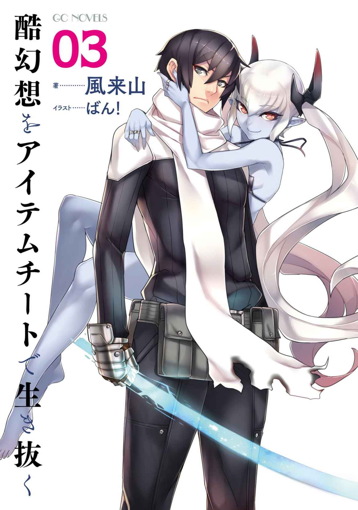
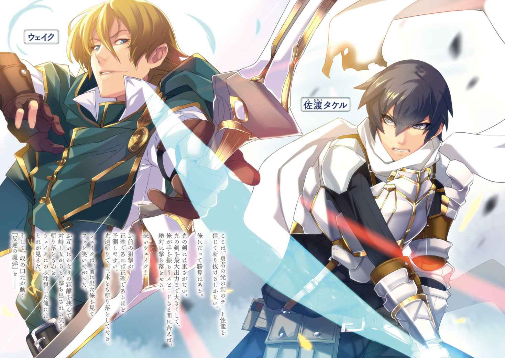
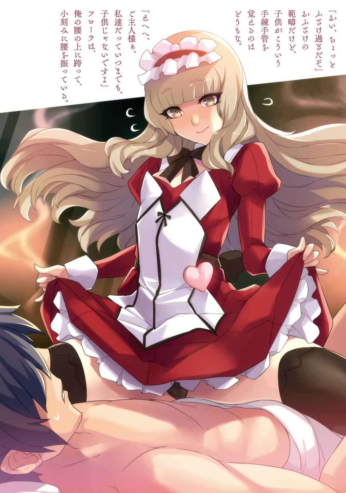
※本作品の全部あるいは一部を無断で複製・転載・配信・送信したり、ホームページ上に転載することを禁止します。本作品の内容を無断で改変、改ざん等行うことも禁止します。また、有償・無償にかかわらず本作品を第三者に譲渡することはできません。
※本作品は電子書籍配信用に再編集しております。
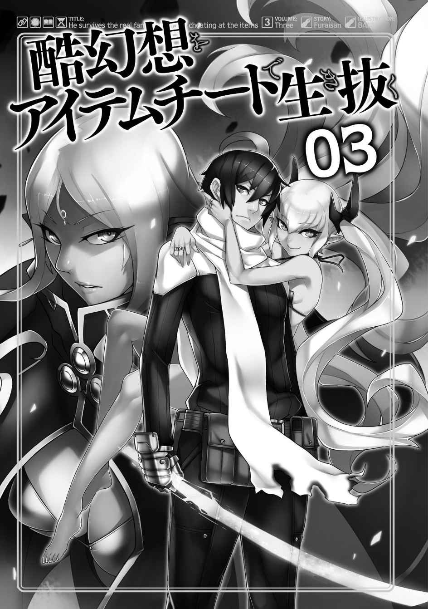
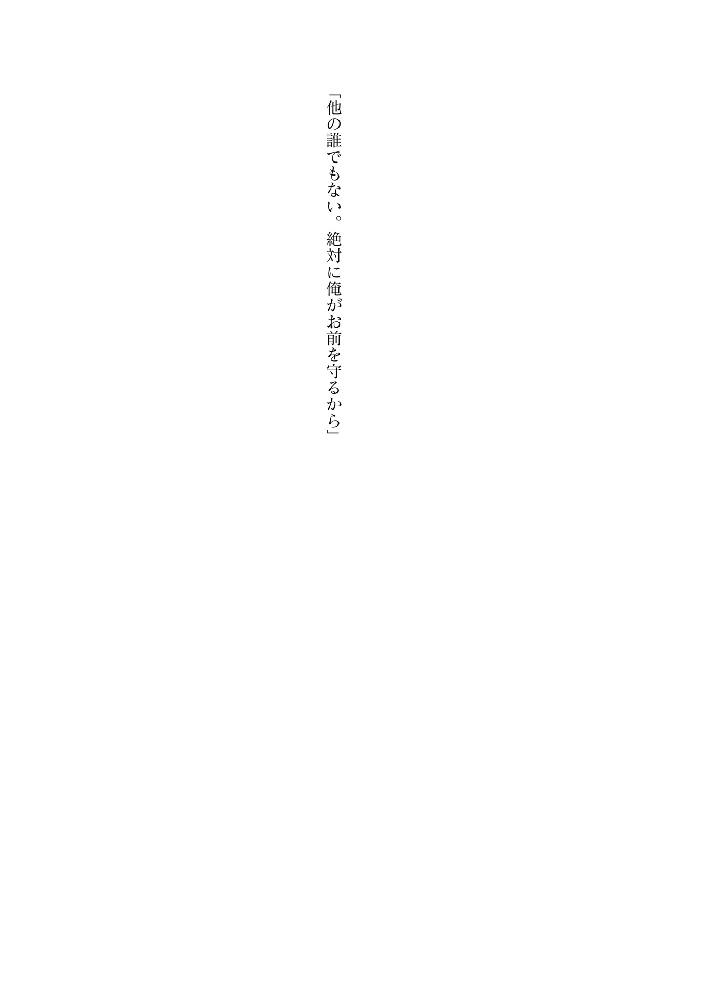
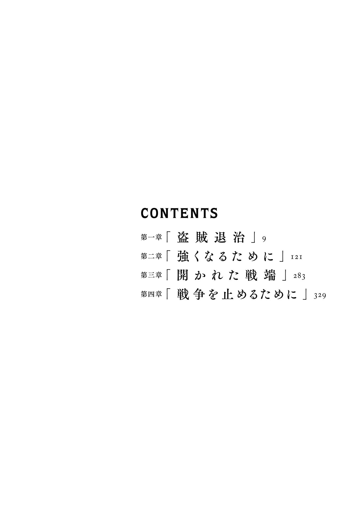
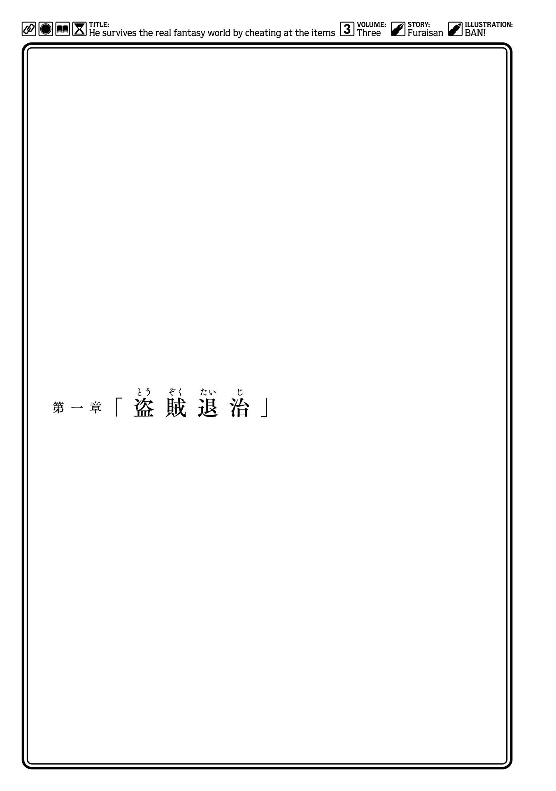
「日々平穏と言ったところか......」
王都のクーデターを解決して、エストの街の佐渡商会本店に戻ってきて数日、俺はすっかりぬるま湯に浸かったような生活をしていた。
本来の俺、佐渡タケルは、知らない人と話すのが苦手なコミュ障なのだ。
それが、シレジエ王国にやってきてからというもの、あれよあれよと言う間に救国の勇者に祭り上げられて領地持ちの貴族になってしまい、その挙句に義勇軍を率いてシレジエ王国の覇権を賭けた内戦を戦い抜くこととなった。
振り返ってみても、本当に無茶をしたものだと思う。
こうして、自分のお店の端っこに座って、日がな一日店の繁盛ぶりや、シャロン達、メイド服姿の奴隷少女が、せっせと働いている姿を眺めているほうが俺の性に合っている。
そして、手元にある経営担当のシェリーが書いた収支報告書を読み返して、俺はまた儲かったなと嬉しくなった。
「お金儲け、お金儲けっと」
今やシレジエ王国の全土に広がった佐渡商会の商業網、そこで儲けを出す新商品の構想をゆっくり練ったりできれば、俺はそれで幸せである。
なにせ、酷幻想の文明は遅れているから、現代知識を利用した金儲けの材料は、いくらでも湧いてくる。
金のかかる戦争なんかより、商売のほうがよっぽど面白い。
「ご主人様、大変です！」
俺の護衛であるシュザンヌが店の表から駆け込んでくる。
シレジエ王国の内戦は、簒奪者のゲイルの死亡で幕を閉じたが、まだゲイルに味方して暗躍していた隠形の上級魔術師の正体が掴めていない。
そのため、俺の周りを護衛のシュザンヌとクローディアが警戒している。
「どうした、シュザンヌ？」
またトラブルかと思うと、俺もさすがにウンザリする。
もうちょっと、ゆっくりさせて欲しい。
「あのですね、店の表にデッカクてー、豪華な馬車が来ました。馬が四頭もついてます！」
まだ十二歳で騎士見習いの奴隸少女シュザンヌは、小さい手のひらを大きく広げて、精一杯の説明をする。
それほどデッカイ馬車ね......。四頭だての大型馬車というと、乗ってるのは大貴族か、大商人か、王国政府関係だな。
ふう、もしかすると王都シレジエの政府から姫様を迎えに来た馬車かもしれない。
この国の王位継承者であるシルエット王女殿下が、なぜかうちの店に来てしまっているのだ。
俺だって領地を持っている男爵になった上に、名前だけだがこの国の摂政という大役を任されているのに、統治を全部代官に任せエストの街に引きこもって商売に専念している。
だから、あんまり人のことは言えないのだが、国家元首となる王女殿下が王都を不在にするのは、さすがに問題視されたのかもしれない。
むしろ、お迎えが遅いぐらいだ。
そのような事情があるので、てっきりお出迎えの馬車かと思って応対したのだが、乗っていたのは意外な人物だった。
「タケルどこですか？あなたのシスターリアが参りましたよー！」
「ステリアーナさん、うちのお店で騒がないでください！」
なんだ、来たのはリアか......。
四頭立ての馬車に乗ってご到着とは、偉くなったもんだな。
ちなみに、店に飛び込んできたリアを注意したのは、獣人の血が混じってるせいでオレンジの髪に犬耳が生えている商会店主のシャロンである。
もちろん、シャロンが注意してもリアは聞いちゃいねえ。
愛称リア、正式名称シスター・ステリアーナ。白地に青のラインが入ったアーサマ教会のローブに身を包んだ聖女である。
フードで隠し切れないほど豊かなブロンドの髪と、やたら無駄に大きい胸。他ならぬ俺を勇者と認定してから、ずっと付き纏っている騒がしいシスターである。
アーサマ教会に召喚されて、『魔素の瘴穴』の封印を永続させるために、魔の山の管理にかかりっきりになってたはずのリアが、なぜエストの街に戻ってきたんだろう。
「久しぶりだな、リア」
「はい、あなたのシスターリアが参りましたよー！」
なんで、同じセリフを二回言った......。
俺の目の前の店のカウンターの上に、白いローブ越しでもわかるというか、布越しで余計にインパクトがある重そうなデカい乳を乗せてくる。
とにかく一際乳がデカいのが、この金髪碧眼である聖女の特徴である。
いろいろ聞きたいことはあるんだが......。
「リア、お前のやっていた『魔素の瘴穴』の管理の仕事はどうなったんだ？」
俺という勇者を得て、勇者認定三級から二級にランクアップして伝道修道女から聖女にランクアップしたリアは、神聖錬金術に特化した聖女という『魔素の瘴穴』の封印作業にはこれ以上ない、最高の人材になっているのだ。
そのためか、教会から封印作業に駆り出されていたために、俺の周りも静かになって良かったなと思っていた矢先にこれだ。
「封印用の聖棒のストックなど、必要最低限の準備を済ませてから他の聖女に引き継ぎました。私はタケル担当の聖女ですから、是非もなく一緒にいないとダメなんです！」
勇者付きのシスターは、一生付き纏うというのは、てっきりリアの冗談だと思っていたのだが、本気なのだろうか。
「そうは言ってもなあ......」
「是非もなく一緒にいないとダメなんです」
「だから、なんで二回言うんだよ！」
さっきから何のアピールなんだよ。
「あら、大事なことは二回言うんだって、教えてくれたのはタケルではないですか？」
リアは、嬉しそうに大きな胸を揺らすようにして笑った。
あれ、俺はそんなことを言ったっけ？
とりあえず二回言っとくのがパターンだとは言ったかな。リアはほんと、余計なことばかり覚えている。
しかし、店で騒がしくされるのは困る。ハッキリ言うと、営業妨害なんだよ。リアがくると、いつもこの調子だから商売にならない。
俺がリアと、そんないつもの益体もない会話をしていると、後ろから豪奢な赤い衣を身に纏った太っちょの貴族がやってきた。
「商売繁盛のようだな、タケル殿......」
リアのテンションに恐れをなしているのか、恐る恐るといった感じである。
「おやダナバーン伯爵！ いえ侯爵でしたね。これは、こんなむさ苦しいところによくおいでくださりました」
俺は、立ち上がって出迎えた。
ダナバーン・エスト・アルマーク。このエストの街の領主であり、シレジエ王国でも一二を争う大貴族。
俺が、大変世話になった恩人でもある。
「ハハッ、むさ苦しいとは謙遜ではないか。佐渡商会も、今やシレジエ王国全土に支店を持つ大店だ。後援したワシも、鼻が高いというものだ」
「ダナバーン侯爵、大したお構いもできませんが、応接室のほうにどうぞ」
うちの商会も、ダナバーン侯爵が後援してくれたおかげで、貴族をお通しする応接室ぐらいは作れるようになった。
「ワシも、タケル殿と少し話があるのだ。では、聖女殿には済まないが少しお邪魔させてもらおうか」
俺は大事な話だからとリアを追っ払って、応接室に侯爵閣下を案内した。
●
リアのやつは、王都からエストの街に戻るダナバーン侯爵の馬車に、ちゃっかりと便乗してきたのだそうだ。
道理で、リアが乗る馬車にしては、豪華過ぎると思った。
道中、うるさい聖女が一緒で大変だったろうと思うが、王都での大任を果たし終えて、自分の領土に戻ってきたダナバーン侯爵の表情は明るい。
俺が差し出す茶菓子のマカロンを珍しいお菓子だと喜び、コーヒーにミルクを入れて絹張りのソファーで寛いでいる。
ダナバーン侯爵は今回のゲイルのクーデターで、義勇軍への物資補給の一切を取り仕切り、アルマーク家が傾くほどの私財を投じたというのに、爵位が一つ上がった以外には何の見返りもなかったのだが、それをまったく苦にしている様子はない。
むしろ、臨時政府首班などという身にそぐわぬ役職に就けられたのが窮屈だったようだ。この度、ようやくニコラ宰相の正統政府が発足して、お役御免になり自分の領地に戻ってこられたのを大層喜んでいる様子である。
ダナバーン侯爵は、人徳者ではあるが切れ者と言うには程遠いので、政治向きの仕事を与えられても困ったのであろう。
「ダナバーン侯爵、うちも新商品が当たって儲かってますので、これはいつもお世話になっているお礼といっては些少ですが、どうぞお納めください」
ドカドカっと、金貨の袋をテーブルの上に載せる。
一つの大袋が千枚で、三つで金貨三千枚だ。
お納めくださいとは言っても、手に持っていける額ではないので、実際にはあとでお屋敷のほうに届けさせてもらうんだけどね。
実物を見せたほうが、ありがたみがあるかなと思って並べてみた。
「こんなにたくさん！ いやいや、そんな大金を貰ういわれはない。それはワシも世話はしたが......そんなに出しては、タケル殿の商会も厳しいのではないか？」
金貨のたっぷり詰まった袋を積まれても、すぐに受け取らないのがダナバーン侯爵の人徳のあるところだが、今回のお金は受け取って貰わなくては困る。
シェリーに、今回の戦費供出の代金を試算させて、いかにシレジエの食料庫と言われる豊かなエスト侯爵領でも、これぐらいは渡さないともう財政が回らないだろうと、こちらもわかって出している。
金がないから、こっちへの出資を止めると言われると困るのだ。
しかし、ダナバーン侯爵は喉から手が出るほど欲しい金でも、すぐに目の前の現金には手を付けない。この人は生まれついての大貴族なので、そういう上品さがある。
商人としてならば甘さなのだろうが、貴族としては品位ある態度と言える。
少し受け取りやすくしてやるか。
「いえいえ、ダナバーン侯爵には、いいアイデアを頂きましたからね。侯爵に言われた通り、黄燐マッチを金貨三枚で売りつけたら、シレジエ南部の大商人や貴族に飛ぶように売れたんですよ」
「おおーっ！ そっ、そんなこともあったかな？」
「珍しい物なら、最初は好事家に高値で売りつけろというダナバーン侯爵閣下の卓抜したアイデアがあったおかげで、こんなに儲かったわけです。ですから、これぐらいはお返ししないといけません」
「うむうむ。そうか、ワシのアイデアがなあ......」
ダナバーン侯爵は、大きな腹を撫でて、喜色満面だった。凡庸な人なればこそ、その発想が優れていると褒められれば、嬉しくもなるだろう。
お世辞であるが、これぐらい言っておけば、気分良く受け取ってくれるはずだ。
実際のところ、黄燐マッチより安価な化学パルプを使って作った紙製品の利益のほうが大きいのだが、お貴族様はそんなこと知らなくていい。
ダナバーン侯爵のアドバイスが、貴族の好事家相手に商売するのに役に立ったのも事実だしな。
「うむ、そういうことならばありがたく頂戴しておこう。正直な話をすれば、代官を任せておる家臣からも、今回の戦乱で家計に火が付いていると叱られてしまったので助かるのだ」
やっぱり、そんなことになっていたのか！
今やシレジエ王国を守る主戦力となった義勇軍のベースキャンプに、せっせと物資を供給し続けてくれているのがダナバーン侯爵なのだ。
エスト侯爵領から義勇軍に供される糧秣と衣服があるからこそ、野放図に兵士数を増やし続けてもなんとかなっている。
穀倉地帯の大領主であるダナバーン侯爵が直接やってくれている軍隊への補給を、佐渡商会で間接的にやろうとすると、調達コストが倍額近くかかると試算されている。
その大スポンサーを辞められては、こっちも回らなくなる。いわば、俺と侯爵は運命共同体だ。
「ダナバーン侯爵は、我が商会だけではなく、義勇軍の大事な出資者でもありますからね。ここは持ちつ持たれつということで、お金だけではなくお屋敷でお入用の品を言っていただければ、なんでも届けさせますよ」
「そうか。そこまでされては、ワシもまたお返しをせねばならんなあ」
貢献度から言えば、受け取って当然の金品をもらうのにも、ダナバーン侯爵はお返しをすると言うのである。
本当に人がいい。
「それでしたら、ご領地での免税特権をいただければと思います。とりあえず一年間ということで」
「なるほど、租税の先渡しというわけか。それなら、ワシも気兼ねなく好きな物を受け取れるというものだ。すぐに、そのように取り計らおう」
佐渡商会がエスト侯爵領で行なっている商いは莫大なものになっているので、そこでの税金が全て免除となれば、金貨三千枚は安い。
いちいち入街税や関所の通行料を考えなくて済むのも、気分的に楽になる。
街で商売しようとすれば、その街の領主と癒着してしまうのが一番やりやすいのだ。
商売の話は、これで済んだ。
「ところで、ダナバーン侯爵。シルエット姫様がこちらに来ているのですが？」
俺がそう切り出すと、侯爵はズズッとカフェオレを啜って、ミルクが少し足りなかったのか苦そうに笑った。
「うむ、復興も済んでない王都にいるよりも、勇者であるタケル殿がいるエストの街にいるほうが王女殿下も安全ではないかという話もあってな」
姫がこっちにいて本当にいいのかよと思っていたんだが、王都でのコンセンサスは取れているらしい。
今の政府にとってもシルエット姫様は御飾りとして置いているだけで、実務面ではまったく期待されていない。
むしろいないほうが、やりやすいなんて思われてるのかもしれない。
そんなことを言ったら、あの姫様は落ち込んでしまうかもな。
しかし、うちで姫様を預かるのは一向に構わないのだが、安全という言葉が少し気にかかる。
「王都にいると、姫様に危険があるのですか？」
「実はな、シルエット王女殿下の王位継承について、隣国のトランシュバニア公国が異議を唱えだしているのだ」
ハーフエルフであるシルエット王女を国家元首として戴くことについて、人族主義の貴族が反対しているというのは聞いたが、なんで隣国までもが口出ししてくるのか。
「それって、内政干渉なんじゃないですか？」
「トランシュバニア公国のヴァルラム公王は、遠縁ではあるがシレジエ王国の建国王レンス・アルバートの血を引いている。今は別の国だが、もともとは同祖でシレジエの分家筋に当たるのだ」
なるほど公国ってことは、元はシレジエ王国の公爵家が分離独立したってことなのかな。
一般的に王家の血統でない貴族が成れるのは侯爵までだ。その上の公爵というと、王家の血筋を引いていないといけない。
独立して勢いのある分家が、弱った本家を併呑するなんて話は商家でもよくある話である。
「それって、マズいですよね」
俺がそう言うと、ダナバーン侯爵も、うむと頷く。
「トランシュバニア公国とは、もともと国境線を巡る係争もあったので、シレジエ王国をかなり敵対視しておるからなあ。もちろんシレジエ王国は、アルバート家の正統なる後継であるシルエット王女殿下が継ぐのが当然の話なのだが、トランシュバニア公家も親戚筋である以上、その即位に横槍を入れてくるのも全く理がないことではない。それに、こちらの非主流派の諸侯が呼応するとかなり厄介なことになる」
「もしかして、また戦争になったりしますか？」
「もちろん、そんなことにならぬように、王都のニコラ宰相や、そのご子息であられるライル国務卿が頑張っておられるのだろう」
確か、その父であるニコラ宰相とライル先生は仲が悪かったような。
どちらも有能そうではあるんだけど、政府の中でも親子の確執があって派閥も割れているという。そう考えると、シルエット姫様の新政府も前途多難だ。
俺も他人ごとで話している場合ではない。
「俺ができることってありますかね」
一応、形の上だけの話だが、俺だってシレジエ王国の摂政の位をもらっているので、何かしないといけないのではないかという気にもなる。
「うーん、そう言われてもワシには皆目わからんよ。とにかく、ワシはそのような事情もあるという話をタケル殿にしておくように、ライル国務卿から頼まれたのだ」
そう言うと、ダナバーン侯爵は、ハハッと笑って大きなお腹を撫でた。
なんだ侯爵がお店まで来たのは、ライル先生の依頼だったのか。
そうだな、侯爵は人柄だけは良いのだが、凡庸を絵に描いたような人だ。そりゃ、難しい外交はわかんないよな。
本当に俺が必要になれば、ライル先生からの召喚もあるだろう。
今は、エストの街まで逃れて来ているシルエット姫様を守りつつ、せっせと商売にでも励んでおこう。
何があるにせよ、ないにせよ、金はいくらあっても困るということはない。何をするにしても、先立つ物が一番重要になってくるのだから。
●
ダナバーン侯爵との会談を終えた後、俺は階段を登って、商会の二階にある貴賓室に赴いた。
貴賓室といっても、ちょっと大きい一人部屋なだけだけどね。
シレジエ王国の王女殿下であられる、シルエット姫がお過ごし遊ばされる部屋なのでそう呼ぶしかないのである。
とても一国の姫君が住まうような部屋ではない。
しかも、姫様のお部屋ということでお店にある最上級の絨毯が敷かれた上に、やたらゴテゴテとアンティーク家具で飾られ、護衛のために女騎士まで同居しているので余計に手狭になってしまっていた。
部屋に入ると、本当に狭いなって感じがするが、女性が二人で住んでる部屋なのでいい香りがする。
「シルエット姫様におかれましては、ご機嫌麗しく......」
「はい、タケル様もお元気そうで何よりです」
簡素な白いワンピース姿の姫様だが、内から光を放つような風采が、自ずと高貴なる身分を感じさせた。これが二百四十年続いた王族の血統ということなのだろう。
そうして、もう一方のエルフの血筋は、彼女に妖精めいた完璧な美貌を与えている。上品で通りの良いお声は、艶めかしさすら感じるほどだ。
俺は小柄な姫様の前に跪くと、恭しく手を取って、その白魚のような手の甲に優しくキスをした。
もう最初にあった時みたいに、拝謁の作法を間違えたりはしない。
貴族の作法が良くわからない俺は、気がつくと無作法をやらかしているのだが、姫様にはできる限り恭しくするように心掛けている。
シルエット姫様は、ちょっと事情があって自信を喪失しておられるので、まずみんなでチヤホヤして持ち上げて、王女としての自覚を持ってもらわないといけないのだ。
「シルエット姫様、先程ダナバーン侯爵がいらしておりましたよ」
「まあ、侯爵もこちらにお帰りなのですね」
「ええ、侯爵の居城のほうにも姫様のお部屋を用意しておりますので、もし宜しければそちらにお移りいただいても良いとのことでしたが？」
シルエット姫様が近くにいてくれれば俺も安心ではあるが、ちょっとこのお部屋は姫様には手狭過ぎる気もする。
「タケル様、妾はここが良いのです。ほら、ご覧下さい」
シルエット姫が楽しげな様子で、ほっそりした指先で窓を指し示す。
「窓からの景色ですか？」
「はい、そうです」
特に、珍しい眺めがあるわけではない。
佐渡商会は、エストの街の広場近くにある。いわばメインストリートなので、ガラス窓の向こうには市場の賑わいが見下ろせる。
景気のいい呼び込みの声や、佐渡商会の軒下でやっているクレープ屋台に行列を作る客の賑やかで楽しそうな喧騒も聞こえる。
「うーん、姫様がお過ごしになられるには、少し外が騒がし過ぎるかもしれませんね」
「タケル様。妾は、いつも独りで寂しく過ごしてきたのですよ。ここから見る街の賑やかさが妾にはとても新鮮で、毎朝目を覚ますと嬉しくてしょうがないのです」
あっ、そうかと思う。
シルエット姫様は、前王の寵姫であったエルフのお母さんが死んでから、閑散とした雑木林に囲まれた後宮の離れで、寂しい一人暮らしをしてきた。
仮にも姫様であり、後宮暮らしで貧しいわけではないが、その存在はないものとして扱われ、半ば幽閉されていたと言ってもいい。
そのリハビリには、むしろ適度に狭くて騒がしいぐらいの環境がいいのかもしれない。
お客さんがいっぱい来て、奴隷少女がバタバタと忙しく立ち働いている佐渡商会の二階に住んでいれば、少なくとも姫様が寂しい思いをすることはないだろう。
「そうですね。市井に学ぶのも、立派な女王様に成られるためのいいお勉強かもしれませんね」
俺がそう言うと、シルエット姫は嬉しそうに微笑んだ。
やはりハーフエルフの姫様は美しい、まるで薔薇が咲くような微笑みだ。
「タケル様の周りは、見るもの全てが珍しくて......こんな楽しいお勉強でしたら、妾はいくらでもしたいぐらいです」
「それは、何よりです」
本人がそうしたいと言うものを止めることはない。
俺は、これまで不自由な暮らしを強いられてきた彼女を、好きにさせると決めたのだ。本人がそうしたいというなら、なんだってさせてやれと思う。
この子は十五歳の今まで、たった独りで放置されていたせいで、自信を失い引っ込み思案にもなっている。
未だに外に出る時は、白ローブのフードを目深に被って美しいストロベリーブロンドの髪とともに、ハーフエルフの尖った耳を隠そうとする。
王族や貴族に亜人の血が混じることを嫌う、人族主義が蔓延る因循な貴族が多い王宮とは違い、この街ならばエルフが異端視されることもない。
シルエット姫は世間知らずでもあるので、ここで世間というものを学ぶのも良いかもしれない。
「それでは、気散じにちょっと一緒に街にでも出かけてみますか？」
「あら、それってデートのお誘いですの？」
そうシルエット姫様に詰め寄られて、俺はグッと唸った。
「いえ、あくまでお出かけということで......」
「なんだ、そうですか......。妾とデートするにはまだ早いんですね」
少しがっかりとした顔をされたシルエット姫。彼女は、デートという段階を踏まないと俺と結婚できないと、リアに吹き込まれた話をそのまま信じているのだ。
リアは、俺の野暮ったさを誂う意味で言ったのだが、シルエット姫はそのままの意味に取っている。
それぐらい純真な姫様である。
あまりに世間知らずなのは良くないので、世俗には少し塗れてもいいかとも思うが、リアには妙なことを吹き込まれないように注意しておかないといけない。
「と、とにかく行きましょう。ささやかですが、エストの街の名所もご案内しますよ」
「それは、とても楽しみです」
そういうわけで、俺がシルエット姫と連れ立って店の裏から出ると、積んである店の資材の陰から、スッと大柄な女性騎士が現れた。
ルイーズと同じぐらいの歳で、ルイーズよりもさらに筋肉質な女騎士。この人は、俺と一緒で黒髪なんだよな。
「勇者殿、姫様がお出かけになる時は、私にも声をかけてもらわなければ困るではないか」
「えっと、護衛騎士のジルさんだよね」
「ジル・ルートビアだ。ここに来た際に一度顔を合わせただけなのに、よく覚えていたものだ」
「人の名前と顔を覚えるのは、得意なものでね」
俺も商人だからな、まあジルさんの髪の色が俺と同じだってことが大きいが。
癖のない黒髪をルイーズと同じようにポニーテールに結んでいる。ペールオレンジの肌も小麦色によく焼けているので、一瞬日本人かと錯覚したぐらい。
もちろんよくよく見れば、その筋肉質な長身と彫りの深い顔立ちは、日本人とは違う。
ジルさんは、シレジエ王国の最南端のアンドラ山脈に住むダンドール人という少数民族の出身で、黒髪黒目で肌の色も東洋人によく似ている。
シレジエ王国にも、ジルさんのような少数民族がたまにいるので、俺の容姿も珍しいけど田舎の人かと思われるだけで済んでいるわけである。
その彼女が、シルエット姫の護衛騎士になっているのは、ルイーズが紹介したからだ。
元近衛騎士団の幹部であったルイーズは、ゲイルの乱終結後に王国の近衛騎士団に戻るように、再三再四誘われても断って、姫の護衛騎士になることも断って、その代わりに自分の元部下だった女騎士達を要職に斡旋して回ったのだ。
シルエット姫の護衛を務めているジルさんは、ルイーズの片腕的な存在だったそうで、その実力は折り紙つきと言える。
挨拶だけ済ませたら、ジルさんはまたスポッと、資材置場の隙間に隠れてしまった。護衛は目立つべきじゃないってことか、大きい身体で器用なものだ。
「妾に護衛など必要ありませんのにね」
「いや姫様、それは要るでしょう。姫様が街を一人で歩いてたら、騒ぎになるかもしれないし、ジルさん一人では不安なぐらいですよ」
こんなに若くて麗しい姫君といえば、アイドルのようなものだ。
「あら、国民は誰も妾のことなど知りませんよ」
「えっ、そうなんですか？」
「唯一残った王族が、ハーフエルフなどと言えたものではありませんでしょう。妾のことは、国民への公表も避けられています」
「そういうものですか」
国を代表する王女とはなったが、女王とはまだ正式に認められていない。シルエット姫様のお立場は微妙なものである。
街中を見れば、ニンフみたいな露骨に差別されている種族は一部いるものの、その他の種族が迫害されているようにも見えないんだが、それが一国の元首となると話が変わってくる。
公表できないのは、国の女王として戴くには、まだハーフエルフの姫様は反発が大きいってことなのだろう。
そこを意識改革して、そのうちシルエット姫様を正式なシレジエ王国の女王として即位させてやろうというのが、俺の密やかな野望でもある。
「フフッ、妾など日陰の身なのです。面白いことに今の王宮には、妾の影武者がいるんですよ。影絵の影武者なんて......可笑しい。ウフフッ、どうぞお気遣いなくタケル様もお笑いください」
「いや......」
それ、そんなに面白くない。
なぜ、姫様が自分を卑下して笑いを取ろうとする。
どうリアクションしたらいいか、困るじゃないか。
「ああ笑っていただけない......どうやら妾は、タケル様のお邪魔のようですね。面白い話もできないシルエットは、何処ともないところに消えさせていただきます」
「うわー、待った待った。邪魔とは一言も言ってないです！」
ジルさんが潜んでる物陰に行こうとするから、ジルさん困ってるじゃん。そこの隙間は定員一名だよ。
シルエット姫様は、急にネガティブモードに入ることがある。ずっと日陰者の立場で放置されていた後遺症なのだ。
さて、これをどう励まして自信を持たせたら良いやら。
「では、タケル様のご厚情にお応えして。妾は、もう少しだけ存在することを許していただきます」
「ずっと存在してくれていいですからね」
存在することを許さないと俺が言ったら、姫様はもしかして消えるのか......。
姫様は姫様なりに、自分の性格がネガティブ過ぎるのを自覚して、せめて笑わせようとしてくれたのかもしれない。
自虐的な笑いが、洒落にならないほど滑ってしまうってことはあるよね。
こういう時こそ、何か明るい話題で空気を変えないと。
「シルエット姫様！ さあ、こんな暗いところに隠れてないで、どっか遊びに行きましょう。ジルさんが一緒でもいいですから」
「でも二人っきりじゃないと、デートじゃないですよね」
なんだ、まだデートにこだわってるのか。
「いや、そもそもデートという話ではなかったと思うんですが......」
だから、リアもそうだけど、なんで二回も同じことを言う。
「ごめんなさい、しつこかったですよね。でもデートしないとタケル様とは結婚できないと、聖女様に何度も注意されたもので......あと、大事なことは二回繰り返してアピールしろともお教えいただきました」
やっぱり、リアの悪影響か。
あいつ、王都で『魔素の瘴穴』封印の仕事もろくにしないで、姫様に何を吹き込んでるんだよ。
もしかしたら、リアなりに王宮で孤立しがちな姫様を気遣ってあげたのかもしれないけど、大きなお世話である。
それより、ちょっと気になるんだけど......。
「あのぉ、姫様は......えっと、念の為に聞いておくんですが、俺とまだ結婚したいとか、少しでも思ってるのですか？」
「いえ、そのような大それたことは思っておりません！」
思ってないんだ。そうか、変な勘違いをする前に聞いておいて良かった。
「無理に俺と結婚しろとか、ライル先生が言ってることは、真に受けなくていいですからね。せっかく王宮から解放されたのだから、姫様も少しは自分のお好きなように生きればいいんですよ」
「タケル様の側室の末席にでもお加えいただければ......」
なんかボソッと、不穏当な言葉が聞こえた。なに側室って？
俺が聞き質す間もなく、物陰からノソっと長身の女騎士が出てきた。あっ、なんか怒ってる。
シルエット姫様を守るように、ジルさんは前に出る。
「勇者殿、シルエット王女殿下は、唯一の王位継承者なのですぞ。それを側室の末席などとは、あまりにあまり！ シレジエ王家に対する侮辱にもなりましょう！」
「いやいや、ジルさん。俺が言ったんじゃないから！」
側室ってなんだっけ、正妻とは別の奥さんのことだよな。サブ的な。
俺は、誰とも結婚してないからね。正室がまずいないから、側室もないよ！
そう思ってたら、シルエット姫様がさらに火に油を注ぐ。
「申し訳ございません、この半端者がタケル様の側室などと生意気なことを申しました。妾など、端女の性奴隷で結構でございます」
「勇者殿！ 言うに事欠いて姫様を端女だと！ あとカキタレってなんだ？ と、とにかく王女殿下を愚弄するつもりなんだな！」
激昂したジルさんは、腰にぶら下げた長剣の柄に手をかけてにじり寄ってくる。
なんだこのコント......もう付き合いきれねえ。
カキタレは、絶対リアが教えたんだろ。俺も下品過ぎて意味が良くわからないけど、とにかくシレジエの言葉じゃねえぞ。
「落ち着いてジルさん！ とりあえず応接間でゆっくり話しましょう」
ここで話していて、本当にジルさんにたたっ斬られては敵わない。
「そうですね、お出かけもいいですけど。お茶もいいですね」
シルエット姫様が賛成してくれたので、とりあえずお茶することになった。
よく考えたら、街をほっつき歩いていたらまたリアに絡まれる可能性もある。
姫様とこんな話をしていて、リアに絡まれるとさらに面倒なことになるので絶対に避けたい。
リアについては、姫様に余計なことを吹き込むなと怒ってとっちめたい気持ちはありつつも、これ以上話をややっこしくしたくないので顔も見たくないという、複雑な気持ちである。
●
応接間で紅茶を振る舞って、シルエット姫とジルさんにお菓子を出す。
とりあえず、ジルさんを落ち着かせないといけない。
「この焼き菓子はなんだ。パンのようなケーキのような......柔らかい味わい。うむぅ、凄く美味いなぁ」
落ち着かせようとは思ったが、あまりに簡単にジルさんが機嫌を直したので、ちょっと拍子抜けした。
甘い物を食わせたら落ち着くのか。この人、単純だ。
「妾も美味しいと思いますよ。このような香り高いお菓子は、王宮でも食べたことがありません」
シルエット姫はともかく、やたらジルさんがカップケーキに感動している。よっぽどの甘党なのかな。
工夫して作ったうちの菓子を褒められたら、悪い気はしない。
新鮮な卵やバターをたっぷり使った焼きたてだから、そりゃ王都の気の抜けたような菓子よりは美味しかろう。
王都の砂糖菓子は、砂糖を多く入れれば上等だと思っている。そのような駄菓子に、うちの小さなパティシエ達が作った上菓子が負けるはずもない。
カップケーキなど、序の口なのだ。
「アハハッ、うちの料理長が優秀ですからね。姫様達がお土産に持ってきてくれた紅茶も美味しいですよ」
俺はどっちかと言うとコーヒー党なのだが、王室御用達の紅茶も悪くない。
「ルイーズお嬢様が、我らが騎士団に戻って来られないのはなぜかと思ってたが、このようなお菓子を毎日食しているのでは、仕方がないのかもしれん」
「それで納得しちゃうのか......。あとルイーズってお嬢様なの？」
元々は騎士団のエライさんってのは聞いたけども、あのルイーズがお嬢様はちょっとありえんぞ。
そりゃ、名前だけはお嬢様っぽいけども。俺が知っているルイーズは、荒野を旅する冒険者の女剣士だ。
「カールソン家は、二百四十年続く武家の名門だ。我がルートビア家も、ルイーズお嬢様の郎党に当たる家柄。勇者殿はご存じないようだが、シレジエの武家には武家の格式というものがある。ルイーズお嬢様は、武家の頂点に立たれるお方だ」
「そんなに偉い血筋なのか？」
「カールソン家は準男爵の家格を持つ、帯剣貴族でもある。古より王家の剣術指南役を務めてきた流派でもあり、騎士の中の騎士として我々武家には尊崇されている」
どうやらルイーズは、貴族令嬢でもあったようだ。それなら、お嬢様というのもわからなくはないけど。
しかし、官僚にしても騎士にしても、そうやって一族郎党だけで、重要ポストを独占してたからゲイルみたいなのが出てきちゃったんじゃないかな。
そんなことをチラリと思ったが、まあ言わないことにした。言ってすぐどうこうなることでもないからだ。
「お父君であられるジェローム卿も、本当はルイーズお嬢様を勘当したのを後悔しておられるのだ！ お嬢様の冤罪はもう晴れたわけだし、早くお家を継いで近衛騎士団長に御成りになって我らを率いてくれれば良いのだが......勇者殿は、お嬢様が何を考えているか聞いてはいまいか？」
「いや、俺もルイーズの考えはさっぱりだよ」
「お互いに意地を張っておられるだけで、ジェローム卿もルイーズお嬢様に家門を継いで欲しいに決まっている。勇者殿からも、言ってもらえぬだろうか？」
「うーん、俺だってルイーズがいないと困るんだよね」
カールソン家の複雑な事情は知らないし、ぶっちゃけどうでもいいんだよな。
ルイーズがいないと、義勇兵団をまとめる団長がいなくなる。
「そうか、済まなかった......勇者殿にもご都合はあろうな」
「ありゃ、やけにあっさりと引くんだな」
「あのお嬢様は、言っても聞かぬ性格だし......勇者殿に口添えしてもらっても、話がかえって拗れるかもしれないと思ったのだ」
「ハハッ、そりゃ違いない」
俺がその「ルイーズお嬢様」ってやつでからかったら、怒って王都に帰るかもしれないけどね。
いや、その前にぶった斬られるかもしれない。リアの真似をして、ふざけるのは止めよう。
しかし、あっちもこっちもお偉いお家というのは、親子の確執があって大変なようだ。家門を継ぐとかって話になると、個人的な話だけでは済まなくなるのだろうね。
「それに、こんなに美味しい菓子があるなら、こっちにおられたほうが、お嬢様は幸せなのかもしれない」
「ジルさん。それ、そんなに気に入ったんなら俺のも食べなよ......」
「おおっ、勇者殿。この恩は決して忘れぬ！」
「いや、そんな大層なもんじゃないけど」
そんなに甘味が好きなら、今度は生クリームたっぷりの苺クレープでも食べさせてあげようかな。
この世界でホイップクリームを作るのは結構大変な手作業なのだが、こんなに喜んでくれるなら作り甲斐もある。
それにしても、騎士って何かしら性格が濃い人が多い。
そんなこんなで、まったりしたティータイムを楽しんでいたら、何やらお店の表が騒がしくなってきた。
また、リアが何か問題を起こしたんじゃないだろうな？
そう思ったらシャロンがやってきて、得意げに告げた。
「ご主人様、王都から新しい奴隷少女が参りましたよ」
あれっ、俺そんなの注文してたっけ？
姫様もいるのに、奴隷の引き渡しとか、体裁が悪いぞ。
「えっと、姫様、ジルさん。少し失礼しますね」
「タケル様。お仕事でしたら、どうぞ妾達のことはお気になさらず」
ありがたい申し出だったので、俺はとりあえず奴隷少女の引取に行くことにした。
俺が店の前に出ると、王都から幌馬車で運ばれてきた目の死んでいる幸薄そうな奴隷少女が二十六人、商会前に揃っていた。
これを見る度に、またこれかと、俺は心臓が締め付けられる気持ちになる。
そうか、また奴隷少女の追加が来ちゃったか。
「ご領主様、お久しぶりです。ご注文の品をお届けに上がりました」
「おお、シュジェか。元気そうだな」
二十六人の奴隷少女を、三台の幌馬車を連ねて王都から運んで来たのは、シュジェ・ソニエールだった。
黄色い髪に痩せぎすの頬、旅の埃に塗れた革のベストを着ているのに、どこか上品そうな雰囲気がある若い商人である。
元は奴隷落ちしてしまった奴隷商人であり、俺に金貨三百枚で買われて、アンバザック男爵領の内政官として取り立てられた後、俺の出したアイデアを基に自らの才覚で金貨三百枚を稼ぎだして見事に解放を勝ち取った。
今では、俺の領地の人材担当官を務める傍らで、シレジエ王国初の人材派遣業であるソニエール派遣奴隷商会を経営している。
奴隷を買い取りではなく派遣で赴任させる。そして奴隷達が、奴隷用の紙幣を稼いで、自らの努力で解放を勝ち取れる新しいシステムを導入したおかげで、奴隷の作業効率が格段にアップしている。
派遣奴隷は、徐々にシレジエ王国各地の作業現場で受け入れられて、使い捨ての奴隷と切り替わりつつある。
「ええっ、おかげさまで。こうしてデボン商会からも奴隷を大量に買い付けて、随分と恩返しできるまでになってます」
デボン奴隷商会で奴隷として鎖に繋がれていたシュジェが、解放奴隷の商人となってデボンと互角の取引ができるようになったのだから爽快である。
「デボンのおっさんには、もう修道士とは呼ばれてないのか？」
老舗であったソニエール商会の三代目であり、身代を潰して奴隷落ちしてしまったシュジェは、奴隷商人のデボン達から修道士と呼ばれて、からかわれていた。
浮世離れした修道士のような雰囲気も確かにあるのだが、商売ベタのダメな坊ちゃんという意味だったのだろう。
俺がそう言うと、シュジェは声を上げて笑う。
「今の私は、起業家と呼ばれて恐れられてますよ。デボンさんには、奴隷落ちの時に助けてもらった恩はありますが、もう修道士呼ばわりはさせません。もちろん、商売で手加減もしません」
「なるほど、起業家か」
どうやら、シュジェの活躍を見て、起業するという新しい概念が生まれたらしい。
「はい、シレジエの起業家は、ソニエール派遣奴隷商会を起こした私だけではありません。王都では今、ご領主様が作った製品やサービスに刺激を受けて、新しい事業にチャレンジする若い起業家がどんどん出てきていますよ」
「面白いものだな、俺も負けてはいられない」
かつて、俺が作ったモンスター石鹸をすかさず転売して儲けた商人がたくさんいた。それが、商人の抜け目なさだ。
誰かが新しい風を起こせば、それに乗ろうとする若い商人達が出てくるのは当たり前のことだった。
商売上の強敵が増えるわけだが、俺はその新しい潮流に吹き抜ける風の爽快さを感じた。
そうやって商売の仕組みが変わっていければ、古く凝り固まった国の制度も、少しずつより風通しの良い制度へと変化していくんじゃないだろうか。
すぐには難しいが、やがては奴隷制度を撤廃するところまで行けるかもしれない。
再び幌馬車に乗って、新しい商売に行くシュジェを見送って、俺は新しい希望を感じた。
さて、未来の希望は希望として、俺は目の前の現実に対処しなければならない。
「さあみんな、新しいご主人様になられるサワタリ・タケル様です。ご挨拶なさい」
居並んだ二十六人の奴隷少女達にシャロンはそう言うが、いきなりは無理だよ。
そりゃ命じればお辞儀はするけども、最初はまともに話ができる状態じゃない。
「なあ、シャロン。新しい奴隷少女を雇う話って俺に言ったか？」
「あれ、ご報告申し上げませんでしたか？」
「どうだったかな。それは聞いてたかもしれないけど、住む場所とかどうするのさ」
シャロンは、チラッと銀髪ショートカットのシェリーの方を見下ろす。
「いえっ、お姉さま。私は、ちゃんとご主人様にご報告申し上げました！ ほら、この報告書にちゃんと記載されてます」
そう言ってシェリーは、俺に藁半紙の紙束を差しだしてくる。
あー、この前俺が適当に読み飛ばしたやつか。
収支報告だけ見て「儲かってるな」と満足しちゃって、細かい補足説明を読まずにスルーしてしまったのか。
「これね、うんそうだ、見せてもらったよ！ シェリーは悪くないぞ」
シャロンは一瞬、琥珀色の瞳を泳がせてから納得したように頷くと。
「そうですか、ではいいんです。ご主人様、すでにご存知と存じますが、隣の小間物屋を店舗ごと買収し、内装も済んでおりますので、住居は確保できております」
「ええっと、買収したのか。なるほど、じゃあ何も心配ないね！」
すまないシャロン。俺がいい加減に報告書を読んでいたのが悪い。
他の奴隷少女の前で、主人に恥をかかさない配慮、痛み入る......。
「それにしても、奴隷少女を二十六人も追加とは思い切ったもんだな」
「今の商会の規模なら、十分に養育できる数だと愚考します。事業は拡大の一途をたどっておりますし、ご主人様の奴隷になりたい少女は、王都に山ほどいるんですよ」
だから何で、毎回少女限定なんだよ。
いや、聞かなくてもわかる。小さい女の子のほうが、奴隷としての使い道がないから安いんだよね。
しかし、このタイミングはちょっとよろしくなかったなあ。
ほら、何事かとシルエット姫様と、お付きの騎士ジルさんも出てきちゃった。
「シルエット姫様、お騒がせして申し訳ございません」
王都から着いたばかりの奴隷少女達の悲惨さなど、姫様にはあまりお見せしたくない暗部であった。
「いえ、タケル様が奴隷少女を使役しているのは、有名な話ですから」
そんなのが、有名になっちゃってるんだ。
それ、どう考えても悪評じゃないのか。
しかしまあ、奴隷少女が来てしまったものはしょうがないのである。
「姫様、新しい奴隷少女がお店に入ったことで少し立て込んでます。申し訳ありませんが今日のところはお構いできませんので、よろしければ一旦、ダナバーン侯爵の居城にでもお移りになられてはどうでしょう」
新しい奴隷少女を、商会の生活に慣らしていく作業は結構大変なのだ。
商会店主のシャロンに任せても構わないのだが、現場にいるのに俺が手伝わず、シルエット姫様を連れ歩いて街で遊んでいては商会主として示しがつかない。
「あら、タケル様が奴隷少女を躾けるところを、妾には見せていただけると思いましたのに」
「見せると、申しますと？」
「前に、囲われた妾など奴隷と同じと申しましたら、タケル様は自分の奴隷は違うとおっしゃいました。良い機会ですから、妾もこの目でタケル様の奴隷少女がどのように扱われているのか見たいと存じます」
ああ、なるほど。
職場見学したいってことね。
姫様が見るようなものではないと断ることもできるが、見たいというなら見せてやろう。
身分の違いはあれど姫様の境遇も、奴隷少女と同じ籠の鳥みたいなものであった。
同じように奴隷の鎖に心身を繋がれた奴隷少女達が、人間性を回復させる過程を見ることで、姫様のネガティブな性格も矯正できるかもしれない。
そういう心理療法もありだろう。
それに、これから女王になられるお方に、最下層の奴隷の悲惨さを知ってもらえればこれからの治世に役立つに違いない。
「では姫様、今より奴隷少女達をお風呂で洗いますので、見ててください」
「それでは、妾もお手伝いします！」
いや、お姫様って、自分の身体も自分で洗えないもんじゃないのか？
姫様自ら腕まくりしてできるというのなら、お手並み拝見させてもらうが、大丈夫なんだろうか。
じゃあ、みんなで洗おうかな。
「シルエット姫様が手伝うというのだから、ジルさんにも当然手伝ってもらうよ」
「いや、私は子供の扱いは、少し苦手なのだが......」
なんで姫様がオーケーなのに、護衛騎士が断るんだよ。
しょうがないな。
「ジルさん、手伝ってくれたら、あとで特別美味いお菓子をたらふく食べさせるよ」
「勇者殿、任された！」
いい笑顔で快諾した。屈強で頑固そうな見た目に比べて、中身はチョロいなジルさん。
俺よりもチョロい奴がいてくれて、嬉しい限りである。
二十六人もの子供を洗うのは大仕事なのだ。働き手が増えるのはとてもありがたい。
とりあえず、店番の方はシェリーに任せて、お風呂場で洗浄作業開始だ。
言うまでもないが、風呂を焚いてるのは、風呂焚き番のロールである。
さて奴隷少女を裸で脱衣所にズラリと並ばせて、俺とシャロンとシルエット姫様とジルさんとで洗う。
あと、おまけで同じ子供なのに、俺の後を護衛として付いて回っているシュザンヌとクローディアまで頑張って手伝ってくれた。
新しく来た奴隸少女よりは、お姉さんだものな。
シュザンヌとクローディアは、俺の護衛としてお店の仕事は免除されてるから、こっちを手伝っても支障はない。
まずは身体を綺麗にして、肌に傷がないか調べて、あったら薬草で治療する。
そんなこんなで、奴隷少女を洗う作業を進めていると、リアが脱衣所に飛び込んできた。
「タケル、こんなところにいましたか。是非もなく探しましたよ！」
「シスター様、今ご主人様は忙しいんですよ！」
店番のシェリーが止めるのも構わず、店を突っ切って脱衣所まで来たらしい。相変わらず騒がしい奴だ。
どこをほっつき歩いていたのか、おそらくエストの街の教会に行って挨拶してから戻ってきたんだろうけど。
「あら、タケル。お取り込み中ですか？」
「来てしまったものは仕方がない。リア、お前も奴隷少女の身体を洗うのを手伝うんだ」
リアの手も借りたい忙しさ。
「わたくしは、子供を洗うのは大得意ですよ！ タケルを洗うのも得意ですけど」
「余計なことは言わなくていい！」
正直、リアに構ってる暇はなかった。
しかし、大口を叩くだけのことはあり、リアはかなりの戦力になった。
普段は肌を見せないだのなんだの言ってる修道女の白ローブもさっさと脱ぎ捨てて、身体にタオルを巻くと。
リアは、どこにこんな手際を隠していたのだという感じで、テキパキと子供の丸洗いをこなす。
やはり、俺が子供を洗う手つきにはまだ遠慮があって、リアほどにはテキパキと手際良くやれない。
シャロンはともかく、リアに負けるとか、なんか腹立ってくる。
「わたくしは、シスターになるまでもなってからも、しばらくは子供の世話ばかりしておりましたから、懐かしいです」
「そういや、リアは孤児で、お師匠様に育てられたとか言ってたな」
そのお師匠様とやらが、孤児を集めて教会で孤児院をしていたということかな。
リアにしても不遇な生い立ちのはずなのに、どうしてこんな破滅的な性格になってしまったんだ。
リアのお師匠様とやらが養育する過程で、何があったのか疑問に思ったが、よく考えると知りたくもない。
孤児の教育について、一言文句を言いたくても、すでに故人だ。
「タケル、ですからわたくし、子育ては得意なんです」
なんか応答すると、また厄介そうだからスルーする。
「......よし、とりあえず全員洗えたな」
俺は真新しい服を着せると同時に、奴隷少女達に皮の首輪を嵌める。
女の子に奴隷の首輪を嵌める。あまりいい気分はしないものなのだが、これは彼女達の安全のためなのだ。
勇者として有名になった俺の所有物ということになれば、子供達はこの街では粗略に扱われない。何かあった時も、保護は受けられる身分となる。
貧しい自由民よりも、富裕者の奴隷のほうが生き延びやすいというのが、奴隷制度をなかなか撤廃できない理由の一つでもあるのだ。
「なんで、姫様も一緒に並んでるんですか」
首輪を付けられる奴隷少女の列に、なぜかシルエット姫様も並んでいた。
「妾も、いっそのことタケル様の奴隷になってみようかと思いまして」
いや、何を言ってるんだよ。
シルエット姫様が奴隷になった段階で、シレジエ王国が終わる。
その瞬間に、シレジエ奴隷王朝が誕生すると思うと、ちょっと面白いジョークだが。
リア、「その手があったかー」みたいな顔をするな。コラ、並ぶな並ぶな。
並んでも、リアには首輪はやらない。姫様もですよ！
さて、お風呂で綺麗に洗ったあとは食事だ。
食堂へと移動させて、料理長のコレットにあらかじめ用意してもらった食事を与えることとなる。
これまで、ろくなものを食べさせてもらえなかった奴隷少女は、みんなギスギスに痩せていた。
まずは、胃がビックリしないように消化の良い物を食べさせなくてはならない。
長テーブルに着席する、二十六人の奴隷少女達の前に供されたのは、温かいスープと柔らかい白パンだ。
お店で料理を扱うようになってから、佐渡商会も街のパン屋ギルドに加入して、お店にパン窯を設けている。
お店で売られているシレジエ王国のパンは、白パンでも硬くて美味しくない。
銅貨一枚もする白パンなのに、パン種を放っておいて自然に発酵させるか、発酵したパン種を混ぜて使うので、発酵が不完全なことが多いのだ。
発酵したパンが美味しいということは知っていても、酵母菌が発見されていないので、発酵の理屈がわかってないから、そういう作り方しかできないのだろう。
削りカスの取り除きが不完全なパン種で作られた、片銅貨一枚で贖える安価な黒パンに至っては、ボソボソとしてマズいだけでなく麦角病の原因になったりもするので、俺は絶対に子供達に食べさせない。
うちは、ブドウ糖から作った自家製酵母を使ってパンを焼いている。
おかげで、ふっくらと柔らかい美味しいパンが食べられるというわけだ。
「焼きたてなんだけどな......」
みんな、お腹を空かせているはずなのに、目の前で湯気を立てているスープに手を付けない。
俺が先に食べて見せて、シャロンが「食べなさい」と何度も言って、スプーンを手に持たせてやって、ようやくスープに口を付けた。
「あったかい......」
「こんな柔らかいパン、食べたことない......」
スープやパンを美味しそうに食べ始めて良かったと思ったら、奴隷少女の一人が泣き始めてしまった。
その涙は、さざなみのように広がって、みんな泣きながら食べている。
本当に、ただの何の味も付いていないパンだ。
スープだって、牛肉で取った出汁で豆とキャベツを煮ただけの粗末なものである。
普段から美味しい物を食べ慣れている俺にとっては質素な食事なのに、最底辺の奴隷だった少女達にとっては涙が出るほどのご馳走になる。
この格差を思えば胸が詰まる。
ただ出されたパンとスープが、温かく柔らかいというだけ。
小石が交じったジャリジャリとした硬い黒パンすらも、満足に食べられなかった彼女達にとっては、それだけで感激して泣けることなのだ。
こんな光景を見れば、子供がこんな風になってしまうこの国の貧しさを、なんとかしなければならないと思う。
それは、シルエット姫様も同じようで、パンを食べながら奴隷少女と一緒に涙を流していた。
「姫様......」
いずれこの国の女王となられる姫様にも、この国の現状がわかって貰えたのなら嬉しいと思う。
「タケル様、このパン......本当にふっくらしてて美味しいですね」
そっちかい！
ずっこけた、いや、冗談ですよね。
「まさか姫様まで、パンの美味しさに感動して泣いてるわけではないですよね？」
「でもこれ、王宮のパンよりずっと美味しいです」
「まあ、そうですね。確かに小麦本来の味が出て......うちのパンは、シレジエ王国一美味しいですからね」
なにせパン屋の娘だったコレットが焼いているのだ。本職の技術と、俺の知識チートが合わさった特別製だ。
でも、パンが美味しい以外の感想が、姫様からは出てきて欲しい。
目尻に涙を浮かべたシルエット姫様は、声を上げて笑った。
「ウフフッ、冗談ですよ。タケル様の奴隷が幸せだということがわかりました。そして、この国の奴隷が不幸だということも......」
「それがわかっていただければ、お見苦しいところも余さずお見せした甲斐があるというものです」
食事が終わったら、歯を磨かせて寝間着に着替えさせて、隣の建物を改装した新しい奴隷少女達の宿舎に連れて行く。そしてベッドで眠るところまで、いちいち確認しながら教えこまなければならない。
いずれ、奴隷少女達もそれぞれに人間性を回復するだろうが、それにはしばらく時間がかかる。
奴隷は言う通りに動くだけのロボットのようになっているから、赤ん坊を相手にしていると思って、きちんと一から十まで教えるのが肝心だ。
最初さえ、しっかりと正しいやり方を覚えさせれば、その通りにできるようになる。
言われればやるが、自分で考えて動くということができない子供達の面倒を見るのは、結構大変な作業だ。
「ふうっ......」
たかだか二十六人の子供の世話、学校の先生とか保育士とかなら毎日やってるはずだが、俺は久しぶりに気疲れして、ふらふらになってしまった。
体力うんぬん以前に、人間の子供を扱っているってことが、俺にはとても重いものに感じられてしまう。
向いてないんだよな。
俺だってまだ若造なんだから、子育ては荷が重いよ。
「ご主人様、お疲れ様ですね」
シャロンが、疲れて汗だくになった俺の額をタオルで拭いてくれる。
心身ともにグッタリしている俺に比べて、汗一つかいていないシャロン達はみんな立派だよな。
「いや、シャロンのほうこそお疲れ様。今度は、お前の髪も忘れずにちゃんと洗うぞ」
「はい、ありがとうございます。優しいご主人様にお仕えできて、私も幸せですよ」
シャロンが、俺にたまに髪を洗って欲しいと言った約束は忘れてない。
ちゃんと尽くしてくれる相手には、俺もお返しをする。
もうシャロンがいないと俺もやっていけないから、愛想を尽かされないようにしないといけないしな。
そこにジルさんが少し焦った様子でやってきた。
「勇者殿、私に約束した、たらふくのお菓子はどうなっているのだろう？」
なんだ、やっぱりお菓子いるのか。
そっちの約束も忘れてないよ。
「ジルさん、コレットがクレープを焼いてるはずですから、食堂に行ってください」
食事を作ってもらったあと、デザートに生クリームたっぷりの苺クレープを追加して作ってもらうように頼んでおいたから抜かりはない。
用事は済んだとばかりに、ジルさんは消えた。まあ、今日はジルさんも頑張ったのでデザートは全部食べてもいいよ。
いやでもちょっと待てよジルさん、姫様を放りっぱなしで行くのかよ！
護衛騎士の仕事はどうしたんだ。
食堂のある佐渡商会本店の方に走って消えていく身のこなしは、なかなかの手練に見えるけども、護衛騎士失格だろ！
ジルさんに取り残されたシルエット姫様は、呆れたように笑っていた。
いや、笑い事じゃないよね。護衛が、姫様を放置はいけない。
姫様は放置されると、すぐネガティブになってしまうから、俺は気を遣って労いの声をかける。
「シルエット姫様も、今日は本当にお疲れ様でした」
奴隷少女を洗う手つきは、少しぎこちなさもあったが、姫様だってシュザンヌ達程度には役に立っていた。
何もできない女の子じゃないなとは思う。やればできる子なのだ、シルエット姫様は。
「ええ今日の感想としては、妾もタケル様の奴隷少女だったら良かったのになと思いますね」
シミジミと、なにいってんのこの子は......。
「またまた、冗談のつもりですよね。アハハッ、面白いですね姫様は」
なんで俺を笑わせに来ているのか意味が良くわからないけど、その冗談は面白くないと言うと、またネガティブになりそうなので、笑っておく。
「今からでも、妾に首輪をかけていただけないでしょうか......ご主人様」
俺に首輪をかけてくれと、どっから持ってきたのか、シルエット姫様は首輪を持ってくる。
「いやいや、姫様。ご冗談でしょう？ 本当に、奴隷の首輪を付けちゃダメですからね！」
奴隷少女達が人間性を回復していく過程を見せることで、この国の国家元首としての自覚を持ってもらって、ついでにネガティブを克服させるつもりだったのに、何で奴隷になりたいまで悪化するんだよ。
シルエット姫様に奴隷の首輪をつけようものなら、俺がジルさんに斬り殺されてしまうだろう。
姫様がそんなことを言うと、リアも当然のごとく絡んでくる。
「じゃあわたくしは、是非もなく指輪が欲しいですタケル。首輪じゃなくて、指輪ですよ」
「あー、わかったわかった」
リアの発言は、もうスルーしよう。疲れてるから、相手をしきれない。
しかし、リアとシルエット姫様がセットでくるのは、何かのコンビなのか。
二人とも金髪碧眼で、両方ともボケキャラとか面倒過ぎるよ。
せめてボケは一人ずつじゃないと、こっちの身が保たない。俺のツッコミにも限界があるから。
「シャロン、俺はなんか疲れたから......限界だ。この場でしばらく昏倒するね」
ベッドで寝るほどではないが、ちょっとソファーで休ませてもらう。
「かしこまりました、シュザンヌ！ クローディア！ ご主人様がおやすみですので、姦しい姫様と聖女様をどこかにやってください」
どこかにやってくださいは、リアはともかく姫様に失礼なんじゃないか。
俺よりよっぽどツッコミがキツイ。
シャロンって、たまにそういうところあるなあと思いながら、なんか「首輪がー」とか「指輪がー」とか吠える姦しい声は、遠くの方に遠ざかって行く。
静かになったので、俺はシャロンに膝枕してもらって、しばらく横になった。
●
「お目覚めに、なられましたか......」
「ああ、すまないシャロン」
少し休憩するだけのつもりが、ぐっすりと眠ってしまったようだ。ずっと膝枕しててくれたのか。
足が痺れただろうに。
今何時だろう、外はすっかり真っ暗になっている。さっきまで騒がしかったのに、やけに静かになったな。
新しい奴隷少女達が寝てる部屋をそっと覗くと、みんな各々のベッドで健やかに寝息を立てている。
みんな長旅で疲れたんだろう。ゆっくり休ませてやろう。
「ご主人様。お目覚めになられたなら、お食事になさいますか、それともお風呂ですか？」
これは暗に、髪を洗う約束を果たせと言ってるんじゃないかな。
「えっと、そうだな。じゃあ、風呂で約束を果たすことにするか」
「はい、参りましょう。もうロールに頼んで、お湯を入れ替えてもらってます。ご主人様には一番風呂に入っていただきたいですからね」
「シャロンは本当に手際がいい」
自分が動けるのは当人の努力だと思うが、動かずに人を使うのは才能だな。
シャロンは、立派にみんなの取りまとめ役となっている。
「うふふふっ、お褒めに与り光栄です」
シャロンの頬が紅潮して、耳が天を向くようにピーンと張り詰めている。
誇らしげに飛び出たオレンジ色の犬耳は、彼女がとても機嫌が良いという証拠である。
「じゃあ、行くか」
なんで俺が髪を洗うことが、奴隷少女のご褒美になっているのかはよくわからないけど、シャロンがそうして欲しいというならしてやるまでだ。
シャロン達にとって、俺はいわば親代わりになっているのだから、いつまでも甘えたい存在なのかもしれない。
「そのシャロン達に頼りっぱなしなのは、ちょっと情けないけどな......」
「ご主人様、何かおっしゃいましたか？」
いや、たくさんのできのいい娘を抱える身としては、もっとしっかりしないとと思っただけだ。
「シャロン脱ぐのはいいけど、タオルを身体に巻くぐらいの配慮はしろよ」
もう大人なんだから、言わなくてもわかるだろう。
俺も脱衣所で服を脱いで、腰にタオルを巻いて入る。
さて、身体を洗うのが先か、湯船に浸かるのが先か。
シャロンがタオルを巻いてしずしずと浴場に入ってくるのを見て、まず髪を洗ってやろうと湯を桶で湯船から汲んだ。
シャロンの育ちきってしまった身体は、大きめのタオルでも完全に隠れきってない状態なので。
湯船に浸かり、タオルがお湯に濡れてからだと、気まずくなりそうだから。
「だいぶ待たせてしまったな」
「いえ......」
シャロンに頭からざぶっとお湯を被せて、手で石鹸を泡立てて髪を洗う。
艶のある髪は綺麗に手入れされている。奴隷少女同士で散髪とかしてるのかな。
だったら、髪も奴隸少女同士で洗いっこしてくれって感じだが、それは言うまい。
本人がそうして欲しいというのだから、俺はそれに応えるまでだ。
「シャロンは、綺麗な髪をしているな」
「はい......」
なんだか黙って洗っているのが恥ずかしくって、変なことを言ってしまった。
淡いオレンジ色の髪は、お湯で濡れると瞳の琥珀色に近い色合いになる。茶色よりは少し明るくて綺麗な色彩だ。
綺麗に泡立てて、獣耳にお湯が入らないように気を遣いつつ、シャロンの髪をたっぷりと時間をかけて洗ってやった。
さっと流したら終わり、たいしたことはない。
「あのご主人様？」
「んっ」
「身体もお願いするってことはできないでしょうか」
「はぁ......」
「あっ、ごめんなさい」
「いやいいよ、すまん。俺が気にしすぎなのかもしれない」
シャロンに他意がないのはわかっている。
だが、さすがに大人の女性の身体を洗うっていうのは、もう俺のラインを越えているからできないな。
「じゃあ、私がご主人様のお背中をお流しするのはお許しいただけますか？」
「それならいいぞ」
願ってもないことだった。
俺が背を向けると、シャロンが泡立てて背中を洗ってくれる。
なんでシャロン達が洗って欲しいのかわからないなんて言いながら、自分で他の人に洗ってもらうと、やっぱり気持ち良かったりするのだから世話はない。
何も言わなくても、シャロンは後ろから俺の髪まで洗ってくれる。
本当に出来過ぎだな、背中を流してもらったらさっぱりした。
「シャロン、やっぱり背中だけ洗ってやろうか」
俺が背中を洗ってもらったのに、洗ってやらないのは悪い気がする。
「是非もなくお願いします！」
是非もなくって、お前はリアか。
変態が伝染るから、その口調は止めておきなさい。
タオルで前はきちんと隠せよと命じて、背中を向けているシャロンに泡立てて手を付けた。
タオルを使わず手で洗うのは、別にいやらしい意味じゃない。
もう大人になっているシャロンの玉の肌は、繊細な感じで目の粗いタオルでゴシゴシと擦っては傷つけてしまうんじゃないかと思ったからだ。
シャロンは、本当に大きく育ったな。大きくて柔らかくて温かくて......いや、あんまり意識するのは止めよう。
小さくて傷だらけだった少女の頃のシャロンの背中を知っているので、綺麗になって良かったなと嬉しく思うのだが、余計に直視しづらい。
「ご主人様、やっぱり前も洗っていただくというのは？」
「ダメに決まってるだろ」
「じゃあ、私が前も......」
「どうしたんだ、シャロン。お前は、もっと聞き分けがいい子だろ？」
普段はそんなことないのに、こんな時に限ってやけに絡んでくる。
俺がそういうのに抵抗あるのは、わかっているだろう。言わせんな恥ずかしい。
「ご主人様は、どんな奴隷がお好きですか？」
「えっ......」
いや、お前どうして、こんな時にそんなことを言うんだ。なんかいたたまれなくて、俺はシャロンに背を向ける。
「ご主人様が、ただ聞き分けのいい奴隷がよろしいのでしたら、私はそうしますけど」
「それはお前......俺は、自分の奴隷に自由でいて欲しいと、いつも言ってるだろう」
奴隷制度がある今の社会を、俺は認めている。奴隷が虐げられているのも、仕方がない面もあると思っている。
だけど、自分の手の届く範囲では、それを許したくない。
「じゃあ、時にはですよ？ ご主人様のお言葉に、自分の意志で逆らってもいいんですか？」
俺の首にほっそりとした手が回されて、背中に柔らかい感触が当たる。
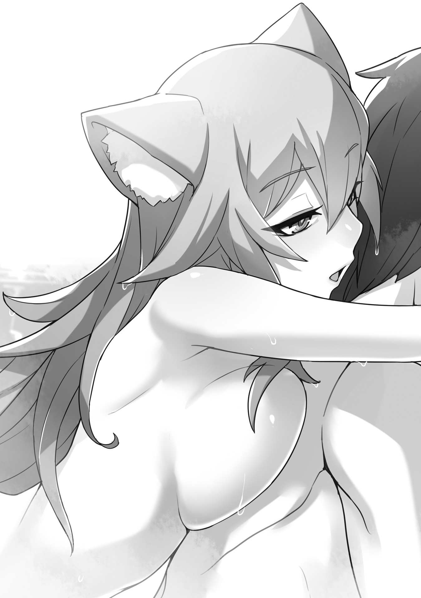
「シャロン、それはそうだけど、これは違うだろっ！」
「どっちなんです、ご主人様。従順な奴隷がお好みなんですか。それとも、奔放な奴隷がお好きですか？」
俺は、全く身動きが取れなくなった。
諸事情により、猫背のまま立ち上がることができなくなってしまったのだ。
「ねえ、ご主人様。どっちなんですか」
これは、もう進退きわまる。
俺は本当にこういうシチュエーションが苦手なんだよ。頭に血が上ったせいか、なんかだんだんと、気が遠くなってきた。
「あー、シャロンさん。わたくし達に黙って抜け駆けとは、いけませんね。アーサマの罰が当たりますよ」
そこに、リアが風呂場に乱入してきた。
いつもならお邪魔虫だが、今日ばかりは助かった！
よくやったと思ったけど、リアのほうを見て褒める気が失せた。
「おいっ、リアァァ！ タオルをつけろ馬鹿野郎！」
全然助かってないじゃないか。
修道女は、他人に肌を見せないんじゃなかったのかよ！
飛び跳ねるな、無駄な肉を揺らし過ぎなんだよ。
正面から、その圧倒的な質量をまともに見てしまったら、もうなんか、何も感想が出てこない。
俺も、シャロンも唖然だよ。
「あらぁ〜でも、わたくしのオッパイを覆える大きさのタオルがないので、隠しても意味がないかと、これは是非もないですね」
「そういうこと自分で言っちゃうんだ、お前......」
いくらなんでもドン引きだわ。
どこの世界に、巨乳を自慢する聖職者がいるんだよ。もはや、それは聖職者じゃないだろ。
あまりにドン引きし過ぎたせいで、血の気が引いたのか立ち上がれる状態になった俺は、即座に桶にお湯を汲む。
そして自分の身体と、リアの衝撃的なアレを見てしまったせいか、ズルッと前のめりにへたり込んでいるシャロンにかけてやると、さっさと湯船へと緊急避難した。
リアだけなら、そのまま横を突き抜けて脱衣所に向かって逃げても良かったのだが。
なぜかリアの後ろから、シルエット姫様とジルさんが入ってきたのだ。
なんだこの包囲網。これはもう、とっさに後ろに下がるしかなかった。
シルエット姫様とジルさんが浴場に入ってくるのはわからなくもない。
どうせリアに、俺が入ったから一緒に追いかけて入ろうと唆されたんだろう。
それはいいんだが、本来隠さなくてもいいぐらいささやかなお胸のシルエット姫は、きちんとタオルを巻いてるのに。
「なんでジルさんも、前を隠してないんですか！」
「おお、勇者殿。お目汚しであったか。これは申し訳ない」
いや、お目汚しではないですよ。
無駄な脂肪のついていない筋肉の張り付いた四肢は、それはそれで美しいと思えるし、スタイル良くて、出るとこきちんと出てますしね。
あと、黒髪ポニテで小麦色の肌ってのが、俺的にはポイント高いです。
引き締まった腹筋も美しいですよ。俺はスポーツ少女のポニテも嫌いじゃないとか、そんなこと言ってる場合じゃなかった！
「いや、目の保養ではありますが......いろいろまずいから、ちゃんとタオルで前を隠しましょうよ！」
「そうしたほうが良かったのか？ 聖女殿がまったく肌を隠してなかったので、あーなるほど、風呂とはそういう作法なのかと思ったのだが」
いやいや、気づこうよ。リアは、本当におかしいから。
なんでリアが普通に聖女扱いされてるのか、俺はいまいち納得できないのだが。
リアはアーサマ教会の聖女として尊敬されてるので、その言動にみんな納得してしまうのだ。
その結果、こういうおかしなことになる。
「あら、そういうものですよジルさん。混浴で肌を隠すなんていけないことです。あとタケル。湯船にタオルを浸けるのはマナー違反だから、是非もなく止めるのですよ！」
「リア、お前がなぜ日本の入浴の作法を知ってる！」
身体を洗うタオルは、石鹸や垢がついてることがあるので、みんなが入る湯船に浸けるのはマナー違反である。それは正しい。
しかし、リアがお風呂のマナーを知ってるわけない。シレジエ王国には、風呂文化ないだろ。
リアは、きちんとかけ湯して湯船に入ってくる。
本当に、お前どこの国の人だよ。
その金髪碧眼でも、実は転生者で中身は日本人だったりするのか？
前世の記憶が不意に蘇ったり、右手が疼いたりする系なのか？
「ほら、タケル。マナー違反の上に、無粋な真似は是非もなく止めるのです。お風呂は裸の付き合いですよ」
「うああっ、その言い回しとか、本当にどこで覚えたんだよ」
リアは一瞬の躊躇もなく、俺の前までスッと来て下半身を隠していたタオルを強引に剥ぎ取った。
お前の行動はもう、本当にツッコミが間に合わないんだよ！
「くはぁ、生き返る......是非もなく気持ちいいお湯ですね」
「その久しぶりに温泉に来た、ＯＬの甘い溜息みたいな反応おかしいだろ。お前はどこの出身だ？」
「はてタケル。ＯＬってなんですか、オーガ・ロードのことですかね？」
「いまさら、そのわざとらしい日本の現代知識を知りませんみたいな素振りも止めろ」
絶対こいつ知ってるよ......何が是非だ、似非異世界人め。
リアは、現代日本の風呂文化に詳し過ぎる。
絶対裏に何かある。今度とっちめてやる。
だが今は、ちょっとマズイ......命拾いしたなリア。
「それよりもタケル。もっと勇者の力を高める秘蹟があるんですけど、是非もなく知りたいですよね？」
「絶対に知りたくない！」
知りたくないって言ってるでしょ。
湯船に浮かべている、デッカイ風船みたいなのをくっつけてくるな。
このままだと、冗談抜きで風呂から出られなくなる。
「シャロン、頼む！」
「はいっ、リアさん今日はここまでですから。下がりましょうね」
「えー、わたくしはまだ何もやってませんよ。ここからが、是非もなくめくるめく秘蹟の華が開くわけで」
「ほら、ご主人様が困ってるから、下がりましょうねっ！」
良かった、シャロンが力押しでリアを押しのけてくれた。
シャロンはこう見えて、獣人の血が入っているので腕力が強いのだ。
リアとの間に割って入ってきた時に、シャロンの胸も盛大に俺に当たって行ったんだが、この際不問に処す。
オッパイをもってオッパイを制すとはよく言ったものだ。いや、そんなことわざはないけどね。
リアが来たら、もう全部シャロンにガードさせよう。
ここは手段を選んでいる場合じゃない。
リアだけならまだしも、こんな醜態を姫様に見られたら恥ずかし過ぎる。
さあ早く、リアに奪われたタオルを取り返して、さっさと風呂から上がらないと。
うっ......。
「なんで、タオルを脱いでるんですかシルエット姫様！」
「だって聖女様が、タオルはお湯に浸けちゃいけないっておっしゃいましたもん！」
それは、凄く正しいマナーなんですよ。
でも湯船で裸になり、さも当然のように俺に抱きついてくるのは、いくら姫様でもちょっとどうかなあと思います。
「あれっ、タケル様なんだか......妾の時には、反応薄いですね？ 凄く失礼なものを感じます」
「姫様相手なら、なんとか自制はできます。でも控えていただけると、嬉しいのですが......」
いくらシルエット姫がストロベリーブロンドで、絶世の美少女で、ハーフエルフでも。
身体も小さいし、胸もお尻も、引き合いに出して申し訳ないけどシェリーぐらいの大きさだからだろうか。
奴隷少女で散々に鍛えられている俺にとって、子供体形はさほどグッとこない。
シルエット姫は成人した（異世界基準だけど）女性だし、鑑賞物として見れば磨き上げられた白い肌は、とても美しいと思うのだけどね。
そこは紳士なので、俺だって目を逸らします。うん、麗しい姫様に対して俺はエロさを感じないのかな。不思議とくっついていると、むしろ冷静さを取り戻せそうだ。
ってせっかく自制心が戻ってきたのに、今度はちょっと硬い弾力があるのが当たってきたんだが......。
「ちょっと待って、なんでジルさんまで俺にくっついてくるんですか」
ジルさん、ちょっとおかしいんじゃないのか......。
「いや、聖女様も、姫様も、みんなしてるからそういう作法なのかと、違うのか勇者殿？」
そんな作法があるわけないだろ！
いや、混浴の段階から間違っているから、そこから違うよ。
頼むから、俺に早くタオルを取らせてくれ。というか、もう本当に湯船から上がらせてくれ......。
結局、俺は全員が出るまで風呂から出れずに、のぼせる寸前まで長湯する結果となってしまった。
もう本当に疲れる。この勢いで、風呂どころかベッドにまでリアがちょっかい出しに来たら困るなと思ってたら。
常に臨戦態勢で寝ずの番をしてくれてる、シュザンヌとクローディアが一晩中ガードしてくれたので、俺の安眠は守られた。
なるほど、護衛騎士というのは凄く役に立つものなのだなと思った次第である。
●
翌日、俺は自分の直属の部下からの苦情を受けていた。
「シュジェに聞いたところ、ご領主様のお店では奴隷少女を二十六人も購入したそうじゃないですか。私の『奴隷少女官僚育成計画』は却下したくせに、遺憾の極みですよ！」
俺に怒っているのは、俺の領地であるアンバザック男爵領の内政官リディアーヌ・ビューロクラートである。
リディを代官に据えたまま領地経営を任せっきりで、ずっと佐渡商会に居着いてしまっているので、怒られるのはわからなくもないが......なんか苦情の方向性が怪しい。
「なあ、リディ。今日は、領地の報告に来たんじゃないのか？」
「それもありますけど、今は奴隷少女の話でしょう。話を逸らさないでください、誤魔化されませんよ」
いや、違うだろう。
南北に隣接した領地とはいえ、俺の領地であるアンバザック男爵領のオックスの街から、このエストの街までは山をぐるっと迂回して、かなりの距離がある。
リディは馬車までチャーターして、そんな下らない話をしにきたのか？
頼むから、領地の代官としての仕事をしてくれよ。
「あのなあリディ、その新しく入った奴隷少女達の世話もあるから、俺だって暇じゃないんだが......」
「ご領主様、あとですね。女の子とお風呂に入る時は、私も呼んでくださいよ！」
なんかとんでもないことを言い始めた。
「いや、なんで馬車で三日以上掛かるのに、風呂に入る度にいちいちリディをオックスの街から呼ばなきゃいけないんだよ」
「美味しい物と女の子は二人で分け合うって、約束したじゃないですか！ 我ら主従、生まれた時と場所は違えど、女の子を性的に食べる時は一つですよ！」
「どんな嫌な桃園の誓いだよ！」
あとそんな誓いも、約束も、した覚えはない。
物語をさらっと捏造するな。
あと一緒に風呂に入っただけで、俺はお前みたいに女の子を襲わないから！
「なんでも王都にいるライルに聞いたら、シルエット姫様までこちらにいらしているそうじゃないですか。ハーフエルフの姫様、ハァハァ......」
ライル先生の学寮時代の同級生でもあるリディアーヌは、見ての通り筋金入りの同性愛者なのだ。
しっとりと艶のあるブルネットの長い髪に、濃紺の瞳。
官服の上着を羽織って、馬にも乗れるようにキャロットスカートを穿いているというシレジエの女性官僚にしては活動的な出で立ち。
リディはプロポーションもなかなかのもので、二十歳過ぎの女性として見れば容姿的に優れている方だと思うのだが、中身は残念なことに変態である。
その大変な変態っぷりはリア以上であり、リアのことも風呂場で襲ったことがある。
まさに、修羅をも喰らう羅刹。
ちょっと性的に、付き合いきれないタイプだ。リアを超えるという段階で、もう俺が制御するのは不可能である。
リディは、ライル先生以外の男には興味がないらしいから、俺には来ないからいいけど、それにしたって女の子絡みの面倒を起こしまくる。
これで優秀な内政官でなかったら、絶対解雇しているのに、俺の領地を任せられるのがこいつしかいないのが辛い。
「口から垂れたヨダレを拭け、リディ。お前......わかってると思うが、シルエット姫様を相手に粗相したら、不敬罪で斬首されるからな！」
お前を呼ばなかったのは、むしろ俺の優しさだぞ。
聖女のリアや奴隷少女ぐらいなら、まだセクハラかましても洒落で済むけども、シルエット姫様に手を出したら、その場で護衛騎士にぶった斬られるぞ。
「護衛騎士のジルさんも、小麦色に焼けたスポーティー美女で、ジュル......好みです。お近づきになりたいし、ジュル......お相手願いたいですね」
「もう嫌だ......お前のそのどうしようもない妄想話に、俺はいつまで付き合わなきゃいけないんだよ」
絶対これ領主の仕事じゃないよ。いい加減に話を進めてくれ。
俺が悲鳴を上げていると、黒髪のショートカットの奴隷少女、ジニーがやってきて俺に書類を手渡してくれた。
「ご主人様、領地のご報告書です......」
消え入りそうな声で、俺にそう教えてくれた。
「おお、助かる。ジニーがいてくれて良かった！」
俺は、おかっぱ頭をヨシヨシと撫でてやる。
気持ち良さそうに撫でられているけど、ジニーも大変な貧乏くじを引いたものだ。
引っ込み思案な性格のせいで佐渡商会の事務担当をやっていたのが運の尽きで、今はリディアーヌの補佐官をやらされているのである。
こんな変態で女の子好きな上司を持って、どれほど苦労しているだろう。おそらく酷いセクハラされまくって......おお、この書類凄く良くできてる。
「おい、リディこれマジなのか。四輪農法ができてるとあるが、何かの間違いじゃないのか？」
「ご領主様、輪栽式農法は長い周期で行うものですから、まだできたと言える段階ではありませんね。試験段階として、今のところご領地のほぼ全域で、上手く回っているとご報告します」
「いや、いきなり四輪農法まで農政改革できるとは思ってなかった」
どんな内政チートだよ。
「アンバザック男爵領は、『魔素の瘴穴』で一度村が崩壊したおかげで、畑の区画整理がとても簡単でした」
「崩壊したおかげでとか、お前ら官僚はみんな不謹慎なんだな」
ライル先生だけじゃないんだね。まあ、結果的に民のためになってるなら文句はないんだが。
「若干、今までより農作が複雑になってわかりにくいと、農民から苦情は出てますが、なんとかしております」
「なんとかしておりますで、なんとかなるのか？」
「そうと決めてしまえば、みんなそんなものかと納得するものです」
「そういうもんか、リディは能吏だな」
シレジエで伝統的に行われているのは、二圃式農法だった。耕された畑のうち片方で作物を作り、片方で牛などを放し飼いにする。
連作すると地力が落ちるので家畜の糞で回復させるわけだが、一年サイクルで交換していけば、せっかくの農地を一年間も遊ばせることになってしまう。
そこで効率的な収穫を求めて、三圃式農法、四輪農法と進化させていくわけだが、その理屈がわかっている俺でも下位文字も読めない農民に、それを指導して徹底させるのは難しい仕事だと思う。
エスト山羊の大産地であり、役に立つ家畜の飼育数が多い上に、大穀倉地帯でもあるという、好条件が揃ったこのエスト侯爵領でも、ようやく俺がダナバーン侯爵に薦めた三圃式農法への改革が始まったぐらいの段階なのだ。
特に四輪農法の導入は、一回あたりの小麦大麦の収穫がむしろ減るので、農民を納得させるのも難しい。
アンバザック男爵領は、領地が小さく元々の耕作地が少ないからという事情もあるのだろうが、それを差し引いても領地全体でいきなり四輪農法を徹底させることができたリディは、有能過ぎる。
こう見えてリディは、馬を駆って領地を駆け巡ることを厭わない、勤勉な活動家であるのだ。
活動家過ぎて、他領の俺のところまで、どうしようもない文句を言いにくるのは勘弁して欲しいけどね。
今日も、唐突にエストの街までやってきたように見えるが、仕事のついでに来ているのだろう。遊びのついでに仕事してる可能性もなきにしもあらずだが。
本当に、仕事だけはできる女。
治世の能臣である。乱世の奸雄にならないように、注意してみてないといけない。
俺が褒めてやっても、リディはつまらなそうにつぶやく。
「ご領主様、こんなもんで褒められても嬉しくありませんよ」
「と、言うと？」
「だって考えても見てください。食料にも、犁を牽かせるのにも使える牛や馬を、エスト侯爵領からバカスカ援助してもらえるボーナスステージですよ？ こんな簡単な復興事業は、できないほうがおかしいですよ。バカにしてるんですか？」
いや、それでも普通、ここまでできるほうがおかしいよ。
「どうせ褒められるなら、ライルにねっちりと性的に褒められたいのに......いないから全力で頑張った甲斐がありませんでした」
そうか、ライル先生がいないから、今日のリディは拗ねているのか。
それにしても、この報告書を見る限り捏造を疑うぐらいの成果があがっている。
農政改革の成果が出てくるのはまだ先にしても、アンバザック男爵領の商売はさらに活発になっているようだし、特産である石材も木材も順調に開発が進んで、各種ギルドから安定した税収が上がってきている。
俺が指示した分業化も、リディが指導したほうが上手く行くみたいだし、推奨している植林事業も、作業効率化の傍らで抜かりなく進めてくれてる。
これはリディにも、ご褒美をやるか。
「わかったリディ。......ちょっとだけなら、奴隷少女の補佐官を増やしていい」
「マジですか！ さすがご領主様は、稀代の名君でいらっしゃる！ このリディアーヌ・ビューロクラートの目は、節穴ではございませんでしたね」
現金なやつだ。
さっきまで怒ってたのに、もう喜んでキャーと抱きついてくる。
「もうわかったから、まとわりつくな。お前は、男が嫌いなんだろ」
「好きじゃないですけど。友愛的な意味で、ホッペにチューぐらいしてやってもいいですよ？」
どうせ、俺がやれと言わないとわかっていて、からかってくれるものだ。
これだから年上は......まあ、嫌いじゃないけどさ。
「遠慮しておくよ。どうせ領地の復興が上手く行ったら、オックスの街に奴隷の子供を救うための孤児院と、庶民が広く学べる学校を整備するつもりだったんだ。そのごく一部で買い取った奴隸の子供を、お前の補佐官として育成してもいいという話で......聞いてるか？」
「モチのロンです。奴隷少女のための孤児院と、あとみんなが学べる学校ですね、かしこまりました。素晴らしい新事業だと思います。早速シュジェ人材担当官に、奴隷少女買い取りの命令書を書きましょうね。いやいや、この重要な選定は、私自らが行かねばならないでしょう。グフフッ、すぐに王都の奴隷市場に行ってきます！」
奴隷少女じゃなくて、奴隷の子供って言ってるだろ。
あと王都には孤児も多いから、親のない子は保護しないといけないのだが、そっちはアーサマ教会も慈善事業でやっているみたいだしな。
うちがやる優先順位としては、放っておくと使い潰されてしまう奴隷の子供からになるだろう。
売り物にならない奴隷の子供を助けていくと、少女のほうが多くなるのかもしれないけど、あんまり趣味を出すなよ。
まあ、どうせリディはこっちが根負けしたあとに、領地経営の成果を見せつけて自分の要求を通すつもりだったんだろうけど。
そこまで計算ずくで、理不尽に怒ったりふてくされて拗ねて見せていたわけだろう。さすが、有能過ぎる内政官である。
だが、こっちだって負けてはいない。
俺は、補佐の奴隷少女であるジニーに、そっと耳打ちしておいた。
「おい、ジニー。仲間の奴隷少女が増えたら、リディアーヌが暴走しないように抑える方法を模索しておいてくれ。できれば弱点を見つけて欲しい」
「了解です......ご主人様」
リディの配下の奴隷少女が増えるということは、俺の目が増えるということでもある。
俺の目の黒いうちは、そうは勝手な真似はさせないから、覚悟しておくがいい。
早速、奴隷少女の孤児院と学校を作ると言い出して、うちのお店を一度飛び出ていったリディだが、慌てて戻ってきた。
「なんだ、リディ。まだ何かあったのか？」
「あのご領主様、大事なことを言い忘れておりました。奴隸少女の話に比べれば、ついでみたいなものなんですが」
「うん？」
「アンバザック男爵領で、近頃やたらと盗賊が出るのでちょっと目障りです。ご領主様の義勇軍に一声かけて、ちょちょっと退治してはくれないでしょうか？」
「お前、それ、ついでで言うことじゃないだろ！」
大変な話じゃないか。ちょちょっとできることじゃねえよ。
自分が能吏だからって、領主である俺にも同じ有能さを期待されても困る。
順調に見えたアンバザック男爵領の経営であったが、盗賊団の出没という問題が起こっているようだった。
内政なら代官のリディに任せておけばいいが、盗賊退治となると領主である俺がなんとかしないといけないようである。
●
ある晴れた昼下がり、俺はオナ村の義勇兵団ベースキャンプに呼び出された。
俺を呼び出したのは、ルイーズ団長。当然ながら、アンバザック男爵領に出没する盗賊団の掃討についての話だろう。
立ち並ぶ宿舎と木の柵に囲まれた運動場では、「気をつけ！ 前！ ならえ！」と体育の授業みたいな掛け声が響く。
今日も真新しい濃紺の軍服に身を包んだ志願兵達が、硝煙に煤けた古い軍服姿と将校の証である銀色に輝く軍刀を下げた教官の号令で、熱心に行進訓練をしていた。
最初のうちは、整列して運動場を歩き回るだけだから、できの悪い運動会みたいにしか見えないが、訓練するうちに集団行動を取れるようになる。
義勇兵は、もともとが粗食に耐えて、厳しい労働生活を送ってきた農民が多い。
地道に訓練を続けて身体を慣らせば、最後には銃を持ち、重い背嚢を背負っても、駆け足で行軍できる立派な兵隊になる。
基礎訓練を終えると、銃士、騎兵、工兵、大砲、輜重の各科に分かれての特別授業もある。
教官として教えている義勇兵ですら、実はまだ従軍して一年も経っていないのだが、ゲイルが起こしたクーデターで実際の戦争を経験して下士官となった古参兵は、新兵とは面構えが違う。
やはり、実戦に勝る訓練はないということなのだろうか。
「なんか、だんだんと立派になってきたな」
組織化が進んだ軍隊だけではなく、軍の施設も増築が進んでいる。ベースキャンプの領域がどんどんと拡大し、のどかな牧場だったオナ村が軍事基地化してきてる。
「最近では、勇者の兵学校と呼ばれているらしいぞ。ここまで大掛かりな練兵所は、シレジエ王国の歴史上でも類がない」
義勇兵団の団長であるルイーズがそう教えてくれた。
「なるほど、学校になっちゃったのか。もう常設施設になってるから、キャンプとは呼べないよな」
「タケルは、各地に庶民が学べる学校を作ろうとしているのだろう？ ここもそれに合わせて呼称を整えようということらしい」
「ふむ、しかし俺が最初に作ったのは、兵学校となるわけか。そうすると、ルイーズも兵学校の校長になるわけかな？」
「私は騎兵科の教授をやることもあるが、学校長というのを置くとすれば、もちろんタケルだろ」
そう言って、苦笑された。
俺が兵学校の校長って、ちょっと複雑な心境だが、それだけ軍事学は重要ということなのだろう。
もともと、シレジエ王国にも商人に算術を教える職業訓練的な学校や、魔術師や高級官僚を育成するための高等教育機関は存在するのだが、庶民で教育を受けられる人というのは、ごく一部の職業に限られる。
もっと庶民が幅広く読み書き計算を習えて、その上で職業技能を深められる学校を作れたらいいなと思って、準備を進めているところだ。
教育もまた兵站の一つであるから、将来的なことを考えれば投資する価値がある事業である。
「それにしても、盗賊退治なんて俺だけが来れば良かったんだけどな」
俺に単独行動は許されないようで、ゾロゾロと近衛と称する奴隷少女達や、リアやシルエット姫や、そのお付きの護衛騎士ジルさんまで付いて来ている。
「そういえば、ルイーズとジルさんって知り合いだったよね？」
「そうだ」
「はい......」
ルイーズがチラッと一目すると、ジルさんは目を閉じて頭を下げた。
敬礼もしない、久しぶりの挨拶もない、ただ一瞥し合うだけで何かが伝わる。
これが武家の名門のお嬢様と、その郎党だった娘のコミュニケーションか。無骨で素っ気ないが、これが彼女達の作法なのかもしれない。
「さて、話は他でもない。アンバザック領内で増えている盗賊団についてだ」
アンバザック男爵領の代官リディアーヌからすでに報告を受けているが、佐渡商会のほうでも、幌馬車が襲われることが多くなったとシェリーから報告が入っている。
うちは、幌馬車に乗っている奴隷少女が漏れ無くマスケット銃で武装してるから大した被害も出ていないが、行商人が襲われるのは困った事態ではある。
「それにしても、なんで盗賊が増えたんだろうねえ」
「タケルが始めた、楽市楽座とか言う奴の影響だそうだぞ。裏街道だったエストの街からオックスの街への道が、商人の馬車でごった返すようになったが、その分だけそれを狙った盗賊も増えたというわけだ」
「なるほど、そこまで考えてなかったなあ」
この世界の貴族は、中世ファンタジーの例に漏れず、関所を設けて街道や街の出入りに税金をかけている。
俺は、自分が商会を経営する商人でもあるので、自分の領地ではその通行税を撤廃してみた。
商人のキャラバンの出入りが増えて、アンバザックの村や街の復興が急ピッチで進んだまでは良かったのだが、まさかその副作用としてそれを狙う盗賊までが増える事になるとは想定してなかった。
実際にやってみると、内政というのはいろいろと想像もしていなかった問題が起きるものだ。
「タケル。不幸中の幸いと言ってもいいかもしれないが、アンバザックの村々の復興には、義勇兵団で武装訓練を受けた兵士が参加している」
「そうか、村は襲われても平気なのか」
「平気とは言わん。だが、最低限、村の自衛はできている。義勇軍も数が増えたから、街道にも十分ではないが警備隊も出せている。だがそれでも、盗賊退治ってのは厄介なんだ」
「と、言うと？」
ルイーズによると、盗賊ってのは山道を知り尽くしていて、敵が多勢なら逃げて、敵が自分達でも倒せそうな小勢なら襲うパターンを繰り返すそうなのだ。
街道の周りならともかく、その奥の開拓がまだ進んでない森の中を知り尽くしているのは盗賊の方だ。
正面から戦えばまず負けない敵でも、森の中でゲリラ戦を繰り返されると厄介な相手になる。
「ルイーズ達の偵察でも、敵の位置は捕捉できないのか？」
「頑張ってはいるのだが、アンバザック男爵領は山や深い森が多い。騎兵隊の偵察とは相性が悪いんだ」
「なるほど、山がちな地形に守られてる山賊相手に騎兵は不向きなんだな」
「それで、タケルに出張って欲しいとの要望が、リディアーヌ代官からあったわけだ。アンバザック男爵領はタケルの領地なんだから、盗賊退治は領主の務めだぞ」
うーん、そうなるよね。
いや、話はわかるんだけど、ルイーズがすでに対処してるのに、俺が出て何をしろと言うんだろうか。
「盗賊退治か......」
しぶる俺の顔色を見て、ルイーズは何か言いたげだ。
「タケル、もしかして、盗賊退治は気乗りしないか？」
「いや、そんなことはないけどさ」
「そうか、お前はわりと戦闘になると派手なことをやるから、血が滾るって喜ぶと思ったんだが......やっぱり、そういうことなんだな」
俺の顔をジッと覗き込んで、わかったようなことを言うルイーズ。
「えっ」
なんだよルイーズ、その俺のことは全部わかってるよ的な顔は......。
「よし、今日はみんな解散。タケルだけは、ちょっと私と一緒に居残りな」
「えー」
居残りさせられる時って、ろくなことがないんだけど。
●
ルイーズと二人で居残り。
何をさせられるのかと思いきや、いきなり馬の後ろに乗せられて延々と山道を進むハメになった。
「ルイーズ、一体どこにいくの？」
「タケル。お前まだ、人を殺すのにためらいがあるんだろ？」
「そりゃあるよ！」
ためらいがないほうがおかしいでしょ。
「そういうお前のチョロだったか、甘い部分は私も嫌いじゃない。そっちのほうが人としてまともだってこともわかってるつもりだ。でも騎士にとっては、その甘さは命取りになりかねない」
「ルイーズにまでチョロが知られてるとか、俺ショックなんだけど......」
チョロの意味わかんないって前言ってたのに、聞いてしまったのか。
くっそー、ルイーズにもお嬢様とか言い返したらいいのかな。確実に殺されるのでやめておくけども。
「これから向かう先は、メス猫盗賊団とかいう、ふざけた名前の盗賊のアジトだ」
「メス猫って、本当にフザケてるな」
でも、盗賊のセンスって、そんなもんか。
イヌワシ盗賊団とかいうデッカイ砦を築いた盗賊もいたもんな。
「そのイヌワシ盗賊団も、本来の根城が王国軍の第三兵団に奪われてしまったので、アンバザック男爵領の方に来ているという噂もある」
「それは厄介だな」
なんでみんな、俺の領地にばっかりくるんだよ。
「メス猫盗賊団は、イヌワシ盗賊団の傘下に入ってる小さな盗賊団のようだ。偵察はすでに済んでいる。だいたいだが、アジトに詰めてるのは十五人ぐらい。私が一気に相手できる数が十三人までだから、後はわかるな？」
「残り二人を、俺が始末しろってことでしょう」
一人で一気に十三人相手できるとか、まんま宮本武蔵じゃないか。
この世界のどこかにいる異世界人が、『五輪書』をそのまま翻訳して広めてるんじゃないだろうな。
ちなみにルイーズは万剣とあだ名されているが、使ってる剣術自体は極めてオーソドックスなタイプだ。
カールソン流という、ルイーズの実家が王国騎士に教えている正統派の西洋剣術が主体である。
ただし、ルイーズの場合はナイフ投げや小弓まで使ってるから、柔軟にいろんなところから学んでいるようだ。
小弓やクロスボウは、本来雑兵が使うものであるし、ナイフ投げに至っては盗賊の技術である。
あの『魔素の瘴穴』事件の時に、ルイーズだけが生き残ったのは騎士の戦い方にこだわらずいろんな武芸を極めたからかもしれない。
「ついたぞ、あそこだ」
「うあ、本当に女だけの盗賊団なんだな」
アジトの入り口は、街道沿いからは見えないように上手くカモフラージュしてあると言えるが、よく観察すれば煮炊きしている煙も見える。
こうやって裏にまわり小高い丘から見れば、女だけがたむろってるキャンプだということもわかってしまう。
「タケルは特に女に甘いから。それで身を滅ぼさないように、ここらで引き締めてかからなければならん。女とはいえ、盗賊は犯罪者だ。殺す時は人間だと思うなよ」
「そういう意味でも殺すのに慣れるのに、都合がいい相手ってことか」
ルイーズは、本当に良く考えてくれてるなあ。
ありがたいし、少し親身過ぎて耳が痛い。
だいたいこの程度の盗賊団なら、マスケット銃の一斉射撃か、大砲の一撃でも仕掛けてやればすぐに壊滅できるのだ。
それを剣で倒させようというのは、俺に戦場での甘さを捨てさせるための演習を兼ねてということなのだろう。
でもさ、そういうあからさまな善意を向けられると、俺はあまのじゃくだからふいにしてしまいたくなるんだぜ？
「作戦は、タケルに任せる。私は、お前の命じるままに動くぞ」
なぜか、凄く嬉しそうに言うルイーズ。
団長なんだから、ルイーズが指示してくれれば......いや、だからこそか？
偉くて強いルイーズが、人に命令されることなんて珍しいから面白がってるのかな。
「じゃあ、まず盗賊団にコンタクトを取って、話し合いをします」
「えっ？」
ルイーズは意外そうな顔をする。
「どうしたの、俺の命令で動くんじゃなかったのかルイーズ？」
「フフッ、そうきたか。いいぞ、私はどんな状況でも敵を粉砕して見せるから。あの程度の数なら囲まれても平気だ」
さて、ルイーズのお許しも出たので、俺は「頼もう！」とメス猫盗賊団のアジトに、正面から足を踏み入れることにしたのだった。
●
「キャハハ、アンタかい、交渉に来た勇者ってのは」
盗賊団のキャンプに正面から入ると、すぐに武装した物騒なお姉さま方に四方を囲まれて。
濃い紫色の巻き髪をタラッと足元まで垂らした、変わった髪形のお姉さんが対応してくれた。
俺の「誰がその場で一番偉いか」スカウターで見るところ、この人がリーダーっぽいな。
「ネネカさん、こいつは勇者で、ここの領主だって騙ってるんですよ」
「そりゃまた......騙りにしても豪気なことだねえ。ボウヤがちょっと派手な格好すりゃあ、騙されるとでも思ったのかい。このメス猫盗賊団のネネカさんが、舐められたもんだねえ」
紫髪で色気ムンムンのネネカは、革の鎧がはちきれんばかりの胸元を見せつけてきた。プンプンと匂い立つような香水の匂いがする。
全部含めて、威嚇行動の一種なのだろうか。
「変わった挨拶だな」
「ほー、この数に囲まれて言うじゃないか、偽勇者のボウズ。何なら舐め返してやってもかまわないんだよ」
舐め返されてたまるか。
「俺は交渉にきただけだ。今なら領内から大人しく立ち去るだけで許してやるとな」
「なんだとぉ！」
女だてらに、なかなかいい声で吠えるじゃないか。
俺はだんだんと、この手の相手は平気になってきた。初対面の女性と話すのは今でも苦手だが、命の危険がある時は、緊張している暇もない。
俺のバックには、リーサルウェポンのルイーズがいる。
誰とは言わないが、いきなりオッパイを擦りつけてくる女の相手をするよりは、女盗賊の首領のほうが随分と気が楽だ。
「俺の領内で違法行為を働いてるのはそっちだ。警告を無視するようなら、実力で排除する。その時は、もう立ち去るだけでは済まさんぞ」
「はっ、やってもらおうじゃないか。多少装備は良いようだけど、この数相手に、二人でどうするんだい。おいお前ら、こいつら畳んで、身ぐるみ剥いでやんな！」
大人しく立ち去ればいいものを。
そう考えつつ、絶対そうはならないと俺だってわかっていた。
相手もそこそこ盗賊としては嗅覚の働く集団で、俺はともかくルイーズの醸しだす殺気はヤバイと気がついてるから、遠巻きにしてるわけだろう。
それなのに、面子を優先して襲いかかってきてしまったのは、失策だったな。
俺はブンッと光の剣を出すと、目の前のネネカの持つ、変わった形の曲刀をたたっ斬ってやった。
斬ろうと思えば、鉄剣ぐらい簡単に斬れるんだよ。
勇者を舐めてはいけない。
「ヒッ、光の剣！」
「相手が悪かったなメス猫！」
俺の後ろでは、ルイーズが一振りで三人斬り飛ばしていた。相手を殺さないように、手加減する余裕すらある。
十三人までしか相手にできないとか、絶対に嘘だろ。ルイーズなら、おそらく盗賊を百人斬りできる。
「まさか本当の勇者様だったとは、お許し下さい！」
「おや？」
俺の目の前の女盗賊達は、みんな手に持った武器を取り落として地に伏せた。
降伏があまりにもあっけなさ過ぎて、罠じゃないかと思ったぐらいだ。
狼狽して逃げようとして、全員ルイーズに反射的に斬り殺されるってのが、予測した一番のパターンだが、メス猫盗賊団はこの土壇場で意外と賢いのかもしれない。
チョロい俺はもちろん、覚悟のあるルイーズでも、武器を放り投げて投降した相手は斬り難い。
ルイーズは、なんだかつまらなそうな顔をしていた。
それでもたった一人で直刀をブンブン振り回して、全員を逃がさないように威圧すると、ルイーズは俺に向かって言う。
「何をしてるタケル、早くこいつらを殺せ」
「えー、すでに降伏してますが、ルイーズさん？」
「ごめんなさい、許して！ 殺さないで、なんでもしますから！」
ほら、盗賊達もこう言ってるじゃん。
あとネネカって奴、今なんでもするって言ったよね、忘れるなよ。
「殺さなきゃ、何のためにタケルを単騎で連れてきたのかわからんだろ」
「でも、俺の指示で動くとも約束したよね？」
グッと仰け反るルイーズ。
こうやってもっともらしい理屈に敵わないのが、この無頼派のお姉さん達と比べて、規律正しいルイーズの弱いところなのかもしれない。
「タケル、じゃあ聞くが、領主のお前が違法行為を働いている盗賊を見逃すというのか！」
「見逃すとは言ってない、降伏したんならこっちの軍に寝返って働いてもらおうと思うだけでさ」
「正気か！ 盗賊をやっつけるのに盗賊を使うとか、それじゃゲイル達のやってたことと変わらないだろ！」
そうか、ゲイルはそんなことをやって出世したのか。
あいつ素行の悪さはともかく、頭が柔らかくてそれなりに優秀だったんだな。
盗賊の取り締まりに、元盗賊を使うのは有効なセオリーの一つだ。
餅は餅屋だからな。盗賊を捕らえたり、被害を未然に防ぐには、元盗賊を使うのが一番いい。
「とにかく、私はそんなやり方には賛成できない。こいつら盗賊は、罪もない行商人を殺めた犯罪者だろ。お前が殺さないなら、私が殺すぞ」
抜刀しているルイーズが殺すぞといえば、それはもう冗談ではない。
彼女の頭の中では、すでに四つか五つ、盗賊の頭が転がっているのだ。そのような絵が俺にも見える。
ビクッと、地に伏せたネネカ達の身体が震える。ルイーズの殺気に当てられて、声を漏らすこともできない代わりに、オシッコを漏らしてる女盗賊までいた。
そりゃ怖いよね、俺も本気になったルイーズを止められる自信はないわ。
「待てよ、ルイーズ。いつだったか、自分の発想がもっと柔軟だったら、失敗しなかったかもしれないって言ったよね」
「それとこれとは違う！」
そりゃ盗賊を殺すのに慣れさせてやろうって、ルイーズの善意も嬉しかったけども。
でも間違ってると思ったら、俺だってちゃんと反論するぞ。
「違わない、ゲイルのやり方と似てるのかもしれないけど、盗賊を使って盗賊を倒すことで結果的に無辜の民の被害は減るんだ。見せかけの正義より、そっちを取るのが俺の領主としての判断だ」
実利を取るのが、商人だからな。
すでに降伏してる女の首を刎ねるのにも、抵抗があるってことも認めるけどね。
「私にはわからないし、認められないが......」
ルイーズは、俺に持っていた愛用の直刀を手渡した。
「今すぐここで私をお前の騎士に任じろ。タケルが我が主となるなら、多少納得いかないことでも眼をつぶると約束しよう」
「えっ......、ルイーズ。一体全体、何を言い出したんだ」
「するなら早くしろ、これ以上聞くなよ！ 貴方の騎士にしてくださいと、自分から言うのが、どんだけ恥ずかしいと思ってるんだ」
顔を真っ赤にして、ルイーズは跪いた。
彼女に恥をかかせるのはマズイ、本当に殺される。
「では、ルイーズ・カールソンを我が騎士として任ずる」
あの肩に抜き身の剣を触れさせる儀式を見よう見まねでやった。
ルイーズは、俺が差し出した直刀の刃にさっと口付けした。
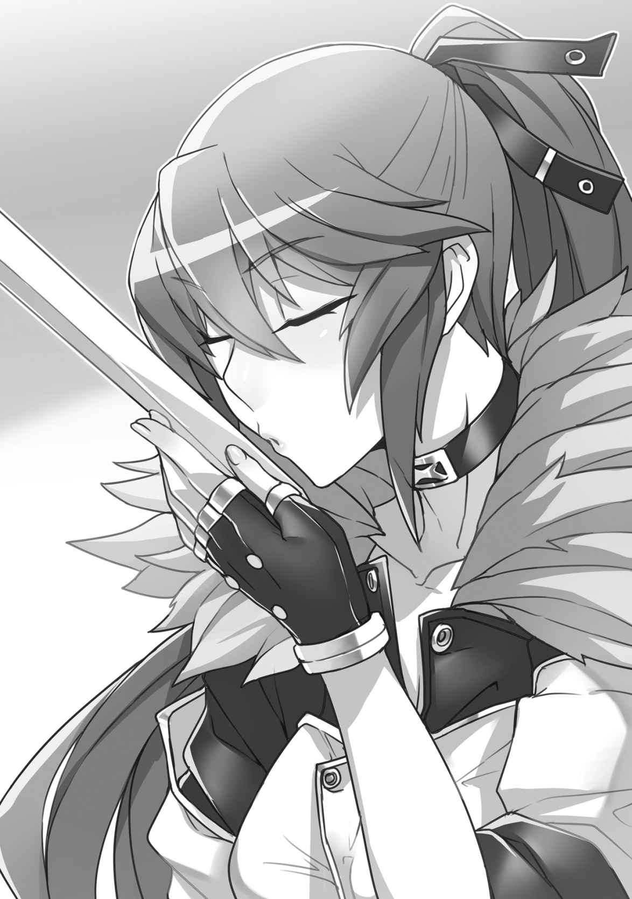
あーそんな、作法もあるのね。
それさっき、盗賊ぶった斬った剣じゃないのかなんて、無粋なことは言わない。
「我が主、タケル・アンバザック・サワタリに誓う！ 片時も我が主の騎士であることを忘れず、民を守る盾となり、主の敵を討つ剣となり、この身が潰えるその日まで戦い続けることを」
「おう......」
ルイーズに直刀を返すと、恍惚とした表情でそれを受け取り、満足気に「じゃあ我が主の好きにしろ」と言った。
土下座しながら見守っていたメス猫盗賊団は、ポカーンとした顔でこっちを見ている。
気持ちはわかるよ、俺もビックリした。
百歩譲って騎士になるにしても、お城の謁見の間にすればいいのに。
まさか攻め込んだ盗賊のアジトで受任式とは、変わってるよな我が騎士殿は。
「えっと、それじゃあ話を戻すが、このメス猫盗賊団のリーダーはネネカなのかな？」
「はい、その通りです。勇者様」
さっきとは打って変わって従順な態度。
いきなりルイーズが騎士の受任式をやりだしたので、それに当てられてしまったこともあるのかもしれない。
ルイーズはと言うと、なんか凄い嬉しそうに、直刀の柄をくるくる回している。
あれ怖いよね、ごめんね盗賊団。ビビっちゃうよね。
「じゃあ、とりあえず事情聴取から始めようかな。メス猫盗賊団は、どこの盗賊団の配下なのかな」
「アンバザック領内の街道を締めているのは、王領から流れてきたイヌワシ盗賊団です。あそこは、配下の数が三百は下らない大盗賊団なので、あたい達は逆らえません」
「ふむ、じゃあそいつらを叩き潰せばいいわけか」
「あの勇者様！ あたい達、殺しはやってません。キャラバンを襲って積荷やお金を頂戴したことはありますが、本当にそれだけです」
「うん、それが犯罪行為だよね」
「......すみません。でも、あたいにだって事情があるんです。故郷のミラ村で弟が病気になってしまって、回復ポーションを買うために娼婦になるか、盗賊団に入るかしか方法がなかったんです」
ふーん、盗賊の頭にまで落ちた理由が、流行病に貧困か。
この世界だと月並みだな。
「じゃあ、これをやろう」
「えっ......、お金をいただけるんですか」
俺は、ポケットに入っていた金貨を三枚ほどネネカに手渡した。
「これで、弟さんの病気の治療費に足りるか？」
「ありがとうございます。これだけあれば助かります」
「おい、タケル......じゃない我が主。さすがにそれは嘘じゃないか？」
さすがにルイーズが会話に割って入ってきた。
俺も思うよ、嘘じゃないかって。でもこいつらが言ってることが、嘘か本当かなんて、目的のためにはどうでもいいことだ。
「嘘じゃありません！ 本当なんです。あと、あたい達は、本当に殺しはやってません。悪事を重ねても、それだけはしないようにしてきました」
「そうだな、俺もネネカが嘘を付いているとは思ってない。病気の弟さんを助けるためにやってるなら、金だけじゃなくてうちの商会には薬草もあるし、治療できるシスターを村に派遣してもいい。助けてやるから」
変態シスターで良ければだが。
ネネカは、ちょっと泣きそうにもない気丈そうな女性だったのに、紫色の瞳から滂沱として涙を溢れさせたので、ちょっと驚いた。
盗賊にも人の心があったのか。
「ううっ......シスター様まで。勇者様が困ったあたい達の味方ってのは、本当だったんですね！」
「まあ、そんな大層なもんでもないけど」
俺は、メス猫盗賊団の一人ひとりの事情を、出身地から家族構成まで洗いざらい聞いて回って、傷ついてる者は回復ポーションで癒し、金に困ってるなら金を配った。
盗賊と言っても生まれついての悪人ではない。王領かアンバザック男爵領のモンスターの群れに住処を追われた難民出身者がほとんどだ。
貧困のために罪を犯すわけで、ほとんどの困りごとは金で解決できる。
流行病に苦しんでというのが理由でも、こっちは高位の聖職者まで付いてる商人だから、高価な霊薬も必要な数を揃えられる。
「勇者様、あたい達、これから改心して真面目に働きます」
「いや、それはダメだ」
「えっ......」
ただ盗賊団を解散させるだけなら、せっかく高い金を払った意味がないじゃないか。
「ネネカ達には他の盗賊を裏切って、こっちの義勇兵団に付いてもらう。必要なら金でも物資でもなんでも援助するが、その分の仕事はしてもらうぞ」
「でも裏切るって、盗賊の世界にも仁義ってものが......」
「じゃあ、盗賊として討伐されて死ぬか？」
「裏切るぐらいなら......、こっちの世界にも仁義があります。裏切りがバレたら見せしめに、ただ殺されるだけじゃ済まないです」
俺が光の剣をネネカの首元に向けてみると、グッと目を瞑った。
裏切りがバレるより死ぬほうがマシってのは、本当みたいだ。なるほど、裏社会には裏社会のルールがあるか。
「じゃあ、家族の命はどうだ。さっきみんな俺に洗いざらい故郷の話をしたよな」
「そんな、罪を犯してない家族まで、関係ないです！」
「俺は何も、家族に手を出すなんて言ってない。ただ、知っちゃったからな。うちの兵団には、盗賊に家族を殺されたって奴もいるんだ。そいつらが、盗賊の家族が住んでる村があるなんて聞いたら、どう思うだろうか」
単純なブラフなのに、家族を出しに使うのはよく効いた。
ネネカは涙を流しながら（さっきの嬉し涙とは違うだろう）地に崩れ落ちて、「勇者様に従います」と苦渋の声を絞り出した。
落ちたな。
まあ本当は、家族にまで手を出すような真似はしないんだけどね。
俺は噛んで含めるように、危険なら逃げてこい、 お前達の家族まで含めて俺の庇護下に囲いこんでやるから、こっちを裏切らない限り身の安全は絶対に保証すると囁いた。
「なあに、バレなきゃいいんだ。盗賊のアジトの位置を定期的に知らせるぐらいで、あとは安全のために、むしろ誰かが裏切ってると噂を広めろ。お前らより、イヌワシ盗賊団の首領を裏切りそうな奴とかいるんだろ」
俺は、首領の座を狙ってるやつとか、ネネカ達より後から入ってきた新入りとか、そういう奴をターゲットに噂を広めろと命じた。
特に新入りが疑われれば、それまでの仲間は信用しようとする心理が働く。
上手くいけば、安全を確保した上で、同士討ちでさらに数を減らしてくれるだろう。
「では、そのように頼むぞ」
「はい......」
メス猫盗賊団は、俺が立ち去る時にはみんな最初の威勢はどこにいったのか、全員が虚脱状態に陥っていた。
もっと普段通りにしないと敵にバレる。覇気を入れ直せメス猫ども！
「我が主......というかタケル」
「なに」
ルイーズが俺を馬の後ろに乗せながら、話しかけてきた。
巧みな騎乗だから揺れは少ないが、それでも舌を噛みそうだ。
「ゲイルと同じといったのは間違いだった、我が主はゲイルよりずっと悪党だ」
「俺の騎士、やめるか？」
「やめない、私がどんな覚悟で騎士にしてくれと言ったと思ってるんだ。騎士の誓いは命よりずっと重い」
「ああ、そうか」
勘の鈍い俺は、ようやく気がついた。
ルイーズが、王国の騎士団のポストを軒並み断ったのは、俺の騎士になるためなのだと。
「ライルの先生さんじゃないけれど、この国はもうダメだと思う。一度は騎士として王国に忠誠を誓った身だからこそ言うが、頭から根底まで腐り切ってる。王国騎士としての私は、もう死んだ。全ての望みを失った」
「そうか」
ゲイルとその配下の騎士、ルイーズにとっては身内だった連中までもが王国を裏切っていたことが、最後の引き金になったらしい。
だから、近衛騎士団長にしてやると言われても断ったのだ。
ルイーズが、心底絶望したのもよくわかる。酷い話だもんな。
俺はこんな酷幻想に、最初からまったく期待してないのだけど。
「だから、私は生まれ変わったつもりでお前の騎士になることにしたのだ。お前が冒険者をやるなら前衛で身を挺して死ぬまで戦ってやろう。王様になりたいなら盾となってずっと従ってやる」
「ルイーズ、なんでそこまで......」
俺は、そこまでルイーズに買われるほどのことをやっただろうか。
最初から今まで、ずっと助けられてばっかりなんだが。
「我が主、お前は女子供に弱くて、チョロくて、勇者になってもまだ頼りないへっぴり腰で、金儲けのことばかり考えてて、一人で馬にも乗れず、騎士の覚悟も誇りもなく、さっきみたいに卑劣な手を使うことをためらわない男だが」
「ルイーズ、なんで急に俺の心をえぐり出した？」
おかしいよね、俺を褒め称えるフェイズだよね。落ち込み過ぎて、危うく落馬しそうになったぞ。
「なんでか自分でもわからないけど、そんなお前の騎士をやりたくてしょうがなくなったんだ。弱い主なら、なおのこと守り甲斐があるとか思っちゃうタイプなのかもしれない、私は......」
「そうか」
よくわからないが、本人がそういうタイプと言ってるならもう仕方ない。
「だから気にせず、これからも存分に私を使ってくれ。それが私の本望だ。一度は冒険者に落ちた、出戻り騎士で良ければだが」
「じゃ、じゃあ、ありがたく使わせてもらう」
なんかルイーズの告白を聞いてて、だんだん恥ずかしくなってきた。
仕えてくれるというのだから、もっと堂々としてればいいのだろうけど、なんか気恥ずかしい。
ルイーズに、ここまで言わせる俺が悪いんじゃないのかとも思う。
●
アンバザック男爵領で暗躍するイヌワシ盗賊団や、その配下の盗賊団の討伐は面白いように進んでいる。
何せ、ネネカ達を裏切らせているので、向こうの情報が筒抜けなのだ。
俺にはライル先生ほどの軍略はないが、敵の位置が見えてる戦略ゲームほど、簡単なものはない。
スパイ様々だな。やっぱり戦いは情報戦である。
戦闘面では、あらゆる要素でこちらが優っている。俺が唯一恐れていたのは、正面からの戦闘ではなく盗賊の狡辛さだった。
盗賊は、正々堂々と戦う騎士とは違う。
森の奥まで追えば、落とし穴が待ち構えている。山の上まで追えば、坂で大きな岩や丸太を転がり落としてくることもある。
こちらの武器であるマスケット銃が弓よりも有用だと気づけば、すぐに鹵獲して使ってくるのではないか。
そう心配していたら、今回の森に分け入っての討伐で、不意を突かれて銃を奪われる義勇兵が出てしまった。
盗賊がマスケット銃を使うようになったら大変だと憂慮していると、近くの茂みからゴソゴソっと鳶色のショートカットの奴隸少女が小さい顔を出した。
「ご主人様、ご報告です」
「おお、ポーラ。敵の様子はどうだった？」
「奪われたマスケット銃ですが、盗賊には鉄砲の仕組みが理解できないようで新しい弾も作れません。なので、ご心配は無用と存じます」
「そうか、よく報告してくれた」
深草色の忍び装束に身を包んだ奴隸少女ポーラが、森から颯爽と現れ、俺の前に片膝を突いた姿勢で敵の動向を報告してくれる。
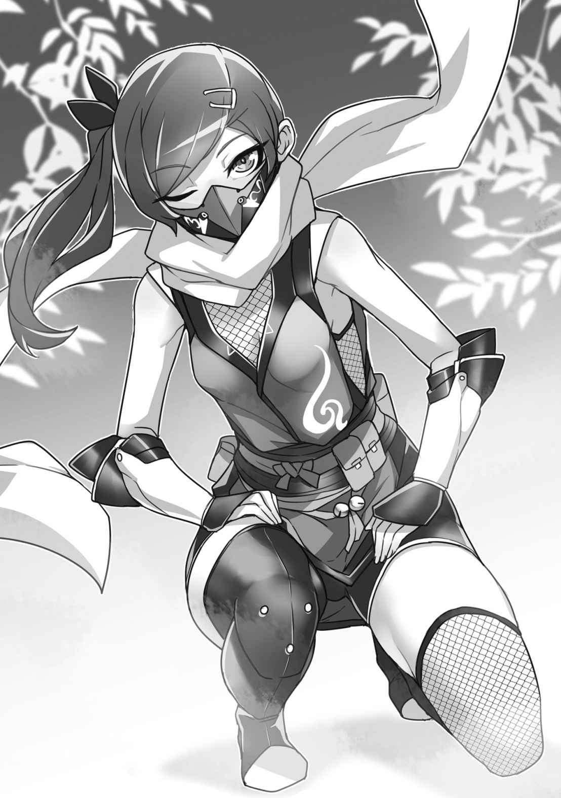
物乞いの子供だったポーラは、目立った特技こそないものの、最初の十三人の奴隸少女の中でも身体能力が飛び抜けて高く、何事にも積極的で器用な質だった。
そこに着目した俺は、前から研究していた忍びの術を教えこんで、ポーラを密偵として育てていたのだ。
深い森を自由自在に行き交うポーラの姿は、頭巾こそかぶっていないものの立派な忍者である。いや女の子の場合は、くノ一と言うんだったか。
奴隸少女はどこにいても目立たない。メス猫盗賊団に小さい女の子が一人増えていたところで、気にする盗賊はいない。
今回のような不正規戦では、ポーラの学んだ忍術が大活躍だ。
ポーラは、スパイとして盗賊団の情報を集めているネネカ達の監視をしながら、こうして俺への連絡役としても働いてくれている。
「あとご主人様、盗賊の拠点はこの森の奥にある洞窟のようです」
「この山のどこかにアジトがあるだろうと思ったが、こんなに近くに......。よし、一気に攻め落とすぞ！」
俺の指示で、義勇兵団の討伐隊が森の奥へと入っていく。
ポーラは、さり気なく樹の根元に白い石を転がしてあったり、枝が折ってあるのが、アジトへの順路であることを教えてくれる。
「目印通りに進めば、盗賊がこちらへの対策に仕掛けている罠にも当たりません」
「そうか、こういう目印があったから、盗賊達は森の中を自由に行き来できたんだな」
不意に森の中で銃声が響き合う。遭遇戦だ、こちらの銃撃に対して向こうも鹵獲したマスケット銃を使ってくる。
見よう見まねで鹵獲したマスケット銃を撃てるのは、さすがベテランの盗賊団だと言えよう。
だが盗賊は、義勇兵団のような組織的な射撃訓練をしていない。
「めくら撃ちが当たるものか。一気に囲んで、片付けてやれ！」
訓練された義勇兵は、鉄砲の音にも怯えない。敵がいかに奪ったマスケット銃を撃っても、使える弾数が限られてるのならどうしようもない。
結局、訓練された義勇兵団の相手にはならず、多勢に無勢で瞬く間に敵のアジトを包囲して陥落させた。
「くっ......殺せよ」
イヌワシ盗賊団の大きなアジトである森の奥の洞窟で捕まえたのが、『イヌワシのアギト』とかいうニックネームのおっさんだった。
下っ端は捕らえてみるとまず命乞いするのだが、こいつは野盗崩れのくせに肝が据わっている。
盗賊団の情報を聞き出そうとしても、絶対に喋らない。盗賊でも、二つ名を持つ大物は違うらしい。
周りの証言で、こいつは頭に次ぐ組織のサブリーダーだとわかった。
リーダーを捕らえられなかったのは残念だが、敵の幹部を捕縛できたなら使いようがある。
「よし、このアギトは逃がせ」
義勇兵達は、みんな目を剥いてこっちを見た。
命じても動かないので、俺はさっさとアギトの縄を切ってしまう。アギトは脱兎のごとく逃げていった。
「おい我が主、それはさすがに」
俺のあまりの所業に、ルイーズが心配して声をかけてきた。
「アギト以外の盗賊は、全員処刑だ。盗賊団への見せしめに、目立つように死体を晒せ！」
ルイーズの目がハテナマークになる。
今にわかるさ。
●
「よし、この手紙をさり気なく『イヌワシの頭』の眼に留めさせろ。直接渡すなよ、お前らがマークされると危なくなる」
ポーラを通じて、メス猫盗賊団を集めると、俺はネネカにお手紙を渡した。
これがイヌワシ盗賊団を内から壊す最後の一手となる。
「あの、勇者様この手紙は？」
「俺が逃がした『イヌワシのアギト』への感謝状が入っている。俺からの感謝の言葉と、お前の地位だけは保証すると書かれただけのものだ」
「これって、もしかして？」
「他の奴は殺されたのに、『イヌワシのアギト』だけ助けられたら、どんな間抜けな頭でも怪しいと思うだろうが、これでダメ押しってことだ。向こうの情報はこっちに筒抜けだから。そろそろ内部に裏切り者がいるんじゃないかって、怪しみ出してる時期だからこそ有効な手となる」
ネネカが、俺が言う意味にようやく気がついて絶句している。
そうだ、ネネカ達の代わりにアギトの奴を盗賊団の裏切り者に仕立て上げるのだ。
彼女の恐れの感情を示すように、地に付くぐらい伸ばしている紫の巻き髪がふらふらと揺れた。
ネネカだって悪逆非道で鳴らした盗賊だ。いまさら何をビビってんだよ？
盗賊だって騙し合いの世界だろ。これぐらいの謀略は、普通なんじゃないのか。
「勇者様は勘違いしてます。盗賊だって仁義があります。ここまでの非道は......」
「俺の先生なら、多分こんなもんじゃすまさないぞ。俺はやり方が甘いって、いつも怒られるからな」
「恐ろしい勇者様、どうか、あたい達だけは助けてください」
「もちろんだとも、ネネカ達は最後までよく働いてくれた。盗賊を全滅させたあとは、新しく作る予定の義勇兵団の密偵部隊に入ってくれ。そこのポーラから忍術を学んで、引き続き俺の密偵として活躍してくれると嬉しい。そうすれば、今回のスパイ経験も役立てることができるだろうしな」
忍び装束を着たポーラは、よく似合っているし、今回の盗賊討伐で情報戦を専門に行う密偵の重要性がよく理解できた。
いっそ、女盗賊をみんなくノ一にしてやって、密偵として活用するのも良いだろう。
盗賊退治が終わっても、自分に利用価値があるとわかってようやく安心したのだろう。ネネカは意を決して、俺の命令を聞く覚悟を決めたようだ。
「わかりました、ここまできたら毒を食らわば皿までです」
「難しい言葉を知ってるんだなネネカ。盗賊団を真っ二つに割る今回の仕事が終わったら、いつでもこっちに逃げてきていいからな。そうだこれを渡しておこう。いざとなれば、お前達もポーラと同じように、この首輪を付けてこっちに保護を求めろ」
俺は、ネネカ達に佐渡商会の認証が入った首輪を配った。
俺の首輪を付けた者には、絶対に手を出さないように義勇兵には厳命してあるから、いざという時の命綱になる。
ポーラの仕事もこれで終わりだ。
俺の側に、くノ一よろしく跪いたポーラの頭を、良くやったと撫でてやる。
「もう勇者様の奴隷にでも何にでもしてください」
ネネカは、首輪を手にそんなことを言っている。
「バカ、本当に奴隷になんかしないさ。誤ってこっちの兵に殺されたくはないだろ、お前らを守るため、念の為に渡しておくんだ。万が一の時は、この首輪を付けるなり見せるなりすれば、義勇兵に投降しても粗略には扱われない」
あくまでも目印に使うだけだからな。勝手に奴隷増やしたら、シャロンに何言われるかわからない。
さて、こうして策を実行してみたものの、戦国時代の謀略がどれほど効くものかと期待せずに待っていたら。
盗賊団の頭と第二位のアギトが相争って、イヌワシ盗賊団は崩壊状態に陥ったと報告が入った。
「人間の心なんて脆いものだな」
あまりのあっけなさに、苦笑してしまう。
しかし、俺はこの時、謀略が上手く行きすぎたせいで盗賊ってものを舐め過ぎていたのかもしれない。
酷幻想は、兵法書通りには進まない。
追い詰められれば、鼠だって猫を噛む。
●
「おうおう、勇者ぁ！」
俺の離間策によって仲間と同士討ちになり、満身創痍のイヌワシ盗賊団の頭が、何を思ったか、俺が駐在していた山村に、いきなり攻め寄せてきた。
総勢三百人以上の部下を従えて、中小の盗賊団を吸収してアンバザック男爵領の闇を支配していた大盗賊イヌワシ団も、もうボロボロだ。
完全な奇襲攻撃には焦ったが、パッと見えるだけでもう盗賊団は五十人も残っていない。
メス猫盗賊団の姿も見えないから、すでに潮時と逃げ去ったのだろう。
ここまでやられても最後までこの数が頭に付き従ったってのは、明らかに小物っぽいボウボウの茶色い髭面の山賊オヤジも、意外に人望があったってことかな。
「貴様、よくもぉぉ！ 俺はもうおしまいだぁぁ！」
山刀を片手に、イヌワシの頭が叫ぶ。しかし、この手のタイプの悪党ってのは、どうして最後の最後で自己主張せずにはいられないんだろう。
いきなりの奇襲なので村の前に陣取っているこちらの味方は、自警団と俺の近衛銃士隊しかいないが、今オックスの街に増援を呼ぶために早馬が走っている。
上手くいけば、こいつらは挟み撃ちにあって壊滅するだろう。
いや、ただの盗賊五十人なら、一斉射撃で終わりかもしれない。盗賊団が正面から攻め寄せてくるなんて、下策もいいところだ。
大砲があればもっと楽だったのに、備え付けてない村だったのが残念。
「だがなぁ、こっちも死に物狂いなんだよ。後悔させてやるぜぇ！」
どこに隠れていたのか、ザワっと山の中から軍勢が姿を現した。三百は超えてる。
しかも革の鎧しか着てないイヌワシと違い、傭兵団クラスの鉄製防具を装備している奴が多い。
「何、伏兵だと。どこの盗賊団だ！」
この期に及んでイヌワシ盗賊団が、これほどの軍勢を用意できたとは、義勇兵の前で大将の俺が狼狽するわけにはいかないが......予想していなかった事態に冷や汗が出る。
「ハハハッ、俺はなあ。盗賊王ウェイク・ザ・ウェイクに縄張りを売り渡したんだよ。俺はもう終わりだが、お前も終われ勇者！」
「盗賊王ウェイクだって！」
イヌワシの頭の言葉に、俺の傍らにいたルイーズが叫ぶ。
「ルイーズ、誰だそれ？」
「シレジエ王国と、隣国トランシュバニア公国、ローランド王国の三地に渡り広がる大盗賊ギルドの長だ。悪逆な風評の反面、義賊としても名前が轟いてる有名人。その実力は折り紙つきだ」
「そりゃ、ヤバイな」
ルイーズが実力を認めてるレベルの大物が出てくるのか。
単なる盗賊退治だと思っていたのに、冗談じゃないぞ！
ガチガチに装備を固めた盗賊三百人を付き従えるように、とんでもない大きさの合成長弓を抱えて、緑のフードを目深に被った若い男が、颯爽と前に立った。
ああっ、このパターンは凄くマズイと本能的に感じた。
義賊の風評に緑のフードって、ロビン・フッド系のチート弓使いだろ！
バカでかい合成長弓を抱えた、緑フードの若い男。
盗賊王ウェイク・ザ・ウェイク。
いかにも大物っぽい強キャラの雰囲気。こちらに犠牲が出る前に倒さなければならない。何、弓矢で鉄砲の一斉射撃に勝てるものか。
「おい、あの緑に向かって、一斉射撃だ！」
銃声と巻き上がる土煙。
俺の命令で、銃士隊のマスケット銃が火線を集中させ、緑フードを撃ち倒さんとするが......弾が炸裂したはずのウェイクは無傷だった。
多数の火器の弾幕をもってしても、一歩も退かせることはできない敵。
運良く銃撃が当たらなかったのか。いや、弾幕だぞ。全弾、弾いたのか？
どちらにしろヤバイ、本当の強敵だ。
弾を食らっても無傷とか、どんなチートだよと吐き捨てたくなったが、銃弾ぐらい俺の『ミスリルの胴着』でも、『黒飛竜の鱗の鎧』でも、はね退けるだろう。
その手の防御力が強化された、なんらかの魔法装備を着けてるってことだ。
弾を食らっても傷つかない装備を着ているとしても、ウェイクは味方に銃撃の被害が出ないように、前に出て銃撃を全て受けてみせた。
その圧倒的な勇気、強烈な存在感。身につけた装備から立ち居振る舞いまで、英雄過ぎる！
「いかん、ウェイクの狙撃がくるぞ」
ルイーズが叫ぶ。
あいつ、デカイ弓を引いて、一気に三本のドデカイ鉄の矢を撃ちださんとしてる。
その力強いモーションを見ただけで、反則級の攻撃がくると本能的にわかる。
「くそ、こうなったら！」
俺だってやってやると、光の剣を出して前に出た。
味方に被害を出さないためには、あいつと一緒のことをやるしかない。
「ウェイクとやら、勇者である佐渡タケルが相手をしてやるぞ！」
俺だって勇者と呼ばれた男だ。こうなったら、こちらも正々堂々と決闘だ。
ここは、勇者の光の剣のチート性能を信じて切り抜けるしかない。
俺にだって勝算はある。
光の剣には重さがない。光の剣を最大出力まで大きくして、俺が剣を振るうスピードさえ間に合えば、絶対に撃ち落とせる。
来いウェイク！
お前の狙撃が正確であれば正確であるほど予測しやすい。光速斬りで、三本とも斬り落としてやる。
ウェイクは、前に出た俺を見てフッと笑いやがった。
お互いにかなりの距離を挟んで対峙しながらも、撃ち出される矢を斬り落とさんと、ウェイクにのみ注視した俺には、それが見えた。
そして、奴の口元が動く、『反逆の魔弾』と──
ビイイイイイン！
耳を震わせる不思議な振動。
それは、引き撃たれた長大なる弓弦の響きなのか、飛来する鉄の矢の風切り音なのか。
それとも、矢にかかっているなんらかの魔法力が立てる音か。
リアが後ろから、俺を守るために聖盾の魔法をかけた。
矢に向かって白銀色の盾が飛ぶが『反逆の魔弾』は、当然のように魔法の盾を貫通した。
いいさ、俺の剣が矢に触れさえすればいい。
光の剣は、当たりさえすれば高速で撃ち出された魔法の矢だろうがなんだろうが、斬り飛ばせる。
極度に集中した俺は、張り詰めた刹那の中でまっすぐに迫りくる矢を一撃で、弾く！
返す剣で、もう一本の矢尻を捉えて、なんとか打ち砕く。
しかし、そこまで──
ああ、この極度に研ぎ澄まされたスローモーションの感覚──命の危険。
久しぶりだな元気だったか。ちくしょう！
先の二本の矢は、俺の剣先を誘導するフェイントだったのだろう。
三本目の矢が、手を振り上げてしまった俺のがら空きの胴体目掛けて飛び込んでくる。
ああこれは、間に合わない！
後は、俺の『ミスリルの胴着』の装甲が、あいつの『反逆の魔弾』とか言う、いやらしい矢に耐えてくれるか、命をかけた勝負。
ドスッと、鈍い音がして、俺は胸に激しい衝撃を受けて後ろに吹き飛ぶ。
胸に受けた傷を見ようとして、俺の胸にルイーズが抱かれていると気がついた時には、もう叫んでいた。
「こんなパターン、いらないんだよ！」
ルイーズが死んだら、恨むぞ酷幻想！
「急所は外れてる」
それだけ言って、俺を庇って魔弾の矢を受けたルイーズは、ごとりと力なく地面に転がった。
魔弾の矢は、『黒飛竜の鱗の鎧』ですら弾けなかった。
さすがルイーズ、とっさに小盾も前に掲げて守っていたが、盾にも穴が開いている。
長いウェイクの鉄の矢は、鉄の小盾ごとルイーズの身体を貫いて止まったのだ。まるで、誰かを貫き殺さないことには、止まれないというように。
これは、チートにしたってやり過ぎだ。
「リア！」
「矢を抜いてはいけませんよ」
リアと、ルイーズの従卒のクローディアが、泣きそうな顔で傷ついた彼女を引きずっていった。
そして、ルイーズの代わりに、今度はシュザンヌが飛び出した。
俺を庇うように前に立つ。大盾を抱えるように構えた小さな少女は、すでに己の死を覚悟していた。
おい、もう止めろ。
止めてくれ。
「シャロン、アレを揚げろ！」
「えっ、本当にいいんですか？」
「いいから早くしろ、敵が次の矢を放つ前に！」
念の為に用意していた奥の手、最後の手段......。
俺の陣から、高らかに白旗が揚がった。
●
「驚いたな、勇者ってやつはこんなにすぐ降伏するものなのか？」
「そうだよ、悪かったなウェイク！」
自然と、指揮官同士が前に出てたので、ウェイクと俺の話し合いになった。
ルイーズの言う通りだ。俺には騎士の誇りなどない。
テロには屈するし、話し合いで解決する。
そして、できるなら後で裏から寝首をかいてやる！
「伝説の勇者を継いだ奴が、どんな男かとわざわざ見にきてやれば、こんな柔な若造だったとは」
そう言いながら緑のフードをかき上げるウェイクは、サラサラの金髪の若い兄ちゃんだった。
俺ほどではないが、ウェイクも若そうじゃないか。
「それでどうするんだ、無駄話をしてる時間はないぞ」
「ふむ、どうせ時間稼ぎでもあるんだろう？」
そうだ、早馬でオックスの街から増援を呼び寄せてるからな。
この状況で、援軍が間に合うとも思えないが、交渉の材料の一つにはなる。
「時間稼ぎもあるが、降伏するってのは本当だ。そっちの勝ちだから、なんでも条件を言ってくれ。金品だって、それなりに用意できる」
「敵の領主相手に、こんなに早くケリが付いたのは久しぶりだ。まっ、俺は殺し合うことしか頭にないバカ貴族じゃない。それ相応の平和金を積めば、退散してやってもいいけどよ」
少し呆れているのか、ウェイクは苦笑している。
「被害が出る前に降伏したんだ、少しはこっちにも色を付けてくれると嬉しいけどな」
「フフッ、評判は聞いてるぞ商人勇者。降伏しておいて、なかなか強かな交渉だな」
商人勇者ってのは、王都の官吏が言ってる悪口だけどな。
楽市楽座でこっちの裏街道に商人が集中したから、向こうの街道が寂れて税収が滞ってるらしい。
そうなれば、嫌味ぐらいは言われる。
「だが俺は盗賊だからな、商売人ってやつはだいっきらいなんだよ」
「くっ......」
凄んできたか。
どうせ交渉を上手く進めるためのことだと思うが、若いのに迫力があるのはやはり実力に裏打ちされているせいか。
さすが三国に渡る裏世界の王だけのことはある。
と、そこへ。
「待ってください、ウェイク様！ あたいの話を聞いてください」
メス猫盗賊団のネネカが、紫の巻き髪を振りながらこっちに走ってきた。
どこにいたのかと思ったら、ウェイクの軍に紛れてたのか。
「おお、どうしたネネカ。久しぶりに来たと思ったら慌ただしいな」
さっきまで凄んでた男がもう笑う。
こっちの援軍が向かってきてるというのに、本当に余裕だ。
「この勇者は、あたい達の命を助けてくれました。それだけでなく、お金をくれて病気の弟の治療もしてくれました」
「なんだ、お前この若造に籠絡されてるのかよ」
ウェイクが目を細めて、つまらなそうに淡い金髪をかき上げる。
「違います、ウェイク様。そうじゃなくて、この人は盗賊のあたい達の話を、頭っから尻尾まで、ずっと信じてくれたんですよ。あたいの言ってる意味が、わかりますか？」
ネネカを見る、ウェイクの蒼い眼の色が深くなった。
クックッ......と、鳥が鳴くような変わった笑い方をするウェイク。
「そうか、そういうことか。おい勇者、ネネカが世話になったようだな」
「あっ、ああ......」
ちょっと気まずいなコレ。
ただの成り行きで利用しただけで、信じるとか特に考えてもなかったんだけど。
「勝ち負けはナシだ。俺は勇者と友誼を結びたいと思うがどうだ？」
「それは申し分ないが、俺に復讐心いっぱいの『イヌワシの頭』はどうするんだ？」
「ふんっ、あいつか。俺はただ縄張りをくれるというから来ただけで、なんの約束もしちゃいない。奴が邪魔ならこの場で叩き潰してもいいぞ」
ウェイクは、先程の凍てついた眼で、ギャーギャーわめいているイヌワシ団を一瞥する。
叩き潰してもいいというのは、嘘ではないのだろう。
ウェイクは、見てて怖いほど感情の上がり下がりの激しいやつだ。
関心があるものには大らかで、無関心なものには冷酷だ。
「それより、勇者。お前の味方を傷つけて申し訳なかった」
「いや、戦闘だったからな。ウェイクと友誼を結べるというのなら、こちらもありがたい」
俺は、ウェイクが差し出した手を握った。
和議の条件として、オックスの街にウェイクの探検家ギルドを建てることに決まった。
まさか、盗賊ギルドが表立って活動するわけにもいかないので、この世界では建前上、探検家ギルドとなるそうだ。
盗賊行為をお宝探しとはよく言ったものである。
ともかくウェイクのギルドに、相応の便宜も図り資金援助もするという条件で、ウェイクの配下はアンバザック男爵領での盗賊行為をしないとの協定を結んだ。
多額の平和金を支払わされるより、よっぽどいい条件だろう。
これで俺も安心できるし、ウェイクの配下も悪さをしない限り、俺の領内で安全が保証される。
盗賊退治に延々と兵を差し向けなければならないコストを思えば、探検家ギルドへの資金援助は大した額ではない。
お互いに、満足行く交渉となった。
探検家ギルドが常に連絡できる街にあるというのも、便利だと思える。
そもそも盗賊がこんなに増えているのは、生来の悪人が多いからじゃない。ネネカ達のように貧しさでやむを得ず犯罪に手を染めてしまう者が多いからだ。
盗賊に対して盗賊行為をさせないという協定がどこまで守られるかはわからないが、ウェイクが領内のならず者をギルドにまとめてくれれば、それに対して真っ当な生業を斡旋してやることだってできる。
何も盗賊を殺すばかりが領主の仕事ではないだろう。彼らを真っ当な道に活かすこともまた、盗賊の被害を減らすことに繋がる。
そういう意味でも、三国にまたがる大盗賊ギルドの長、ウェイク・ザ・ウェイクとの繋がりができたことは有意義だった。
エスト侯爵領のダナバーン侯爵とも、同じ条件で探検家ギルドと交渉するように勧めておくかな。
ウェイク個人の、チートレベルに到達している戦闘力に象徴されているが、どうも俺が思っている以上に、非合法組織の力というのは酷幻想に於いて、大きな権力のようだから。
●
「ごめんなルイーズ、そういうわけでウェイクとは妥協してしまった」
「いいさ、我が主の判断が正しかろうと間違っていようと、私は主の騎士だ」
矢を抜いて、リアに怪我を癒してもらったルイーズは、大きな穴の開いた『黒飛竜の鱗の鎧』を着て俺の前で起き上がった。
ああ、また修理しないといけない。
黒飛竜の鱗の在庫はまだ残っていたはずだ。
高い価値があるからって、売りに出さないで良かった。
しかし、今回は本当に危ないところだった。
今後は、装備の充実を考えていくべきなのだろう。
金ならあるのだが、なかなかいい品や素材は市場に売りにでないものだ。冒険者として自ら取りに行くべきなのかもな。
ウェイクは、あのあとまた山の中に忽然と消えていった。
イヌワシ盗賊団は、悪態をつきながらも、銃口を向けられてはどうしようもないのか、「覚えてろよ！」と叫びながら、逃げ去って行った。
イヌワシ盗賊団の残党はどうすべきか。ウェイクの配下に付くなら手を出せないが、敵対的な連中は今のうちに、できる限り討伐しておくべきかもしれない。
「それにしても、凄い矢だった」
突き刺さった鉄の矢の残骸は、一本がルイーズの半身ほどもある長さだ。
こんな長物を、あのスピードで撃ち出せる弓ってのは、どんな威力なんだ。
「音に聞く、ウェイク・ザ・ウェイクの『反逆の魔弾』は鋼をも貫く。身に受けて生き残った騎士は少ないそうだ。そう考えれば、誇らしくもある」
ルイーズはそう言うけど、そんなもの最初から受けないほうがいいから。
「ルイーズ。頼むから、無理し過ぎないでくれよ」
「それは私のセリフだ！ 三発目の矢が我が主に当たると思った時は肝が冷えた。受けた矢の傷よりずっと痛かった」
それは、すまなかった。
「ルイーズは撃ち出される軌道を予測して動けるんだから、凄くはあるよな」
前もルイーズは、降り注ぐクロスボウの太矢を斬り落としてたよな。
実は、俺もあの動きを意識してたりはしたのだが。
「最後はしてやられたとはいえ、二発斬り落とすまでの我が主の動体視力はなかなかだった」
「そりゃどうも」
それでも光の剣の本来の性能に、俺の操作はまだ全然届いていない。
重さを持たない光の剣であれば、反応速度さえ間に合えばウェイクの矢にも勝てたはずなのだ。
しかし、ルイーズが戦闘面で俺を褒めるのは珍しいので、少し得意になる。
「それでも、三発目が当たっていたら急所だったかもしれない。私なら間に合わなくても、急所を外して受けられるが、我が主には無理だ」
「精進します」
「違うぞ、自分の実力を見定めて動けと言ってるんだ。ウェイクがそうしてるからって、全部自分で引き受けようとするな。あの時、降伏したのは正解だったと私も思う。正々堂々の騎士道なんて、主は考えなくていい。そんなのは全部私がやる！ 主は......タケルだけは、絶対に死んではいけないんだ！」
そう叫んだルイーズの肩が震えていた。泣きそうな顔で叱られてしまうと、俺も少し堪える。
確かに、正々堂々と対決するなんて似合わないことをした。勇者の力があるせいで、調子に乗り過ぎてしまったかなとは、自分でもわかっていたのだ。
「わかった、すまないルイーズ」
「わかったならいいが......タケルは、情けない勇者でもいいじゃないか。主の盾となれる私が、いつも側にいることを忘れないでくれ」
そういうルイーズは、しばらく立ち去ろうとせず、俺の周りでずっとウロウロとしていた。
ルイーズにあまり無茶をするなと諭すつもりが、逆に無謀な行動を怒られてしまった。
●
「ウェイク様によると、面白い提案なので受けるとのことです」
「そうか、それはありがたい」
オナ村の兵学校で、盗賊王ウェイクとの連絡役になってくれているネネカの報告を受けた。
俺が提案した、盗賊ギルド員を護衛と防犯のアドバイザーとして雇うという話を、ウェイクは気に入ったらしい。
「盗賊も、犯罪以外で役立てるということですよね」
「そうだ。ネネカもわかってくれるようになって嬉しいよ」
「ええ、あたいがまさにそうですから」
「ネネカ達の隊だが、密偵部隊と呼称する。作戦行動中の敵地の偵察や、領地の情報収集などを主な任務として動いてくれ」
諜報と防諜、インテリジェンスである。
当面、俺が教えられるのは忍びの技しかないので、ネネカ達もポーラと同じようにくノ一みたいになってしまうかもしれない。
「勇者様の言っていた、くノ一って奴にあたい達はなるんですか？」
そうなってしまうのだろうか。女盗賊から、くノ一にジョブチェンジ。まるでゲームみたいだが、実際にもよくあることだ。
俺が密かに尊敬している謀将、尼子経久に仕えた鉢屋衆など、有名な忍者も元は盗賊だったという逸話も多い。
「まあそうなる。具体的には、盗賊団でやったのと同じことだよ。必要に応じて流れの冒険者や、盗賊に変装して話を聴きこんだり、敵の陣営に入って撹乱したりするのが任務だ」
ネネカ達は、探検家ギルドにも所属しているが、オナ村の兵学校にも、専用の住居を用意しておくことにした。
今はすっかりくノ一姿が板についたポーラに習って、元メス猫盗賊団の女盗賊達がぎこちなく鉤縄を振り回して外壁をよじ登る訓練などをやっているだけだが、いずれは兵学校に、元盗賊に忍びの技を教える特殊工作科も作ってみたいと思っている。
ネネカ達は、ウェイクとの貴重な連絡員でもある。探検家ギルドと俺の義勇軍、両方の所属にしておいてどっちにでもいられるようにしておくことにする。
盟友関係にあるウェイクと、ネネカの隊を共有しておくことは、今後の役に立つはずだ。
「では早速、勇者様に偵察報告します。アンバザック男爵領内のイヌワシ盗賊団の残党は、全員が逃げて領内から消えました。国境を越えたという話はないので、おそらくシレジエ王国内の旧ローレン辺境伯領に逃れて行ったのだと思います」
「ああそうか、そこまで行ったならもう追わなくていい」
俺の領地じゃないから関係ないし、旧ローレン辺境伯領は、伯爵領と子爵領に分かれて、さらに小規模の騎士団などにも領地が細かく分けて与えられて、権利関係がややこしいのだ。
きっと盗賊団の残党が、権力者の追及を避けて逃げ延びるには最適なのだろう。
下手をすると、人間よりモンスターのほうが多い上、商人が行くにも関所が多くて商売に好ましくない土地だから、獲物に困るだろうけどな。
「それにしても、探検家ギルドなあ」
「ギルドがどうしたんですか、勇者様？」
「いや、盗賊が普通に街にギルドを構えて、仕事をしてるなんて想像できないなと思って」
「盗賊だって、犯罪行為ばっかりやってるわけではないんですよ」
「そうなのか。探検家だから、例えばダンジョンで罠を調べたりとか？」
ＲＰＧの感覚で言ってしまったが、それが当たりだったらしい。
「まさにそれです。古い遺跡を発掘して、宝探しをするわけです。もちろん後ろ暗い仕事もありますが、盗賊の手先が役に立つ真っ当な仕事だってあります」
酷幻想にもあるのかダンジョン。
うーん、これまでファンタジーにしてはやけにリアルな世界だと思っていたが、やっぱりそういうのあるんだなあ。
「そうか、もしかしてネネカもダンジョン探索できたりとかするか？」
「はい、あたいもできますよ。もともと手先が器用ですから、鍵開けや罠はずしは得意です。そういう仕事がしたくて盗賊技術を覚えたんですけど、このご時世では需要がなくて、結局は野盗になってしまいましたが......」
この辺りは、ついこの間まで『魔素の瘴穴』が開いて、地上にモンスターが溢れていた状況だったのだ。
地下の奥底に財宝が眠るダンジョンがあったとしても、冒険者がのんびりダンジョン探索なんてしていられる状況ではない。
平和な時代になれば、探検家も強盗を働いたりせず、お宝探しに専念できるのだろうが。
「いつか、一緒にダンジョンに行ったりできるといいな」
「ですねえ。勇者様とダンジョンに行けるなら、盗賊としても鼻が高いです」
そう言って、足元まで届く紫色の巻き毛をくるっと手元に引き寄せて見ている。
ネネカの長過ぎる髪、見るたびに隠密行動の邪魔にならないんだろうかと心配になる。
まあ、器用に歩くし、長過ぎる髪も何か意味があるのかもしれない。
盗賊はジンクスを好むというから、何かのおまじないなのかもしれない。
「あたいの髪がどうかしましたか？」
「いや、その長い巻き髪は何に使うのかなと思って」
「こうやって使うんです」
「ふはっ」
俺の鼻元に紫色の巻き毛を持ってきたので、俺は思わずくしゃみが出そうになって、笑った。
「なるほど、これもくノ一の術だな」
「これも、くノ一になるんですか。まあ、大事な女の武器ではありますからね。勇者様が思ってるより、女の髪の使い道は多いんですよ」
そう言って、しばらくクスクスと笑っていたネネカが音もなく去っても、紫色の髪から香った重たくて甘い薫りが、しばらく鼻の奥に残っていた。
盗賊王ウェイクの『反逆の魔弾』を受けてルイーズが一度死にかけたことは、次第に俺のトラウマになった。
あのウェイクの矢は、俺の仲間の誰にでも届く。
「大丈夫ですかご主人様、怖い夢でも見ましたか」
「すまん、助かった......」
深夜にうなされて、傍らに寝ているシャロンに起こされる始末だった。
あの三本目の矢が、もしルイーズの急所に突き刺さっていたらと思うと心底怖い。そんなことをツラツラと考えて眠ると、決まって悪夢を見る。
大事な仲間を失う夢だ。
俺は必死に名前を叫んでいるのに、息絶えたその子は為す術もなく俺の腕の中で冷たくなっていく。
死に逝くのは、ルイーズだったり、シュザンヌだったり、シャロンだったりした。
自分が死ぬより、もっと血が凍るような苦しみに喘いで、目が覚める。
「大丈夫ですよ。ここに怖い人はいません」
「それ、子供をあやすような言い方だな......」
シャロンが、年少の奴隸少女をあやして寝かしつけるような言い方だったので苦笑してしまうが、今の俺は子供のように恐怖に震えているのだ。
そうだ、あの時矢を受けていたのはシャロンだったかもしれない。そうだったら、ここにはもう彼女はいない。
そう思っただけで、シャロンに優しく抱かれて子供みたいに撫でられても、いつもみたいに止めろよと、その手をはね退ける気にはならなかった。
消えてしまわないように、むしろこの手でシャロンをしっかりと捕まえておかなければならないとすら思う。
ルイーズを含めて、前衛に出る数人分しか『黒飛竜の鱗の鎧』はない。
王都の支店にも問い合わせたが、強力な防御力のあるミスリル装備の在庫は残ってなかった。
奴隸少女みんなに、できるだけ強力な防具を着せてやりたい。
「シャロン、強い装備の買い上げは、続けてるか？」
「ええ、もちろんです。エストの本店と、オックスの支店と、王都シレジエの仮店舗で総力を上げて探してます」
俺は、シャロンの身体をギュッと抱きしめた。
寝間着の彼女は、薄い木綿の下着しか身に着けてないので、柔らかい胸の感触が当たるが、今は気にならない。
「ご主人様、本当にどうされたんですか」
「戦闘に出るなとは言わないが、お前は絶対に俺よりも後衛にいろよ」
たとえ後衛にいても、あの矢はシャロンの胸に届いたかもしれない。
あの魔弾の主、盗賊王ウェイクはとりあえず味方になった。
でもあのレベルの強敵が、この酷幻想には多数存在するのだ。
例えばあの大洪水を起こし、隕石を落とし、黒飛竜とすらまともに打ち合える隠形の上級魔術師はどうだ。
あの正体不明の男（女かもしれないが）に、もし不意を突かれたら、この子達をどう守ればいい？
俺は、大砲やマスケット銃を作っただけで満足してはいけないのだ。
もっと強い力が欲しい、大事な人を守る力が......。
そう思うと苦しくて、息が荒くなる。
「ご主人様、大丈夫ですよ。ここは守られてます。廊下にはシュザンヌとクローディアが詰めてますよ。私が側にいます、ご主人様は絶対に安全です」
「ああ......」
そうだろうさ。
俺は、お前達に守られてる。
でもシャロン、お前達はどうだ。
例えば事故にあって明日死ぬかもしれない。誰が死んでも、俺が死んでも、事故なら諦められるだろう。
それは俺が生きていた世界でも、酷幻想でも一緒だ。
でも俺の目の前で、俺がするべきことをしなかったことで、お前達が死んでいくとしたら俺は、自分を絶対に許せない。
俺は、平和なエストの街の安全に守られたベッドで、いつまでも縮こまって生きているべきではないのだ。
その日々が、平穏であればあるほど、そう思うようになった。
「ご主人様、また怖いことを考えてるんですか？」
「ああ......」
「ご主人様、危ないことはしないでくださいね？」
「そうだな......」
「私に何かできることはありますか？」
「シャロン、お前にできることは、絶対に安全な場所にいて、俺が死ぬより前には絶対に死なないことだ」
シャロンの俺を掴む手に、ギュッと力が入った。
力仕事もしてるし、獣人の血が混じっているシャロンはわりと腕力がある。そんなに強く握られると少し痛いけど。
温かくて、気持ちが伝わってきて安心できる。
強く握られて痛いのは、抱きしめられてのしかかってくる身体の重みは、生きてるということなのだから。
そこで、廊下からまた「是非ともわたくしも入れてください！」とか声が聞こえてきた。
夜中にもかかわらず、リアはだいたい二時間置きに来てる。不寝番をしているシュザンヌ達に追い返されても、性懲りもなく何度でもくる。あいつ、不眠症なんじゃないのか。
しょうがないな。
「シャロン、リアを中に入れてやれ」
「えっ、本気ですか？」
「ああ、今日だけな......」
シャロンが躊躇してるので、俺が立ち上がって廊下に出た。
そして、今日だけリアを寝室に入れてやれと、誰も入ってこないように入り口でガードしているシュザンヌに伝えた。
シュザンヌも「本気ですか？」って聞き返してくる。
俺がリアに優しくしたら、そんなにおかしいかな。まあ、今日の俺はおかしいかもしれない。
なんだ、シュザンヌそんな顔をして。
「なんならお前も一緒に寝るか？」
「いえ、廊下でご主人様をお守りします。寝ずの番は、騎士見習いの仕事ですから」
「そうか、ご苦労だ」
シュザンヌ達も、俺の騎士のつもりなんだな。そのうち、ルイーズと一緒の騎士に任じる儀式をしてやるか。
騎士の肩書きは、俺も一応持っているんだが、いまいちどういうものなのかわからないけどね。
「えっ、入っていいんですか？ あのなんでわたくし、今日に限って、入れてもらえたんでしょうか」
「リア、夜中もその暑苦しい白ローブを着てるのか」
「はい、いえ......さすがに、ベッドでは脱ぎますけど」
「じゃあ脱いで入れよ。夜は少し冷えるといっても、さすがに寝苦しいだろう」
「えっ、ええ！ これってどういうことなんですか？」
お前が入りたがってたのに、なんで呆然と突っ立ってるんだよ。
「リア、うるさいな。入らないなら帰ればいいだろう」
お前が入りたいって毎晩来てるから入れてやったのに、こっちが呼んだわけじゃないぞ。
「そりゃ、是非とも入りますけども......」
「静かに寝ろよ。うるさかったら叩きだすからな！」
セミダブルベッドだし、三人ぐらいなんとかなると思ってたら、リアの体形を、考えてなかった。
こいつは、身体の凹凸が激し過ぎるのだ。
「タケル、そんな激しくされたら眠れません」
「ウルサイ、早く寝ろ」
ベッドに飛び込んできたリアの邪魔な肉の出っ張りに押し出される。スライムみたいなのがドスンと乗ってくるので、重い苦しいと逃げて、俺はベッドの下の方に隙間を見つけて、なんとか丸まって眠ることにした。
大きな胸に押しつぶされては眠れない。なんとかシャロンとリアのお腹の間の隙間に安住の地を見つけた。
しばらく、ゴソゴソとリアが動いていたが、やがて静かになる。
それは、リアのものなのか、シャロンのものなのか、それとも俺自身のものなのか。
ドクンドクン......と、大きな心音だけが、夜の帳の中でずっと響いて、俺をしつこい悪夢から、ようやく引き剥がしてくれた。
●
「守りのアミュレット、防御力強化か。祈りの指輪、なんだこれ神聖魔力の増大化？ 俺が持っててもしょうがない......」
支店から佐渡商会の商会員が集めた、有益と思えるマジックアイテムを確認して、俺はうーんと唸っていた。
各地の支店からせっせと集めてくれた商会職員には悪いんだが、ろくなアイテムがない。
そりゃ黒飛竜の鱗や、ミスリルと比べるからいけないのだけど、俺が欲しい高級素材系の防具が少ない。
魔力の入った宝飾具の類がやけに多いのは、魔宝石の鉱山もあるイエ山脈が近いからか。
「リア、祈りの指輪はお前にやる。祈りなんだから、聖女とは相性いいはずだろ？」
「なななっ、なんですか、どうしちゃったんですかタケル、ついにデレ期来ちゃったんですか！」
「いや、装備品を渡しただけだろ」
「そりゃ、指輪が是非もなく欲しいと言ったのは、わたくしですから......。でも女性に指輪を渡す意味、わかってやってるんですよね。タケルは、もちろん覚悟している者ですよね？」
相変わらず、ウルサイ。
リアの無意味なセリフは、削れば五分の一ぐらいに省略できるだろ。
だいたい肉と一緒の比率で、無駄なセリフが多い。
いちいち付き合いきれないが、今回はハッキリと言ってやろう。
「シスターは、結婚できないんだろ？」
「ああーっ！ なんでそんな是非もないことを言うんですか！」
はいはい、リアと話してても切りがないからもういいだろう。
リアにプレゼントしたんだから、シルエット姫様にも何か贈りたい。
「姫様にはこちらの守りのアミュレットなどはいかがですか？」
「まあ、素敵ですわね。でも妾の首には、もうコレがありますから」
ちょっと待て。
俺の奴隷の証である首輪が、姫様のほっそりとした首にしっかりと装備されていた。
「なんで、うちの商会の首輪を！ 姫様、それをどこで手に入れたんですか？」
おい、王都の連中いいのかよ。
いつの間にか、シレジエ王国が滅亡してシレジエ奴隷王朝が勃興してるぞ。
「良いでしょう、裏ルートで買ったのですよ。どうも、商会の非奴隷商会職員の方々に、勇者様の奴隷の証が流行ってるらしいんです」
「シルエット姫様ならまだわかるけども、うちの商会職員は何やってんだよ......」
中小の商会や職能ギルドを買収して吸収合併を繰り返しているので、佐渡商会にも、今では奴隷少女ではない正規職員が多数存在する。
どうもその奴隷ではない商会員が、奴隷少女の首輪を羨ましがって付けるのが流行っているそうなのだ。
うちの商会どうなってんだ、ネガティブ姫様と同レベルなのか。
「とにかくシルエット姫様、奴隷の首輪を付けるのだけは止めてください。それ付けてるのバレたら、俺がジルさんに怒られますよ」
そんなことを話してるところに、ジルさんがやってきた。
うわーまた勘違いして「姫を奴隷にするつもりか！」とか言いつつ、剣に手をかけるパターンだろ。
って、おい......。
「ちょっと、ジルさんも、何を奴隷の首輪を付けてるんですか！」
こっちの予想を超えてきやがった。
「えっ、これってみんな付けてるから、ここの作法じゃなかったのか？」
「いやいや......ジルさん、勘弁してよ」
......言っちゃ悪いけど、ジルさんは本当にバカなのか。
奴隷認証用の首輪ぐらい、異世界人の俺でも知ってるぞ。
「そういうチョーカーでオシャレなのかと、みんな付けてるし、ちょっと珍しい見た目で可愛いかなとも思ったんだが？」
「そんなわけないでしょう！」
俺もそれなりに自分の奴隷が付ける首輪には気を遣って、可愛いデザインや付け心地の良い材質を目指してるけど。
しっかり神聖文字と下位文字の両方で、俺の奴隷って書いてあるでしょうが。
まさかジルさん、高位の騎士なのに下位文字すら読めないのか？
一体どうなってるんだ、シレジエ王国の騎士教育。まともに読み書きできない人を姫様の護衛騎士にしちゃいけないだろ。
「奴隷の首輪が作法ならば是非もありません、わたくしも付けちゃいます」
「リアも、これ見よがしに付けるなよ。その首輪、余分に作ってるわけじゃないのに、みんな一体どっから見つけてくるんだ？」
俺の奴隷の首輪が、うちの商会の裏ルートで、大々的に裏取引されている。
これは次回の社員総会の問題にしなければならないと心に決めた。
余分があるなら、回収して悪用されないようにしないといけない。
あとこれだけは本当に問題だと思ったんで、ジルさんに遠まわしに下位文字が読めないのかと確認したら、さすがに上位騎士なので一応は読めるらしい。
ただ、しっかり意識して読まないと読めないから、装飾具に付いてる文字なんていちいち読まないという実に脳筋らしい答えが返ってきた。
日本人も、Ｔシャツの英字とかいちいち読まないけど、ジルさんにとって文字というのはそんな感覚なのか。
なんとも言えない感じであった。
●
餅は餅屋である。
では、良い防具を探す方法は、一体誰に聞けばいいか？
「そこで、私に良い装備の入手法を聞きに来たわけか」
正解は、いろんな武器防具を持っているルイーズに聞けばいい。
「ルイーズは冒険者としても、結構経験積んでるんだろう。是非、教えて欲しい」
ルイーズはリュックサックに武器をたくさん詰めている。
使う武器にこだわりがなく、強い武器ならなんでも使うのがルイーズの信条だ。
あらゆる武器を使えるので、万剣の異名を持つほどである。
「ほとんどは王国騎士時代から使ってる普通の武具だが、例えばこのナイフは遠投の魔法がかかっている」
ルイーズが掲げるナイフは、確かによく見ると青白い光を帯びていた。
魔剣というのは、俺の光の剣にも通じるところがあるんだな。
「どこで見つけたの？」
「ロスゴー村の結構近くにある鉱山跡地だな、廃鉱がダンジョンになってて、そこで拾ったものだ」
「えっ、そんな近くにもダンジョンあったんだ？」
「何を言ってるんだ、ダンジョンなんて結構ありふれてるだろ。まあ、廃鉱のモンスターの巣窟など、ダンジョンとも呼ばないかもしれないが」
なんでも、そこは元は魔宝石の鉱山だったのだが採掘量が減って、しかも地中から湧きだした魔素の影響で、ストーンゴーレムが湧きだしたので放棄されてダンジョン化したそうである。
しかし、俺の地元であるロスゴー村にも冒険者ギルドぐらいはあったが、ダンジョンまでもがあったとは、まったく気がつかなかった。
「いやあ、廃鉱だって大変だったぞ。出てきたストーンゴーレムは硬くて刃物が通用しなかったから」
「剣が通用しないって、それじゃあどうしたの？」
「そりゃ、そこらにあった岩をたくさんぶつけたんだ。それでなんとか破壊できた」
「ルイーズは凄いね。本当になんでも武器にできるのか」
弘法は筆を選ばずなんて話があるが、ルイーズも武器を選ばない。岩でも木の棒でも、彼女にとっては立派な武器なのだ。
さすがは万剣だなと褒めると、ルイーズは少し照れた。
「まっ、それはいいとしてだ。ダンジョンの奥で拾ったのが、この魔法のナイフだったというわけだ」
おそらく地中からの魔素の影響で、普通のナイフが魔力を帯びたのだろうと、ルイーズは説明する。
ダンジョンに長く置かれた物（それは冒険者が死んで落としたアイテムである可能性が高い）は、地中から噴き出る魔素によって、なんらかの魔法力を帯びることがある。
例えば剣に掛かっている魔法が、プラスの効果であれば魔剣と呼ばれ、マイナスの効果であれば呪剣と呼ばれるのだ。
ゲイルの使っていた邪剣、黒獣剣のように、剣の戦いでは無敵になるが持ち主の血を啜ってしまうとか、プラスの効果とマイナスの効果の両面を持っているアイテムもある。
結局のところは、人間が勝手に都合のいい物を魔具、都合の悪いものを呪具と呼んでるだけなのかもしれない。
魔具や呪具は、付与魔術師や錬金術師が意図的に作ることもあるが、それはむしろそんな自然物を模したものであると言えそうだ。
「つまり、ルイーズの結論としては、良い装備を手に入れたければダンジョンを漁るのが近道ってことか。でもこの近所にダンジョンがあるなんて噂は聞いたことないけど」
「平和なエスト領で人が住んでる地域には、ほとんどダンジョンといえるものはないからな。地元の人間に危険だと判断されると、冒険者ギルドから退治依頼が出るので大抵掃除されてしまう。アンバザック男爵領は、特に地中から出る魔素は一点に集中してるのでダンジョンは発生しない」
「ああそうか、魔の山があるから魔素がそこに集まってるんだな」
「そうだ。素材収集なら、別にダンジョンにこだわる必要はないんだぞ。ほら、私の着ている『黒飛竜の鱗の鎧』も、魔の山産じゃないか」
それは盲点だった、自分の統治してる街のすぐ近くに、魔の山という素材の宝庫があったか！
よし、オックスの街に戻ることにしよう。
●
エスト侯爵領から、我が領地、懐かしのアンバザック男爵領へと入る。
懐かしがるほどには留守してないが、エストの街からだと山や高い丘をぐるっと迂回していかなければならないので、アンバザック男爵領の中心、オックスの街へは馬車で三日以上かかる道のりだ。
長旅になるのでどうかなと思ったのだが、シルエット姫様とお付きの護衛騎士ジルさんは俺達と、どこまでも一緒に付いてくるということである。
「タケル様の行かれるところなら、妾はどこでも行きますわ」
「そうですか、ハハッ......姫様に来ていただけるのは、ありがたいですね」
特に危険な旅ではないので、姫様が同行しても問題ないだろう。
それどころか、俺の護衛である奴隸少女銃士隊や、聖女のリアも当然付いてくるし、今回はルイーズが率いる義勇兵三百人も一緒である。
魔の山の素材収集は、山狩りになるので数が多いほうが良いだろうということもある。
自ら馬を駆って先頭を行くルイーズによれば、兵学校で訓練を終えた新兵の演習を兼ねての行軍ということだった。
姫様や俺の乗る馬車を囲んで三百人の義勇兵が続く、まるでちょっとした大名行列だ。護衛としても十分過ぎると言える。
途中で領主として村の視察や、街道の施設のチェック、さらに奴隸少女達が行商をついでにやりながらだから、効率的ともいえる旅である。
街道沿いの村は、帰ってきて定住した元難民や行商人で、どこも活気があって良い感じだった。
新しく開かれた村の耕作地では、ちゃんと区画ごとに輪栽式農法が計画的に進んでいて、代官を任せているリディアーヌの報告が嘘ではないとわかる。
村人の話を聴くと、エストの街にやって来た時も、リディは道すがら村々を視察して細かい開墾の指導などをしていったそうだ。
俺が以前から推奨してる人糞による発酵肥料も各地で試してくれているようだし、これでモンスターを狩り尽くすことで肉の供給が徐々に減少したとしても、それ以上に穀物や家畜の生産量増大が見込めるので領民の生活は安定していく。
隙のない仕事ぶりであり、ますますあの変態代官を解雇できなくなった。
あとは、ウェイクの盗賊ギルドとの協定もしっかり守られているようで、どこの村も盗賊の被害が無くなって、より暮らしやすくなったということだった。
馬車で三日ほどの旅を終えて、深い堀と鉄壁の外壁に囲まれて、六方を砲台で守られた要塞街オックスに到着した。
さほど大きい街ではないが、高い外壁と砲塔に囲まれたその威容は、陸上に浮かんだ戦艦のようである。
「ようやく、帰った」
本当に、久しいなと思いつつ、跳ね橋を渡ってアーチ型の門をくぐれば、活気のある街並みが続く。
くる度に、賑やかさが増してくる。
街を視察してもいいが、まずは城に寄らなければなと、街の中央にある領主の居城に入ったのだが......。
「何やってんだ、リディ」
赤絨毯の敷かれた謁見の間の玉座に、堂々とリディアーヌが座っていた。
補佐官のジニーを横に侍らせながら、ドヤ顔でワイングラスをくねらせている。
お前は、どこの悪の首領だよ。
「あっ、お帰りなさいご領主様」
「どっちが領主だ、俺が留守だとやりたい放題だなお前は」
いちいち突っ込まないよ。小ネタに付き合ってられない。
どうせ俺が、リディの見事な仕事ぶりをチェックして、絶対に解雇できないと踏んでの悪ふざけである。
もう好きにしてればいいよ。
「領主元気で留守がいいと言いますからね......いや、冗談ですよ、玉座を温めておきました」
そう言われてどかれても、リディの尻が乗ってた生暖かい席には絶対座りたくない。
「シルエット姫様、玉座にどうぞ」
「えっ、妾ですか？」
俺に勧められたので、ひょいと玉座に腰掛けるシルエット姫様。「なんか生暖かいですね......」と、つぶやきが聞こえた。
ゾンビ・ロードになってしまった先の領主、ルーズ男爵が座っていた玉座でもある。リディの邪念もたっぷりと乗っている。
そう考えると、不吉な椅子だった。立派な玉座なんか、よく考えると男爵家に必要ないし、もう売り払ったほうがいいかもしれない。
リディが自分の座っていた席に腰掛けたシルエット姫様を眺めて、ジュルッとヨダレを啜る音を立てた。
自分が座ってた席に、うら若きハーフエルフの姫様を座らせて悦に入っている。
そうか、単に俺を相手にフザケてるだけかと思ったら、これが本当の狙いだったのか......。
姫様に間接ハグとは、なんと高度な変態プレイ。これなら高度過ぎてわからないから、護衛騎士のジルさんにもぶった斬られない。
やぶ蛇になりそうだったので、俺は意地でも突っ込まないことにした。
俺に失礼なぐらいはどうでもいいし、問題を起こさないなら、本当に好きに遊んでいればいいのだ。
「ところで、ご領主様は何をしにいらしたんですか？」
おい、お前......久しぶりに領地に帰ってきた領主に、何をしに帰って来たはないだろう。
「俺は、魔の山の探索に来たんだよ」
「ご領主様は、素材をお探しですか？」
「そうだ、よく知ってるじゃないか」
「佐渡商会が、強い防具やマジックアイテムなどを探しているという噂は、私の耳にも入っています。魔の山の探索ですか、『魔素の瘴穴』は封印されたとはいえ、未だ黒化した強いモンスターが湧きがちなので、ついでに徹底駆除していただけると助かります」
またかよ、領主使いの荒い代官様だ。
リディと話してると、どっちが上司なのか皆目わからなくなってくる。
「わかったよ。連れて来た義勇軍もオックスの街に到着したばかりだから、今日は休ませたい。明日の朝から、ゆっくり取り掛かることにする」
モンスター退治は、ついでですることじゃないだろうけど、どうせ素材収集はモンスターを殺して剥ぎ取ることになるのだ。
「それではご領主様、孤児院と学校のほうをご視察なさいませんか。ご指示通り、整えておきましたので、一度ご覧下さい」
「そうか、できたのか。それは、是非とも視察させてもらおう」
「妾も見たいです！」
そう玉座で手を挙げる姫様に、リディが嬉しそうに答えた。
「姫様も、もちろん大歓迎ですよ！」
リディ、ヨダレを拭け。
まあ、姫様も為政者になられるわけだから、庶民の学校を後学のために見ておくのはいいだろう。
できたばっかりで参考になるかはわからないが、発足したばかりだからこそ見ておくべきという考え方もある。
ともかく俺達は、リディに連れられて、オックスの街にできた孤児院と学校を視察することになった。
孤児院については、もともとアーサマ教会が慈善事業として運営してきたものなので、ノウハウを持つ教会と共同事業として運営する手はずになっている。
そのため、建てた場所も教会の隣となった。
「たいした大きさではないが、最初はこんなものだろうな」
もともと、オックスの街自体が大きくないので、教会も小ぢんまりとしている。
アーサマ教会との関係は大事だと考えた俺が、教会を再復した時にお布施を弾んだこともあり、教会の窓には綺麗なステンドグラスが嵌めこまれ、特徴的な細長い尖塔も修復されている。だが、どちらにしろ大した建物ではない。
そして、教会に隣接した空き地に、平屋建ての木造建築物が二棟建っている。正直な感想を言えば、こちらはさらに酷く掘っ立て小屋と言ってもいい。
片方の小屋が孤児院の宿舎、もう片方が学校だという。
学校のほうは人が中に入りきらず、外の空き地に机と椅子を並べて、教会のシスターから読み書きを学んでいる子供達もいる。
青空教室だ。
まあ、良く言えばそれだけたくさんの人が学ぼうとしているのだから、いいことだろう。建物なんかはあとで増築すればいい。
俺達が見学しているのをどう見たのか、リディが慌ててフォローを入れる。
「なにぶんと奴隸少女の買い付けを急ぎましたので、建物の方は急場しのぎでして......」
「いや、リディを咎めてるわけではない。急いで取り掛かってくれたのは、ありがたいよ」
一刻も早くやれば、その分だけ救われる子供が増えるからな。
木材はアンバザック男爵領の特産品であり、必要な資材は徐々に搬入されてるようだから、いずれ建て直すのだろう。
「建物は、いずれしっかりしたものに建て替えます」
「まあ、そちらは急がなくていい。建物なんてテントを張ったって、なんだったらうちの居城を貸してもいいんだよ。大事なのは外側より、中身の確保だな」
本来なら、教師の育成からやらなければならなかったのだ。
そこをアーサマ教会が、もともと戦災孤児や浮浪者の子供を救う救済事業を行なっていたから、そこに乗っかり建物と資材を揃えるだけで、なんとか形にすることができたわけだ。
アーサマ教会、様々である。
教会の神官やシスターは、下位文字どころか神聖文字まで習得しているので、そのまま立派な教師になれる。
女神の教えを説く教会は、中世の教育機関でもある。
もちろんアーサマ教会だって、孤児院の経営を全くの慈善事業でやっていたわけではない。
それで評判を上げてお布施をさらに受けたり、孤児院で育てられたリアのように、次世代の神官・シスターを育成するという目的があってやっている。
そこはまったくの善意だけでは回らない。ちゃんと組織としての利益があるからこそ、事業が続けられるというものだろう。
まだ、工業制手工業の段階とはいえ、オックスの街に製紙工場があったのも大きい。
教会には神が、教育には紙が必要だ。
できたばかりの藁半紙に、子供達が木炭で文字を書きつけるのを見て、俺はほくそ笑んだ。
聞けば、俺が作った小さな製紙工場でも、孤児院の子供達は立派な働き手になっているという。
まだ木を切り出したり大工仕事をするのは無理だが、学校で使う机や椅子も大工の手習いで、子供達が作ったものがあるという。
自分達の使う道具はみんな自分達で作る。なんでも手作りの学校だ。
いずれ、黒鉛を見つけて鉛筆も作れるといいな。
子供をせっせと働かせるのは、ちょっとあれな気もするが、これも職業訓練の一環なのだ。
過重労働にさえならなければ、今のうちから手に職を付けておくのは将来の役にも立つだろう。
子供達がちゃんと読み書きができるようになれば、教会の製本技術を学んで、写本作りを手伝うこともできる。
羊皮紙を使った製本は、アーサマ教会が貴重な現金収入としている既得権益だった。
アーサマ教会は、その絶対的宗教権威を悪用することはほとんどないが、危険な魔道書などを禁書にすることがあると聞いていたので、佐渡商会で紙の本を生産して売るのは、調整が難しいと考えていた。
それが、孤児院と学校作りのための資金を稼ぐという名目で、教会の既得権益に配慮しつつ上手く共同事業にまとめられそうだ。
教会の権威をむしろ利用する形で、自由な製本・出版ができる立場を得られれば、人文科学を広く知らしめることができる。
それは、将来的に国を豊かにすることにも繋がる。
学校から輩出される優秀な人材を、アーサマ教会は聖職者として確保できるし、佐渡商会は商工労働者として雇うことができる。
学校事業が、お互いのより一層の利益になれば、妥協と協調は難しくない。
俺がまずまずの成果だなと頷いていると、子供達に読み書きを教えているシスターがやってきた。
「こんにちは、こちらはご領主様でいらっしゃいますよね？」
「えっと？」
俺が当惑していると、さっとリディが教えてくれる。
「オックス教会の司教のシスター・ローザ様です。ローザ様は、『魔素の瘴穴』防衛担当の聖女でもあられます」
「なるほど、教会の代表者の方だったんですね」
全然偉そうではないので、わからなかった。
この聖女が魔の山の麓にあるオックスの街に派遣されたから、リアはお役御免になって俺のところに戻ってきたんだな。
「お初にお目にかかります。オックス教会の責任者であるローザと申します。ご領主様のお噂は、いろいろと伺っておりますのよ」
俺は、ローザ司教が差し出してきた手を握る。
教会司教で聖女といえば、高い神聖魔術の実力を持つ高位の聖職者である。身近にいる聖女のリアを見ていると、とてもそうは思えないのだが。
ローザ司教も、本来はオックスみたいな小さな街にくる人ではないのだが、危険な『魔素の瘴穴』がほど近くにあるという重要性を鑑みての派遣なのだろう。
アーサマ教会のシスターは、みんな似たような白ローブを着ているから偉い人とそうでない人の見分けがつかない。
歳で見分けようとしても、フードをさっと脱いだローザ司教の長い髪は、鮮やかな赤色で、とても若々しい顔立ちをしている。
教師をしている他のシスターと比べても一番若く見える。一番下っ端の新人シスターですと言われても、不思議はないぐらいだ。
リアもそうだけど、教会のシスターはみんな年齢不詳で、高位になればなるほど若々しく見えるので不思議である。
アーサマ教会には、永遠の十七歳になる美容魔法でもあるのかもしれないなと、吸い付きそうなほど肌理細かなローザ司教の手を握って思う。
歳はお幾つですか、なんて女性に聞けるわけもないので、この謎は解けそうにないな。
「あの、手をそろそろ離して......」
「あっ、すみません」
考えごとをしていたら、手を握り過ぎていたようだ。
「いえいえ、何度かご挨拶に伺ったのですが、いつもご領主様はお留守のようでしたので、お会いできて良かったですのよ」
「すみません。忙しくて、留守にすることが多いんですよ」
「シレジエの勇者であり王国摂政でもあられるご領主、佐渡タケル様ならば、さもありなんですのよ」
「教会のシスター様が来られるというと、ご寄付ですよね？」
俺は、金貨何枚持ってたかなと懐を探る。
「いえいえ！ そのようなことはありませんのよ！」
「えっ、そうなんですか？」
リアの時は、寄付をたんまりと要求されたから、教会のシスターがくるといえば寄付の要求かと思ってたんだが、あれはリアがガメツイだけだったのか。
「当教会にはもう多額のご寄付をいただいておりますし、それに学校を建てていただいたお礼を申し上げたかったのですのよ」
「いやそれはこちらこそ、子供達の教師をしていただいてありがとうございます」
「では、お互い様ということですのよ」
そういって、ローザ司教はくすりと笑う。本当に、若々しく見えるな。
「今はうちの街だけですが、そのうち王都でも孤児院や学校が増やせるといいと思ってますけどね」
「さもありなんです。シレジエの王都にも孤児院はあるのですが、全然救いの手が足りてません。浮浪児だけではなく、奴隸の子供まで救い出して、学校にまで通わせるとは、まさに教会が理想とする勇者様に相応しき行いですのよ！」
なんか、気持ち悪いぐらい褒められた。
俺がローザ司教と話していると、リディが口を挟んでくる。
「ご領主様、せっかくですから学校の中もご覧になってはいかがですか？」
「そうですのよ！ 立ち話もなんですから、どうぞお茶でも飲んでいって下さい。ほら勇者様のお付きの方々も、どうぞこちらに」
そのお付きの方々に、この国の姫様が交じってるんだけど、ローザ司教も気がついてないみたいだな。
教会幹部のローザ司教が知らないのだから、シルエット姫様が外部にあまり知られてないというのは本当らしい。
ここで姫様がおられますなんて言って、シスター達を恐縮させるのもなんなので黙っておくことにした。
お茶をいただいてから、まず子供達の住む宿舎のほうを見学させてもらう。
孤児院の宿舎は、丸木を重ねたログハウスだった。
天井を見上げると、屋根を支える梁が剥き出しになっている。
安普請だが、外見よりはしっかりとした骨組みで安心した。これならいきなり倒壊するってことはないだろう。
しかし、子供達の数が多いから手狭なのは致し方ない。
生活環境として、十分とは言いがたいが、人数分のベッドと毛布はなんとか確保できているようだから良しとするしかない。
俺の奴隸少女達なんか、最初の頃は野宿だったから、ここは屋根があるだけマシと思って我慢してもらおう。
次に学校のほうを覗いたのだが、こっちも子供達がすし詰めになって熱心に授業を行なっていた。学びたいものは、誰でも来ていいことになっているらしく、中には大人も交じっている。
子供に交じって大人も一から読み書きを練習しているのは微笑ましい光景だが、みんな真剣だった。
読み書きができるようになれば、金になる仕事にも就けるようになるから、学びたい人はたくさんいるのだ。何も勉強は子供だけがするものではない。
自らも教壇に立って、下位文字を一字一字丁寧に教えているローザ司教を見て、俺は学校に出資して良かったと思った。
そのうち商人出身の講師も探して、算盤や簿記なども習えるようにすべきだろう。
そう思いながら見回っていると、ガラスも嵌めていない校舎の窓から、学校の裏にも小さな建物があるのが見えた。
その小さな建物の扉や窓には赤い布が張ってあって、外から光が入らないようになっている。
なんかちょっと怪しい雰囲気だ。
「なんで、カーテンが掛かってるんだ？」
俺は学校の裏に回って、その建物を入り口のカーテンの隙間から覗いてみた。薄暗がりの中にあったのは......なんか見覚えがあるぞ、マッサージ台か。
「リディ、ここでは何を教えているんだ。マッサージ台なんて何に使う？」
今は使われていない部屋からは、アロマオイルの香りが仄かに漂う。なんか俺、凄く嫌な予感がするんだけど。
回復ポーションがあるからシレジエでは医学が未発達だし、学校の医務室として治療に使う台とかじゃないよね。
「フフッ、ご領主様。一応隠しておいたのですが、特別教室に気がつくとは目ざといですね」
「いや、目ざといとかそういう問題じゃないだろ。これは、まさかのナニか？」
「どのようなナニを想像されておられるか知りませんが、おそらくそのまさかのナニです。ご領主様が、ロスゴー村の温泉で開店されたというリラクゼーションサロンでしたか。最近こちらにもお店ができて、流行の兆しがあります。私の見立てでは、これはブームになりますね」
うわ、流行っちゃいけない文化が、こっちにも流入してきちゃったか。
「そのマッサージって、もしかして昼じゃなくて夜のか？」
「はい、昼じゃなくて、夜のお店で使われてますね」
あちゃー。
やっぱり、そんなことになってたか。
「そこでブームを見越して、マッサージの技能を学ばせる施設を作ったわけです。いろんな技能を学べる学校を目指しておりますので、マッサージ専門科があってもよろしいですよね」
「それは悪いとは言わないが、まさかこんなことを子供に教えてるんじゃないだろうな？」
子供がこういうことを覚えるのは、良くないと思うよ。
「いえいえ、大丈夫ですよ。ここの子供達は、まだ夜のお店には早すぎる年齢ですからね。マッサージを学びに来てるのは、街の娼婦です」
「おう......」
直球かよ。娼婦な、まあ娼婦もいるだろうな。
「夜のマッサージというのは、ありていにいうと、風俗ですよね」
「リディ、もっと婉曲的に表現してくれ。なんでダメな方向に言い直した」
俺は、そういうのなんか苦手なんだよ。
そりゃ、うちの街にだって酒場もあれば、夜のお店だってあるだろう。しかし、子供達がくる学校で教えるのは、ちょっと問題があると思うぞ。
そういう気持ちが俺の顔色に出ていたのか、リディはこう付け加える。
「悪影響がないように、ちゃんと離れで教えてますから問題ないでしょう。悪質なお店であれば取り締まりの対象になりますが、そうでなければ夜の女だって立派な職業なのですから、技能訓練はあっていいと思いますよ。むしろないほうが危険だと思います」
「そういう正論で来られると、こっちは何も言えないんだが」
夜の女というのがどういう仕事をしているのか、俺は領主なのにまったく把握していないのだ。
代官のリディは、女だてらにオックスの街に軒を連ねる酒場にも顔を出して、軽く酒も飲みつつ夜の女達の普段の暮らし向きや、困りごとがないかを聞いて回っているのだ。
夜の店で何が行われているかも、彼女は当然知っている。
それは、かなり個人的な趣味が入った行いとはいえ、それも代官の大事な仕事なのであろうとはわかっている。
フィールドワークして研鑽を積んでいるリディが必要というのだから、知識のない俺は反論できる余地がない。
「あれぇ、ご主人様じゃないですかぁ。こんなところで何をなされているんですかぁ？」
俺とリディが、特別教室の前で立ち話していると、そこからバケツに使い終わったタオルを満載して出てきたのは、赤いメイド服姿の俺の奴隸少女、フローラだった。
亜麻色の髪の女の子である。
おいおい、この子はまだ十二歳だぞ。
フローラは、俺が面倒をみている最初の奴隸少女の十三人のうちの一人で、親が娼婦だった子だ。
その影響で、マッサージ専門科に学びに来ちゃってるとか？
えっ、これってマズくないかな......マズいよな。
フローラは、どちらかと言えば背が高くて大人びているとはいえ、十二歳はアウトだよ！
「おい、リディ！ これはどういうことだ。子供が入っちゃってるじゃないか！」
俺は、リディの肩を両手で掴んで揺さぶる。
「いえいえ......ご領主様、ちょっと落ち着いてくださいよ。これは違います！」
「何が違うんだ。ああ......そうか、ここでフローラがマッサージをしているというのは俺の勘違いで、洗濯とかの下働きを手伝ってるだけなんだな？」
カーテンが掛けてあるこの特別教室は、おそらく夜に使うものであるから、掃除とかを手伝っているだけなのだろう。
俺がそう解釈して、無理にでも安心しようとしたのに、こともあろうかフローラから否定の言葉が出る。
「ご主人様。私、洗濯だけじゃなくてマッサージも教えてますよぉ。だって、ここの責任者ですもん」
「おい話が違うじゃないかよ、リディ！」
俺にガクガクと肩を揺さぶられるリディは、なぜか笑い出した。
なんで笑う、笑いごとじゃねえだろ。
「アハハッ、ご領主様、私は学びに来ているのは娼婦だと言ったんです。フローラさんは教えるほうです」
こいつ開き直りやがった、学ぶほうじゃなくて教えるほうとか、そういうトンチはいいんだよ。
「ご主人様、ちょっと待ってください。私、好きでここの講師をやっているんですよぉ」
「えっ、そうなの？」
フローラに押し止められて、俺はリディの肩を揺さぶる手を離した。
どうやらフローラの話を聞いてみると、彼女は本当にマッサージの講師をやっているらしい。
「ですぅ。ご主人様、そもそもマッサージは奴隷しかやらない民間療法なのでぇ、店のお姉さん達は自由民が多いから知らないんですよぉ」
「それで、習得している奴隸少女のフローラが、講師になってマッサージの技能を教えてるってことか」
「ういーです。私、もともとそういう店で育ってますからねぇ。そっち方面も詳しいですし、講師をやるのに適任かなと、えへ」
笑って、得意げに小さい胸を張られるのはいいけど、ちょっと心配になってくる。
「本当に、技能訓練をやってるだけなんだろうな。子供がそういうのとかは、いけないんだからな！」
ここは、アーサマ教会の敷地だから滅多なことはないと思うけど、ちょっと主人としては心配になってくるぞ。
「ご主人様大丈夫ですよぉ。揉んでるのは、マッサージを教える娼婦のお姉さんだけですぅ。あっ......でもリディアーヌ代官様は、何度か揉まれに来ましたよね？」
「リディ！」
「代官として新サービスの視察が必要でした。他意はありませんよ、ご領主様」
真顔で返答するリディ。嘘つけ、他意がありまくりだろう。
「ねえご主人様、私だってご主人様の奴隸少女としては古参なんですよぉ。だから、何かの助けになればと思って、責任者を引き受けたんです。心配なら私が教えるところを見学していきますか？」
そうフローラに誘われては、見学しない訳にはいかない。
赤い布に覆われた教室の中に入ると、薄暗がりの中にタオルが掛かったマッサージ台が置いてあるのが見える。
フローラが部屋の四方に置かれているロウソクに火を灯した。ポッポと灯されるロウソクの光が、マッサージ台を照らして神秘的な印象をもたらす。
「演出も大事ですからねぇ。えへへ、ではご主人様、上着を脱いで寝台にどうぞ」
「えっ、俺がマッサージされるの？」
「はい、他に誰がいるんでしょうか？」
フローラは子供らしからぬ、艶を含んだ瞳で俺を見つめる。ロウソクの照り返しで、まつげの長い茶色がかった瞳が、キラキラと輝いて見える。
俺が躊躇していると、リディが手を挙げて立候補する。
「ご領主様、何なら不肖リディアーヌめが、代わりを務めますが」
「......リディにやらせるよりはマシか」
俺は言われた通りに上着を脱いで、うつ伏せに寝そべることにした。
肩、腰と揉まれていく。
「本当に、普通のマッサージだな」
「ですよぉ、だからそう言ったじゃないですかぁ」
夜のお店とか、娼婦とか言われたから心配してたんだが、拍子抜けした。
フローラが着てるのも、ただのメイド服だしな。この前みたいな、際どい施術着だったらどうしようかと思った。
「まあ、揉まれるのは気持ちいい......」
小さい手でも、肩や背中のツボを的確に刺激してくるので、心地良くなってくる。
「でしょう。ただセックスするだけじゃなくてぇ、こうしてマッサージのサービスもあったほうが娼婦さんも稼げるというものです」
だから、お前ら、本当に直球は止めろ。
「子供がそういうことはあまり言うな......」
「はーい、じゃあ今度は仰向けに寝てくださいぃ」
俺の指摘をスルーして、今度は仰向けに寝ろという。
フローラの言われるままにすると、いきなり俺の上に跨ってきた。
子供だから重くはないんだが、抱きついてホッペにキスまでしてくる。耳たぶにも、首筋にもキスの雨を降らせる。いくら小さい女の子相手でも、こんなにまでされるとなんかゾクッとくる。
「おい、ちょっとふざけ過ぎだぞ」
おふざけの範疇だけど、子供がこういう手練手管を覚えるのはどうもな。
「えへへ、ご主人様ぁ、私達だっていつまでも、子供じゃないですよ」
フローラは、俺の腰の上に跨って、小刻みに腰を振っている。
「えいえい......あれ反応しない？」
「いや、さすがにないだろ......」
反応したら大変なことである。
これがシャロンなら、そういう迫られ方したら危なかったけどな。
いかに色気を出してみたところで、所詮は十二歳の子供だ。男の上に乗ってそういう雰囲気を出そうとしても、経験不足。頑張れば頑張るほど、俺にはドタバタと子供がはしゃいでる微笑ましい光景にしか見えない。
この分なら大丈夫そうだな。フローラが教えてるマッサージとやらも、大してマズいものではないのだろう。
「むぅー。ご主人様は、手強いですねぇ」
俺が反応しないので機嫌を損ねたのか、フローラはコチョコチョと俺の脇腹をくすぐってきた。
「アハハッ、止めろフローラ！ くすぐるのは反則、ウハハッ、冗談はもういい加減に」
俺もさすがにこれには辟易して、はね退けようとした時に、なんと小屋の中にシルエット姫様達が入ってきてしまった。
そりゃそうだよな、カーテンのかかってる怪しい小屋だもん。誰でも気になって覗く。
「この離れの教室は、何を教えるところなんですか？ あら、タケル様......」
姫様と目が合って、これはマズイなと気がついた。
「えっと......ち、違いますよ姫様」
姫様達が、カーテンを開いて見たその先には、ロウソクで照らされる怪しげな寝台に横たわっている俺がいて、その上にメイド服姿のフローラが対面座位で跨っている。
怪しい光景を目撃したシルエット姫様とジルさんは、そのまま硬直してしまっている。
ピキッと音を立てて固まる空気──これは、あらぬ誤解を受けかねない。
「これは、えっと、えーっと！」
マズいと思うが、言い訳も思いつかず言いよどむ俺を他所に、リディは「これは、マッサージの研修です！」とだけ言い切った。
それに対し、姫様はホッとしたように言う。
「なんだ、良かった！ マッサージの研修だったんですね。妾は、ちょっと違うものを想像してしまいました。そうですよね、タケル様に限って少女相手に......ところで、マッサージってなんですか？」
ジルさんも、こう言う。
「うむ、ちょっと驚いた。てっきり......コホン。そうだな、勇者殿はそういうのありえないよな。そうか、マッサージの研修だったのか、なるほど。ところで、リディアーヌ代官殿、マッサージとはなんだ？」
二人とも、なんでそれで納得するんだ？
いや、誤解が解けたのはありがたいんだけど。
そもそも、マッサージがなんなのかも知らないのに、なんで納得できるんだよ。
リディの説得力が凄いのか、それとも姫様とジルさんが能天気なだけなのか。
「お二人とも、ご領主様が受けているマッサージがなんなのか、実際に私がやってご覧に入れますので、そこの空いてる寝台にどうぞ」
リディが、当然のようにシルエット姫様とジルさんをマッサージ台に乗せて、いやらしい手つきで身体を撫で回し始めたので、俺はリディの頭を叩いて止めた。
二人とも、リディにセクハラされてるだけなんだから、マッサージだから大丈夫で納得しちゃダメだよ。
やっぱり、このマッサージはいろんな意味で危ない。
●
次の日、早朝からオックスの街のすぐ北西にある魔の山へと向かった。
硬く鋭く黒々とした黒杉が、鬱蒼と一面を覆い、それがまるで多数の槍がせり出した要塞のようにも見える黒い山である。
そんな場所での、今回の目的は、アイテムとなりそうな素材の収集である。
つまりはモンスター退治なので、領地の治安を高める効果もある。
ルイーズ団長の指揮のもと、すでにみんなベテランの古参兵になってるオックスの街の守備兵に加えて、オナ村の兵学校から新しい義勇兵の部隊が三百人加わっての山狩りである。
俺はというと、義勇兵が頑張っている間、またずっと観戦将軍をやらされるのが嫌なので、封印された『魔素の瘴穴』の様子を見に来た。
信用していないわけではないが、リアがきちんと封印の仕事を終えているのかどうかのチェックもしておきたい。
あの鈍く銀色に輝く四角い建物は、今日も雨風に耐えて二百四十年の年月を感じさせない威容を誇っている。
ゲイルのように悪意を持って封印を解くことができる人間が存在するとわかって、アーサマ教会とシレジエ王国が取った対処は、王国兵士によるきっちりとした防衛体制の確立と、万が一解かれてもすぐ再封印できる聖女クラスのオックスの街への常駐であった。
もともと、耐腐食性の高い金属板で造られているロストテクノロジーの塊のような建築物なのだから、守るのは容易い。
おそらく、二百四十年前に勇者レンスがこれを建てた時には、兵士が常に守っていたのだろう。
長らく平穏だったために、その防衛意識がいつの間にか薄れて兵士が常駐することもなくなったのだろう。
二百四十年という歳月は、人の警戒心を磨耗させるには十分である。
「ご苦労様」
俺はリアを連れて、瘴穴の門を守る王国兵士の最敬礼を受けて、中へと入る。
毒々しいドクロマーク、明らかに原子炉を模した封印の間の造りをとくと眺める。
相変わらず、最悪のセンスだ。
レリーフに描かれる建国王レンス・アルバートは、金髪碧眼の白人だが、二百四十年前の話なんだから実際の容姿はわかったもんじゃない。
この建物に使われる技術の高さや、悪趣味な内装を見れば、レンスは俺と同じ時代から来た異世界人なんじゃないかと思えてならない。
ライル先生は迷人とか言っていたが、レンスは異世界より来たりし勇者だったのではないか。
日本とは限らないが、現代の地球あたりから酷幻想にやって来たと考えると、この地にシレジエ王国を築いて、たくさんの子孫に囲まれて大往生した彼は、ある意味で孤独だったのではないかとも思う。
今の俺と同じ境遇だ。たくさんの仲間に囲まれていても、故郷の話ができる人は一人もいない。
「タケル、是非もなげな顔をして......珍しくシリアスですね」
「リアに言われたくないけどね」
原子炉ってメッセージは、おそらく魔素は使い方によって世界を滅ぼす道具にも、活かすためのエネルギーにもなり得ると暗示したかったのではないか。
自分と同じ世界から来た人間にだけ、それとわかるようにこのような形にした。
「それで、便利なアイテムとかを残してくれない辺りが、性格悪そうだけど」
「建国王の悪口ですか？」
「まあ、悪口といえば悪口か。建国王レンスは、もしかすると俺と同郷の人間かもしれないと思ってな。リアは、勇者レンスのことをどれほど知っている？」
「教会には、その手の古文書はたくさん残されておりますからね。タケルと同じ異世界人であった......なんてことも、わたくしはもちろん知っております」
てっきりはぐらかすと思ったのに、いきなり核心を突いてきやがった。
「リア、お前どうして、そういう重要なことを黙ってたんだよ！」
余計なことばっかり言いまくってる癖に、なんで肝心な話をしない。
俺が異世界人だって、やっぱり気がついてたのか。
「黙っていた、わけではないのです......。タケルにも、是非もなく話すべき時が来たということですね」
改まった口調のリア。
「どういうことか、説明してもらえるか？」
「始祖の勇者であり、シレジエの建国王レンスが、得体もしれない異世界から来た者であった......そんな風評は存在してはマズいのです。わたくしが読んだ古文書も、門外不出の禁書に指定されております」
「なるほど、そういうこともあるか」
そこまでは、考えが至らなかった。
俺が好きで読んでた小説にも異世界勇者の話は多かったが、場所によっては異世界人であることがマイナスに取られることもあるのか。
そういうケースの物語は、あまり読んだことがなかったから気がつかなかった。
何せ、シレジエ王国は大衆がニンフを蔑視して、姫様がハーフエルフだって理由だけで門閥貴族が王位継承権を認めない土地柄だ。
異世界人が異端視されるなんてことは、十分にありえる。
「ですから、異世界の話は厳密に言えば教会の禁忌に当たります。建国王レンスの出自のことも、同郷人であるタケルは途中から気づいていたみたいですけど、あまり口に出さないほうがよろしいですよ」
「わかった」
リアが、まともな忠告をしてくるなんて珍しい。
勇者にされる時に、一度俺がリアに異世界の話をしたが、あれはわざとスルーしてくれていたのだろう。
リアがそうしたのは、この世界の絶対的な宗教権威である、アーサマ教会の意向に基づいてのこと。
そして俺が、かつての勇者レンスと同じようにシレジエの勇者と謳われるようになったことで、異世界の話が禁忌となっている事情を、ついに俺にも説明する必要が出てきたということか。
ユーラ大陸における絶対的な宗教権威であるアーサマ教会は、実は異世界の存在を知っていて隠している。
この世界の秘密の一端に触れたような気がして、俺の頭は否応なく冷える。
「わたくしと二人っきりの時だけなら、もちろんなんでも話してかまいませんけどね」
「おい......」
リアが手を絡めてきた、今そういう空気じゃないだろ。
「フフッ、是非もなく二人だけの秘密です」
「いや、アーサマ教会の上層部は、みんな知ってるって話だよね？」
指まで絡めてくるとか、手汗が気になるから止せ。
「わたくし、教会の湿った埃臭い書庫に篭って禁書を読み漁りながら、いつか異世界からわたくしの勇者がやってくるであろうと、ずっと信じておりました」
「それは、リアの妄想だからね」
リアがどこかおかしいのは、建国王レンスの影響だったのか。
当時の知られるとマズイことを記録した禁書に、何が書かれてるのかは興味深い。
「わたくし知ってます。聖女とかシスターというのは、異世界人にとっては汚されるべき対象なのですよね」
「いや、どんな偏った知識だよ。本当のシスターに怒られるよ！」
リアがフードを脱ぎ、やけに熱い吐息を俺の耳に吹きかけてきた。
またかよ、本当にいい加減にしろ。
教会の書庫の禁書には、何が書かれてたんだよ。
「わたくしも勇者に仕える聖女になった身、タケルにエロ漫画みたいにされても、是非もありません」
「禁書でエロ漫画が伝わってるのか！」
建国王レンスってどんな奴だったんだよ。
なんか、あんまり知りたくなくなってきたぞ。
「タケル、わたくし上が女の子、下が男の子がいいんですけど」
「おい、リア。だんだんと話がおかしくなってきてるから。一体全体、なんの話だよ？」
こんな場所でローブの前を開けるな！
お前、本当に修道女なのか。
エッチな禁書が聖職者には好き勝手に読めて、敬虔であるべきシスターが変態に育つとか、アーサマ教会のシスター教育はどうなってんだ。
「アーサマ教会は、自由平等博愛の精神に満ちてますわ。異世界人の文化も是非なく受け入れます」
「教会の戒律に触れる文化まで導入しちゃダメだろ！」
その時だった。
王国兵士が金属の残骸を山ほど抱えて、原子炉を模した封印の間に入ってきた。
「勇者様は素材をお探しとか。補修の時に残った外壁の残骸ぐらいしかないのですが、役に立ちませんか？」
「おお、ありがとう」
さっきまで、俺の身体にねっとりと絡んでいたリアは、スッとローブを正してフードを目深に被りシスターな体に戻って澄ましている。
なんらかの魔法を使ったんじゃないかと思えるほどの鮮やかさだ。
その俊敏な動きは、是非とも戦闘で生かして欲しい。
「ここは、建国王レンス様の作られた建物です。このような硬く丈夫な魔法金属は他に見られないものです。そのせいで、崩れた箇所の補修も難しいんですよ。破片を元あった場所にくっつけようとは努力したのですが、くっつかないので勇者様にお渡ししろということになりました」
「うん、耐侵食性の金属の破片なんだな。ありがたくもらっておくよ」
魔法金属ねえ......俺の予想が正しければ、この銀灰色の金属はチタンである。
チタンは、ルチル鉱石か、イルメナイト鉱石の中から取り出すのだが、酸素原子と強く結びついているため、銅や鉄のように加熱処理で製造できない。
アルミニウムやチタンなどの新素材は、大量の電気が使えて初めて生産が可能となる。そうなると、レンスは一からチタンの製造設備を作ったってことか。
「考えられんな......」
高度な技術と、製造までの手間の膨大さを考えると尊崇の念すら感じる。
エロ漫画にしても、現代の石油を接着剤に使った紙だと二百四十年持たないから、この酷幻想で一から再現したと考えられる。エロ漫画を一から再現するって、製紙や印刷の技術だけじゃ済まないぞ。
レンスが自分で漫画を描いて、製本までしたってことかよ。世界を救って王国を建国する片手間にそれって、どんなマルチな天才だよ。
ハチャメチャ過ぎて、人物像が容易には想像できない。
これほどの高度な技術と才能を持ちながら、どうしてこんな同郷人をビックリさせるだけの飾り付けとか、エロ漫画とか、下らないことにしか使わないんだよレンス！
ともかくレンスは、凄い天才だったとはいえるだろう。チタンの製造は、ただの工学部の学生だった俺の手には余る。
悔しいが、加工すら難しいだろうな。
チタンは鋼鉄より硬く、融点が高く、高温に熱すると他の元素と結びつきやすいので危険でもある。
例えば、燃えた切り粉に、水をかけると水素爆発を起こしたりして扱いが特に難しい金属なのだ。
今の技術レベルでは、大きな破片をもらっても削って加工することすら、無理と言い切ってしまっていい。
硬い金属の塊として、そのまま使うしかないかな。
どうせ、今使っている大砲は改良が進んだとはいえまだ前装式だ。チタンの破片を無理やり大砲に詰め込んで、砲弾として撃ち出すなんて真似もできないでもない。
対人戦では、オーバースペックだが、強力なドラゴンなど硬い装甲を持つモンスターにはチタン弾も効果的かもしれない。
チタンの砲弾。あまり実用的ではないが、とっておきのロマン兵器としては面白い。偉大なる先輩の唯一の贈り物だ。暇を見つけて、研究してみることにしよう。
本当は、レンスが酷幻想で、チタンをどのようにして作ったのか資料が残っていればいいんだけど、リアに聞いても知らないと言われた。
建国王レンスも異世界人だったんなら、気を利かして高度な建築技術や新素材の製造技術を残しておいてくれたらいいのに、ことごとく意地悪である。
もしかしたら科学的な手法ではなく、電撃の魔法とかでなんとかした可能性もあるだろうが、それにしたってエロ漫画を描く前に資料を書いて残せよ。
ともかくも、レンスが作った道具でまともに今に伝えられているのは、女性用下着のブラシェールだけだ。
あるいは、いろいろと作ったアイテムが、二百四十年の時の流れで失われてしまったのかもしれないけど、それにしたって女性用下着とエロ漫画だけが大量に遺産として残ってるとか、本当に勘弁して欲しい。
古の勇者だったら、こういう時は後輩の勇者に、伝説の武具とかをきちんと残して置くのがお約束ってもんだろうに。
気が利かないなあ、レンスさんは......。
●
リアとの重要な話も終わり、俺がチタンらしき金属の塊を抱えて『魔素の瘴穴』から降りてくると、義勇兵団の大部隊による山狩りも、ちょうど終わりかけのところだった。
「やあタケル殿、やってますね」
麓で待っていたのは、王都にいるはずのライル先生だった。
俺達が近くに来たので、オックスの街まで来てくれたのか。
「ライル先生！」
俺は思わずチタンも足元に落として、駈け出して行った。本当に久しぶりだ。
やっぱり俺は、ライル先生が近くにいないとダメだ！
「タケル殿、お久し......わあ！」
「先生！ 会いたかった」
「ねっ、熱烈な歓迎ありがたいんですが......えっと」
俺は、ライル先生をガバっと抱きしめていた。
うわーすげえ柔らかい。
「ちょっと、何いきなり抱きついてるんですかタケル！」
「なんでリアが止めるんだよ」
いや、引き剥がされるのはわかってやったんだが、なんでリアに引き離されなきゃならんのだ。
「なんだか不純なものを感じました。清純を守るシスターとして止めるのは、是非もありませんね」
「清純とか、その口が言うのかリア......」
あと、ライル先生は男の子だから、全然不純な関係じゃないんだよ。
でも、官服の上からでも抱きしめたらわかりましたけど。先生、普通におっぱいありますよね？
「コホン、タケル殿。久闊を叙するのはこれで十分として、話を続けてよろしいですか」
「どうぞ、すみません」
「ゴホン......あのですね。実は、私はシルエット姫様に用事があって参ったんですよ」
「え、姫様ですか？」
「タケル殿も一緒に来てくれればありがたいんですが、実はトランシュバニア公国との外交絡みの話なのです」
あーっと、それなんだっけ確かダナバーン侯爵が言ってたな。
「確か、戦争になりそうのを外交努力で回避する？」
「その話ですね。シルエット姫様の王位継承に横槍を入れてきたトランシュバニア公国の外交使節団とは、我々もずっと事務レベルで一進一退の交渉を進めてきたのです」
もともと、トランシュバニア公国とシレジエ王国は同祖の国なのに、いやだからこそ仲が悪く、国境線を巡って何度も紛争を繰り返してきた。
不幸中の幸いというか、『魔素の瘴穴』が開いたおかげで、お互いに戦争どころではなくなっていた。しかし、事件が収まってお互いに復興が済めば、また相手の領土を奪いたいという欲望が鎌首をもたげてくるのも不思議なことではない。
ハーフエルフの女王は認められないという門閥貴族の反対で、シルエット姫様の女王即位が現状決まらずにいることもあり、シレジエ王位の座が中空に浮いている件は、トランシュバニア公国が付け入る格好の隙なのである。
「それで、どうしてシルエット姫様が必要なんですか？」
「トランシュバニア公国の国家元首、ヴァルラム公王が王都シレジエまで直々にやってくる運びになったんですよ。それで、その公王がどうしてもシルエット姫様に会いたいと言ってるんですよ」
「なるほど、それで姫様ですか」
さようですとライル先生は頷く。公王がわざわざ王都までくるなら、こちらも姫様が出るしかないのも道理である。
「こう言っては失礼なのですが、ハーフエルフの姫様は交渉のネックにもなりかねないので、これまで隠してきたわけです。それが、トランシュバニア公国のヴァルラム公王自ら、遠い親戚筋にも当たるシルエット姫様をシレジエの王位継承者に相応しいか見定めてみたいと言われまして......」
「それは、断れないですよね」
オックスの街で俺を待っているシルエット姫様は、ようやく孤立から解放されて世俗を知るようになったといっても、王族同士の社交の場に出すのは、まだ少し危うい気もする。
俺は、シルエット姫様を早く日の当たる場所に出して差し上げたいと思っているが、今少し姫様を隠しておきたいという王国政府の気持ちもわかるのだ。
だから俺も、自分の庇護下で姫様にいろいろ学んでもらおうと思っていたのである。
「そもそも、ヴァルラム公王は民を愛する名君として知られています。決して無益な戦争を望む方ではない。その下の公国貴族だの近衛騎士団だのといった主戦派連中が厄介でして、首脳会談で一気に手打ちといければいいと考えて受けたのですが......」
どこの国も、戦争をやりたがる貴族や騎士団といった連中が邪魔になるらしい。
「つまり、トランシュバニア公国との和平は、姫様次第になったということですか？」
これは、責任重大になってきた。
姫様はちゃんと国家元首として対応できるだろうか。俺とライル先生は、先を案じて黙りこむ。
そこに、義勇兵団を連れたルイーズがやってきた。そうだ外交の話もいいが、山狩りの途中だったな。
「どうかなルイーズ、何か使えるものはあったかな？」
「うーん、我が主よ。あると言えばある。ないと言えばないといったところだ」
ルイーズによると、モンスター狩り自体は順調に行ったそうだ。
定期的に山のモンスターを根絶やしにしておけば、仮に封印が解かれた時もいきなりの大発生の影響を抑えることもできる。
下級モンスターは魔の山の魔素を受けても、増殖が加速化するだけで身体に影響はない。
一部、ロードレベルの上級モンスターには黒化の影響が多少あって、その硬い皮は『黒飛竜の鱗の鎧』の補修程度には使える。
つまり、強い防具の材料としては、黒化したモンスターの皮ぐらいしか成果がなかったということだ。
あまり来た甲斐がなかったと落胆するルイーズに、ライル先生が慰めるように付け加える。
「私も時間があったので、ちょっと山を調べてみましたが、生えてくる薬草が多くて高品質な物が採取できましたよ」
「先生。薬草も、立派なアイテムですよね？」
「そうですね。リアさんが協力してくれれば、高品質の回復ポーションどころか、霊薬がたくさん作れそうですよ」
「あとライル先生、俺が持ってきたのは『魔素の瘴穴』の建物の残骸なのですが、おそらくチタンというとても硬い金属でして、これを大砲の砲弾に使ってみてはどうかなと」
「ほう、それは興味深いですね。チタンという名は初耳ですが、それもなんらかの魔法金属なのですか？」
「いや、魔法金属というわけではないですけど。うーんどうなんだろう、長いこと『魔素の瘴穴』の建物に使われてたものですから、魔法が付与されててもおかしくはないですけどね」
「ふむ、しかしあまり硬過ぎると加工が難しいのではないですか......」
俺と先生が話し込んでるのを遮って、ルイーズが声をかけてきた。
「なあ二人とも、ちょっと思ったんだが。薬草が使えるなら、これは使えないのか？」
ポンポンと、そこらに生えている太い黒杉の幹を叩くルイーズ。
黒化の影響でできた、鉄よりも硬い杉。
「ルイーズ団長、それは私も一考しましたが、黒杉は硬過ぎてどんな斧をもってしても刃が立たなかったのです。それこそタケル殿の持ってきたチタンと一緒で、硬過ぎて加工は難しいと断念したんですよ」
「我が主、お前の光の剣なら、これ切れるんじゃないか？」
ライル先生が、あっと驚いた顔をしてる。
ルイーズ凄いな、先生が気がつかなかったところに気がつくとは、なるほど光の剣で樵するわけだな。
俺はそれ以前に、山に生えてる木が使えるなんてまったく考えもしなかった。
「じゃあ、切ってみるぞ！」
光の剣でさっと横薙ぎにしたら、大きな黒杉はあっけなく切断された。
ドスーンと音を立てて、倒れる黒杉の大木。
「タケル殿、この丸太を大盾の形とか、細かくブロック状に分断したりできますか？」
「やってみます」
光の剣をレーザーのように当てて、黒杉の木材から切り出す。
「これは凄い、硬さを生かして盾とか鎧に加工できますね。棍棒や木剣も一応作ってみましょう」
元が木材だから金属よりも軽く、鋼鉄の刃を一切通さない強度を持つ黒杉。
俺は、単純に魔法だからこうなったという考え方はしない。
酷幻想だって、俺の世界の物理法則は通用している。
生成自体は魔法的な作用かもしれないが、個体としてそこにある限りは科学的な解釈もできるはずだ。
黒杉はもしかすると、木の中の炭素が炭素繊維材のように変化したものかもしれない。
そう考えると、木材がこうなるのも理解できないことはない。黒杉は、現代を通り越して未来の素材かもしれない。
魔素の暴走は、俺の半端な科学知識より凄まじいものであることは確かである。
しかし、こんな身近に最高の素材がたくさんあったとは盲点だった。
灯台下暗しだな、なんてつぶやきながら黒杉を切り倒しまくっていると、青い髪のハーフニンフの奴隷少女、ヴィオラがやってきて俺の袖を小さな手で引く。
「どうしたヴィオラ？」
「ご主人様、この空き地に薬草を植えてみたいんです......」
あれ、薬草って栽培できないって先生に聞いてたんだけど？
とりあえず、先生に確認してみる。
「うーん、ヴィオラの勘は当たってるかもしれませんね。薬草は、地中の魔素をたまたま上手く吸収した野草が、解毒や回復、各種状態回復などのポジティブな効果を発するものだと考えられています」
「種を植えても、薬草になるかわからないから栽培ができないってことですか？」
「むしろ薬草にならないことがほとんどです。ですから、意図的な栽培は不可能と言われていました」
なるほど、薬草は魔宝石やマジックアイテムと同じように、地中から出る魔素が働いた、偶然の産物なんだな。
たまたま良い効能が出るものが手に入るだけで、人間の力ではコントロールが難しいというわけか。
「魔の山は、魔素が溢れて漏れ出そうとする特別な土地です。ここなら、本来なら狙って育てられないはずの高品質の薬草を、生育させることができるかもしれません。かなり危険な場所でしたから、ここで薬草を栽培しようなんてこれまで誰も考えつかなかったことですよ」
先生のお墨付きもあり、俺が黒杉を伐採した跡地を使って、ヴィオラが薬草園を作ってみることになった。
水の精霊の加護があるハーフニンフのヴィオラは、植物を生育させるのが得意だ。
各種ポーションや、霊薬の原料になる薬草の栽培が狙ってできれば......。
いいね、大儲けできそうな匂いがしてきた。
「じゃあ、用地は作るからヴィオラは薬草園を作ってくれ。手伝いの人足もいるだろうから、シュジェに派遣奴隷を回すように言っておく。自由に使ってくれてかまわないから、できる限り大々的に薬草栽培を試してみよう」
「はい、私でお役に立てましたら......」
ヴィオラはコクンと頷くけど、ハーフニンフは知らない人間には忌避されがちだし、直接人を使うのは難しいかな。
シャロンによく見ておくようにとは言っておかないと。
しかし、ヴィオラも俺に直接自分の考えを話してくれるようになっただけ、引っ込み思案も改善傾向なのだろう、良いことだ。
「よしじゃあ、とりあえずみんなで薬草園作りを頼む」
義勇兵が総出で魔の山の斜面を開墾して、そこにヴィオラがちょこちょこと種を植えていく。
俺は薬草畑の用地を作るためにも、せっせと樵だ。
ここで黒杉を伐採して、それで強力な防具も作れるし、跡地を畑にしてヴィオラが種を植えれば薬草園になるかもしれない。
なんだ、かなり順調じゃないか。
俺は嬉しくなって、与作よろしく光の剣を振り続けた。
ちょっと切り過ぎな気もするが、余った木材は建物の支柱にでも使えば、かなり丈夫な建築物が建てられるのではないか。
強固な木材は、加工手段さえ見つかってしまえば、その使い道はたくさんあるのだった。
●
俺達は、王都シレジエの王城の入り口の大階段で、トランシュバニア公国のヴァルラム公王の馬車を待っていた。
シレジエ王国の王位継承問題で、横槍を入れてきた公国との事務レベルでの交渉が難航して、ついにヴァルラム公王とシルエット姫様の首脳会談となったわけだ。
俺達が待ち構えている大階段は、別名『大使の階段』と呼ばれている。城の正門を越えて、謁見の間へと上がっていく大理石で創られた壮麗なる大階段で、近衛騎士団の整列にも外交式典にも使われる場所である。
相手は、独立国の公王であるのでシレジエ王国の王位継承者であるシルエット姫様とは同格、いや見方によっては相手のほうが正式な国家元首であり、格上とも取られかねない。
姫様が玉座に座ったまま謁見すれば挑発的になり過ぎ、城の表まで出迎えればこちらが下に見られるという微妙な外交上の配慮の結果、姫様を含めたシレジエ王国側が大階段で勢揃いして出迎えるという奇妙な会見となった。
これが、お貴族様の作法というもの。
相変わらず、貴族の外交というのは回りくどく面倒くさいように俺には思える。
それより、今はシルエット姫様だ。
アメジストの宝玉の付いた小さいティアラを、チョコンと頭に乗せて純白の豪奢なドレスに身を包んだ姫様は、緊張に肩を震わせていた。
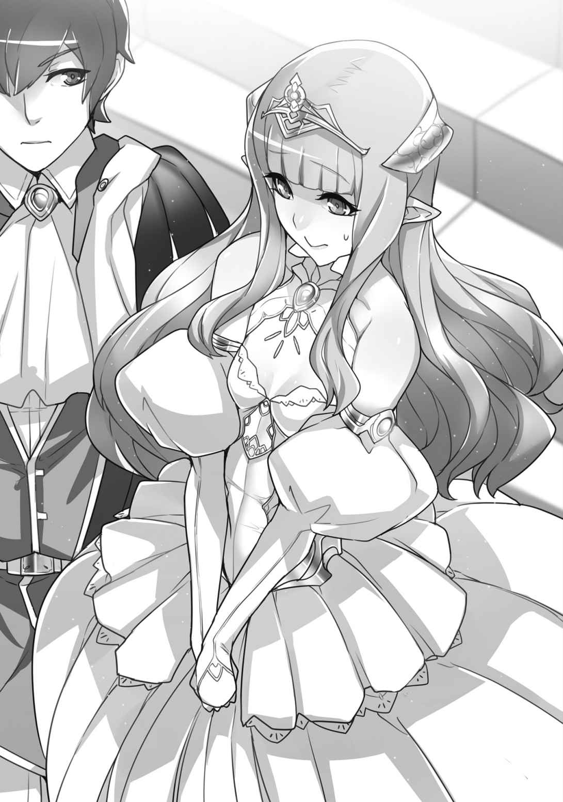
「姫様、しっかりなさってください。俺がついてるから、絶対大丈夫ですよ」
「は、はい......だ、大丈夫ですよ。わ、妾は、こ、この国の王女として、ぜぜぜ、絶対に戦争を食い止めて見せます」
大丈夫じゃない。ガチガチに強張っている。
シルエット姫様がフードでエルフの耳を隠すか隠さないかでも、ライル先生とニコラ宰相の派閥で揉めていたので。
それはさすがに、俺が「これ以上、姫様の自信を奪ってなんとするか！」と意見して、姫様にきちんとした正装で出迎えてもらうことにした。
もちろん、ハーフエルフの耳はトランシュバニア公国の公王にも見せる。
あんまり偉そうなことは言いたくなかったんだが、この期に及んで姫様のエルフ耳を隠そうとかあんまりだ。
そんな誤魔化しをやるぐらいなら、俺は公国と戦争したほうがマシだと本気で思う。そんな小細工が通用するほど、甘い相手でもあるまい。
戦争になるかならないかは、シルエット姫様が一国を治める君主としての器量を示せるかに懸かっている。
俺は、小刻みに震える姫様の小さい手を握りしめた。それで、震えが止まってくれることを祈る。
俺達は、姫様に賭けたのだ。姫様もできると言ってくれた。
だったら、臣下ができることは姫様に大丈夫ですよと言って、信じてやることしかないではないか。
ルイーズが、騎士は君主の剣となって戦い、盾となって守るのだと言っていた。
だったら、俺は姫様の騎士として、ともに戦いに臨み、お守りすることにしたのだ。
ちなみに騎士とはいっても、外交儀礼の場所なので、俺もいつものラフな服装ではなくちゃんと貴族の正装をしている。
豪華絢爛なのはいいが、シャロンが着付けてくれないと着られない貴族服である。何枚もベストを重ね着させられるのは肩がこる。これでも男爵で、姫様の摂政という立場なのでしょうがない。
「トランシュバニア公国、ヴァルラム公王陛下のおなーりー！」
早馬から降りた先触れの使者が、公王の来訪を告げる。
外交はもう始まっている。シレジエ王国側は、近衛騎士団と第一兵団が警備にかこつけて、公国使節団の馬車がくる道に整列して、さり気なく存在感を示している。
俺の連れてきた義勇兵団や、奴隸少女銃士隊まで並んで、王都の兵数を少しでも多く見せる。
戦争になれば、こちらとて甘い相手ではないぞと見せつけるのだ。
それぐらいしないといけない理由もある。ゲイルのクーデターで、王都シレジエの街も王城も一部が焼け落ちてしまって、まだ仮の補修しか終わっていない。
外壁は補修が済んでいるし、防衛上の問題はないのだが、やはり王城の見栄えが悪いと足元を見られる。
貴族社会の体面というのは、極論で言ってしまえば、ヤンキーが身体の至る所にチェーンをぶら下げて、凶悪なリーゼントにしてメンチ切り合うのと一緒である。
デカくて立派な建物をおったてて、大兵力を見せつけて、ハッタリでもいいから威張って見せないと舐められてしまうのだ。
「あれが、ヴァルラム公王か」
公国の馬車から降りてきたのは、高級貴族や高位の騎士に囲まれても、一目で王とわかるほど威厳のある美丈夫だった。
ヴァルラム・トランシュバニア・オラニア、御年五十歳。
頭に黄金の王冠をいただき、豪奢な赤いローブを羽織っている。口元には、豊かなブラウンの口髭まで蓄えている。
まさに万人がイメージする立派な王様である。威厳の塊みたいなのが来てしまった。
嫋やかなシルエット姫様と、本当に遠い親戚なのだろうか。血が繋がっているようには全く見えない。
「タケル様......」
「姫様、大丈夫です。美しさなら、負けてませんよ！」
それ以外では、王として全てにおいて負けている感じがする。
いや、弱気になってはいかん。
シルエット姫様は、健気にも一歩前に進み出て、練習した通りのセリフを叫ぶ。
「え、遠路はるばる、ようこそいらっしゃいましたヴァルラム公王！ 妾こそ、シレジエ王国の正統なる王位継承者、第十七代国王ガイウス・シレジエ・アルバートが一子、シルエット・シレ......」
そこで、姫様の声が止まる。
階段を登って、姫様の眼の前まで、ヴァルラム公王が来たからだ。
「いかにも、ヴァルラムである。どうしたかな、続けたまえシルエット王女？」
相手は、階段の下の段にいても小さなシルエット姫様を見下ろせる。明らかに姫様を威圧している。
メンチ切り合うのはヤンキーだけではなかったようだ。
しかし、姫様にメンチ切ってるのは、相手の代表である一国の王。
周りに居並ぶシレジエ側の閣僚も、姫様の護衛騎士のジルさんも止められない。俺とて、とっさに動けずにいた。
「......シレジエ・アルバートです。ど、どうぞ、お見知りおきを！」
威厳の塊のようなヴァルラム公王に睨めつけられても、シルエット姫様は最後まで言い切って、ヴァルラム公王に向かって手を差し出した。
握手を求める。それは、対等な国家元首であるという証だ。
茶色がかった瞳をした公王は、ほんの少しシルエット姫様の碧い瞳を見つめると、フッと立派な口髭を揺らして、手を握り返した。
「王女殿下、お招き感謝する。どうやら、見た目より気骨はあるようだ。その瞳の輝きは、先王のガイウスによく似ている」
ヴァルラム公王は、シルエット姫様に先王の面影を見たようである。
俺など、先のガイウス王とシルエット姫様のどこが似てるんだろうと思ってしまうが、遠い親戚でもある二人は、なんとなくわかり合ったようである。
●
城の応接室で、トランシュバニア公国との正式外交が始まった。
ヴァルラム公王と、シルエット姫様の首脳会談とは言っても、唾を飛ばし合って外交という名の論戦を交わすのは、臣下の仕事のようだ。
見ていると、王様というのはやっぱり御飾りなのかなと思ってしまう。
トランシュバニア公国側の使節団で、やたら意気軒昂にこちらを煽ってくる好戦的な騎士がいる。全身を銀色に輝くプレートメイルに包んだ、がっしりとした男だ。
太い眉毛が濃く、顔の作りも濃くて、それ以上に居丈高で偉そうな態度が、死んだゲイルにも少し似ている雰囲気。
ゲイルと一緒で公国の騎士団長ポジションの奴かと思っていると、ライル先生が耳打ちしてくれた。
「あれは、トランシュバニア公国政府の軍務卿のゴットロープ伯爵ですね。シレジエ王国のロレーン地方と隣接した領土を持っている前線指揮官でもあります。野心家で主戦派の頭目であるため、事実上の公国軍最高司令官と目されてる人物です」
「血気盛んな騎士だと思ったら、そんな高位の貴族だったんですね」
そんなに偉い貴族様なら、偉そうな振りをしなくてもいいのに。
ガチガチと硬い甲冑に身を包んで、あんまり偉そうに腕を組んでふんぞり返っていると、逆に下っ端に見えるのだ。
せめて外交の場でフルプレートは止めて欲しいのだが、主戦派のゴットロープはすでに戦争するつもりだから、単身で敵地に乗り込んだ気分なのかもしれない。
「あとはそうですね、厄介そうなのはゴットロープ伯爵の知恵袋であるヤーン・グレーベル近衛騎士団長でしょうか」
「え、誰ですか？」
「ほら、あのゴットロープ伯爵の隣の眼鏡をかけた小男です。静かに気配を消して座ってますが、たまに隣のゴットロープに囁いているでしょう。単細胞なゴットロープに知恵をつけているのはヤーン団長ですよ。もし戦争になったら、ゴットロープが将軍で、彼が公国軍の副将格の参謀となるのでしょうね」
平服姿の丸眼鏡をかけた静かなる小男が、公国の近衛騎士団長らしい。キャラが全体的に濃いゴットロープ伯爵に比べると、ヤーン騎士団長はとても薄い。公国の使節団でも一番地味なので、お付きの官僚かと思った。
ライル先生の説明を聞いた後にヤーン騎士団長を眺めると、実力を韜晦してあえて目立たぬように気配を消しているのだと納得がいった。よくよく見れば、丸眼鏡の奥の鋭い視線には、切れ者特有の怜悧な雰囲気がある。
盛んに主戦論を叫んでいるゴットロープと違い、ヤーン騎士団長は黙ってこっちの閣僚をジッと観察してる。
こっちが相手を観察しているように、向こうもこっちを値踏みしているようだ。お互いに戦場でまみえる敵となるかもしれないので、当然のことだとは思う。
戦場で出会えば、お互いの首を狙う大将ともなる。ヤーン騎士団長は、俺の方もジロジロと見てくる。敵となる男の顔を覚えておくということか。
静かな佇まいは見せかけだけで、ヤーン団長も本当は好戦的な人物らしい。
しかし、ゴットロープ伯爵とヤーン団長は、チグハグなコンビに見える。
武断派の大貴族と、スマートな印象の騎士団長。なんとも真逆の二人だが、不思議とバランスは取れている。
もし戦争になったらいい副官に恵まれなかったゲイルよりも、手強い敵になるかもしれない。
「先生、ヤーン騎士団長は、同じ軍師としてどうですか？」
「そうですね。やらなくても、私の勝ちは見えてますね」
うわ、先生凄い自信だ。
笑えてきてしまう。
「というのも、ゴットロープのような小人物を使いまわすしか能がないなら、その軍師とやらも高が知れてるからです。私が公国政府の側なら、大人物であるヴァルラム公王を盛り立てますよ」
「うーむ、そうですか......」
これは苦笑を禁じ得ない。
俺みたいな男を摂政にまで昇らせて、上手く使っているライル先生が言うと、説得力がある。
「扱いにくい大人物に仕えてこそ、軍師としての格が上がるというものです」
「それなら、ライル先生は天下一の軍師ですね」
「全くです。何せ扱いにくさから言ったらタケル殿は、堅物のヴァルラム公王以上でしょうからね」
謙遜で返すかと思ったら、そのまま受けられて笑われてしまった。
俺はたまに先生の言うこと聞かなくなるもんね。
まあ、天下一の軍師様が言うことだ、間違っているはずがないだろう。
さて、トランシュバニア公国の有力者でもあり、使節団の団長も兼ねるゴットロープの弁舌はどんどんヒートアップして、ついにはとんでもないことを言い始めた。
「いっそ公国騎士団と王国騎士団をぶつけ合って、さっさと決着を付ければいいではないか」
「ゴットロープ閣下は、この王都で戦争を行うおつもりか！」
さすがにこれには、シレジエ王国側のニコラ宰相も怒った。建前上ではあるにしても、和議を交渉している場なのだ。
よくぞ相手国の王都まで来て、ここまで言えるものだ。宣戦布告と取られてもおかしくない。
いくらなんでも、この瞬間に戦ったら公国使節団は袋のネズミだぞ。
よっぽどの豪傑なのか真性のバカなのか、ゴットロープはなおも続ける。
「その戦争にならんように、名誉ある騎士の戦いで白黒を付けようというのだ。なんなら私と誰かの一騎打ちでもいいぞぉ！」
もう無茶苦茶である。話にならないと、ニコラ宰相は鼻で笑う。
「それでは、勝っても負けても争いを煽るだけではないか。そのような提案、こちらが受けられるはずがない」
シレジエ王国の近衛騎士団は、ゲイルのクーデターによって被害を受けて数を半減させている。
戦力の回復には必死に努めているそうだが、それでも五百騎足らず。
それに比べて、ゴットロープ伯爵が公王の護衛にと連れてきた、ヤーン騎士団長率いる公国軍の近衛騎士団は千騎を数える。
騎士団同士のぶつかり合いであれば、倍の数を相手にして勝てるわけもない。
こっちが不利な勝負なので、受け入れるわけはないのだが、そういうことではないんだろうな多分。
お前のところは、内戦で主戦力が欠けているだろうという威圧なのだ。
「ウハハハハハッ、聞けばシレジエ軍では兵数が足りなくて、農民まで兵隊に駆り出しているそうではないか。なんだあの薄っぺらい服を着た兵隊は、兵に着せる鎧すら揃えられんとは、よほど懐が厳しいのだな！」
はい、バカ決定。ライル先生が、ゴットロープを単細胞と評価するのもわかる。
ゴットロープは、銃士隊の本質を全く理解していない。
知ってれば、さすがにこの発言は出てこないだろう。
おそらく、こちらにマスケット銃や大砲という新兵器があることも知らない。一国の軍務卿が敵を知らず、しかも主戦派を気取っているのだから笑わせる。
しかし、敵がバカ過ぎても笑えないってこともあるか。
こっちの力量をまったく知らないから、与し易しと見て本当に戦争を仕掛けてくるかもしれない。
相手の策士は、戦争を煽りやすいように、大将をバカのままにしてあるのかもしれない。
どちらにしろ戦争になれば、死ぬのは無謀なフルプレートアーマーの大貴族だけではない。戦争をやりたい奴だけが勝手に死んでくれるならいいが、国同士の戦争は絶対に避けなければならない。
ゴットロープの見え見えの威圧に続いて、公国側からシルエット王女の王位継承権を認めて欲しければ、公国にロレーン地方の領有権を渡せという要求が出た。
結局のところ、ゴットロープ達は隣領のロレーン地方が欲しいのだ。
これには当然ながら、姫様からロレーン地方を与えられたシレジエ王国の新領主達が猛烈に反対する。譲歩できる提案ではない。
そして、議論はまた平行線を辿る結果となる。
「もうよい、ゴットロープ」
「ヴァルラム陛下？」
ずっと押し黙って座っていた、威厳の塊のような茶色い髭の公王がつぶやいた。
ヴァルラム公王が口を開くと、あれほど紛糾していた会議室が静かになる。その声のトーンには、不思議と人に耳を傾けさせるような力がある。
「もともと、ワシはアルバート家の息女であるシルエット王女が、シレジエ王国の国家元首として相応しいかを確かめに来たのだ。それは、難癖を付けて小賢しく領土を掠め取ろうなどという話ではない！」
それは本心なのか、どうなのかなと思う。
公王も、当然ながら外交の場での駆け引きで言っているのだろうとは思うが、その重みある発言はもっともらしく響く。
「ワシから、シルエット王女に一つお尋ねしたい」
「な、なんでしょう」
ずっと、公王の向かい側に黙って座っていたシルエット姫様が答える。
「愚かな王を戴くと国民は不幸になる。このシレジエ王国も、内乱を許すほどに宮廷が乱れてしまった。ワシは、そもそも先のガイウス王が国王の器に値しなかったと思っているのだ。さて、シルエット王女。貴女は、この国の民を不幸にしない立派な女王になれると誓えるのか？」
みんなの視線は、シルエット姫様に集まる。
これが、内乱が起きたことをシルエット姫様の責任としてなじるなら、ゲイルと先王が悪かったのだと反論しようかと思ったが、ヴァルラム公王はこれからの話をしている。
シルエット姫様に、新しいシレジエ王国を安らかに治める自信があるのかと、俺と同じ事を言っているのだ。
だから俺達は、固唾を飲んで姫様を見守る。そのお言葉を待つ。
ここは、姫様の存念一つである。
「妾は、善き女王になりたいと思っております」
「シルエット王女よ、それは本心ゆえでか？ 聞けば貴女はハーフエルフという出自を疎まれて一部の貴族からは認められず、即位すらままならぬというではないか。そのようなことで、本当により善き為政者となれるのか？」
「それは、わかりません......」
「わからぬと。ではそのような王位など認められぬ。ワシならば、トランシュバニアの民とともにシレジエの民も安んじられるという自負がある。国王とは、そうあらねばならぬものなのだ」
そうだそうだと、賛同の声が公国側から上がる。
責められたシルエット王女だが、声を絞り出すように続ける。
「......ですが、ヴァルラム公王。貴方に、シレジエの王位をお渡しすることはできません。貴方は、この国の人ではないからです」
威厳ある威圧感の塊のような髭面の公王に対して、臆することなく決然とシルエット姫様は言い切った。
「ほう、では王女の存念を聞こう」
姫様は、チラッと俺のほうに視線を送ってから語り始める。
「妾に善き女王に成れと望んでくれた人達がいます。この国の民の窮状を教えて、妾にもできることを教え導いてくれる人もいます。妾は、支えてくれる皆の思いに応えたいのです。そうして皆と手を携えてより善き国を作りたい。そうして妾はいつか、この国の民全てに女王であれと望まれてみたい。ですから、妾は......」
よく言ったシルエット姫様。
これ以上、ヴァルラム公王が何か姫様を責めるようなら、俺が立ち上がって助けに行こうかとも思ったのだが、それに対して公王はあっけなく頷いた。
「あいわかった。ならばよろしい。ここは、一度引こう！」
この場は引くと、ヴァルラム公王は言ったのだ。
当然、公国側から反対の声が上がる。
「公王陛下、それはなりませんぞ！」
「ワシが引くと言ったのだぞゴットロープ伯爵！ 公王に二言はない」
ゴットロープ達が騒ぎ出したが、ヴァルラム公王はそれを押し止めてなおも続ける。
「ただし、引くのは一度だけだ。シルエット・シレジエ・アルバート。我らが始祖、かの気高き勇者王レンスの後継よ。貴女が若き力で、この乱れた国を立て直すことができるというのならば、大いにやってみせよ」
「はい、やってみせます」
「それは、決して容易き道ではないと思う。もし貴女が君主として力不足であると判断したら、ワシはまたくる。そうして、今一度譲位を迫るであろう。何度でも言うが、愚かな王を戴くと国民が苦しむだけだ。そうならぬようにしていただきたい」
「そうならぬように、いたしましょう」
「よくぞ言った。その言葉忘れるでないぞ、若き王女よ。では再び、外交の場で相まみえる機会を楽しみにしておる」
こう言い残して、公王は帰っていった。
トランシュバニア公国との首脳会談は、こうしてまとまった。
ヴァルラム公王が引いたために、シレジエ王国の王位継承を巡った戦争の勃発とはならなかった。
「結局のところ、ヴァルラム公王は戦争になるのを避けたかったということなんでしょうね。姫様がよっぽど変なことを言わない限りは、手打ちにすると決めてたんでしょう」
俺は、シルエット姫様の立派なお言葉がヴァルラム公王を退けたと感動してたのに、ライル先生は雰囲気をぶち壊すようなことを言う。
「姫様のお言葉だけで、戦争が回避できるなんてことはないってことですか？」
「今回の首脳会談に限っては、公国側としては国内の主戦派をなだめるためのガス抜き。デモンストレーションといったところですね」
「まあ、何はともあれ、全面戦争が回避できたようで良かったですけど」
「ヴァルラム公王も上手かったですね。一度は引くといっておけば、後への期待は残ります。公国の主戦派も、公王の許可無く戦争を始めるのは避けたいでしょうから、これで時間稼ぎにはなります。その間に、シレジエ王国も内政基盤を固めれば......」
そう言って、ライル先生はちょっと考え込んだ。
「どうしました？」
「いえ、ちょっと気掛かりなことがありましてね」
「気掛かりと言いますと？」
「ゴットロープ伯爵は、どうしてあんなにロレーン地方の割譲にこだわったのかなと思いまして。内乱で弱った王国側を脅して譲歩を引き出したいだけなら、他のもっと受けやすい条件でも良かったわけです」
「どういうことでしょう？」
「わざと無理な要求をして、どうしても戦争に持っていきたいという方向性を感じます。あの扱いやすい野心家ゴットロープを操っているのは、ヤーン騎士団長だけではないのかもしれません。あるいは、シレジエ側の主戦派貴族まで含めて、全員が誰かに唆されているのか......」
うむ、先生の言うことは飛躍し過ぎてわからない。
「他に誰か、戦争を煽るような第三者がいるってことですか？」
「私は、今回もあの隠形の上級魔術師が絡んでいるのではないかと見ています」
あっ、あのゲイルのクーデターに協力した上級魔術師。
今回も、裏で暗躍しているのか。
「タケル殿、すっかり忘れていたって顔ですね」
「いや、もちろん覚えてますよ！ 俺だって強い防具を探したり、新兵器を工夫したり、襲われた時のための対策はしてます。でも今回の件には関係ないと思ってました」
「私はこれまで、ずっとあの隠形の上級魔術師を追って来ました。シレジエ王国の内戦に引き続いて、トランシュバニア公国をけしかけて煽っているのも、奴だと思っています」
「それも、ありそうな話ですね」
「問題は『なんのためにそんなことをするのか』です」
「それは、公国と王国が争うと得をする、ゲルマニア帝国の上級魔術師だからじゃないんですか？」
シレジエ王国に領土的野心を持つ、東方の大国ゲルマニア帝国。
シレジエをフランス型だとすると、ゲルマニアはドイツ型国家である。実際に戦争にこそなっていないものの、地政学上から考えても、いずれ敵国となるのは自明の理。
事実、ゲイルの内乱の時に、ゲルマニア帝国からガラン傭兵団が派遣されていた。
正規軍の派兵ではないものの、背景に帝国の策謀があったとみるのが自然である。
「そう思って調べたのですが、私はそれ自体が巧妙なブラフじゃなかったかと考え始めてるんですよ。いかにも『私の正体は、ゲルマニア帝国の上級魔術師ですよ』という偽装ではないかと」
「それはまた、手が込んでますね。じゃあ、隠形の上級魔術師は、もっと他の国の出身なんですか？」
「どこの国でも上級魔術師というのは、本当に数少ない著名人なので、その能力で誰か推理することが可能なはずなんです。それができなかった、全くのアンノウンです」
「ライル先生でも、推理することができなかったってことですか？」
そう言うと、先生は頷く。
「私が調べてもわからないということは、まったく世間に知られていない上級魔術師がいたってことです。相手が国家の場合、手元にある便利な上級魔術師というカードをずっと使わずに伏せておくなんて選択肢はありえません」
それはそうだろう。隕石を落として街を破壊したり、大洪水を起こして軍隊を薙ぎ倒せるような戦術兵器を使わないでおく理由がない。
「つまり、それはどういうことですか？」
「ありえない可能性を全て排除していった結果、残る答えは一つです......我々が敵としている上級魔術師は、人間ではない」
「人間ではない？」
つまりそれって、どういうことだってばよ。
「例えばタケル殿。相手を人間ではないと仮定しますよ。そうすると、残る可能性は魔族です」
「魔族？」
そんな連中がいるとか、これまで見たことも聞いたこともないんだけど。
しかし、よく考えたら俺だって人族の勇者だった。魔王がいるからには、魔族もいるという理屈はわかる。
「二百四十年前、建国王レンスによって『魔素の瘴穴』が封印され、魔王が討伐されました。それから、魔族はシレジエ王国にはいなくなったと言われています」
「いないんなら」
「いえ、待ってください。いないと思い込んでただけなのかもしれない。隠れ住んでいる魔族を見たって噂話はいくらでもあるんですよ。あるいは、人族の影響が届かない辺境地域からやってきた強大な魔族である可能性もあります」
「魔族だという証拠は、あるんですか？」
「論拠としては弱いですが、なくもないですよ。例えばほら、ゲイルが持っていた邪剣、黒獣剣」
「なるほど......」
「あれほどの邪剣は、そうそう手に入るものではない。しかし、相手が邪悪な魔族ならと考えていくと、この仮定でもパズルのピースは揃います。もし、本当に隠形の上級魔術師の正体が魔族なら、シレジエの地で魔王復活を狙っているんじゃないかと考えられる」
「あー、魔王復活ですか」
確か、俺の領地であるアンバザック領の前領主が魔王候補になって、オックスの街でゾンビを大量に生産してたんだよな。
あれは、単なる偶然でそうなったと思っていたのだが、意図的にアンデッドの王国を作ろうとしていたということかもしれない。
なるほど、そう考えると全ての辻褄が合っていく。
「いやいや、すぐに納得しないでくださいよ。こんな話、タケル殿以外に話しても笑われてしまう戯言に過ぎない」
「そんなに突拍子もない話なんですか？」
もともと、シレジエの人間じゃない俺にはよくわからない。
「いまどき魔族が出たと言っても、バカを言うなと笑われますね。ただ、二百四十年前には、ここが魔王が治める魔族の土地であったことも歴史的事実です。ゲイルは二度も『魔素の瘴穴』を開きました。あの二回目の行動は、追い詰められたが故の自爆行為だと思ってたのですが、もしかしたら何か別の意図があったのかもしれない」
「そうすると、その魔族の目的は、人間の国同士を争わせて力が弱ったところで魔王を復活させて、魔族の国をもう一度再興させようってことなのかな。そう考えると、わかりますけどね」
「だから、そう真顔で言われると困るんですけどね。いまさら魔族とか、私も自分で言っていて、あまりにも時代錯誤過ぎて、子供のお伽話のような話に聞こえてしまう。ただ隠形の上級魔術師の策謀が今後も続くならば、いずれわかることでしょう。ともかく、そのルートもありえると想定して動くべきなんですよ」
ライル先生はそういうと、肩を竦めて薄く笑った。
力が衰えた今の魔族は、人族の影響が届かないユーラ大陸の辺境地域に住んでいるだけだそうだ。
今のシレジエ王国の常識だと、魔族の再興なんて子供の戯言にしか聞こえないお伽話であった。
しかしそれを言えば『魔素の瘴穴』だって、二百四十年振りの災厄だったのだ。
今まさに、時代錯誤な魔族の策動が行われているとしても、おかしくはないと俺は思う。
「でも、先生がそう考えられるなら、何か手は打っておくべきでしょうね」
「そうだタケル殿、一度、ロレーン地方に行ってみましょう」
「えっ、ロレーン地方ですか。トランシュバニア公国との紛争の原因になっている地域を偵察しに行くってことですか？」
「それもありますし、タケル殿は強力な魔法防具をお探しなんですよね。だったら、ロレーン地方の『オラクル大洞穴』に行ってみてはいかがでしょう。あそこは、未探索の大ダンジョンですから、きっと見つかりますよ。もしかしたら、もっと面白いものが見つかるかもしれませんけどね」
そう言って、ライル先生は薄く笑う。
「まさか、先生からもダンジョンを探せと言われるとは思わなかったです」
「王都での復興事業や、政治交渉も一段落しましたからね。これからは、私もまたタケル殿にお付き合いしますよ」
先生が付いてきてくれるのは嬉しい。
ロレーン地方の『オラクル大洞穴』を探れと、深謀遠慮のライル先生がそう勧めるからには、何か意図があるのだろう。
もともと、ダンジョン探索は行ってみたいと思っていたので、二つ返事で賛同することにした。
●
オックスの街で、魔の山で採れた黒杉を材料に使った『黒杉の大盾』『黒杉の鎧』『黒杉の木剣』など、黒杉シリーズの装備品を作り上げた俺達は、同じく魔の山で採取した薬草で作った回復用のポーションもたっぷり携え、準備万端でロレーン地方へと足を踏み入れた。
ロレーン地方は、もともとロレーン辺境伯領と呼ばれていた土地である。
辺境伯と聞くと、俺は田舎の小領主を想像していたのだがとんでもない話で。
辺境伯は王都から遠いだけで、その領土は広大で敵地にも面しており、大きさ位置ともに重要な領土なのだ。
つまり、辺境伯とは前線司令官にもなりうるわけで、本来なら由緒正しき貴族や国の重鎮が任されるポストだ。
一度、『魔素の瘴穴』からのモンスター大発生で滅びた辺境伯領の土地は、今の王国政府に味方した貴族や騎士達によって三つに分断されてしまった。
その分割の仕方は、◯を書いた中にＴの字を入れるとわかりやすい。
まず、上半分は敵国のトランシュバニア公国に面してるだけあって、ロレーンの街を中心としたロレーン伯領として、新しく就任した伯爵が住んでいる。
領地を治めているのは、配下にも強力な騎士達が多い、名門貴族だそうだ。
下半分の右側、潜在的敵国であるゲルマニア帝国に面してる方は、ロレーン騎士団領となっている。
シルエット姫様の新政府に味方した多くの騎士達に領地を与えるのに、まさかこれ以上細かく分割するわけにもいかず、ロレーン騎士団という新しい組織を作って、そこにまとめて治めさせたわけだ。
ここに所属する騎士達は、みんな男爵だの将軍だのと名ばかりの高い地位を貰っている。実質は貧乏騎士のままなのだが、本人達は喜んでるのでまあいい。
そして、俺達が足を踏み入れた、下半分の左側がオラクル子爵領だ。
俺のアンバザック男爵領とは南北に領地を面したお隣に当たるわけで、むしろ挨拶が遅れた感がある。
「オラクル子爵領って、中心の街の名前はスパイクの街なんですね」
シレジエ王国のパターンだと、中心の街が領地の名前になるものなんじゃないのかな。
「そうですね、私達が目的地にしてる大ダンジョン、『オラクル大洞穴』のほうが有名ですから、そっちが領地の名前になってしまったんですね」
オラクル大洞穴。
二百四十年前に君臨した魔王の側近、不死者の王オラクルが三百年前に創造したと伝えられる大ダンジョンだ。
その不死王オラクルという、死霊を操る死霊使いだったのか、ヴァンパイアロードだったのかも失伝してわからないアンデッドの王は、魔王とともに勇者レンスによって討ち取られたという。
しかし、その名を冠した大ダンジョンは残ってしまった。
被害がでないようそれなりに討伐はしたそうなのだが、勇者レンスはダンジョンの制覇にあまり興味がなかったのか『オラクル大洞穴』をそのまま放置した。
魔王退治の後で、もう面倒くさかったんだろう。まあ気持ちはわからなくもない。
ダンジョンがあるから、クリアしなさいと言われても、ピンと来ないよな。
ともかくも、レンスが放置してから二百四十年の長きに渡り、未だに完全制覇もされていない『オラクル大洞穴』は、腕に覚えのある冒険者達を引き寄せる英雄譚の舞台として有名な存在になっている。
まるでＲＰＧだ。
誰もクリアできない巨大なダンジョンを地下に創るとか、どうも昔の魔族の王というのはやることが人間離れしている。
人間じゃないから、当たり前なのかもしれないが。
「ではダンジョン攻略の前に、スパイクの街に入って、オルトレット子爵の居城に挨拶に行きましょう」
ライル先生に案内されて、スパイクの街へと入る。
そもそもは、『オラクル大洞穴』を攻めるための拠点だったというスパイクの街は、石壁が所々崩れたままで、街の復興は思うように進んでいないらしい。
居城も門構えは立派だが、その修復は応急処置もそこそこといったところ。
俺が治めているオックスの街のように、急ピッチの復興が達成できている方が珍しいんだろうな。
街はもともと暮らしていた難民達が戻り、生活の再建も多少は進んで活気が戻ってるみたいだから、そこまで悪い統治ではないと思う。
居城に入ると、向こうからプレートメイルを着た若い騎士が駆け寄ってきた。
「お初にお目にかかります。当領地の子爵、オルトレット・オラクル・スピナーであります！」
子爵本人か。あまりに腰が軽いから、お付きの騎士かと思った。
オルトレットは、元は領地を持たぬ武家出身で、第四兵団を指揮していた兵団長だったという。
三十路手前ぐらいか、いかにも戦場で鳴らした感じの颯爽とした兄ちゃんだった。
後ろにさっと流した灰色の総髪、よく鍛えてある均整のとれた肉体、居城にいても武装を忘れない気構え。
子爵といえば、相当偉く御成りになったはずだが、貴族的ないやらしさがまったくなくて、好感が持てる。
「ああどうも、スピナー子爵閣下。お隣なのに、ご挨拶が遅れて申し訳ない」
「いえこちらこそ、慣れない領地経営で四苦八苦でして。元は領地を持たぬ武骨者ゆえ礼儀に欠け、誠に申し訳なきしだいであります。どうぞ拙者のことは、オルトレットとお呼びください、勇者様！」
ああ、そうか勇者扱いだから腰が低いのかな。
子爵と言えば、貴族の位としては男爵の俺より上のはずだが、俺はシルエット姫様の摂政でもあり、役職ではこっちが上という微妙な感じである。
「シレジエの勇者、佐渡タケル殿は、子爵閣下の領地にある『オラクル大洞穴』のモンスター討伐に参りました。どうぞ、その点、ご承知おきいただきたく」
ライル先生が出て、牽制し始める。
いや先生、この人は、そんな政治とか入用なタイプじゃないんじゃないかな。
「おおっ、それは素晴らしい。冒険者ギルドの復興も進まず、大洞穴から湧き出るモンスターにも困っておったところでして。ご助力、心より感謝いたします。どうぞ拙者に協力できることがあれば、なんなりとお申し付けください！」
跪かんばかりに、子爵は深く頭を下げた。
「こちらは、シレジエ王国唯一の王位継承者、シルエット姫殿下であられます。子爵閣下」
先生は、白いドレスに目深にフードを被ったシルエット姫を前に出す。
いや、だから先生そんな政治的に威圧しなくても。
「こ、これはこのようなむさ苦しい辺境に、ひっ、姫様がおいでなさるとは、このオルトレット感激でござる！」
子爵の頭は、そのまま地面にまで倒れこんだ。
ただのお辞儀だったはずが、前屈になってしまった子爵に対して、姫様がダメ押しでお声をかける。
「勇者様が大洞穴の討伐を終えるまで、しばらくご厄介になりますよオルトレット」
「はっ、ははっ、このオルトレットの身命に代えましても、大恩ある姫様を全力でお守りいたしまする！」
子爵はプレートメイルが折り曲がるぐらい、大きな身体を縮こまらせている。
ちょっと、可哀想なぐらいだ。
こうして挨拶という名の威圧が終わり、俺達は応接間へと通された。
オルトレット子爵の応接間は、木造の硬い椅子と机があるだけの、質素というか質実剛健というか。
言ったら悪いけど、むさ苦しいところってのは、間違ってないな。
オルトレットは、貴族ズレしてない良い人なんだろうなあとは思う。
「ちょ、子爵なにやってんの！」
オルトレットは、姫様や俺に椅子を勧めると自分は地面に跪いた。
恐縮するにしても、卑屈過ぎるだろう。
「拙者、ここにて十分でござる」
「いやいや、城の主にそんなことされたら、みんなが座れないでしょ」
「こ、これは思いつきませんでした。勇者様、ご無礼のほど平に平にぃ！」
「いやだから、椅子に座ろう、オルトレット子爵」
やっぱり、ライル先生が威圧し過ぎたんだよ。これは、先生が悪い。
「オルトレット殿。万が一にですよ、王都の政府や地方貴族と我々の意見が異なった場合、どちらに付いていただけますかね」
調子に乗った先生が悪い笑顔で、そんなことを言ってる。
「拙者もちろん、勇者佐渡タケル様に、生涯の忠誠をお誓いしますぞ！」
「いやいや、子爵。俺は男爵ですし、子爵のほうが偉いんですから」
俺がさすがに遠慮すると、子爵は跪いたまま苦笑した。
「そんな貴族の階級は、もはや関係ない時代となりました。勇者佐渡タケル様は、すでに国の摂政、ゆくゆくは国王陛下になられるお方だと思っております」
俺は、国王になるつもりは全くないのだが、貴族の爵位など関係ないというオルトレットの言葉は爽快だ。
シレジエ王国の騎士や貴族、古臭くて頭が固い連中が多い中で、物わかりの良さと柔軟性がある子爵には見所がある。
さすがゲイルの乱の時に、誰よりも早く臨時政府側に味方して、子爵領をゲットしただけのことはあるといえた。
年若い俺を侮るところもないし、この人とは仲良くしておいたほうがいい。
「子爵、国を思う者同士、仲良くしようじゃないか」
「はっ、拙者、仲良くさせていただきます」
とりあえず、子爵を椅子に座らせてゆっくり話をすることにした。
お茶も、ようやく来たことだしね。
しかし、兵士が飲み物を持ってくるって、この居城にはメイドがいないのか。
ちょっと質実剛健にしても、やりすぎなんじゃないかな。
「街を見たところ、石壁の補修も済んでないようだし、街もいろいろと足りないようだね」
「お恥ずかしい話でして、いきなり大きな領地を拝領しても、スピナー家の蓄えでは先立つものがまったく足りません」
ふむふむなるほど、これは大きなビジネスチャンスだよなあ。
俺も多分、ライル先生と同じぐらい悪い笑顔になってると思う。
「そこでだオルトレット子爵、うちの商会で石材とか木材とか資金も含めて、領地復興に必要な物は援助しようじゃないか」
「勇者様、なんとお礼を申し上げてよいのか......」
おい、大の男が泣くな。
「ただ、無料奉仕じゃないからね。これはきちんとした取引として言っている。今後こっちも子爵の領地を貸して欲しい時がある。佐渡商会の支店も置きたいし、できれば街道を通ったり街に入る時に、うちの商会だけ無税にして欲しいんだけど」
領主の免税特権、何よりも増して俺が欲しいのはそれだ。
「もうなんなりといたしてください。なんなら領地をそのまま差し上げてもかまいません」
こらこら、譲歩し過ぎだ。それじゃあ、子爵が損しちゃうだろ。
取引は、共栄関係にならないと長続きしない。
「まあ、お隣同士だから今後は仲良くやっていこう」
「ハハッ、このオルトレット、身命に代えましても仲良くいたします！」
ちょっと変わった領主さんだけども、まあ良い人なのだろう。
自分の領地の隣に、友好的な貴族がいるのは何かと捗るものだ。
●
さて、ついに目的地『オラクル大洞穴』である。
スパイクの街のほど近くにあるただの小山に、大きな洞穴があって、ずっと地下奥深くまで巨大なダンジョンが続いている。
もともとはダンジョンの入り口からモンスターが飛び出てこないように、鉄の扉で閉鎖されていたとも言われているが、そんなものはどこかに吹き飛んでいて跡形もない。
『魔素の瘴穴』事件の時に、凶暴化したモンスターが扉を破壊してしまったのかもしれない。
上層階は、お馴染みのオークやゴブリンなどの下級モンスターの住処となっていて、時おり街まで流れてきては、街の兵士達との戦闘になっている。
「先生、ダンジョンに挑む冒険者とかはいないんですかね？」
「昔はたくさんいたそうなのですが、『魔素の瘴穴』によるモンスターの大発生でどこもそれどころじゃない状況でしたからね」
スパイクの街では、未だ冒険者ギルドの復興さえ済んでいないから、わざわざモンスター退治に大洞穴まで足を運ぶ冒険者はいないってことらしい。
これからやる反則技には、人がいないほうが都合がいい。
「よし、じゃあ入り口にキャンプを張って、今より大洞穴の攻略を開始する」
俺の目の前にいるのは、奴隸少女近衛銃士隊に、ルイーズが率いる義勇軍銃士隊が三百人、あとダンジョンの罠を調べる盗賊がいるだろうからと、ポーラやネネカ達、密偵部隊にも十五人ほど来てもらった。
弾薬やポーション類の補給は十分、ダンジョン探索に必要な小道具も盗賊ギルドに用意してもらったので、攻略には万全の準備が整っているといえる。
持ち運びに便利な青銅砲まで四門も持ってきたんだが、さすがに大砲はちょっとダンジョンで使うには使い勝手が良くないかもしれない。
まあ、これもダンジョンの奥底でどんな強敵が待っているかわからないので、念には念を入れてだ。
「タケル殿、ダンジョン攻略は、六人一チームに分けてやるのが効率がいいですよ」
「じゃあ、そういう編成で行こう。各チーム交代制で、二十四時間体制で一気に大洞穴を攻め落とすぞ！」
ウォォオオオ！ と義勇軍兵士達の鬨の声が上がり、まず上層階の攻略と言う名の虐殺が始まった。
毎回このパターンで申し訳ないが、相手は前人未到の大洞穴である。
ＲＰＧでやってる冒険者がパーティーを組んで挑むようなチマチマしたやり方では、時間がかかってしょうがないから、ここは数の暴力で速攻する。
マスケット銃を片手に前衛の一個小隊が穴に飛び込み、外敵もなくのんびりと住んでいたオーク達に一斉射撃。
前衛が弾を撃つと、今度は中衛が交代して一斉射撃。
中衛と後衛が交代して一斉射撃する頃には、オークの群れが一つ壊滅していた。
織田信長が長篠の戦いでやったという、三段撃ち戦術である。
まあ、一説にはやってないって話もあるんだが、ダンジョンのような狭い場所では交代して撃ち続ける戦術はかなり有効である。
実はこれ、撃つ人と弾込めする人に分担すると、さらに効率化するらしいのだが。
今回は、新兵教育も兼ねているので弾込めも撃つのも自分でやってもらう。
「それにしても先生、壁に磨き上げた石のブロックまで積んで補強してあるって、豪華というか、豪勢というか凄まじいですね」
これほどの堅固で巨大な建築物を作るのに、どれだけの期間と労力を掛けたのか、想像することすらできない。
言うまでもないことだが、構造物を地下に作るには莫大なコストがかかる。工作機械がなければ、坑を一つ掘るのも大変なのだ。
人間の掘る坑道でもよく事故が起きる。坑が大きくなればなるほど、地下にガスが溜まって多数の犠牲が出たり、落盤が起きたり、地下水が噴き出てどうしようもなくなる事故が起きやすくなる。
この時代の技術レベルで地下に建築物を造るのは、あらゆる面で困難を極める作業となる。
「かの不死王オラクルには無限の時間があり、アンデッドという無限の労働力がありましたから」
なるほど、死なない王に疲れを知らない兵隊。
人間にとっては途方もなく思える巨大地下建築物でも、アンデッドの軍団ならば造り上げることは可能というわけか。
それにしてもと思ってしまうが、よく考えるとアンデッドにとって地下こそ好都合な環境だったのかもしれない。季節、昼夜問わず、温度が一定に保たれるメリットは大きい。
例えるならば、蟻が地中に巣穴を掘るようなものと考えればいいのか。
それにしたって趣味的過ぎると思ってしまうが、アンデッドの王が、無限の力を持て余した結果が、この三百年経ってもまったく崩れない立派な大洞穴なのだ。
俺は、そっとダンジョンの石壁を触って、そのひんやりした感触に感動する。
こういう現実的にありえない建造物に触れると、本当にファンタジーの世界に来たんだなと実感する。
しかし、近くの人間の街が石壁が崩れたまま廃墟みたいになっているのに、モンスターの作った三百年前のダンジョンが、こんなに綺麗なまま残っているなんて皮肉なものだ。
「この洞穴って、どこまで続くんですかね」
「いや、タケル殿。まだ地下二階ですよ、ダンジョン攻略マップによると、地下九階の一部までしかわかってませんが、その先もさらにあるはずです」
「うあ、一体どれぐらいの大きさがあるんだよ。本当に蟻の巣みたいだ」
俺は先生から借りた「オラクル大洞穴」マップを見て、そのあまりの大きさに驚きを隠せない。
新宿の地下鉄ダンジョンも、かくやという広大さである。
「上から、大洪水の魔法とかで押し流したら全滅したりしないですかね」
蟻の巣で、そう思いついたのだ。
近頃とんと姿を見ないが、俺達の敵には大洪水の魔法が使える上級魔術師もいるのである。
ダンジョンに入っている時に、上から水を浴びせられたら堪ったものではない。
「タケル殿は、やはり柔軟な発想をしますね。しかし、三百年も難攻不落の大洞穴ですよ。それなりの対策はあります、ちょうど広場に着きましたからお見せしましょう」
石壁の通路が続いたかと思えば、定期的に大きく広がる広場などがある。
そこにモンスターの群れがいることが多いのだが、もう前線の兵士達に駆逐されていて撃ち殺された死体が転がっているだけだ。
「荒れ狂う水の流れよ、我がもとに集い、敵を押し流せ、ウォーターウェーブ」
ライル先生が、例の中二的な呪文を唱えながら壁に向かってワンドを振るい、大量の水の激流を虚空に発生させる。
「うあっ、水がこっちにくるじゃないですか」
みんな慌てて通路まで引いたが、広場からどっと流れだした水はこっちにこない。下に溜まっていた水も、スッと引いていく。
「どうなってるんですか、先生。もしかして何か魔法の力で阻害されてるとかなんですか？」
「三百年間も環境を維持できる魔法というのは、なかなかありませんね。壁をよく見て下さい」
壁には丸い穴が開いていて、水が流れだしたあとが残っていた。
「排水溝？」
「そうです、地中に穴が開いているんですから、雨水だって流れこむし、地下水脈とぶつかる時もあります。こうして、通路に定期的に広場を設けてあるのは、そこで排水するためのようです」
「へえっ、よく考えてあるんですね」
まるで現代の地下建築のようだ。かなり高い建築技術である。
「私達が考える程度のことは、全て対策してありますね。排水だけでなく、通風口もきちんとありますから、モンスターを窒息させるというのも難しい」
「こっちにとってもありがたい配慮ですね」
ダンジョンの奥に有毒ガスが溜まっていて窒息死とか、想像するだに恐ろしい。
自分がアンデッドなのに、生き物が死なないようにきちんと対策してくれるというのは、魔王の部下にこう言ってはなんだけど、不死王オラクルって意外に良い奴だったのかもしれない。
こういう対策がなければ、俺達だって安心して大洞穴に入れないわけで、ありがたいことだと感謝してもいい。
不死王と言っても、配下はアンデッドばかりではなく、生きてるモンスターもたくさんいたんだろうから当然といえば、当然の配慮かもしれないけれど。
「でもタケル殿、ダンジョンの下層階は、さすがにアンデッドが多いですよ」
「そうなんですか？」
「上層階は、オークやコボルトなどが多いですけどね。やはり下の階層になればなるほど、陽の光が当たらない。生き物にとっては、厳しい環境になりますから」
その日は、地下三階まで進み、ダンジョンの広場でベースキャンプを張って休憩することにした。
前線がそれだけ前に出たので、補給物資も輸送しなければならない。
人間の集中力は長くは続かない、ダンジョンの罠に引っ掛かるなどの事故を防ぐためには、こまめな休憩が必要だ。
速攻を目標にしたとはいえ、安全確保を第一にして、なるべく犠牲を出さないように地中を進む。
「ごしゅじんさまーほめてほめて」
「おお、どうしたロール。どれだけでも褒めてやるが」
俺は、現地調達したオーク肉で作ったハンバーガーを食べながら、ロールのさらさらした触り心地の良い赤銅色の髪を撫でてやる。
あんまり奴隷少女を贔屓とかしちゃいけないんだけど、俺はお前が一番可愛いぞ。
きっといつか、ドワーフ娘の時代がくるからな。
そんなことを考えていると、ロールが嬉しい報告をしてくれた。
「ここのつち、ぜんぶからしょうせきが、とれるよ」
「うおおおっ！」
俺は思わず、吠えてしまった。
なんちゅうことに、なんちゅうことに気がついてくれたんや、ロール！
長年モンスターが住み続け、冒険者と殺し合い、土に糞尿や血肉やその他もろもろが染みこんで、全く陽光が当たらない大洞穴。
ここはまさに、硝石の宝庫や！
「大洞穴そのまま、ものごっつ硝石の産地やんけ！」
「ごしゅじんさま、キャラがかわってるよ」
「おお、すまんすまん。つい浪速商人の血が滾ってしまった」
俺の故郷は別に大阪ではないので、似非関西弁は止めよう。
「凄いよね、さっきちょっと煮てみたけど、凄いできるよ」
硝石作りには、随分と適した土のようだ。
しかし、ダンジョンの土で硝石を作れることに気がつくとは、さすが生まれついてのワーカーホリックである。
周りが、ダンジョン攻略に邁進してるこの状態で、休憩中に土を煮てみるマイペースさもロールらしくて笑ってしまう。
「よしよし、じゃあロール達はもう攻略の手伝いはいいから、硝石作りに専念してくれ」
「あいあいさー」
硝石が現地調達できるなんて、これで補給も完璧じゃないか。
弥が上にも、これは順調に進めるに違いない......とかなんとか言っていたのだが、そうは問屋が卸さない。
ダンジョン攻略は、地下四階に入ってから急に停滞した。
地下四階は、上層のオークなどと違い、マミーと呼ばれるミイラ男のアンデッドがやけに多く出てくる階層だった。
武器も持たず、包帯男がただ手を広げて襲いかかってくるだけなので、単体ではそこまでの脅威ではない。
アンデッドなので銃撃の効果はいまいち薄いが、リアが浄化するか聖水でも撒けば消えてなくなるし、普通に剣や槍で倒すのも難しくない。
しかし、それが通路が埋まるほどの数となると、ちょっとした脅威だった。
それでもこちらだって兵士の数なら自信がある。力押しで地下四階の中程まで討伐を進めたまでは良かったのだが、困難はさらに続いた。
「なんで、攻略済みゾーンからモンスターが湧いてくるんですかね、先生？」
ブロックごとに分けて、完全制覇してから前に進むというパターンでここまできたのに。
すでに制覇済みの安全圏からモンスターが湧きだして、ちょっとした混乱が起きて進軍がストップしたのだ。
「兵士達の報告を総合して考えるに、原因はおそらくこの部屋だと思います」
「そこは確かにモンスターハウスになってましたけど、もう全滅させましたよ？」
そう思っていたのだが、モンスターが湧きだした原因は、やはり先生の言う通りだった。
先程、包帯男で満載になっていた部屋を綺麗に片付けたはずが、またいっぱいに湧き出してきている。
「これは、もしかすると無限湧きの部屋かもしれませんね」
「モンスター無限湧きって、反則なんじゃないですか」
どれだけ殺しても、包帯男が無限に湧いてくる小部屋。
どういう理屈で創ったのかも、さっぱりわからない。
しかし、どうやら地下四階を敷き詰めるように発生してるマミーは、全部この小部屋から出たと考えられる。
無限というのは物理法則に反しているので、絶対になんらかの限界はあるに違いないのだが、オラクル大洞穴ができてから確実に、三百年間は無限湧きしてたことになる。
無限って怖い。
魔王クラスのアンデッドマスターの底力を見た思いである。
「つまり、ここでどうやっても補給線が分断されてしまうということになりますね」
「相手と違って、こっちは無限の体力はないからなあ」
なんということだ。
もしかして、これは軍隊によるダンジョン速攻対策なのか。
そこまで考慮してこんな部屋を作ったのだとしたら、不死王オラクルは半端なさ過ぎる。
「リア、この小部屋、パパっと神聖魔法で浄化したりできないのか？」
「このランクの強大な呪いが相手では、わたくしごときでは是非もないですね。お詫びに脱ぐ気力もなくなるほどの、格の違いを感じます」
リアがふざけられないレベルって相当だな。
まあ、相手は伝説の不死王なんだからしょうがないか。
「タケル殿、地下四階を攻略してから、地下三階出口にベースキャンプを張って、純戦闘員のみで地下五階を攻めていくことにしましょう。補給線が分断されてしまいますから効率は落ちますが、諦めて進むしかありません」
そんな段取りで仕切り直して、ダンジョン攻略は進む。
みんなが攻略を頑張っている中で、俺は本当に無限に部屋から湧き出してくるミイラ男を見ながら、これを何かに利用できないかと考え始めていた。
●
「よし、シュザンヌ、クローディアどいてくれ」
『黒杉の大盾』を構えて、小部屋から無限に湧き出るミイラ男を押し留めていた二人は俺と交代する。
前に出た俺は、裂帛の声を上げながら『光の剣』を振りかぶって、奇怪な叫び声と共に溢れ出るミイラ男の群れに立ち向かった。
「うぉぉぉおおお！」
さすが、勇者の『光の剣』はチート性能だ。一刀のもとに、前方のミイラ男二体を一気に斬り飛ばした。
しかし、相手は見えるだけで十五体を超える。
キュッキュとスニーカーの小気味良い音をさせながら石畳の地面を蹴って、相手に追い込まれないように素早く逃げながら、ミイラ男を斬り続ける。
こうして実戦経験を得るのが今回の目的だ。俺は、このモンスター無限湧きの小部屋を、『トレーニングルーム』として活用することにしたのである。
俺に勇者の『光の剣』というアドバンテージがある以上、接近戦の機会は確実にある。ルイーズ達は俺に危ないから前に出るなというけど、俺だっていざという時のために剣術の実戦経験を積んでおくのも重要なことだろう。
ウェイクに勝てなかったのは、悔しかったしな。
「しかし、無限って凄い」
ミイラ男に触れられても、着込んでいる『ミスリルの胴着』のおかげでダメージはない。もし危なくなったら、後ろに控えている奴隸少女銃士隊が助けてくれるので心配はないのだが、雑魚が相手でもこうも敵の数が多いとヒヤッとさせられる。
「ご主人様、お助けしましょうか！」
部屋の外から、俺を気遣うシュザンヌ達の声が聞こえたが、拒否する。
「ハァハァ......まだだ！」
次第に疲れてきて呼吸が乱れる。もうギブアップしたくなるが、ここからが大事だ。何よりも戦闘で疲弊してもなお、剣を振るい続ける土壇場の精神力を鍛える。
怪我したって、霊薬なら一瞬で回復する。
四方八方から無限に湧きだすマミー。その中央に立って、短期間で実戦での立ち回りを身体に叩きこむ。
古今の剣士にとって、理想ともいえる実戦訓練の場だなここは。
もしかしたら、この部屋はこうやって戦士を鍛えるために創られたものかもしれない。
激しく戦えば戦うほどに、心は静かに真っ白になっていく。
「ハァ、ハァ......、エイヤッ！」
疲労から思わず前かがみになった身体に活を入れて、最後の一匹を下段から斬り上げた。
もう限界──やはりいかに『光の剣』の補正があっても、俺の剣技は、付け焼刃。ミイラ男は斬ったら斬っただけ出てくる。このままでは数で押し切られる。
では、どうするか。
このタイミングで奥の手だ。
俺は、最後の力を振り絞って地面を蹴り、小部屋の入り口まで戻る。
そして、腰に下げておいた柄付手榴弾の安全カバーを外して、ピンを引き抜き信管に点火すると、部屋の向こう側へ思いっきり投げつけた。
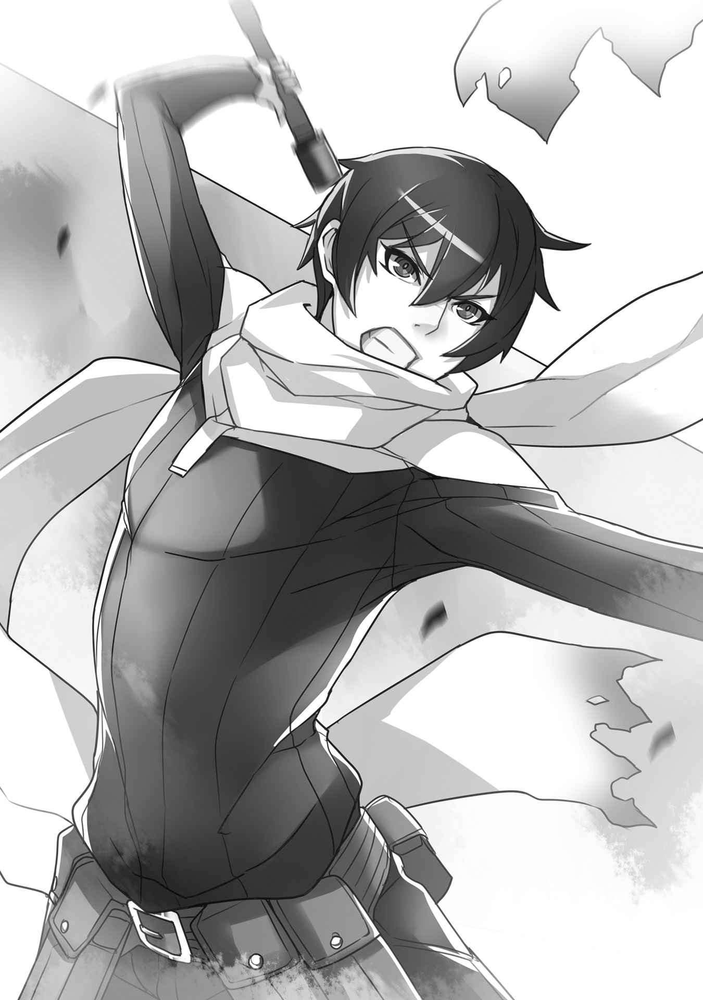
数秒遅れて、ドカンとダンジョンを震撼させるほどの爆発と閃光。
破片によって追加ダメージを与えるタイプでもあるのだが、部屋いっぱいのマミー達はそれ以前に激しい爆風だけで一掃されたらしく、床にバラバラになった死体だけが散らばっていた。
一気に全滅させたので、マミーの無限湧きも間に合わなくなったのか、しばらく湧いてこない。汚れた包帯だけが宙を舞っている。
「手榴弾を使う時は、やっぱりこの距離でいいんだな」
黒獣剣で死霊化したゲイルを倒した時も思ったが、身体が脆くなってしまっているアンデッドには、手榴弾の爆風がよく効く。
勇者の『光の剣』があるからって、何も馬鹿正直に接近戦だけで戦う必要はないのだ。ここぞという時は、アイテムの力を活用する。
うん。やはり俺は、このスタイルだな。
新型の柄付手榴弾は、柄を付けることでより遠くに投げやすくなっている。さらに火道式信管で火薬に点火するため、導火線の時より安全性は上がっている。
きちんと距離さえ取れれば、敵に大ダメージを与えつつ、こちらは無傷でいける。新兵器のテストも、実戦で試してみるのが一番であろう。
さてと、また敵が湧いてきたようだ。さすがに疲れたので休む。
「シュザンヌ、クローディア、あとは頼む」
「はい、ご主人様！」
入り口から出た俺と交代に、二人はその小さな身体よりも大きな『黒杉の大盾』を構えて、あれほどの爆発を受けてもまたすぐに湧き出したマミーに、盾の隙間から長槍を突き立てる。
「ご主人様どうぞ」
シャロンが、汗だくになった俺にタオルを被せて、ヴィオラが俺に冷たい水を差し出してくれた。
「ふうっ......」
休憩、ひとごこちついた。
大きな傷はないが、回復ポーションも飲んでおく。
そこに、バカでかい合成長弓を抱えた、緑フードの若い男がやってきた。
盗賊王ウェイク。
たった一度だけ戦場で相対した強敵。俺は、この男を悪夢で見ている。何度も、何度も、何度も、毎晩のように。
これも夢かと思ったが、現実だ。
「ハッ......本物のウェイクか？」
「お、おう。元気そうだな勇者」
金髪をかき上げたウェイクは笑顔を浮かべているものの、少し顔色が悪いようにみえる。
「ウェイクは、なんか元気なさそうだな」
「いや、あんなスゲエもん見ちまったら誰でもそうなるだろ。なんださっきの爆発する棍棒は？」
音もなくやってきていたウェイクは、俺がトレーニングで柄付手榴弾を使ったところをこっそりと観察していたらしい。
むしろ、俺のほうが神出鬼没のウェイクにビックリなんだが、ウェイクのほうもさっきの爆発の威力を見て驚いたらしい。
マミーを斬り続けて爆弾を浴びせた訓練は、実は勝てなかった強敵ウェイクと再戦して、今度こそ倒すイメージでやってたのだが、それがなんとなく伝わってしまったのだろうか。
「ウェイクなら、手榴弾ぐらいなんともないだろ？」
「そ、そりゃ......鉄砲でも魔法でも、そういう攻撃がくるってわかってりゃ対処の仕様はあるぜ。だから手の内を見せないことが大事なんだが、例えば今もちゃんと俺には護衛が付いてるんだぜ。気がつかなかっただろ？」
言われて、ウェイクに曲刀を持った手強そうな護衛が二人付き従っているのに気がついた。
目の前にいるのに、目を瞑ればそこにいると感じられないほどに気配を消している。かなりの手練だ。
「さすが、盗賊王ウェイクは抜かりがない」
「だが、さっきの手榴弾か？ あれがあの時あったら、こっちもヤバかったと肝が冷えた。お前らのマスケット銃という新兵器もたくさんあるんだから、どうせ手榴弾も一本だけじゃねえんだろ？」
「まあ、ダンジョンでテストしようと思って、十本ほどは試作品を用意して来ているが」
そう聞くと、ウェイクは苦笑いして肩を竦めた。
ようやく手榴弾は、鉄製の容器や火薬の量などが調整できて実戦に使える武器になりつつある。ただ、火道式信管はまだテスト段階で信頼性にかけるので、それほど自慢できるものでもないんだけどね。
「対処できるのは、そういうアイテムがあるってわかっているからこそだ。手榴弾は、初見殺しもいいところだぜ。今日は来ておいて良かった」
「ウェイクのお墨付きがあれば、手榴弾も使えるアイテムになったってことだな。俺も苦労して作った甲斐があったってもんだ」
「正直、最初に会った時は、お前みたいな若造が勇者呼ばわりされて、あの狡猾なゲイルを倒したなんて信じられないと思ってたんだが、俺はお前の実力を少し甘く見過ぎていたようだ。さっきの手榴弾で、お前がゲイルを殺ったって話もしっくりきたぜ」
手榴弾ぐらいでそこまで恐れるかとも思うが、爆弾の威力を初めて見るとそんな気になるのかもしれない。
それより俺は、ウェイクがゲイルと知り合いっぽいのが気になった。
「ウェイクは、ゲイルを知っているのか？」
「だいぶ前だが、ドット男爵領を縄張りにする盗賊団から救援を求められて、攻めてやったことがある」
「おー、ゲイルの領地だったところだな。ウェイクもゲイルと戦ったことがあるのか？」
夢の対決である。これは面白い。
「ああ、手強い敵だった。当時のゲイルはまだ騎士団長ではなかったが、貴族か高位の武家でないと出世できないシレジエ王国の近衛騎士団で、久しぶりに下級の平騎士から男爵にまで成り上がった豪腕の騎士がいると聞いて、これは是非とも実力を見てやろうと思ったんだが......」
そこでウェイクは、思い出すように遠い目になって、クックッと笑った。
「それで、ウェイクはゲイルには勝ったのか？」
「引き分けってとこだ。ゲイルは、俺の『反逆の魔弾』を二発弾いて、三発目を紙一重でかわした。今のお前ぐらい強かったが、そっからが面白いところだ。ゲイルは、お前とは真逆の行動を取った」
「二発弾いて、三発目を避けたんなら俺より強いんじゃないか？」
大砲があったから倒せたが、ゲイルは剣技のみで戦えば、未熟な勇者である俺を遥かに凌駕する実力があった。
「待て待て、面白いのはここからだ。攻撃をかわされた俺は、二回目の魔弾を喰らわしてやろうとしたんだが」
「あっ、待て。わかったぞ、ゲイルは逃げたんだろ？」
俺がそう言うと、ウェイクはニッと笑った。
「その通りだ。ゲイルは、副官に前線を任せて一目散に逃げ去ってしまった。一回目は辛うじてかわせたが、二回目はわからないと思ったんだろう。撤退のさなか奴の部下はたくさん死んだが、何度遭遇しても奴は後方に隠れて出て来なかった。俺は盗賊だから逃げるのは卑怯だとは思わん。倒せなかった以上は、引き分けだ」
「なるほど、ゲイルらしい......」
仲間を守ろうと前に出たウェイクや俺とは、まったく逆の対処。
勝てる時にのみ戦い、勝てない相手ならばどこまででも逃げる、故に負けない。
成り上がり者のゲイルは品性こそゲスだったが、その行動原理はどこまでも合理的だ。
そのまま真似をしたいとは思わないが、知略も実力のうちと考えれば、学ぶべきところは多い。
「俺の魔弾は、雑兵なら一気に三人から五人は倒せるが、言ってしまえばそれまでの技だ。大兵団同士の戦争となれば、戦況を覆せる程の力はない」
圧倒的な必殺技を持つウェイクが、そう自身の戦力を冷静に分析しているのだ。
それが個人戦と集団戦の違いというもので、謙遜ではないのだろう。
「それでも、小規模戦闘なら十分に覆せそうだけどな」
「クックッ、だから俺は盗賊の頭なんてやってるのだろうさ。俺は、遠距離攻撃が強いだけで決して無敵ってわけじゃない。この狭いダンジョンで、さっきの爆弾を投げつけられたら俺も危ねえな。俺に向かって、そいつを投げないでくれよ」
「もちろん、ウェイクには助けてもらってるから」
ウェイクの差し出した手を、俺はしっかりと握った。
「やはり、俺の勘は冴えてる。お前とは友誼を結んでおいて良かった。ネネカ達は役立ってるか？」
「ああ、ダンジョンは罠が多いから。助かってる」
ダンジョンの例に漏れず、オラクル大洞穴にも罠がある。
さすがは、探検家ギルドの名を冠しているだけあって、ウェイクの斡旋してくれた盗賊達は罠はずしに役だってくれている。
「なあウェイク、もしかしてダンジョン攻略に協力するために来てくれたのか？」
「おうよ。前人未到の大洞穴踏破なんて面白そうなイベント、是非交ぜてもらおうと思ってなあ。俺の連れてきた探検家ギルドの連中も、是非こき使ってやってくれ」
そう言って、ウェイクは爽やかな微笑みを浮かべた。
「ウェイク、協力してくれるならちゃんと報奨は払うよ」
「礼をくれるというなら、俺は金よりお前達の使ってる銃に興味がある」
そりゃ、そうだろう。
飛び道具なら、ウェイクの注意を引くとは思っていた。
「マスケット銃なら予備もあるから自由に使ってくれ。ネネカ達も使えるから探検家ギルドに技術提供してもいい」
「そりゃ、豪気な話だ。俺は新しくて面白い物が好きだ。その新しい飛び道具も試してみたくてしょうがなくてね」
「なあ、ウェイク。銃に興味があるなら、これを見てくれないか？」
俺はちょっと思い立って、ライフル銃の設計図を見せてみた。
ライフリングを使った新しい大砲や銃を作るように、大砲鋳造所のゴドフラン親方達に依頼してるんだが、かなり難航しているようなのだ。
このライフルというアイデア、飛び道具の専門家はどう見るか、俺も興味があった。
「このライフリングって凄いアイデアだな。これはつまり、弾の軌道にスパイラルをかけるってことだろ。自分でこれを思いついたのか......手榴弾といいライフリングといい、お前もしかして天才か？」
「まあ、それは俺が考えたわけじゃなくて、先達がいるわけだが......」
弓術の天才であるウェイクにそう言われると、こそばゆい。
「俺の師匠に弓聖ロウって、弓のことしか考えてない頭のオカシイ爺さんがいるんだが、その達人の爺さんが思いついた究極の矢ってのが、このスパイラルをかけるって発想だったんだ」
「そりゃ、凄い。思いつく人は思いつくってことか」
「ロウの爺さんの編み出した『スパイラル・アロー』は、鉄の矢を撃ち出すと同時に、風魔法で超回転をかけて軌道を安定させると同時に威力を強めた。もちろん弓の技術・魔法力ともに達人クラスでしかできない技だ。この銃の機構は、それとまったく同じ事を機械的にやろうとしてると見たな」
「なるほど、やっぱり魔法の力に頼るしかないのかな」
現在使われているマスケット銃は、前装滑腔銃だ。
使われている弾も、円弾である。紙薬莢にして、装填速度は工夫されているものの、ライフル銃とは弾の飛距離に大きな開きがある。
では、なぜ最初からライフル銃を作らなかったのか。
それは、この世界の冶金技術では、再現が難しかったからだ。
まず工作技術が未発達で、銃身の内側に繊細な螺旋状の溝を掘るのが難しい。
それをオーダーメードにより、職人の技術で刻んだとしても、実際ライフルに食い込ませるには口径より大きな弾を使用しなければならないので、前装銃では装填が大変になるのだ。
銃身に刻んだ溝に噛みあう弾も、円弾とは違い現代の円錐弾にしなければならないため、現地生産は難しくなる。
丸い鉛玉なら、戦地でも簡単に製造できる。その生産性を重んじてマスケット銃で妥協したのである。
しかし、銃の威力が知れ渡り、盗賊までもが運用できるほど扱いが簡単となれば、やがては広まって敵側にもマスケット銃が使われるようになるだろう。
その前に命中精度が高くより遠くまで飛ぶ、ライフル銃が必要だった。
単純に今のマスケット銃にライフルを刻むことは、高い技術を持つ鍛冶屋にオーダーメードで作ってもらえばそう難しいことではない。
しかし、それでは命中率があまりにも粗雑であり、これはすぐにダメだとわかった。
やはり後装式だ。現代の歩兵銃に近い、後装式旋条銃を創らなければならない。
できれば、給弾をカートリッジ交換にして連発できるとさらに有利になる。
しかし、技術的な問題点のクリアができないため、試作品ですらなかなか仕上がらないというのが現状だった。
特別仕様の連発銃なら、いっそ妥協して回転式拳銃にするかなどと、いろいろ考えているところだ。
「面白い話をされてますね」
ライル先生が五階から上がってきた。下層階の探索が一段落ついたらしい。
「先生も聞いてましたか。どうもこの弾に、スパイラルをかけることのできる魔法があるそうなんですよ」
「弓聖と名高いロウ翁の話でしょう。矢の命中精度を上げる魔法と、命中精度を下げる風系魔法の両方を開発した偉人として、魔術師の間では有名ですよね」
「なんだ、先生も知ってたんですか」
「ええ。盗賊王ウェイク殿にはお初にお目にかかりますが、その身につけた緑のローブが、弓聖翁のお作りになられた命中精度低下の魔法が掛かったものであることは一目瞭然ですからね」
ウェイクは、即座に自分の装備の付加魔法を言い当てられて、ギョッと目を剥いた。
「おい、俺はそんな話までしてねえよな。お前んとこの先生とやらは、万能の鑑定眼でも持ってるのか？」
「いえいえ、私は中級魔術師ですので、魔法が掛かっているとわかるだけです。それと銃撃を退けたというタケル殿の目撃証言を合わせれば、ローブに掛かっている魔法の性質を当てるのは簡単な推理ですよ。マスケット銃の弾丸を逸らすほど高い効果を持ったマジックローブとなれば、弓聖翁にしか作れぬ逸品でしょうから」
「凄まじいな......」
ウェイクが絶句している。
ライル先生の頭脳は、もうチートだからね。
「さて、ウェイク殿。その弓聖翁の魔法を教えていただければ、魔法銃としてライフルの作成は容易になるかと思われます」
一瞬、ウェイクと、ライル先生の視線が交差する。
強く睨み合うが、フッと苦笑いを浮かべたのはウェイクのほうだ。
「......仕方ねえなあ、弓魔法の奥義はロウの爺と昵近の弟子しか知らない秘中の秘なんだがよ。じゃあ、その魔法銃ができたら、俺にも一挺くれるってことで手を打つ」
そんなこんなで、弓魔法を補助に使うという奇形的な構造ながらも、ライフル銃がついにお目見えしそうな予感がしてきた。
もちろん、ここで話してるだけじゃ机上の空論だから、実際はゴドフラン親方に依頼して、協力してくれる付与魔術師も見つけないといけないんだけど。
イエ山脈は、魔宝石が多く採れるので魔道具の生産も盛んだ。
「ちゃんと魔宝石を組み込んで、魔法力がなくても使える構造にしましょう。そうじゃないとタケル殿が使えないですからね」
「それは、助かりますよ」
せっかくライフルができても、俺が使えないんじゃつまんないもんね。
しかし、高価な魔法石を使う上に完全なオーダーメードになるので、量産は難しいという点は、やっぱり少し残念ではある。
いずれは量産も考えたいところなんだが、義勇兵も増え続けているのでまずマスケット銃の数を揃えるほうを優先しなければならない事情もある。
なかなか、ままならないね。
●
盗賊王ウェイクのパーティー加入という思いがけない出来事がありつつも、オラクル大洞穴の探索は進む。
すでに攻略が終わっている地下五階を歩いていると、大蜘蛛の大量の死骸を見てウェイクが驚く。
「うあ、これ足長大毒蜘蛛じゃねえか。この数をよく退治できたな」
足長大毒蜘蛛は、粘性の高い糸を吐いて武器をダメにしたり身動きを封じた上で、猛毒の牙で噛んでくるという厄介な敵だそうだ。
「この手の生き物系モンスターは、銃士隊の一斉射撃の餌食ですからね」
先生がちょっと得意げに解説する。
銃弾が効きにくいアンデッドや、ゴーレムよりも、遥かにやりやすい相手だ。
「ふうん、やっぱり銃ってのは使えるんだな。あっ、そうだこの蜘蛛の死骸もらってもいいか？」
「構わないがウェイク、蜘蛛の死骸なんて何に使うんだ」
普通のモンスターならともかく、毒蜘蛛の死体など俺でも使い道が思い浮かばない。さすがのルイーズでも、毒がある昆虫は食べない。
「毒蜘蛛が獲物を捕らえる粘性のある糸も、猛毒が詰まった袋も、盗賊にはいい道具になるんだよ」
ウェイクは、これがそうだとポケットから白い糸玉を取り出して見せてくれる。蜘蛛の糸を加工して作ったアイテムらしい。これが命中するとネチョネチョとまとわりついて、敵の動きを封じるそうだ。
「なるほど、そんなアイテムになるのか。蜘蛛の糸や毒も使いようだな」
非正規戦闘、ことに密偵の技術では、ウェイクの盗賊ギルドには一日の長がある。間近に見て、学ぶことは多い。
大量に転がっている毒蜘蛛を、ウェイク配下の盗賊達がナイフで解体しているのを尻目に、六階に進む。
『オラクル大洞穴』六階は、珍しくモンスターが存在しない階層だった。
雑多な装飾具が並んでいる変な部屋で、どうやっても開かない扉の前には神聖文字で、奇妙なセリフが書いてある。
「風邪を引いているミイラ男はどこにいる、なんだこりゃ？」
「タケル殿、そこの棺桶を開けてくれますか」
先生の言うように、棺桶を開けると同時に開かなかった扉が開く。
「なんですかこりゃ？」
「謎掛けですね。幼年学校レベルのネタなんで、説明するのも恥ずかしいんですけど」
「教えて下さいよ？」
「風邪を引いているミイラ男、つまり棺桶棺桶と咳をする......、単なるダジャレですね」
えっ、本当にそんな答えなんですか。俺の言語チートの翻訳ミスじゃないよな。
不死王オラクルの能力は凄いと思うが、ギャグセンスは致命的のようだ。
例のスフィンクスが出す謎掛けより、酷いネタだと思う。
「床にいるペットを探せ」
「タケル殿、そこのカーペットをめくってください......」
床にいるペット、カーペット......また寒い、こんな下らないネタしか思い浮かばなかったのか、不死王オラクル。
「永遠の終わりを選べ」
おっ、これはなんか哲学的で、深遠そうな謎掛けだ。
「タケル殿、そこの『ん』の文字を押してください」
「うあ、マジですか......」
本当だ、扉が開いた。
えいえんの『ん』って、逆に簡単過ぎてわからないという奴だ。
実際には平仮名ではなく、神聖文字で書いてあるわけだが、人間の使う言語で書かれているということは知恵比べをしようぜって意味合いである。
それが、小学生レベルのナゾナゾってどういうことだよ。
「こういうのはね、出題者のレベルに合わせて考えるといいんですよ。相手は、児童レベルですね」
そう言いながら、下らない謎掛けに付き合わされたライル先生は、心底嫌そうな顔をしている。
相手の精神を徐々に削る、恥辱プレイの罠としてなら巧妙といえる過酷な階層だった。
先生、俺思うんですけど。
アンデッド系ってどんなに強くても、脳みそ腐ってますよね？
●
『オラクル大洞穴』地下七階。
児戯に等しい謎解きに比べれば、戦闘のほうが嬉しいぐらいなのだが、ここに来て強敵が現れた。
順調に進んだ先の広場で、ズシンズシン足音を鳴らして歩いている、ストーンゴーレムの群れ。
ほぼ鉄砲は効かないモンスターだ。
銃士隊とは、明らかに相性が悪い相手といえる。大砲なら粉砕できるが、わざわざ車輪を牽いて大砲をここまで運んでくるまでもない。
この程度の敵なら銃に頼らなくても、戦闘力がある戦士も揃っているのだ。
「良し、じゃあさっさと片付けます」
「こら、タケル。じゃなかった、我が主！ 一人で先行するな！」
ルイーズは怒りながら、慌てて追いかけてくる。
動きが鈍いストーンゴーレムなら、俺にも倒せるビジョンが見えている。
「タケルでいいけどね！」
「我が主を呼び捨てにはできん！」
重たい石の棍棒を、振り下ろすゴーレムの腕ごと光の剣でさっと斬り落とす。そして、そのまま返す剣で唐竹割りに一刀両断する。
刃の届く限りに於いてなら、光の剣で切断できないものはない。
「ほぉー、いい斬り込みだ。我が主も、そこそこできるようになったのだな」
ルイーズは感心しながら、俺が斬り落とした敵の石の棍棒を拾って、遠心力を込めてストーンゴーレムに投げつけた。
風切り音を鳴らしつつ飛んでいき、投擲された大きな棍棒がクリーンヒットした。
ゴツンと大きな音を立てて、仰向けに吹き飛んだストーンゴーレムは、周りのゴーレムを巻き込んで一気に倒れる、将棋倒しにゴーレムの群れが崩れる。
身体が重いせいで、一度倒れると起き上がれないようだ。
大砲並みだな、ルイーズの腕力。
俺が多少修行しても、ルイーズと力比べしたら勝てそうにない。
倒れたゴーレムを俺とルイーズで叩き潰して、残りをウェイクが合成長弓で『反逆の魔弾』を撃ちまくって片付けると、地下七階は静かになった。
銃弾で倒せない敵を屠れるのだから、ウェイクの弓は素晴らしいと思うのだが、本人は不満の様子で愚痴っている。
「早く銃弾が通用する敵が出てこないかな。せっかくマスケット銃をもらったのに、出番がないんじゃつまらねえ」
ウェイクは、早くマスケット銃を試射したくて、ウズウズしているようだ。
『オラクル大洞穴』地下八階。
地下八階は、地下水がゴオーと音を立て、瀑布となって流れている。
ダンジョンの中に、川があるのか？
どういう仕組みになっているのか、通路の横を流れている水は、透き通って綺麗だ。高低差に合わせて、滝になっていたりして爽やかな水しぶきに癒される。
「水浴びでもしたいぐらいですね」
「タケル殿、それは止めておいたほうがいいですよ」
俺達の目の前の川から、首を出したのは巨大な海蛇だった。
もちろん生物系なので、すぐさま銃士隊の一斉射撃で始末される。
弾を通さないほど皮が硬いってことはないようだ。
「こいつは、鉄砲だな？ 鉄砲だろう！」
ようやく銃の出番が来たと、ウェイクも銃士隊と一緒になって海蛇に弾を撃ち浴びせている。
初めて使うくせに、すぐにマスケット銃の仕組みを覚えたウェイクは、訓練を受けた銃士と同じぐらい装填が速い。
さすがは、飛び道具の扱いに長ける天才。
「ルイーズは、何をやってるんだ？」
「知らないのか、海蛇の肉は凄く美味いんだぞ」
「食べるのか、このデッカイ蛇を？」
そろそろ食事の時間でもあったので、みんなでルイーズを手伝って海蛇の死体を引き上げると調理して喰ってみた。
「なるほど、これは美味い」
「我が主......確かに食えるし、美味しいと言ったのは私だが、海蛇を生で食うとか、よくやるな。普通は炙り焼きにするんだぞ」
せっかく新鮮なんだから、お刺身にして食べてみたのだ。
コリコリと不思議な歯ごたえがあるのが特徴。しっかりと脂の乗った旨みは、蛇というより赤身の魚に近い。
おかしなものを食べてお腹壊しても、解毒ポーションがあるから酷幻想では寄生虫の心配もいらない。
魔法で体調を回復できるため、食事の面でいろいろと冒険ができるのがこの世界の良いところだ。
「そんなに美味そうに食べられると、ちょっと私も生で食べたくなってきたな」
「まあ、自己責任でどうぞ」
ルイーズは、お刺身で食べてみると悪くないと言っていた。
さすがイケる口だ。
醤油があるといいんだよな、塩をまぶすしかないからちょっとさみしい。
大豆はないが、他の豆類や麦はあるんだから、もろみ味噌ぐらいできるかもしれない。問題は、麹カビがこの世界に存在するかなんだよな。
今度時間があれば、発酵食品にチャレンジしてみるのもいい。
「先生、こうやって見ると大洞穴は、食べられるモンスターの宝庫ですね」
「ですね。味は良いですし、燻製か干し肉に加工して保存食にすれば、十分に売り物になりますよ。スパイクの街の食料問題も改善されるかもしれません」
それ以前に、軍隊の糧食としてもだいぶ助かってるしな。
モンスターの肉を食うのに抵抗がなくなった兵隊は、経費が安く済むからありがたい。
さらに先に進むと、たくさん海蛇が出てきた。
「こんなにたくさんでは、食べきれん」
ルイーズがそんな余裕のセリフをかましながら、自らも海蛇の頭を斬り捨てる。
大王烏賊が出てきた時は、俺も食うことしか考えられなくなった。
「イカ焼きだああぁ！」
俺が光の剣で、イカの足を両断すると、でっかいイカがブワーッとこっちに黒墨を吐いてきた。
「黒墨パスタだあぁ！」
地下八階は、まさに食料庫といっても過言ではない素晴らしい階層だった。
ちなみに、ルイーズが釣りをするとすぐに人食魚などが引っ掛かった。
この魚は骨ばって食べにくいが、毒はないから食べられないことはないとのこと。
日が当たらないから、天日干しにできないのだけが残念。
ただ、水が綺麗だからといって、ここで泳ぐのだけはおすすめできない。
●
『オラクル大洞穴』地下九階。
一般に出回っている、大洞穴の地図はみんなここで終わっている。つまり、それだけの大きな危険がここにあるということになる。
「致死性の罠かもしれませんから、盗賊団は特に注意して調べてください」
ここまで危険な罠はなかったが、それこそが油断を誘う罠とも考えられる。
ライル先生の指示で、ネネカ達は神妙な面持ちで壁をくまなく調べる。
先生も風の流れなどを入念に調べていた。毒ガスなどの罠なら排気にそれだけの工夫があるので、読み取れるとのこと。
そんな風に、慎重に進んだ地下九階も中程まで来て。
なぜこれ以降の探索が進まないのか、原因がハッキリした。
ゾンビ、ゾンビ、ゾンビ、ゾンビ、ゾンビ......。
広間いっぱいに、見渡す限りのゾンビ。
みんな鎧と剣を持って、冒険者の出で立ちのままで広場を歩き回っている。
「先生、つまりこれは」
「そうですね。みんなここで死んでゾンビになるので、増殖してどうしようもなくなったってことでしょう」
一目見て、これは無理だと思う。ここで諦めて帰る冒険者もたくさんいたことだろう。
ゾンビには、銃も効きにくい。
これは、ここを突破するのはかなりの骨になりそうだ。
「わたくしが浄化してみます」
リアが前に出て、アーサマの祈祷を行うが、白銀の光とともに浄化されたゾンビは一体だけ。
「どうやら、この場所自体に強烈な呪いがかかってるみたいで、わたくしの浄化も効きがとても悪いです」
「意図的にここをゾンビ溜りとして、冒険者を食い止めようとしているみたいですね。この先に進まれるとマズいのでしょうか」
「なるほど、じゃあ是が非でも進まないと行けませんね！」
俺がそう言うと、ライル先生も頷く。
手応えが出てきたからには、もう終盤ってことなのだろう。
しかし、さすがに不死者の王が造ったダンジョンは無駄がない。
ダンジョンを探索しようとする冒険者を殺してゾンビにして、冒険者に対するバリケードにするとは、なんというリサイクルか。
「とにかく、少しずつ削っていくしかありません。みんなリアさんの聖水で武装を聖化してください。ちょっとずつ削っていきましょう」
先生の号令で戦闘が開始される。
さすがに、元冒険者のゾンビは強い。
装備を着込んでいるということは、それなりに防御力もあるということ。
どこまで生前の意識が残っているのやら、剣を振り回すゾンビは、人間と戦っている感覚に近い。
「だが、ゾンビはゾンビだな。他愛もない」
動きは鈍くなくてもフェイントもなく、攻撃の仕方が単調だ。
やっぱりアンデッドは脳みそが腐っている。
「そりゃっ！」
わざと隙を見せて、相手が攻撃してくるのに対して、腕を斬り落としてやる。
この程度の敵なら、俺も楽勝になってきたな。腕を失ったゾンビを斬り伏せて一気に倒す。
戦闘の途中でウェイクが「弾を聖化したらどうだろう？」と言い始めて、これがテキメンに効果があった。
リアが神聖魔法で聖化した弾丸が直接当たれば、ゾンビにも大きなダメージを与えることができた。
ファンタジーならこういう時、銀の弾丸と相場が決まってるんだろうけど。
神聖魔法を鉛弾にかけるだけで効果絶大とは、コスパも絶大だ。飛び道具の専門家は発想が違う。
マスケット銃の攻撃が効きやすくなって、ゾンビ退治の効率は格段に上がった。
ほどなくして、広場いっぱいのゾンビの駆逐が完了した。
「おかしいですね......」
「どうしたんですか、先生？」
「いや、何者かに使役されているようにも見えませんでしたから、ゾンビキャリアがいると思ったんですが見当たりません」
「ああ、ゾンビが多い場所には、必ず感染源がいるって話ですか？」
「そうです。これだけの数のゾンビがいて、ゾンビキャリアがいないなんて違和感があります」
先生は考え込んでいたが、次の部屋ですぐその疑問は解消された。
ゾンビキャリア、ゾンビキャリア、ゾンビキャリア......。
鋭い毒の牙と爪を持ったゾンビキャリアの群れが、部屋から飛び出してきた。
先頭にいた俺とルイーズがとっさに剣で牽制したが、これは怖い。攻撃を一発でも受けたらゾンビの仲間入りさせられそうだ。
先生が、慌てて叫ぶ。
「みなさん、絶対に近づいてはいけません。ちょっとでも引っ掻かれたり噛まれたらゾンビになる恐れがあります。飛び道具だけで戦ってください！」
部屋に足を踏み入れたらゾンビキャリアの群れとか、前の部屋にいた冒険者達はみんなこれにやられたのだろう。
弾丸が聖化されたマスケット銃がなければ、俺達だって絶対に進めなかったところだ。
こっちには飛び道具の専門家がいるから助かった。
ウェイクも聖化した矢で『反逆の魔弾』を撃ちまくってたが、うちのルイーズも小弓で聖化された矢を撃ち放って、負けず劣らずの活躍をしている。
俺も頑張ってみるかと、弾を聖化したマスケット銃を撃ちまくる。
マスケット銃だって使えないわけじゃないんだが、一発ごとに弾込めしないといけないのが面倒くさい。
せめて連発できるライフル銃が欲しいところだ。
先生がゾンビの弱点である炎を使わず、石弾の魔法で攻撃していたのでどうしたのかなと思ったら。
土水風に比べると、炎系の魔法が苦手だと悲しそうに言われた。
そういや、そんな話があったな。すっかり忘れてた。
ライル先生は、なんでもできるチートに思えるが、持ち前の魔法力はどれほど鍛えても中級の真ん中ぐらいにしかならなかった。
それでも特別な人間だとは言えるのだが、熟知している魔法を使えないというのは悲しいものだろう。
ゾンビ祭りの様相を呈していた地下九階を探索し終えると、いよいよ階層は地下十階へと続く。
『オラクル大洞穴』地下十階は、これまでの洞穴とまったく違った印象だった。
ここまできた俺達を歓迎するように、階段を降りた先がシャンデリアの輝きに彩られている。
まるで貴族のお屋敷のように真新しい赤絨毯が敷かれていて、絹張りのソファーが並ぶ客間には、マホガニーでできた棚が設えてある。その中には、珍しい色調の陶器や皿が並べられていた。
リビングらしき部屋には、大きな絵画や、ピアノまで、飾り付けは実に貴族的だ。
ロイヤルスイートって感じだな。
「先生、この壷は凄いですよ。この国にもあったんですね、こういう工芸品。これは持って帰ったら高値で売れるなあ」
「そうですね。攻略が終わったらそうしてもいいと思いますが......タケル殿、これはどうやら当たりですよ」
「えっ？」
「敷いてある絨毯は真新しいですし、家具は最近になって運び込んだ形跡があります。つまり......」
「なるほど、ついにラスボスですね！」
「えっ、ラスボスってなんですか？」
今度はライル先生が聞き返してきた。ラスボスってことじゃないの？
これだけ調度が豪華ということは、それなりに知能を持った敵のボスがいるよって証拠かと思ったんだけど。
そんなことを先生と話していると、また敵が襲いかかってくる。
空飛ぶ真っ赤な悪鬼、ガーゴイルの群れだ！
本来ならかなり手強い敵なのだろうが、前に出た銃士隊の一斉射撃であっという間に始末がついた。
いや、こいつらは、石化する。
銃弾に敵わないと思ったのか、慌てて石になったガーゴイルも、俺が光の剣で斬り裂いて倒した。
うん、楽勝だった。
「ライル先生さっきの話ですが、ガーゴイルに守られてる豪華な部屋があるというのは、ゲームのパターンだとこの先にラスボスがいるんですよ。えっと、ラストボスって最強の敵ってことなんですけどね」
いや、ＲＰＧの話なんだけどね。どうも、ここはゲームっぽい感じがするから、もしかしたらと思って。
ゲームだと、ガーゴイルは大抵が番人で、その先にはラスボスがいて、倒すと宝物がもらえるとか。
俺がそう言うと、ライル先生は声を上げて笑った。
「アハハ、なるほど遊技の話ですか。タケル殿はその調子でいいですよ。これだけ様式美にこだわっているのですから、この先に迷宮の主がいるという推測で間違ってはいないでしょう。では、気を引き締めて行きましょう！」
俺達は、赤絨毯の終点である大きな門を開く。
ダンジョン地下十階の奥の大広間、するとそこには......やはりラスボスがいた！
「......んっ、なんとここまで冒険者が来たのか。フハハハッ、よくぞダンジョンの試練をくぐり抜けてここまでたどり着いた！」
大門を開くと、どこか既視感のある豪奢な謁見の間であった。どこまでも貴族的な造りらしい。
そして、玉座から立ち上がったのは、懐かしいあの男だった。
「ゾンビ男爵、もしかして男爵なのか？」
生きていたのかゾンビ男爵。
いや、ゾンビはもともと死んでるけども！
全身をフルプレートアーマーで包み、黒マントまで羽織っているが、間抜けにも頭が半分かち割れている。脳みそ腐った系男子、というかおっさん！
「ゾンビ男爵？ 何をいっておるか。吾輩は、魔王であるぞ！」
「あれ、ゾンビ男爵じゃないのか？」
「生前も男爵であったことはない。吾輩は、ロレーン辺境伯、ソックス・ロレーン・スパイクである。それも、昔のことではあるが」
ゾンビ男爵ではなく、ゾンビ辺境伯であるらしい。
かつての敵が、パワーアップして帰ってきたパターンだと思ったのに。
しかし、ゾンビ男爵とよく似た風貌をしているおっさんだ。ゾンビの顔なんて、一緒に見えるからかなと思ったら、ライル先生が説明してくれる。
「ソックス辺境伯は、ルーズ男爵の従兄弟に当たられる方ですよ。ルーズ男爵は分家、ソックス閣下は本家筋に当たられます。年齢も近いですから、顔も似ています。『魔素の瘴穴』で街ごと滅ぼされた、その悲運も似てしまったということですかね」
ライル先生は、かなり嫌そうだった。
死んでゾンビになった知り合いなんかに、会いたくないよなあ。
貴族だから親戚筋に貴族がいても当然だとは思うが、分家も、本家も、『魔素の瘴穴』で領民もろとも全滅してゾンビ・ロードに転生しちゃうって、ゾンビ男爵の家系は本当に悲惨だ。
「おや、そっちは万剣の騎士ルイーズ、そちらの文官も王城で見たことがある」
「お久しぶりです、ソックス閣下。死してゾンビ化されるとは、おいたわしいお姿ですね......」
さすがに元偉い地方領主だけあって、ルイーズと先生の顔は見知っているようだ。ただ、当時は下っ端だったライル先生の名前までは覚えていないらしい。
元辺境伯にも知られているルイーズは、やっぱり王都の有名人だったんだろうな。
「ただの冒険者かと思ったら、あんたは勇者じゃない！ なんであんた達がこんなところにいるのよ！」
存在感が全くないので声を上げるまで気がつかなかったが、ゾンビ辺境伯の隣に黒ローブの魔術師がいる。
どうやら、隠形の魔法を使っていたらしい。そして、その姿には見覚えがある。
「あっ、あいつ、隠形の上級魔術師ですよ、先生！」
「だからさっきから私は、当たりだって言ってたんですけどね。とりあえず──見敵必殺！」
ライル先生は、マスケット銃を構えると上級魔術師に向かって即座に発射した。
ちょっと、いくらなんでも会話中に不意打ちで発砲とか、反則くさいですよ先生。
どうも先生は、上級魔術師を見ると性格が変わるきらいがある。
しかし、先生の狙撃の腕はかなり高い。
かなり的確にヘッドショットを浴びせたのだが、隠形の上級魔術師は、なんらかの魔法をかけたのか、鉛の弾丸を青く輝く手でうるさそうに撥ね退けた。
「チイッ、こんなところまで追ってくるなんて小癪な人間の魔術師め！ ソックス様、この場は引きましょう」
大砲でも死ななかった上級魔術師は、人間離れしている。
しかし、続けて銃士隊の一斉射撃を浴びせられたら、やられないにしても堪ったものではないのだろう。
黒ローブを翻して飛来する鉛弾を撥ね退けた上級魔術師は、魔王と名乗っているソックス辺境伯を促して逃げようとする。
「カアラ、なぜ魔王である吾輩が、人間ごときに引かねばならんのだ？」
「正体をばらしちゃダメでしょう！ ええいもう......それはいいですけど、あの勇者は奇っ怪なアイテムを使うから侮ってはなりません。今はまだ力を蓄える時だって教えたでしょう。ともかく、ここはどうかお下がりください！」
ゾンビ辺境伯は、急に逃げると言われて困惑している様子。
そりゃ、偉そうに待ち構えてたもんな。
ゾンビなのでこちらの銃士隊による一斉射撃を喰らっても、平然とした顔をしている。そのせいか、余計に危機感がないのだろう。
あの上級魔術師、カアラって名前なんだな。あと魔王様と呼ばれているところをみると、ゾンビ化したソックス辺境伯も魔王になりつつあるのか。
そうするといずれは強敵となるだろうから、ここで逃さず倒しておくべきだな。
ゾンビ辺境伯も、ゾンビ男爵と一緒でなんか間抜けっぽい。ずっと隠形し続けたカアラと違って、相手に正体を隠そうという気もないのか、情報がボロボロ出てくる。
そこが狙い目だ。
俺はわざと芝居がかった仕草で挑発してやる。
「おいソックス辺境伯！ お前の従兄弟のルーズは、勇者である俺が倒した。貴様も我が光の剣の錆としてくれるぞ！」
俺が光の剣を大上段に構えて、かかって来いとジェスチャーした。
「フハハハハハッ、吾輩を倒せるというのか小童、面白いことを言うではないか！」
やっぱり男爵の親戚だな、挑発にすぐ乗ってくる。
脳みそが腐ってるせいかもしれないが、酷幻想の大貴族はプライドが高く面子を何よりも重視するので、こういう芝居がかった挑発に弱い。
「そうだ、貴様ごときゾンビが魔王だと笑わせるな！ 我が剣の錆にしてくれる！」
「面白い、実に面白いぞ。では、これではどうかな？」
ゾンビ魔王と化したソックス辺境伯は、高らかに笑いながら黒マントを翻すと玉座にあるレバーを引いた。
すると、謁見の間の横にある扉が開いて、ズシーン、ズシーンと音を立てて緑色の鱗をした巨大なドラゴンが出てくる。
「ドラゴンだと、聞いてないぞ！」
グリーンドラゴンとか、アースドラゴンとか言われる、オーソドックスなタイプのドラゴンだ。
その凶暴な爪や尻尾を一薙ぎするだけで、人間を十人は殺せるという、似非ドラゴンの黒飛竜と違って、ガチもんのドラゴン。
どうせオークロードとかを出してくるのかと思ったら、いきなりガチンコじゃねえか。
しまった、これはこちらにも油断があった。
補給線が切れていたこともあって、重い大砲を地下十階まで運ぶ余裕がなかったのだ。
こんなデカブツが出ると知ってたら、時間をかけてでも大砲も運び込んでおいたのだが。
「どうだ、凄かろう！」
いや凄いけど、やりすぎじゃないか。
身の丈五メートルもある恐竜をダンジョンで出してきても、天井に頭が付いてるじゃねーか。
よく見たら、ドラゴンにとっては大広間ですら狭いので、かなり身動き取りにくそうだ。そこらへんが狙い目か。
「こらぁ、魔王様！ 切り札のドラゴンを先に使わないでよ！」
ほら、魔王様ドラゴンはダメだよ。
上級魔術師のカアラさん（多分甲高い声を聞くと女だ）が、怒ってるじゃん。
「フハハハッ、ここをこいつらの墓場にしてしまえば切り札も何もあるまい。さあ、勇者と名乗る若造の相手は、吾輩自らがしてやろう。吾輩に向かって、大口を叩いた報いを受けるのだな！」
そう言うと、ブンッと音を立てて、手から漆黒に染まった剣を出現させるゾンビ辺境伯。
「ほう......これは本当に驚いた」
強烈な殺気に、冷水をぶっかけられたように、さっと頭が冷える。
勇者の俺みたいに、こいつも黒い剣を出すのか。光の剣に対する、闇の剣といったところか。
コミカルな印象で正直なところ舐めていたが、自ら魔王と名乗るだけの力はすでに有しているのか。
「そうだ、吾輩の力は闇の剣だけではない。『氷結の鎧』能力解放！」
そうゾンビ辺境伯が言うと、着ているフルプレートメイルが青白く光を放って、全身からたくさんの氷の柱が発生した。
着ているフルプレートメイルが、一瞬で氷結した。
「どうだ、この鎧は呪具の一つ、普通の人間が着れば身体が凍りついて死ぬところだが、ゾンビのこの身ならば関係ない。まったく、便利な身体になったものよ」
「うあ、寒い」
辺境伯の身体から発する冷気で、こっちは身震いするほどに寒い。周りを結晶化した氷が漂ってる。零下何十度だよ。
これは近くにいるだけで、体力を削られる。あの鎧を着ているゾンビ辺境伯に抱きつかれたりしたらと思うと、バカにできない攻勢防御だ。
「さあ、勇者の若造よ、かかってくるがいい。我が魔王伝説の最初の糧としてやろう！」
「またレジェンドかよ。しょうがない、こうなったらやってみるか」
ルイーズは、果敢にもドラゴンに向かって斬りかかってるし、盗賊王ウェイクも『反逆の魔弾』を撃ち始めた。
敵が魔王と隠形の上級魔術師である以上、ここで逃がす訳にはいかない。
先生は、隠形の上級魔術師カアラが岩弾の魔法を撃つのを、まったく同じ魔法で相殺し始めている。
巨大なドラゴンが身動きしにくいのと同じように、上級魔術師もダンジョンの中で大魔法が使えないのが不幸中の幸いだ。
むしろ、地の利はこちらにある。
「アーサマ、是非ともわたくしの勇者を守ってください！」
聖女のリアが、俺に『アーサマの護り』の詠唱をかけ始めた。俺の身体が温かい白銀の光に包まれて、氷結の寒さが相殺される。
向こうがドラゴンでも、こっちの戦力だって負けてない。俺はゾンビ辺境伯に、光の剣で斬りかかった。
光と闇の剣の軌跡が、目の前で交差して、バリッと大気が震えた。
「ふんっ、どうだ若造！」
「むうっ！」
ヤバイ、相手の剣技速すぎる。
「多少はできるようだが、これは素人の剣だな。騎士として幼少の頃より長年の鍛錬を積んだ吾輩に敵うものではない。この程度で勇者を名乗るとは、片腹痛い」
お前はもうゾンビだから、片腹痛くなったりしねえだろ。
そう突っ込んでやりたいところだが、こちらには長ゼリフを喋る余裕がない。
俺の『光の剣』と同等だとすると、あの漆黒の剣に当たったら『ミスリルの胴着』でも切断される。
相手に斬り刻まれないように、防戦一方になる。
「クソッ」
俺の剣技は、あくまで『光の剣』というチート武器補正があってのこと。
相手も同等の力の『闇の剣』を持つとなれば、剣士としての実力勝負となる。
向こうは、曲がりなりにも正統派の西洋剣術を学んできた元領主様だ。ゾンビ男爵と同じつもりで甘く見ていたことは否めない。五分の条件では勝てないか。
「フハハッ、ほれ斬り刻むぞ。どうするどうする！」
「......止めだ」
ここは潔く剣での戦いは諦め、一目散に逃げることにした。
俺がフルプレートの敵より優っているのは、羽のように軽いミスリル装備の身軽さだ。
まして、二万円もする最新モデルのハイテクシューズを履いている俺の足は速い。
重たい完全武装の上、凍りついた金属靴を履いているゾンビ辺境伯の足では追いつけまい。
足まで凍ってるなら滑って転けやがれと思うが、さすがにそこまでバカではないようだ。
「おおぉう？ まさか、勇者を名乗るものが尻尾を巻いて逃げるというのか。これは片腹痛い！」
お前の片腹は何度痛くなってんだよと思いながら、とにかく走る。
ゾンビ辺境伯はガシャンガシャン重たい甲冑を鳴らしながら、一直線に追いかけてくるので誘導しやすい。
鬼さんこちらっと。
俺も単純に逃げているだけではない。全力で逃げて距離を開けながら、なるべく味方を巻き込まない場所まで誘い込む。
すると、後ろからゾンビ辺境伯が「ぬおおおっ」と情けない声を上げた。後方で矢を撃っていたウェイクが、足止め用アイテムである大毒蜘蛛の糸を投げつけてくれたのだ。
真っ白い蜘蛛の糸がゾンビ辺境伯の下半身に粘り付いて、一時的に動きを封じる。
「ウェイク助かる！」
俺に親指を立ててみせたウェイクは、さっと辺境伯から離れる。俺がこれからやる攻撃を完全に理解してくれているようだ。
考えなしに部屋の手前まで追いかけてきてしまったゾンビ辺境伯は、まさに絶好のポジションにいる。これなら、爆発させても味方を巻き込まないで済む。
俺は腰にぶら下げてる柄付手榴弾の安全カバーを外すと、ピンを引き抜いて信管に点火する。
「これでも喰らえ！」
俺は思いっきり、手榴弾の柄を掴んでゾンビ辺境伯に投げつけた。
爆発の衝撃に備えたが......あれ？
「なんだ、この小さな棍棒は。まさかとは思うが......フハハハッ、もしかしてこれで攻撃のつもりなのか？」
蜘蛛の糸の足止めには驚いていたゾンビ辺境伯だが、柄付手榴弾をキャッチするとなんだこれはと、腐りかけた顔をくしゃくしゃにして笑っている。
チッ、不発弾か。ゾンビ辺境伯の着ている『氷結の鎧』が極端に冷えているせいで、中の導火線の火が消えちゃったのかもしれない。
まだ手榴弾は残っている。俺は、もう一本の柄付手榴弾を取り出して、ピンを引き抜いて投げつけた。
「おい勇者とやら、こんなもの何本投げても」
ゾンビ辺境伯が何か言いかけたが、その瞬間ダンジョンの大広間を揺るがす大爆発が起きた。
ドンドンと二回、大気を震わす大きな衝撃音。
後に投げた手榴弾の爆発で、不発だった手榴弾も一緒に誘爆した。
閃光とともに、ゾンビ辺境伯の身体は木っ端微塵に砕け散った。投げた俺もこれほどあっけないのかと思うほど、本当に粉々になってしまった。
後には、壊れた『氷結の鎧』の残骸だけが転がっている。
そうか、ゾンビ男爵は『氷結の鎧』でカチカチに身体を凍らせていたせいで、余計に砕けやすくなってたのかもしれない。
そうすると、半分は自滅といえる。
死なないアンデッドだからといって、調子に乗ってマイナス効果のある呪具なんか身につけるものではないな。
手榴弾の爆発の衝撃で、敵味方の戦闘が一瞬中断した。
シーンと静まり返ったあとにあがったのは、敵の上級魔術師カアラの悲鳴だった。
「なんなのよそれ......うそでしょうぉぉおおお！ アタシの魔王がぁぁあああああ！」
絹を引き裂くような魂の絶叫。
爆弾の音よりも大きく、大広間に響き渡る悲痛な女の金切り声。
ゾンビ辺境伯を倒した俺も、強敵であるドラゴン退治を手伝おうかと思ったが、その必要すらなかった。
ドラゴンは、さっきまで躍起になってルイーズを爪や牙で殺そうとしていたようだが、大広間とはいえ身の丈五メートルはあろうかという巨大ドラゴンが暴れまわるのに、ダンジョンは狭過ぎたのだ。
天井に何度も頭を打ち付けては、崩れた瓦礫が降り注いでダメージを受ける始末。
苦し紛れにグリーンドラゴンが毒のブレスを吐いても、リアの聖盾はブレス系の攻撃を防げてしまう。
まして、竜の肝を食いまくってるルイーズにはブレスの効き目が悪い。
この狭いダンジョンで、ドラゴンを無理やり出した段階で詰んでいたといえる。
硬い鱗の生えたドラゴンの表皮は、鉛弾が通らない程に硬い。しかし、盗賊王ウェイクの『反逆の魔弾』ならば突き刺さる。
ウェイクは一気に五本『反逆の魔弾』の乱れ矢を撃ち込む大サービスっぷりで、身体中に鉄の矢が次々突き刺さったグリーンドラゴンを弱らせて。
最後は、ルイーズがへたり込んだドラゴンの首根っこを、大剣で力任せに両断するといった感じだった。
こっちの決闘も、俺が助けに行く暇もなく決着である。
「やったぞ、我が主！」
切断された首から、真っ赤な噴水のように噴き上がる竜の血を全身に浴びて、血塗られた大剣を掲げ勝利の雄叫びを上げるルイーズ。
床を見れば、ルイーズが愛用していた直刀が何本も折れたり曲がったりして転がっている。
その戦闘を俺には見ている余裕もなかったが、それだけの激戦だったようだ。
そして、それだけの斬撃を浴びせて、なおも抗戦したドラゴンだったが、ようやく大剣の一撃で首が断ち切られて、事切れた。
それにしても、ルイーズもついに竜殺しの英雄になってしまったのか。
俺も場数を踏んで多少は強くなったが、元が「万剣」の二つ名を持つ騎士である彼女は、それをさらに超えて人間離れしていく。
「うあああっ、どうして、どうしてこうなるのよ！ アタシの育てた魔王がぁああ！ アタシのドラゴンがぁああ！ アタシの遠大な計画ぎゃぁぁあああ！」
一人残った隠形の上級魔術師カアラは、気が狂いそうなほどの叫びを上げつづけていた。
不意打ちを喰らった陰謀家ほど、愚かで悲しいものはない。
「なぜよ......勇者、そもそもなんでアタシがここで魔王を育てていることがわかったのよお！」
黒ローブのフードでよく顔が見えないが、泣き叫び過ぎたカアラの声はガラガラに嗄れている。
ここで遭遇戦になったのは、ほとんど偶然だったんだけど。
後から考えれば、先生はおそらくこの辺りに上級魔術師が隠れてるとは当たりを付けてたんだろうなとはわかる。
ダンジョンの奥深くに巣を張っていたところを見ると、この上級魔術師は先生の推察通り、魔王復活を目論む魔族だったということなのかな。
ここで見つけたのはたまたまで、俺は魔王退治なんてするつもりはなかったと言えば、遠大なる計画とやらを砕かれた上級魔術師があんまりにも哀れなので、ここは空気を読んでそれっぽいことを言っておく。
「邪悪なる魔術師カアラよ。この勇者佐渡タケル、魔王を育てようとする貴様の悪事などお見通しだ。神妙にお縄につけ！」
見抜いたのは先生で、俺はお見通しでもなんでもなかったのだが、まあここは敵の面子にも配慮してやって、大見得を切っておこう。
「おのれ、おのれ、おのれぇぇええ！ 誰があんた達なんかに捕まるものか！ カアラ・デモニア・デモニクスが伏して願わん、大いなる蒼き水よ、敵を押し流せ！」
上級魔術師カアラが、邪魔なものを振り払うように両手を広げて、高らかに呪文の詠唱を始めた。
うわ、どうやらこれ、こんな場所で大洪水の魔法を使おうとしているのか。ダンジョンで大洪水の魔法なんて使ったら、自分も溺れるだろ。やけっぱちかよ。
この戦闘の裏で、先生とリアは連携して、ディスペルマジックでカアラの魔法を抑えこもうとしてたらしいが、もう限界みたい。
策士としてはいまいち詰めが甘いが、カアラの魔術師としての実力は高い。
手榴弾を投げてやろうかとも思ったが、この位置取りだと味方を巻き込む恐れもある。こうなると、失うものがなくなった敵のほうが強い。
「もう抑えきれません。みんな下がって、大洪水がきます！」
ライル先生の叫び声を聞いて慌てて逃げる。うあ、また激流かよ。
もう嫌だ。なんでこんな時だけ、ワンパターンなんだよと思いつつ、後ろからスプラッシュマウンテンがくると、もう一目散に逃げるしかない。
「うぁあああああ！」
大いなる蒼き激流に飲み込まれて、全員大広間から押し流されてしまった。このダンジョンが、水捌け良く造られていたおかげで溺れなかったのが不幸中の幸い。
しかし、黒色火薬は水に濡れると使えなくなる。これでまた、手持ちのマスケット銃の弾も手榴弾も全部パァだよ。
あんまりにも酷い嘆きっぷりだったので、上級魔術師のカアラがちょっと可哀想だったかなとかも思っていたが、同情して損した。
ダメにされた火薬の恨みは、そのうち晴らしてやる。
●
「みんな大丈夫か？」
「なんとか平気です......」
ダンジョン内で大洪水の魔法は、ほとんど反則に近い。
しかし、その代償に全てを台無しにしてしまう。大広間の豪華な調度や、その間にあった赤絨毯のロイヤルスイートな部屋が、グチャグチャのビショビショになってしまっている。
これは、床上浸水より酷い。豪華な調度品は、持って帰って売ろうと思ってたのに全部台無しだ。
どうせ、この間にカアラが逃げてるのは言うまでもないだろうけど、念の為に追ってみるかと、俺達は水浸しになった大広間を探索する。
するとドラゴンが入っていた檻やら何やらの舞台裏があって、そこをぐるっと回ると奥の控え室を発見した。
そして、その控え室の小部屋に、白旗を持った青い肌をした少女が立っていた。
「降参なのじゃ、勇者殿！」
「お前、誰？ それより黒ローブの魔術師が通らなかったか？」
「カアラなら、そっちから今頃は地上に逃げておるところじゃぞ」
青い肌に、黒いゴシックロリータのようなドレスを纏った少女が指差す方向を見ると、『非常口』とかかれた階段がある。
「非常口って、そのままだな」
「今から走って、追いかけても間に合わんじゃろ。カアラは、隠形も得意じゃが逃げ足も速い。非常口の出口に、ディスペルマジックを使える魔術師の集団と強力な戦士を配置して、待ちぶせておるなら捕まえられるかもしれんが」
「いや、俺は非常口の存在すら知らなかったから」
「そうじゃろうのう。自力でダンジョンを踏破もしてない冒険者に非常口の存在がわかっては、ダンジョンの意味がないからの」
「ところで、そういうお前は誰なんだ？」
「申し遅れた勇者殿。ワシは、不死少女オラクルちゃんじゃ。このダンジョンの管理人なのじゃ」
白っぽい髪をツインテールに結んで、赤い目に青い肌の少女。なぜゴスロリ服を着ているのかは謎だが、それも魔族っぽい感じといえなくもない。
とりあえず、カアラの追撃は諦めて、この不死少女とやらの話を聞いてみることにした。
「不死王オラクルって、死んだんじゃなかったのか？」
「ワシはその不死王オラクル様がお造りに成られた、ダンジョンを守るためのダンジョンマスターじゃ。不死王オラクル様の爪の先から創造された、言ってみれば分身のようなものじゃ」
クローニングの技術があるとか、昔の魔族凄過ぎるだろ。
「お前は不死王オラクル本人ではないってことなんだな？」
「そうなのじゃ。ワシは不死王様ではなく、不死少女オラクルちゃんじゃ！」
決め台詞のつもりなのか、そう叫びながら上目遣いに小首を傾げて、両手で黒いゴスロリスカートをたくし上げてフリフリしてくる。
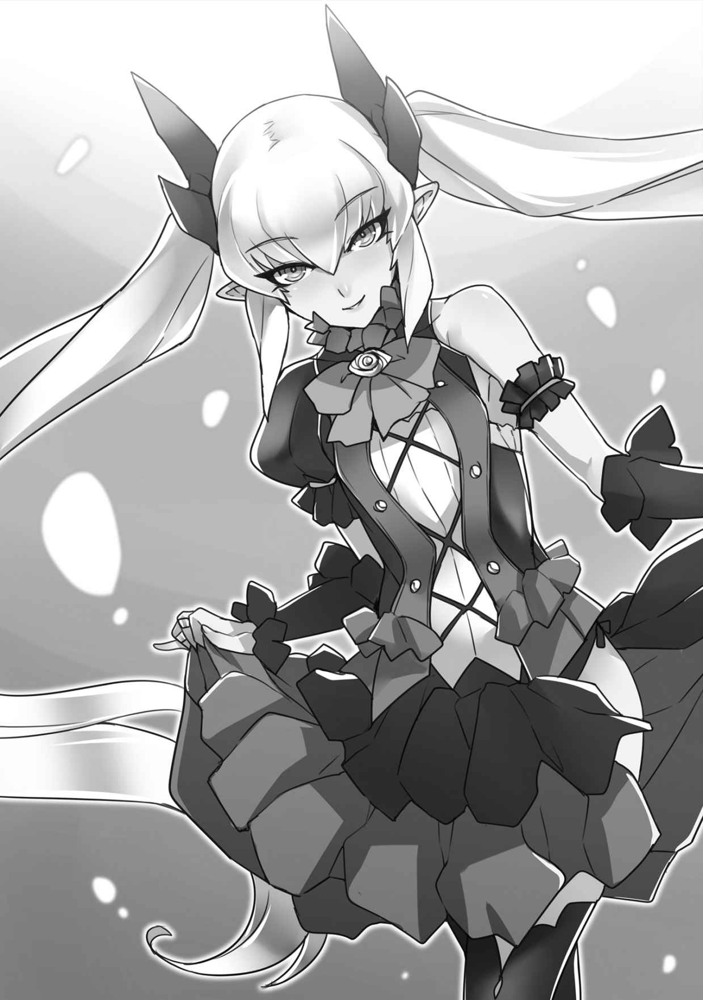
「よくわかったから、その変な動作はいいから」
変なとか言われて、ちょっと傷ついているオラクルちゃんに、俺は事情を話すように促した。
そうすると「むうっ、このカッコカワユイ魅惑のポージングを考えるのに、二十年ぐらい構想を練ったのに、なんじゃその反応......じゃあ、今度はバージョンツーじゃ今度は凄いぞ」とか話してくる。
そのスカートをふわりと広げて、小首を傾げるポーズは、あまりカッコいいようには見えないけどね。まあ、可愛くはあるか。
「しかし、決めポーズを考えるのに二十年かけるとか暇な......いや、こっちものんびり可愛いポーズを鑑賞してる場合じゃないんだが」
「うむ、冗談じゃ。この『オラクル大洞穴』が創られて三百年。ワシは、ずっとこの芸術品とも言える、ダンジョンの管理人をしてきたのじゃ」
「ふうむ、この立派なダンジョンを維持するには、そりゃ管理人がいるだろうけど。なんで少女なんだ？」
酷幻想に来てから、やけに少女に縁があるなあと不思議に思う。
「そりゃお主、ダンジョンマスターであるワシが殺されたら、この『オラクル大洞穴』は終わりなのじゃぞ......じゃから、万が一見つかってもなるべく殺されぬように、このような無害で可愛らしく見える姿形に創られておるわけじゃ」
「なるほど、まあ可愛らしいっちゃ可愛らしいな」
青い肌ってのは、魔族でどうしようもないんだろうだけど、これはこれで悪くはない。さっきの変なポーズは余計としても、美少女といって通る容姿だ。
ダンジョンが攻略された後で冒険者に捕まってしまったら、最終手段として可愛らしい容姿を使って命乞いをするというのもありかもしれない。
うん確かに、不死少女オラクルちゃんは可愛らしい。
ダンジョンの価値が変わらないように、三百年前の美的センスも、そう変わらないんだなとも思える。
「そうじゃろ、良かった。ホッとしたわい。勇者殿がワシを可愛いと思ってくれなかったら、生存率が下がるところじゃ。なんならサービスで握手も、抱っこも、ジャンケンキスゲームもオーケーじゃぞ」
ジャンケンキスゲームってなんだよ。ちょっと気になる。
「......いや、いいよ。それより、なんで降伏なんだ。カアラと一緒に逃げれば良かったじゃないか？」
俺がそう聞くと、不死少女オラクルは憤懣やるかたないと言った様子で、ブンブンと白旗を振るった。
「ワシはカアラの仲間ではない！ 聞いてくれるか勇者殿！」
そこから、不死少女オラクルの愚痴が始まった......。
なんでも、この二百四十年途絶えていた『魔素の瘴穴』から魔素が再び供給されて喜んでいたのも束の間、またすぐ魔素が途絶えたかと思うと、今度はカアラがあのゾンビ辺境伯を連れてきて「今度こそ、魔王に育てる」とか言い出し、ダンジョンを勝手に占拠してしまったそうだ。
「なあ、酷いじゃろ。同じ魔族だから、魔王復活に協力するのは当然とか言われて、地中からの残り少ない魔素もみんな奪われて、ワシは関係ないじゃん！」
「まあ、そうだよねえ」
俺達で喩えると、勝手に家に入ってきて、「同じ人間だから」とか言われて我が物顔されても困るよな。
オラクルちゃんが造り主から与えられた使命は、この『オラクル大洞穴』を維持管理することなのだ。
カアラの目指している、魔王の復活は全く関係ない業務である。それを手伝えと言われて勝手をされては、嫌気が差すのも無理はない。
「魔素の瘴穴が途絶えてから、この辺りの魔素は、地中から僅かに滲み出る程度しか出ない。それをワシは必死に地中から汲み上げて、爪に火を灯すような思いで、このダンジョンを懸命に維持してきたのじゃ」
なんでも本来の『オラクル大洞穴』は、地下三十階建てのそれはそれは凄い芸術的なこれ以上はないという大ダンジョンだったそうなのだ。
そこは人間の歴史にも残り、このオラクル子爵領の名前の元にもなったぐらいなのでメジャーな大ダンジョンだったとは言えるのだろう。
しかし、古の魔王も造り主である不死王も倒されてしまい、『魔素の瘴穴』も封印されてしまってから二百四十年、ダンジョンに供給される魔素は極微量になって、管理に苦労したそうだ。
「まあ、やってくる人族の冒険者もレベルが低かったからのう。地下十階までを維持して、もし万が一クリアする者がおれば、制覇記念としてマジックアイテムでもやれば、満足して帰るんじゃないかとそう思ったわけじゃ」
実際には、冒険者は地下九階までしか行けなかった。ゾンビキャリア溜りで全滅してたのだからその判断は正解だった。
俺達みたいなイレギュラーがくるとは予測できないだろうし。
「ちなみに、地下十階以降は隠しダンジョンじゃからの。ああっ、でも魔素が足りないから稼動は無理じゃ。ごめん」
「いや、もう地下十階で十分だからいいよ」
俺はもともと、ダンジョン探索を楽しみに来た冒険者じゃないのだ。そもそも、今の時代の人間は、人間同士の争いで忙しくてダンジョン攻略どころじゃない。
「そかそか、勇者殿は欲がないのう」
「いや、むしろなんで、そんなにサービス精神旺盛なんだよ」
この大ダンジョンで感じたのは、悪意のなさだ。
フェアプレイ精神と言えばいいのか。もっと致命的な罠で全滅させればいいのに、罠も謎掛けも致命的なものが少なかった。
まるで、冒険者に攻略して欲しいと誘っているかのようだった。
「なんでって、ダンジョンはそこを制覇しようと挑む冒険者が来てこそ完成される芸術なんじゃ。冒険者と共に切磋琢磨し、一緒に育て上げていくことこそ、ダンジョンが存在する意義といえる」
当然のように言われても困る。なんか、シビアさがない。
もともと、人族と魔族の歴史って、生存を賭けた殺し合いじゃなかったのかよという疑問も出てくる。
「ふうむ、あんまりよくはわからないけども、美学みたいなものがあるのか......」
辛うじてわかるのは、このダンジョンを作った不死王オラクルってのは、芸術家肌だったということだ。
単なるモンスターの住居として創ったわけじゃなくて、博物館や美術館みたいな気持ちで、誰かにクリアして欲しくて創ったのだろうか。
それはまさに、不死王の高等遊技である。そうでなければ、無償奉仕のアミューズメントパークだな。
道理で、ダンジョンがどこかゲームじみていると感じたはずだ。
一説によると半万年も生きてたと伝えられる不死王というのは、よっぽど暇だったのかもしれない。
「だからじゃ、魔王様と不死王様が倒された時、これはいよいよ勇者がくるなあと思って、地下三十階で待ち構えていた時はドキドキした。あの時なら、ワシは殺されても構わんと思いつめておったのじゃが......」
「あー、先代の勇者が悪いことしたかもな」
勇者ってのが、勇者レンス以外にもこの二百四十年間、何人いたのか知らないが、みんな『オラクル大洞穴』を無視した。
まあ、そりゃ不死少女オラクルちゃんが、そんな覚悟で地下三十階で待ってるなんて誰も知らないし、勇者としても無駄に苦労してこんなデカいダンジョンを攻略する理由がない。
冒険者にしても、せいぜいモンスターが湧いてきたら邪魔だから、上層階を清掃しようぐらいのものだろう。
制覇できたら英雄と讃えられるかもしれないって機運はあったのだろうが、『オラクル大洞穴』というゲームをクリアしたらご褒美が待ってるとか誰も知らないのだ。そりゃチャレンジャーも少なくなる。
芸術家の考えることというのは、何時の時代も世間からは理解され難いものなのかもしれない。
「なんじゃな......ずっと待ってても冒険者は下までこないし、ダンジョンの力は弱まっていくばかりで、その挙句があの人間の魔術の粋を会得した天才魔族カアラだかなんだか知らんが、変な奴に勝手にうちを荒らされて、もうほとほと嫌になった」
「ああ、なるほど。やっぱりカアラは、魔族の上級魔術師なんだな」
カアラは、人間の魔法を極めた魔族。だから、先生が各国の上級魔術師名簿を探しても見つからなかった。
やはり、先生の推理が当たってたんだな。
「そのカアラじゃよ。さっきも見たじゃろう！ ダンジョンにドラゴンまで放つわ、大洪水は起こすわ、もうワシの愛する大洞穴はボロボロじゃ。これで何もできずに殺されたら、ワシの三百年の人生はなんじゃったんじゃ......」
悔しそうに呻くオラクルちゃんは、赤い瞳に涙を浮かべて訴えてくる。
「あーわかった、泣くな泣くな。殺さないから」
泣く子と地頭には勝てぬと言う。
三百歳とわかってても、姿形は子供だしな。
「本当じゃな。勇者殿は、ワシの降伏を認めてくれるんじゃな？」
「約束してやる。その代わりに、カアラの情報を教えてくれ」
このままでは、不死王オラクルのカワイイ生存戦略にそのまんまハマったことになってしまうので、交換条件として情報提供を求めてみる。
「カアラの情報といっても、奴がだいたい二十歳ぐらいの女で、この辺りの魔族にしては突然変異的に魔力が強い天才ってことと、出身部族の特徴で隠形魔法と人間に化けるのが上手いことぐらいしか知らんのじゃ」
二百四十年前に建国王レンスが『魔素の瘴穴』を封印したあと、このシレジエ地方は言うなれば魔界から、人間界に切り替わってしまった。
土着の魔族は力を失ったが絶滅したわけではなく、隠形を使ったり人の姿に化けたりして辛うじて生き延びている状態だそうだ。
「だいたい、カアラは天才魔術師なんじゃから、自分が自らの力で魔族を率いてどっかに魔族の国を建てればいいじゃろ。それを、やたら人族の国を戦争や内乱で争わせたり、元人間のゾンビをワシのとこに連れてきて魔王にしようとしたり、奴の考えてることはわからんのじゃ」
あー、うちにもそういう先生いるわ。
天才ってのは自分がやるより、誰かを大将に押し立てて裏に回りたいのかもね。
自分が表立って動くのではなく、あくまで誰かを動かしてことを進める。策士タイプってのは、そういうものなのかもしれない。
「誰の話をしてるんですか？」
「あっ、先生。そっちの後始末はもう済んだんですか」
「ええ、リアさんがゾンビ辺境伯の死体を浄化しましたよ。これで生まれたばかりの魔王が、また復活することもないでしょう。これでタケル殿も勇者として星二つですね。あと、ルイーズさんは、まだドラゴンの解体にかかりきりになってます」
こりゃ、今日の夕飯もドラゴンの内臓のスープだな。
海蛇も食べ過ぎたから、あっさりしたものが食べたいんだけど望み薄か。
「ワシはもう何もかも嫌になった。降伏が正式に受理されたんじゃから、ワシを含めて『オラクル大洞穴』を勇者殿の支配下に置いてもらうぞ」
「えっ、それってどういうこと？」
「うんとな。ダンジョンの征服者として、全部面倒みろってことじゃ。勇者殿に支配されたとなれば、もうあのカアラとか言うバカ上級魔術師はうちに来ないじゃろうし、好都合じゃ」
「降伏って、それが狙いだったのか」
転んでもただでは起きないというが、オラクルちゃんもわりと強かだ。
「うん、そっちにも便利なはずじゃぞ、三階までは硝石とか言うのを作る土地として開放してやるし、欲しけりゃ海蛇の肉ぐらい、いつでもくれてやる」
「なんだこっちの話を聞いてたのか？」
そういえばオラクルちゃんは、俺のことも最初から勇者って言ってたな。
「そうじゃ、ワシはダンジョンマスターなんじゃから、このダンジョンであったことはみんな耳にしておる」
「結構、便利な能力なんだな」
「でもそれも、今日で終いじゃ。しばらく......そうじゃな、勇者殿があと八十年生きるか、百年生きるかは知らんが、それぐらいは『オラクル大洞穴』は閉鎖することにした。ワシはお主に付いて行くぞ」
「いや、閉鎖とか付いて行くとか、勝手にそんなことしていいのか？」
不死王オラクルに、管理を任されたんだろ。
職場放棄にならないか。
「いいんじゃ。誰かにダンジョンが征服された場合の対処法も、ちゃんと命令されておる。ワシは、この三百年一人で頑張って来たし、少しぐらい休んでも構わんじゃろ。どっちにしろ、こんなに派手にぶっ壊されては、補修しようにも、もう魔素が足らん」
なるほど随分とアバウトに、降伏や閉鎖を決めるんだなと思ったが、どっちにしろしばらくは営業できないってことか。
「恥ずかしいダンジョンを客に見せるぐらいなら、閉めたほうがいいのじゃ」
確かにあのドラゴンと、大洪水はやり過ぎだったよな。せっかくの大広間も、綺麗な飾り付けも、滅茶苦茶になっちゃったし。
カアラに毎回火薬をダメにされてる立場としては、オラクルちゃんに同情する。
そんなこんなで、俺の『オラクル大洞穴』攻略は成功した。
というか、なぜか俺の管理下にダンジョンマスター、不死少女オラクルごと入ってしまったらしい。
カアラ達が逃げていった非常口の階段を登ると、『オラクル大洞穴』地下一階に通じていた。
非常口は各階にアクセスできるそうで、例えば八階の水棲モンスターの間で、海蛇を獲って地上に戻るなんてこともできる。
覚えておいて損はないだろう。
それにしても一体何日ぐらいダンジョンに篭っていたのか、久しぶりの陽の光に目が眩んだ。
「本当に、オラクルも俺に付いてくるのか？」
「そうじゃよ、ワシを含めて勇者殿の支配下に入ったと言ったじゃろう」
ダンジョンにそのままいてくれても良かったのだが。
うーん、見た目はゴスロリ姿の白ツインテールの単なる魔族の少女だが、三百年も生きているのだから知識は豊富そうだし、連れて行けば何かの役に立つかもしれない。
「なんじゃ、品定めか。ワシは、プロポーションにはあまり自信がないぞ。これしかできん」
見つめられたオラクルちゃんは、何を思ったのかまたゴスロリスカートをクイックイッと、たくし上げるポーズをした。
「その変なポーズは、止めたほうがいいと思うけどな......」
あんまりやるとパンツが見えてしまう。まあ、連れて行っても害はなさそうだが。
そうだ役に立つといえば、強いアイテムを取りに来たんだった。
「そういえば、ダンジョンをクリアしたらご褒美が貰えるんだろう。俺にもクリアの報奨で、何かアイテムはないのか」
「オラクル大洞穴ごと、勇者殿の物になったと何度も言うとるじゃろうが。マジックアイテムなら倉庫に腐るほどあるから、全部持っていけばいいのじゃ」
ダンジョンの深い階層にずっと武具や道具を転がしておくと、一定の確率で魔法が付与されるそうだ。
勝手に付与されてしまうと言ったほうがいいか。
例えばゾンビ辺境伯が着けていた『氷結の鎧』などだが、普通の人間が着ると凍えて死んでしまう呪いの装備となる。
プラスの効果が出るとは限らないから、装備には注意しないといけないわけである。
それはまあ、ポジティブな効果が出るものを選り優ればいいわけで。
「マジックアイテムは、あとでゆっくり吟味するとして一番有用な防具は何かな」
「それだと、一番はこれじゃな」
オラクルちゃんは、ダンジョンの倉庫から光り輝くミスリルのフルプレートメイルを持ってきた。
「ふむ、『ミスリルの全身鎧』か。俺が着てる胴着よりも、全身が守られるから強そうでいい。しかも、なんか光ってるね」
「うむ、この青白き光は、あらゆる攻撃に対する抵抗魔法が強くかかっとるのじゃ。素材は軽くて丈夫な希少金属ミスリルにして、全ての属性攻撃に対する抵抗。奇跡的な組み合わせじゃな。ワシのダンジョンにも、これ以上の超貴重品はない。自信を持ってオススメできる一品じゃ！」
なるほど、じゃあ貰っておくか。
ミスリルは何より、絹の服を着たように軽く、着心地がいいのが利点だ。まだまだ体力不足な俺にはありがたい防具である。
「あとは防具と言えば、結構つまらんマジックアイテムしかなくてのう。プレートメイルでも、耐火とか耐冷の魔法が掛かってるとか、使えるようで使い勝手が悪いじゃろ？」
「そうだな、使用場所が限定されてしまうな。まあないよりはマシだ。全部貰っておくよ」
火に強い鎧とか、大砲が暴発した時にも守られるかもしれない。砲撃手に着せるのにいい。
俺は、青白い光に包まれた『ミスリルの全身鎧』を着ると、お古の『ミスリルの胴着』をシャロンに与えた。
「ご主人様、私あんまり戦力にならないけど、いいんですか？」
「お前に、遠慮するなって言うのは何回目だったかな。シャロンが着てくれることで、俺が悪夢にうなされなくて済むんだ」
俺が誰を守りたいかといえば、まずは一番近くにいるシャロンだ。
皆まで言わなくても、聡明なシャロンなら察してくれる。
「わかりました。ご主人様の御心だと思って、ありがたく着させていただきます」
「シャロン。あと言わなくてもわかるだろうが、強い防具を与えるからと言って」
機嫌良くピョコピョコと犬耳を揺らしているシャロンは、白銀に輝く『ミスリルの胴着』を着て微笑んだ。
革の鎧よりミスリルのほうが、オレンジ色の髪によく似合っている。
「ご命令は、俺より前には出るな......ですよね？」
「そうだ、わかっていればいい。お前は、ずっとそばにいてもらわないと困るからな」
「ご主人様......」
シャロンとそんな話をしてたら、オラクルが足元の石をつまらなそうに蹴っ飛ばした。
飛んだ石はバシュッと音を立て、俺の近くをかすめて、ダンジョン入り口の壁にめり込んだ。
「うわっ！」
お前、わりと自分の戦闘力も高いんじゃねえか。なんで大人しく降伏した？
「ワシのダンジョンの話の途中なのに、なんで他の女といい雰囲気作っとるんじゃ。もうマジックアイテムやらんぞ！」
なんか、オラクルちゃんのご機嫌を損ねたらしい。素直に降伏したと思ったら、意外に気難しい面もある。
「あーすまんすまん、オラクル。続きを頼む。武器とかはどうだ？」
「おおっ、そうじゃ武器はわりと付加魔法の付きが良くてな。『竜殺しの大剣』はどうじゃ？」
その武器はオラクルちゃん自慢の逸品らしく、説明しているうちに機嫌を直した。
どうやら、これもダンジョン自慢の一部らしい。とりあえず、褒めておこう。
「うーんそうか、確かに『竜殺しの大剣』凄いね。キラーとかスレイヤーの魔法が掛かってるんだな。これも使い勝手が限定される感じだが、使い方だよな」
もともとの対物攻撃強化も多少はかかっているんだろうが、『オークスレイヤーの槍』とか『オーガスレイヤーの鉄ハンマー』とか、いまいち微妙だ。
かなり強力な武器ではありそうな『竜殺しの大剣』にしても、ずっと持ち歩いていて、いつドラゴンと対峙できるのかって問題がある。
これなら誰に対しても効果がある『遠投のナイフ』とか、『命中率上昇の矢』などのほうがいいぐらい。
しかし、もしさっきの戦闘でルイーズが『竜殺しの大剣』を持っていれば、ドラゴンとの戦闘は半分の時間で済んだだろう。
やはり、これはルイーズに持たせておくべきだな。また、竜族のモンスターに襲われることもあるかもしれない。
ルイーズに『竜殺しの大剣』を渡すと、欣喜雀躍だった。
「これで私も、竜殺しの騎士と成れるか。うむ、この大剣の重量感も手にしっくり馴染む。あと、オークスレイヤーとオーガスレイヤーも欲しいんだが？」
「ルイーズが欲しいのは、全部持っていっていいよ」
「タケル、一応ワシのアイテムじゃぞ......」
「ああ、すまん」
「まあいい。どうせダンジョンも、しばらく終いじゃから、好きに持っていくのじゃ。どうせ百年ぐらい経てば、またマジックアイテムも溜まるじゃろうしな」
不死王の血を引くオラクルちゃんの時間の感覚は、俺らとは全然違うようだ。
結局、キラーだのスレイヤーだのと銘の付いた武器は、ルイーズが全部持っていくことになった。
持ち歩けるのかと思ったが、持ち歩けるんだろうな。ルイーズは万剣と言うだけあって、いつも武器を大きなリュックに入れて大量に持ち歩いてる。
体力無尽蔵のルイーズだからできる技であって、普通の人が真似しちゃいけない。
まあ、主なマジックアイテムはこんなものか。
魔法具はともかく、呪具の類はちょっと使い道が思い浮かばなかったので保留としておいた。
ウェイクが「いや、呪具は工夫すれば暗殺に使える」とか言ってたが、さすがにそんな陰湿な武器は使いたくない。
そりゃ、ウェイク達にも頑張ってもらったから、報奨に欲しけりゃいくらでも渡すけどさ。
●
スパイクの街に戻ると、オルトレット子爵が大歓迎してくれた。
ダンジョンを支配下に置いてきた、これが証拠であるダンジョンマスターだと不死少女オラクルを紹介すると、歓迎を通り越して、オルトレット子爵の顔が真っ青になった。
「まさか、あの前人未到の『オラクル大洞穴』を制覇しただけでなく、この短時間で支配下に置かれるとは、もはや拙者の想像を絶します。さすが、勇者様としか......」
あっ、これ引かれてるな。
「ですよね......」
俺も、そうとしか言いようがない。引く、オルトレット子爵の気持ちもわかる。
成り行きとは怖い。攻略はしようと思ったが、支配下に置こうなどと思っても見なかったのだ。
「と、ともかくです。あそこからモンスターが湧いて出ないことだけでも、街にとってはありがたいことでござる。勇者様には感謝してもしきれません。拙者不調法ゆえ、大層なもてなしはできませんが、どうぞゆっくりと逗留していってください」
「ありがとう、オルトレット子爵」
そうは言っても、子爵の居城は本当に質素で、あまり長逗留したくない感じなんだよな。
ベッドも小さいし硬いし、これだけの居城に風呂がないってのはどうなってんだ。
メイドもいないし、ここにシルエット姫様を長く住まわせるのは、ちょっと抵抗がある。食事も、キャンプして海蛇の刺身でも食ってたほうがマシなレベルだ。
兵糧じゃないんだから、普段から干し肉と乾パンは止めろ。その上、デザートですと出されたのが干したイチジクだったりする。
どうやら子爵には料理という発想がないらしい。こりゃダメだと、厨房を借りて俺達が飯を作ることにした。
「オルトレット子爵、厨房を貸してください。ドラゴン料理をご馳走しますよ」
うちのルイーズが、ダンジョンから取ってきたドラゴンの内臓を煮たくてたまらなそうな顔をしているから。
「ドラゴン退治までなされたのですか！」
「ええ、そのついでに、ゾンビ化して魔王に成りかけてた、元辺境伯を退治してきましたよ」
オルトレットは、あんぐりと口を大きく開けて、目を大きく見開いた驚愕の表情のまま硬直した。
俺もあまり言いたくなかったんだけど、しょうがないよなあ。現地領主には事情説明しないわけにいかないし。
「あの、どうぞ。厨房を、お使いになって、クダサイ......」
意気消沈してしまった子爵の口調が、ついにカタコトになってしまった。
厨房を借りてルイーズが作ったグリーンドラゴンの内臓スープは、一言で言うと凄く辛い！
「どうだ我が主、舌にピリッとくるのが癖になるだろう」
「ルイーズ、これどうなってんだ。香辛料は入れてなかったよな。ドラゴンのブレス袋とかのせいなのか？」
毒じゃないならいいけど、未知の食感だぞこれ。
舌に凄いビリビリくる、まさに火を吐く辛さ。辛いを通り越して痛みすらあるのはさすがドラゴンである。
でも旨みも凄いから、スプーンが止まらない。
「ドラゴンのブレス袋スープは、適量ならそのタイプの攻撃の抵抗力を強めると聞きますが、あまり摂り過ぎると、対魔法力過多で火病になるともいいます。身体を痛めないために、一人一杯にしておいた方が無難でしょう」
「えっ、でも先生。ルイーズもう何杯も食べちゃってますよ」
ライル先生が、微妙な笑顔のまま、首をゆっくりと横に振った。処置なしと。
ルイーズの胃袋なら大丈夫だろうが、良い子は真似しちゃダメだ。
「美味いのう、美味いのう！」
オラクルちゃんもバクバク食べているが。
「まあ、魔族も悪い子だから平気か......」
この異国風の風味、舌を刺す刺激的な辛さ、ドロッとした食感。何かと思ったら、タイカレーの味に近い。
これはご飯にかけて食べてみたいな。パンで代用しとくか。
「ドラゴンステーキなど、拙者生まれて初めて食べました......」
俺達が魔王退治してきたと聞いて、呆然自失となっているオルトレット子爵は、武家の出にしては礼儀正しくナイフで切り分けて、チマチマと食べている。
まあ、他の武家であるルイーズやジルさんも、礼儀作法が悪いというほどではないが、彼女達がガツガツと食べているのに比べると大人しい。
その大きなガタイを見れば、明らかに本来は大食漢であろうオルトレット子爵は、食欲が全然湧かないらしい。
子爵が食事も喉を通らなくなるのも無理はなく、自分の領地の地中で魔王が育ちつつあったなどと知ったら、どこの領主でもこうなるだろう。
せっかくのドラゴンステーキだが、味もしないんだろう。しばらく休んだほうがいいよ子爵。
オルトレット子爵の質実剛健な居城は、ベッドの数だけは十分なのだが、この硬さはなんとかならないのか。
幌馬車の毛布を持ってきて対応しているが、こんな風でシルエット姫様は健やかに休まれておられるのだろうかと、気になって仕方がない。
俺は男だから野宿も平気だし、革袋を枕にしたって眠れるけども、女性陣には厳しいんじゃないか。
オルトレット子爵は武家だから、こういうところ気が利かない。
ちょっと見てこようかなと姫様の部屋を覗いたら、ジルさんに睨まれた。
いや、俺は様子を見たかっただけなんですけどね。覗き込もうとすると、ルイーズも顔を出した。
「我が主、シルエット姫様の護衛なら、ジルと私がやっておくから十分だ」
「そうか、ルイーズ達が守ってるなら安心だな」
姫様の警備体制は、万全らしい。
うーん、そうかわかった。俺もさっさと寝よう。
俺も、硬いベッドに入ると、シャロンが重い木造のベッドを、ズリズリ引きずって俺の横まで来た。
揺れる犬耳は可愛らしいのに、大層な力持ちである。
「今日もご苦労だな、シャロン」
「当然です」
何が当然なのか知らないが、俺の護衛を心掛けているシャロンは、なんとしてでも俺の隣にベッドを並べて寝るつもりらしい。
俺はあの魔族の上級魔術師のカアラに、かなりの恨みを買ったであろうし、意趣返しに寝込みを襲われる可能性は十分にある。そう考えれば、寝所にも護衛が必要になるわけだ。
やはり、陰謀家のカアラを取り逃がしてしまったのはマズかった。
次はどんな策謀でくるのか、不安は残る。
きちんと警備を考えているのか、俺の寝床にはシャロンが、シュザンヌとクローディアは俺の部屋の入り口と、窓際にベッドを移動させて守りを固めている。
ちゃんと武器や盾を携えての臨戦態勢、俺の小さい護衛達は頼もしい限りである。
「よいしょっと」
不死少女オラクルちゃんまでやってきた。ちゃんとゴスロリ姿から、ネグリジェに着替えて枕まで持っている。
「なんだ、オラクルどうした。ベッドならお前にも割り当ててあるだろう」
「いや何、ワシもせっかくだから、夜伽させてもらおうかと思っての」
「いや、護衛ならシャロンが......」
なんだ、今変なこと言ったな、夜伽とか。
夜伽には、主君のために夜通し付きそうとかって意味もあるのかな。そっちの意味の古語だろう。そうだよね？
「ワシも、初めてダンジョンの外に出たんだから、いろいろ経験してみたいのじゃ」
「それと俺の横に寝るのと、どういう関係があるんだ？」
嫌な予感しかしないが、あらかじめ聞かないよりは、マシな結果になると経験上わかっているので仕方なく尋ねる。
「じゃから、ワシも処女のまま死にたくないと常々思っとったところじゃ。これもいい経験じゃろう」
「......やっぱ、そっちの夜伽かよ」
しかも、お前も直球かよ。
酷幻想って、わりと倫理観が崩壊してるんだよな。みんな直裁過ぎる。
厳しい戒律があるはずのシスターがあんな感じだから、魔族のオラクルちゃんに倫理を説いても仕方がないけども。
「いい機会じゃろ。こうして、ワシも勇者殿の所有物になったわけじゃし、こういうエロい報奨もあっていいと思っての」
「いや、ないよ！ あらかじめ言っておくけど、俺は少女を抱く趣味も、つもりもないからね」
俺の好みはあれだよ、お姉さん系だよ。
ストライクゾーンで言うと、本人には怖いから言わないけどルイーズとかだよ。
「大丈夫じゃ。ワシは形は少女じゃが、三百歳じゃから、生殖器は大人じゃから」
そう言いつつ、枕を抱えたオラクルちゃんはなおも、俺に迫ってくる。
「お前、女の子が生殖器とか言うな！」
直球どころか大暴投だよ。三百歳でも女が言うな。
仮に百歩譲って俺がやる気になってたとしても、その発言がナマナマしくて萎えるよ。
「ああもう、安眠の邪魔だから、オラクルもいい加減にしろ」
「ご主人様、この魔族追い出しましょうか？」
シャロンが、ちょっと怒ったように言った。
「いや、シャロン、それは止めたほうがいいけどな」
オラクルちゃんは、見た目より強いから。シャロンも見た目より力持ちなのは知ってるけど、オラクルの蹴りを見る限りかなりの強さだぞ。
「ご主人様、そうじゃありませんよ。得体のしれない魔族を、寝所に入れること自体危険だと申し上げているんです」
「ふうむ、なるほど」
シャロンの言うこともわからなくもない。
こうして所有物になったといっても、いきなり寝床に招き入れるのは危ないと言うのも道理か。
「なんじゃ、ワシは勇者殿に信頼されてないのか。そりゃ、一緒に寝てもらえんのう。寝首をかく、などと思われては......」
俺達の会話を聞いていたオラクルちゃんは、部屋の端っこでいじけて、チラチラこっちを見てくる。三百歳なのに、本当に子供みたいだな。
可愛らしい女の子の姿であるオラクルちゃんにそんな対応されたら、俺も拒絶するようなことは言い難い。
「いや、オラクルを信頼してないわけじゃないぞ。実際お前は、言葉だけじゃなくて行動で恭順を示してるしな」
オラクルちゃんが頑張って整備したダンジョンをクリアした感想として、こいつは信用してもいいやつだと、思えたってこともある。
「じゃあ、ワシだって夜伽していいじゃろ。女が行動で恭順を示すとはそういうことじゃよ。どうせ、そっちの女だってしてるのじゃろうから、減るもんじゃないしいいじゃろ」
「まだしてないです！」
シャロンが、真っ赤な顔をしている。
珍しいものが見れた、まあ俺もここまで直球で言われると恥ずかしい。
「なんじゃ、寝所に女を連れ込んで何もしておらんのか。すると何か、勇者殿はもしかして、誰ともしない系なのか。まさか、女に興味がないとかか？」
「いや、ホモだとか、そう言うんじゃないからな」
絶対そういう疑いをかけてくるだろうと思ったので、先に断っておく。
女の子に興味を示し過ぎてもからかわれるし、興味ない素振りをすればそういう茶々を入れてくるやつがいるもんだ。
「うむ、男色家でないのはわかるぞ。ワシは匂いを嗅げば、自分がまぐわえる相手かぐらい、すぐ見分けがつくのじゃ。だから、勇者殿を誘っておるわけじゃ」
「便利なんだな、魔族ってのは」
匂いを嗅ぐだけで性交渉できるかわかれば、さぞナンパが上手くいくことだろう。
「つまり、お主は純粋なんじゃ。なんじゃあ、つまらん」
「オラクル、お前......、そういう直球なの程々にしろよ」
今、ものすごい大ダメージ入ったぞ。
ひねくれ大二病系の男子に、ピュアとか一番の禁句だろうがよ！
不器用とか、臆病とか罵られるほうが百倍マシだ。もういっそ、男らしく押し倒してやろうかと思ったぞ......しないけど。
どうせ俺は、臆病だよ。こんななあなあの流れで、女を抱けるとは思えないから童貞やってるんだよ。
「はぁぁ、勇者殿がやってくれんのなら、そこらのつまらん男でも相手にして処女を散らすか」
「そういうのも止めろ！」
「なんじゃ、止めてくれるんじゃな。脈はあるということか」
ニヤニヤ笑うなうっとうしい。お前はリアか。
「俺はおっぱい付いてない女は、そういう対象には見ないが、それで良ければ横に寝るぐらいは許す」
「そうかそうか、別に焦っておらんしの。ワシは不死じゃ、十年や二十年ぐらい、お主がその気になるまで待つぐらい造作もない」
つか、いいんだけど......俺、童貞捨てるのに、そんなに時間掛かる目算なのか？
あと十年掛かるとすると、俺も上級魔術師に成れてしまうのか？
なんかこういう高位の魔族に言われると、不吉な予言みたいで嫌だな。
「じゃあ、寝るから静かにしろよ。静かにするならオラクルも横に寝てもいい」
「あのご主人様？」
「どうした、シャロン」
「おっぱいなら私にも付いてますけど？」
たまにシャロンも、俺が返事できないことを言うよね。
「シャロン、蝋燭を消せ」
「......おやすみなさいませ」
俺は、一緒に寝ると言ったわりに、グダグダとベッドの端にいるオラクルを両手で捕まえて抱きしめてやった。
「な、なんじゃ、もしかして本気でやる気か。いきなりだと心の準備がまだなのじゃが......」
「やらねーよ。だが、抱き枕ぐらいには、なってくれるんだろ」
「信用してくれるってことじゃな？」
「そうそう、そういう親愛の情だから安心して寝ろ」
オラクルは、しばらく抱いて寝ていると、強張らせていた身を柔らかくした。
三百歳生きた不死魔族か知らんが、こうするとうちの奴隷少女と変わらない。
白っぽい柔らかい髪を撫でながら寝るのに、オラクルはちょうどいい大きさだし悪くない。
オラクルちゃんを抱きながら思ったのは、なんだコイツ本当はただ寂しいだけじゃないかってことだ。長く生きてるせいか、大層なひねくれ者だ。
相手が魔族だとかは、あまり関係ない。相手の顔を見れば何を考えているか、俺にもちょっとぐらいはわかる。
俺もこの世界に来てから人とたくさん関わるようになって、少しは相手の気持ちが読めるようになってきた。特に、寂しい気配はわかりやすい。
オラクルちゃんは、妙に気を張ってるところがあるから、寂しいなんて素直に口にすることができなかった。だから、夜伽だなんだと照れ隠しで言っただけなんだろう。
育ての親が死んで、待っていた勇者に無視されて、オラクルちゃんはダンジョンの穴の底で二百四十年も孤独な生活を送ってきたという。
闇の底からやってくる冒険者を観察して、いつか相まみえる日を想像してカッコ可愛いポーズの練習に、二十年もかけていたオラクル。
そのずっと抱えていた寂しさが、どんなものか想像もできないけれど、一緒に寝るぐらいは俺でもしてやれるだろう。
無限の時を生きる生き物にとっては、それもほんの束の間だろうけど。
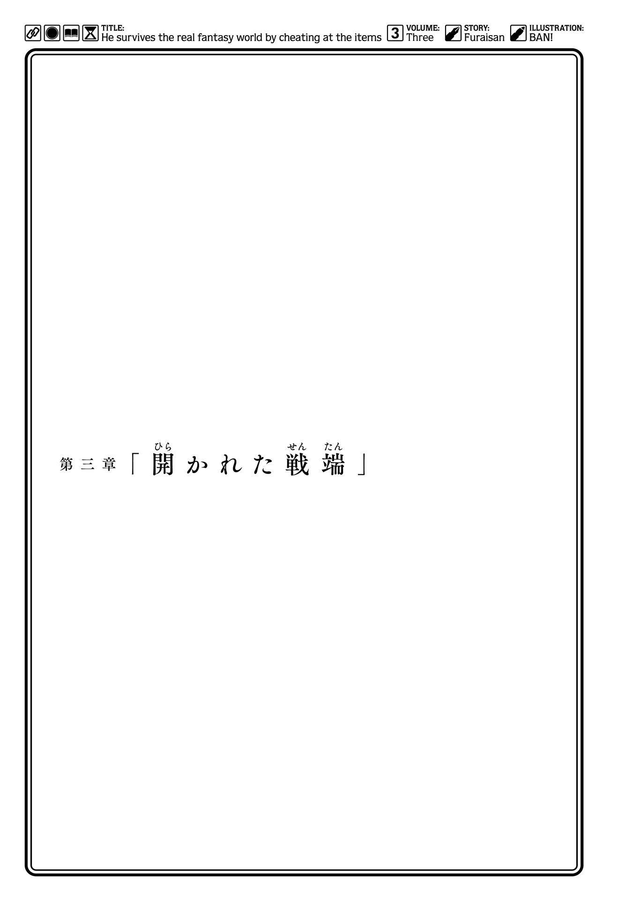
夜もまだ明けきらぬ早朝に、血相を変えたオルトレット子爵が、俺達の部屋に飛び込んできた。
「勇者様、たたた、大変でござるよ！」
「どうしたんだよ、子爵、朝っぱらから......ふぁぁあ」
なんとか欠伸を噛み殺す。朝というにも、早すぎる時間だ。
「ですから、大変でござる！ トランシュバニア公国の軍勢が、国境を越えてまっすぐこのスパイクの街のほうに進撃していると、早馬が来たのでござる！」
護衛のクローディアが黄燐マッチを擦って、ロウソクを点すと子爵の顔色が青いを通り越して、土色になっているのがよくわかった。
「しかし、子爵。継承問題のゴタゴタは済んだはずだろ。なんでまた、公国軍がここにいきなり攻め寄せてきてるんだよ！」
このオラクル子爵領は、公国との国境線の領地ではない。
間にロレーン伯爵領を挟んでいる。
子爵の言うことが正しいなら、敵はロレーン伯爵領を飛び越えて一気に内地まで攻めてきたことになる。ちょっと考えにくい動きだ。
「なんでまたとは、領主である拙者が聞きたいぐらいでござるよ。なんでよりにもよって、この街に軍勢が迫ってるのでござろう！」
国境線を越えたトランシュバニア公国の軍勢は、まずロレーン伯領の街、ロレーンを囲んだらしい。
そして、そこを兵団で囲んで足止めしたまま、トランシュバニア公国の再精鋭である千騎の近衛騎士団が、このオラクル子爵領スパイクの街を一直線に目指しているそうだ。
物見の報告によると、突然の敵の来襲で、付近は大騒ぎになっているそうである。
「千騎の騎士による奇襲か、かなりの強行軍だな」
慌てふためくオルトレット子爵を見ても、俺にはあまりピンとこない。
確かに騎士団千騎は大部隊だろうなとは思うが、どんなもんだろう。
千騎もの騎士が並んで進軍する姿なんて、ゲイルのクーデターの時ですら目撃しなかったから、いまいちイメージが湧かない。
俺達が起きだしてスパイクの居城の大広間に行くと、すでに銃士隊の精鋭を揃え、作戦地図まで広げてライル先生が待っていた。
「公国騎士団は、トランシュバニア公国軍の最精鋭。機動力のある騎士のみで、敵地の深くを一気に強襲とは、敵も思い切った策に踏み切ったものです」
王都での外交の時に、騎士団同士の対決をしようとか敵将のゴットロープ伯爵が言ってたが、本気でやるつもりだったのだ。
この強襲作戦は、もとから準備されていた策なのかもしれない。
「先生、いまいちイメージできないんですが、騎士団ってそんなに強いんですか？」
「機動力、突撃力ともに最強の兵科ですよ。平地でまともにぶつかれば、こっちの銃士隊の陣など一回の突撃で崩壊します」
「そこまでですか。でも籠城して、大砲を使えばどうです？」
「それでも、こちらの準備不足が痛いですね。大砲の数も足りませんし、街の石壁の補修が終わってません。今から急遽バリケードを築いてオルトレット子爵の手勢と一緒にスパイクの街に篭ったところで、半日持たないでしょう」
重騎士の軍団は、前近代的とはいえバカにできないってことだろう。
騎士としての自負心を力に変えて戦うルイーズやジルさんを見ていると、戦闘力が高いのも頷ける。
「先生、このいきなりの敵の攻撃って、カアラの意趣返しなんですかね？」
「あの憎き上級魔術師、カアラと言う魔族の策動と考えてほぼ間違いないでしょうね。『オラクル大洞穴』を魔王軍立ち上げの拠点とするつもりだったカアラは、このロレーン地方で王国軍と公国軍を延々と争わせて、無法地帯のままにしておくつもりだったんでしょう」
人間に化けて、人間の世界でも最上級魔術を極めた天才魔族カアラ。
長い年月をかけて、シレジエ王国内部に人脈を作り、ゲイルを唆してクーデターを起こさせたのも彼女である。
シレジエの敵国となったトランシュバニア公国でも、同じ事をしているのだとすれば、公国軍のゴットロープ伯爵に取り入って、こっちに軍を向けさせることもできないわけではない。
「きっと、そのための策を転用したんでしょうね。シレジエの勇者、佐渡タケルが『オラクル大洞穴』に篭っている今こそ、邪魔者を倒す千載一遇の好機だと唆したのでしょう。そこに攻め入れば、シレジエの旗頭になっているシルエット姫様を攫い、タケル殿も殺すことができる。千騎の騎士に上級魔術師の援護があれば、ゴットロープ伯爵どころかその軍師であるヤーン団長でも勝算ありと乗るのも無理はない」
「俺を殺れば、シレジエ王国に痛手を与えられると言うわけですか。俺も高く買われたもんだな」
ライル先生は、フフッと鼻で笑う。
「いまさら何を言ってるんです。痛手どころか、タケル殿が死ねばこの王国はもう終わりですよ」
「いや、そこまでは」
「どちらにしろ、こっちには、シルエット姫殿下までいるんですからね」
「あー、そうか。それは確かに終わりかも......」
将棋は、王将を取れば終わりではあるが、攻め入られたこっちの手元には、さらにシルエット姫様もいる。
チェスでいえば、キングとクイーンを一網打尽ってところか。
ここまで姫様を連れてきたのは迂闊だった。
いまさら後悔している暇もない。こうしている間にも、強行軍で騎馬隊千騎が迫っている以上、俺がなんとかしないといけない。
手元の兵力は、青銅砲が四門に、義勇軍銃士が三百人。あと密偵部隊が十五人か。
「オルトレット子爵、子爵の手勢はどのくらいですか？」
「なにぶん子爵家ができてから日が浅く、拙者の配下の騎士は二十騎ばかりです。徒歩の兵は、今からかき集めても二百がせいぜいかと」
俺の義勇兵と合わせて五百の歩兵では、公国軍千騎にはとても勝てない。
こんなことならもっと大軍で来れば良かったとも思うが、後から言っても仕方がない。兵站の絡みもあるので、これ以上の動員は考慮されなかった。
戦争になるなんてもともと思ってもいないし、それを想定していたとしてもまさか国境線のこれほど遠くで、敵軍の強襲を受けるなんて誰も想定してない。
それだけに、この強襲は見事なタイミングなのだ。籠城して王都から救援を呼んでも、とても間に合わない。
遠距離攻撃チートであるウェイクが、ダンジョン攻略が終わると同時に、何処かに去ってしまったのが痛いな。
いや、あの盗賊王に、国同士の争いに介入しろと頼むのが無理か。
ウェイクの探検家ギルドは傭兵団ではないので、国家間の争いには常に関わらず、中立を保つ方針だ。
こんな状況で助けてくれなどと言ったら、逆に愛想を尽かされてしまう。
さて、この大ピンチに、俺がとっさに思いつく策。
いっそのこと、このスパイクの街にいる全員で『オラクル大洞穴』に立てこもるなんてどうだろう？
先生に提案してみると、爆笑された。
「ハハッ、それはタケル殿らしい奇策ですね。ダンジョンに立てこもるなんて、史上初の軍略ですよ。もう打つ手が無くなったら、是非そうしましょう」
「姫様だけでも、護衛のジルさんと一緒に大洞穴に入ってもらったほうがいいんじゃないですかね。ダンジョンの中が一番安全って皮肉ですけど」
まったく、笑い話にもならないが『オラクル大洞穴』は、一応俺の支配下に入っているということなので使える戦術拠点にはなる。
あと幸いなのは、ダンジョンで手に入れたマジックアイテムで、少しは戦力の底上げができていることかな。
待てよ......今一番使えるのは『オラクル大洞穴』つまり、この不死少女オラクルちゃんだよな？
「なあ、オラクル。四階のマミー無限湧きの部屋があったよな。あれってダンジョンの外でも使えたりしないか」
オラクルちゃんは、ムウと白い眉根を顰める。
「うーん、使えないことはないのじゃが。外に出すと、ダンジョンの中のようにはいかないからのう。フルで残存魔素を振り絞っても、マミーを千体出すのが限界じゃぞ」
「おー、それいけるじゃん！」
マミーが千体も出せるなら、敵を動揺させるには十分だ。
「何がイケるんじゃ。騎士の強さはワシだって知っておるぞ。気持ち悪い唸り声を上げて、抱きつくしか能がないマミーでは、たとえ同数当てたところで時間稼ぎにしかならん。重騎士に騎馬突撃でも受けようものなら、それすらできん」
「いや......それはやり方次第じゃないか」
戦場で重要なのは、何よりも士気だ。
士気が下がれば、どんな強兵も戦えない。
「先生、オラクル、二人だけちょっとこっちに来て」
「どうしたんですかタケル殿、うあっ、耳に息を吹きかけないでくださいよ」
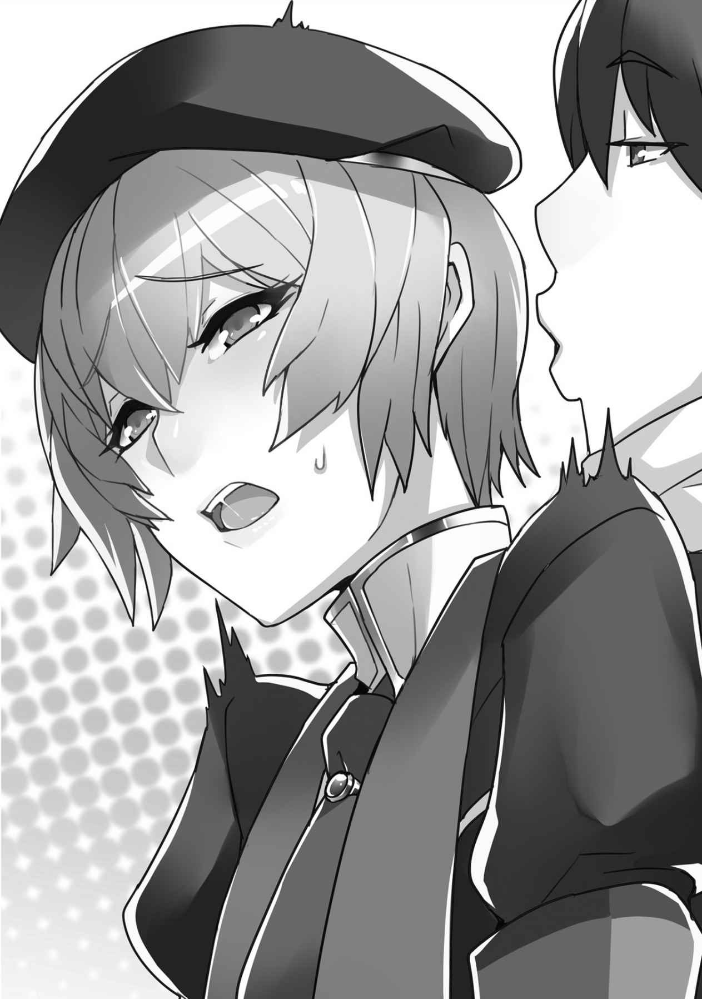
身震いした先生が可愛い。
軽いジョークですよ、緊張をほぐさないとね。
「それ、ワシにもやってやって」
「よしやってやるぞ、オラクルには頑張ってもらわんといけないからな」
耳に息を吹きかけてやると、キャーと白ツインテールを震わせるオラクルちゃん。
そんなこんなで、適度にふざけつつ、極秘の奇襲作戦が相談された。
敵が強襲してきたなら、こっちはさらにそれを奇襲する！
●
「先生、奇襲に適したポイントはどこですか」
また活躍するのは、先生お手製の戦略地図である。
この敵の強襲を予想していなかったといいつつ、オラクル子爵領の地形を調べた戦略地図をちゃんと持参している。
きっと、幌馬車の中には他の地域の地図も隠しているに違いない。
さすが、ライル先生。もしかしたら、先生はあらかじめこうなる可能性を考慮していたのかもしれないと考えるのは穿ち過ぎだろうか。
ともかくダンジョン攻略だから、軍勢は必要ないんじゃないかと油断していた俺とは、格が違う。
「タケル殿、奇襲を仕掛けるならポイントはここしかありません。敵は強行軍ですが、騎士の馬だって休憩なしには走れません。百パーセントとはいいませんが、敵が補給するところを狙撃できます」
ライル先生は、地図の一点を示した。
そこはスパイクの街に向かう手前で、山に囲まれて谷間になっている道。ロレーンの街からオラクル子爵領へとまっすぐ騎士団を進めるなら、通らざるを得ない細い間道。隘路である。
「ここって、村の記号がありますよね？」
「モンスター来襲で、すでに全滅してます。かつては、モケ村と言う大きな村があったそうです。モケ谷間とでも名づけましょうか」
「いや、モケ狭間にしましょう。奇襲だったら、ここしかないです」
「いい名前ですね。では、モケ狭間で待ち構えて、トランシュバニア公国の騎士団に奇襲作戦を仕掛けましょう」
「ワシも、久々に活躍できそうで楽しみじゃわい」
千騎の騎士と上級魔術師を前にしても、たじろがない先生とオラクルちゃんは強い。
俺も腕が鳴るなあと思いつつ、やはりこの作戦が上手くいくかどうか不安を禁じ得なかった。
人間同士の戦いは、やはり不確定要素が大きい。
「タケル殿、大丈夫ですよ。奇襲に失敗したとしても、そのまま山の上に逃げてゲリラ戦に持ち込んで、スパイクの街を守っている子爵の手勢と挟み撃ちにしましょう。それでもダメなら『オラクル大洞穴』の奥深くまで逃げれば、敵の追撃を避けられるでしょう」
とりあえず俺の作戦で行くが、先生は失敗した時の策も考えてくれているようだ。
まあ、一発で上手くいくことを願うばかりだけどね。
●
モケ狭間はその日、晴天に恵まれていた。
スパイクの街から急いで移動して、こっちの兵の配置がモケ狭間で終わる頃には、もうお昼前になっていた。
雨でも降ってくれれば、奇襲が上手く行きやすいのにと、史実にある『桶狭間の戦い』のイメージに引きずられて思ったが、雨に打たれれば、大砲やマスケット銃が使えなくなるのだから、むしろ幸いだ。
敵はこちらの予想通り廃村のモケ村に入って、屋根のある場所で馬を休めているようだ。
強襲作戦なので、警戒して迂回ルートを通るような暇もなかったのだろう。
それにしても、騎士が千騎と聞いていたが、ものすごい軍勢だ。
単純に千人の完全武装の兵士がいるだけではなく、替え馬もいればその面倒を見る従卒もいるのである。
強行軍で補助兵をだいぶ残してきたと考えても、総兵力は千五百人ぐらいとみておいたほうがいい。
こうやって騎士が敵地の村を襲って補給ポイントにするのは、この時代のお約束みたいなものなので、予測できておかしくはない。
だが、ライル先生の言葉通りの時刻、ポイントで、敵の大軍が足を止めて、馬を休めだしたのには驚く。
その計算の精密さに、もはや超能力に近いものを感じて、俺は戦慄する。まさか、先生がこの展開まで予想してたってことは、さすがにないだろうけど。
「先生、どうせだったら井戸に毒でも混ぜてやれば良かったですね」
「そこまでの時間はありませんでしたが、それはやらなくて良かったですよ」
「なんでです？」
「敵を引き付けるなら、甘い水のほうがいいってことです」
戦場でまた気分が高ぶっているのか、先生は凄絶な笑みを浮かべた。
天が味方しているかどうかまではわからないが、こちらにはライル先生が味方している。
頼もしい限り。
「よし、オラクル、手はず通りに頼む！」
オラクルちゃんの手助けもある。この戦い、作戦通りに進めば、圧倒的な敵を退けることもできる。
「ほれ、マミー達、湧くのじゃー」
マミー無限湧きの宝玉、不死王オラクルがダンジョンのために作った装置で、もはやオーパーツとなっている古の魔道具が火を噴く。
谷間で休憩している公国騎士団を目指して、次々と包帯男のモンスターが出現して奇妙な金切り声を上げて歩き始めた。
柵に囲まれた廃村で馬を休めていた騎士団は、突然見たこともないモンスターに襲われて大混乱に陥っている。
そこに、輝く白銀のフルプレートを着込んだ偉丈夫のゴットロープ伯爵が、伝家のロングソードを音を立てて抜き放ち、気合を掛けた。
「皆の者、落ち着けぇい！ 大したモンスターではない！」
伯爵自らが、マミーの群れに突っ込んで当たるを幸いに斬り刻んで見せると、周りの騎士達も落ち着いて、組織だった戦いを始めた。
さすがは公国軍最精鋭の騎士団。馬から降りていても、マミーごときは敵ではない。
しかしそこに、騎士団の従卒に変装をしたうちの密偵達が紛れ込んで、叫び声を上げる。
「うわあ、また『魔素の瘴穴』が開いたらしいぞ！」
「モンスターが攻めてくるぞ！」
そんな噂を投げかける。
軍勢の中で何処からともしれずに上がる声。
一通り密偵が叫びまわって、そっと陣から逃げ出す頃には、その噂は疑惑となってトランシュバニアの公国騎士団の中にじわりと広がる。
「落ち着け、誇りある騎士達よ。我らには、上級魔術師の手助けもあるのだぞ。モンスターも敵軍の兵士も関係あるものか。目の前の敵を全て倒せばいいだけのことではないか！」
ゴットロープは、大将として堂々たる叫びを上げる。
「そうです。『魔素の瘴穴』が開いたならむしろ幸い。シレジエ王国こそ、打撃を受けているはず！」
鎧に着られているような丸眼鏡の小男であるヤーン団長も、配下の騎士達を意外にも響く朗々たる声で叱咤し、落ち着かせようとする。
しかし、それでもこの混乱は、なかなか落ち着かない。
山間の茂みに隠れていた俺に、マミーを放って戻ってきたオラクルちゃんが尋ねる。
「勇者殿、なんであいつら急に狼狽し始めたんじゃ？」
「これは先生からの受け売りなんだけど、騎士ってのは、大なり小なり自分の領地を持つ貴族や、その家臣なんだよね」
「どういうことか、わからんぞ？」
「『魔素の瘴穴』が開いてモンスター大発生した時は、トランシュバニア公国にもモンスターが流れこんで酷い犠牲が出たそうだよ」
「ふむ」
「マミーの大量発生を見て、それがまた起こったと勘違いしたら、自分の領地が心配で戦争どころじゃなくなるのさ。ゴットロープ伯爵も、自分の領地がモンスターに襲われたらと思うと、内心は気が気でないとは思うよ」
「ふーん、実際にはどうともなっておらんのに、噂程度でこの慌てっぷりとは......。人間は、悲しい生き物なんじゃな」
「まあ実際、目の前でモンスターが異常に激湧きしてるわけだし、自分の故郷も危ないとなれば騎士だって狼狽しないわけがない」
たっぷりと流言飛語が広がって動揺を誘ったところで、山の上から青銅砲四門が火を噴く。
伏兵として伏せてあった、銃士隊も鉄砲を山から撃ち下ろす。
澄んだ山の空気に響き渡る砲撃の破裂音は、人馬を激しく動揺させた。トランシュバニア公国軍はまだ、大砲やマスケット銃に慣れていない。
大砲が着弾すれば辺りの騎士が吹き飛ぶ。
マスケット銃の弾は、フルプレートアーマーを着込んだ騎士には効きづらいだろうが、休憩で防具を外していた騎士や従卒、馬には大きな効果がある。
マミーの大軍と、銃士隊の銃撃の挟み撃ち。
これで腰を抜かして、大人しく撤退してくれるといいんだけど。粘られると、多勢に無勢だからこちらが不利になる。
俺達が、戦況を見守っていると「オラクル！」という声がかかった。
黒ローブの魔術師が、山の中から姿を現して、こっちに肩を怒らせてやってくる。
顔が見えなくても、憤怒のオーラが背中から立ち上っている。
来たか、隠形の上級魔術師カアラ。
「な、なんじゃカアラか！ ワシは」
「アタシを裏切ったなぁぁ、このやろおぉおおおお！」
山に響き渡るような声で叫んだ。
下で右往左往している騎士達には聞こえないかもしれないが、隠形の魔術師のくせに大胆なことだ。
こいつはいい。この際だから俺も一言、言ってやるか。
カアラには、何度も火薬を水でダメにされた恨みがある。
「おいカアラ、裏切りとはなんだ？」
「あぁぁあああ！ ふざけやがって、アタシは魔族のオラクルがなんで勇者の味方してんのかって、言ってんだよぉおおおお！」
カアラは我も忘れて、ちょっと引くぐらい切れている。
隠形のくせに、わりと感情の起伏が激しい奴だったんだな。
カアラの立場だと、二回も魔王復活を阻止された挙句、味方だと思ってたオラクルちゃんがこっちに寝返ってるんだから、怒るのも無理ないけど。
だがなカアラ。
「お前だって、人間の国同士を戦争させたり、内乱させたり、裏切らせまくってるじゃねえか。他人を裏切らせてる癖に、自分が裏切られたら怒るなんておかしいだろ！」
「きゃぁあああああ！ アタシはオラクルに話してるんだ。うるさぁぁああい！」
うるせえのはお前だよ、カアラ。
冷静に考えれば、俺の理屈もおかしいかもしれんけど。
「人を散々裏切らせておいて、自分が裏切られたら嫌だなんて通らねえんだよ！」
「仲間同士で争い合ってる馬鹿な人間達と、優秀な魔族は違うんだぁぁあああ！」
一緒だよ、バカはお前だ。
オラクルちゃんが、決然とカアラに向かって叫ぶ。
「カアラ、ワシは勇者殿に降伏したのじゃ。タケルは、ワシに優しくしてくれた！」
「はぁぁあああああ？魔族が何いってんだぁ、バカァ！」
「カアラ。タケルはな、お前なんぞよりよっぽどまともじゃと言ったんじゃ！」
「裏切り者が何を言うか！ お前は自分が何をやったかわかってるのか、魔族全体を裏切ったんだぞ！」
なんか、こういうの俺も許せない。
お互いにグダグダの感情論だけど言わざるを得ない。
「カアラ、お前は恥知らずだ！ 薄汚い策謀ばっかり張り巡らせてる奴が、自分がやられたら裏切ったなどと言って、恥ずかしくないのかよ！」
「うっさい......もう死ね！ 勇者も、オラクルも、アタシを邪魔する奴はみんな死んでしまえ！」
自分勝手な理由でキレたカアラは、ぐあっと両手を上げて、両手に渾身の魔力を集めた。
もはや、隠形も忘れたのか、黒ローブのフードも取れて青い顔が見えてしまっている。
カアラの顔は、わりと美人に見えたが見とれている場合じゃない。
目視できるぐらいに、青いマナの光がカアラの両手に集まってきている。
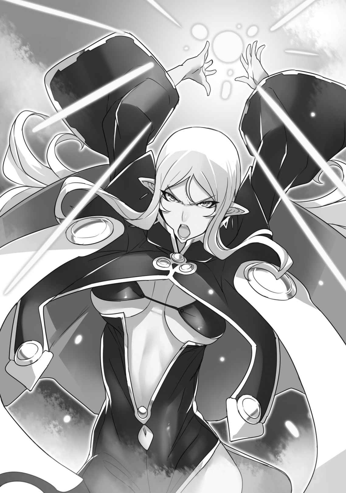
ああこれまた、大魔法がくるな。
俺は思わず、ギュッとオラクルを抱きしめた。
「カアラ・デモニア・デモニクスが全身全霊をもって願わん！ ああぁ、大いなる、おおぉ、大いなる蒼き水よぉ！ この裏切り者どもを、その大瀑布でもってこの地上から押し流せェェ！」
「この状況でよりにもよって、大洪水の魔法って......ないだろ！」
......カアラ、本当にお前、天才魔族とかじゃなくて、ただのバカだろ！
山にいきなり発生した大津波に、俺もオラクルもそのまま飲み込まれた。
ブクブクブクとか言ってる場合じゃない。山が激流に飲み込まれるほどの圧倒的な水量。オラクルを抱いた手だけは離さなかったが、その中で、押し流されているからごちんごちん木に当たって、滅茶苦茶痛い。
濁った水も、たくさん飲み込んでしまう。洪水ってのは洒落にならない。
死ぬほど苦しくて、死なないのが不思議なぐらい。
俺は、女神の加護（対魔法・対物理）とか『ミスリルの全身鎧』を着込んでたから、いろんなもんにぶち当たっても、なんとか痛いぐらいで済んだのだが。
それでも、水が引くまで何もできなかった。それは、俺達だけでなく巻き込まれた全ての敵味方一緒である。
そうだ、隘路の廃村にいた公国軍騎士団。
突如として発生した大洪水が怒涛のごとく流れこむ、山の谷間にいた騎士団はというと......。
重たいプレートメイルを着て、大洪水に押し流されたら、普通の人間はお陀仏です。
●
トランシュバニア公国の千騎もの騎士団は、スパイクの街を間近にしたモケ狭間で、勇者の手によって半壊し、命からがら敗走した。
これが、世に聞こえる『モケ狭間の戦い』である。
公国の騎士隊を指揮した、大将ゴットロープ伯爵、副将ヤーン騎士団長ともに戦死。
主戦派の主だった貴族でも、フレデリック子爵、ヘンドリック男爵、フェルトマイヤー男爵、メンノ準男爵......他、戦死者、負傷者は数えきれず。
公国の国境線まで逃げ帰った時には、騎士団の残存は二百騎を切っていたそうだ。
山での戦闘だったのに、戦死者の死因のほとんどが溺死という悲惨な戦闘であった。
戦争では戦力の五割を失うと全滅と言われるが、八割が失われるのはもう壊滅、いや消滅と言っていい。
公国軍の中心であり、最精鋭でもある公国騎士団を再編不可能なほど壊滅させてしまったトランシュバニア公国は、もはや侵攻作戦が不可能となった。
スパイクの街を先に落とし、後背の補給線を断った上で、ゆっくり落とそうとロレーンの街を包囲していたトランシュバニアの歩兵隊と、雇われた傭兵団も撤退を余儀なくされた。
敵の強襲に対し、痛恨のカウンターでノックアウト。
これほどの圧勝は、シレジエの戦史でも初めてのことだった。
「ちょっと勝ち過ぎてしまいましたね。公国軍の両輪、ゴットロープ伯爵とヤーン騎士団長の両方を一気に討ち取ってしまうとは、計算外でした」
首検分しながら、うちのライル先生が、なんか苦渋の顔で言っている。
勝ち過ぎてしまったとは、さすがにうちの先生は言うことが違う。
うちの銃士隊も大洪水で押し流されたが、幸いなことに配置していた位置が山の上のほうだったことと、鎧なんてトロ臭いものは着てなかったことで溺死者は少なかった。
マスケット銃や大砲も全部流されてしまったが、拾って直せばまた使えるようにもなる。味方の戦死者が少なかったことは、喜ぶべきだろう。
あと思わぬ副産物としては、戦場に残ったプレートメイルを大量に拾ってホクホクである。やはり、戦勝は喜ぶべきだよな。
鎧はそのままでは売り物にならないものも多かったが、上級騎士の鎧に使われている上等な鋼は、打ち直したって利益が出るシロモノだ。
ちなみに、シレジエが生んだ野生児ルイーズさんは、死んでいる馬を拾って焼いて食った。
戦場で落ち武者狩りをしている俺らですら、さすがにどうかと思ったが......。
「食わないのか、我が主？」
「そう言われたら食べるよ。馬肉、美味しいよね！」
溺死してる馬の肉か。それでも、食べられる部位を探して食べないともったいないよね。
相変わらず、ルイーズは現地補給の達人である。
死んだ騎士の鎧も馬も、スタッフが美味しくいただきましたってやつだな。これで戦争は終わりかな。
「残念ですが、ここまで勝ってしまうと、今度はこっちからトランシュバニア公国に攻め込めって、シレジエ王国内の主戦派貴族が騒ぎ出すと思います」
ルイーズが食べられる部位を切り取って焼いた馬肉を、上品にフォークで突き刺しながら、ライル先生が溜息まじりにそんなことを言う。
「えー、そうかそんなことになっちゃうのか。せっかく今度こそ戦争が終わると思ったのにまだ続くとは......」
なるほど、そういう内部政治をやらなきゃいけないのはライル先生なので、そりゃ苦渋の顔にもなる。
勝ち過ぎても厄介なんて、戦争は難しい。
「乾坤一擲の強襲作戦に失敗して、主力の近衛騎士団を崩壊させてしまったトランシュバニア公国軍はもはや死に体でしょう。しかし、公国軍を倒して喜んでる場合じゃないんですけどね。シレジエ王国の本当の敵は、公国の背後にいるユーラ大陸最大の強国、ゲルマニア帝国ですから」
「あー、あのドイツ風の帝国ですか」
シレジエ王国がフランス型だったのだから、ゲルマニア帝国と言えば、ドイツ型の国家なのだ。
「えっ、ドイツってなんです？」
「あっ、えーと俺の故郷にもゲルマニア帝国みたいな覇権国家がありまして、それに似てるなと」
あるいは、年代的に神聖ローマ帝国あたりかもしれないが、似たり寄ったりだろうね。
俺だって大学生だったのだ。理系でも、世界史は暗記するだけで高得点が取りやすい教科だったので一通り覚えている。
酷幻想と実際の歴史との相似から、地政学的にゲルマニア帝国がシレジエ王国を狙っているだろうことぐらいは察することもできる。
地図で見ただけでも、ゲルマニア帝国は広大な領土を持っているのがわかる。多数の領邦国家を属国として治める、いかにも強兵を有していそうな国だ。
俺の世界の地図で言うと、オランダとベルギーを合わせたぐらいのトランシュバニア公国を相手にするのとは訳が違う。
「ふうむ、タケル殿の故郷にね......。話を戻しますが、仮にトランシュバニア公国を征服できても、それで戦力の目減りしたシレジエ王国は、ゲルマニア帝国に攻められて喰われてしまうでしょう。まして、今は『魔素の瘴穴』事件やゲイルのクーデターで、ただでさえ国力が弱っている時です。状況からしても、侵略戦争なんてやってる場合じゃないんですよ」
「それでも、公国を攻めろって人がいるんですか？」
「ええ、ものの道理をわかってない人間は、いつの時代にもいるものなんですよ。攻めろって威勢よく言えば、自分の領地が増えると思ってる貴族がたくさんいます」
そのわからず屋が、反王女派の地方貴族ならばまだマシで、シルエット王女派の身内であったりするから、先生も苦労が多い。
「俺は戦争には反対ですからね。きっと姫様もそうでしょう」
「それは頼もしいですね。それならば勇者佐渡タケルの声明は、こんなもので宜しいですか、『勇者は侵略戦争には加担しない』ぐらいで？ それで、トランシュバニア公国に攻め込めと主張する主戦派貴族を抑えましょう。まずは、前線司令官であるロレーン領主のブリューニュ伯爵を説得しに行かないといけません」
「そうですね、そうしましょう！」
これ以上の戦争が止まるならなんだっていい。
トランシュバニア公国の騎士だって、同じ人間なのだ。
攻められたから倒したが、いくら戦争だからって人を殺していい気分がするものではない。
トランシュバニア公国との戦争を止めるために、シルエット姫様も危険を顧みず最前線まで行くとおっしゃっている。
俺達は、姫様を連れて公国と国境を接する街、ロレーンへと足を運んだ。
●
「これが、ロレーンの街か」
あのゾンビ辺境伯の居城があった大きな街で、一度モンスター襲来で全滅している。
さすがに街の傷跡は深いが、新しいロレーン伯爵領の領主となったブリューニュ伯爵は、ブラン家とかいう名門貴族で大金持ちだそうで、街を囲む分厚い防壁とロレーンの城だけは綺麗に修復されている。
「戦争が始まったにもかかわらず、街の賑わいもそこそこだ」
戻ってきた市民の数は少なく、兵士の数が多い。
あと活発に動いているのは商人だ。戦争となれば、貴族は財布の紐が緩くなる。
最前線の街で戦争が再開するとなれば、それをビジネスチャンスと捉える積極的な商人もいるのだ。
広場でキャラバンを張って、高い価格で回復ポーションやら武具や糧食を売っている武器商人達の眼はギラついていて、独特のきな臭い活気がある。
戦争が続いては困るが、同じ商人としては、せいぜいこの機会に商売に励めと言いたいとこだ。
「ブリューニュ伯爵がお会いになるそうです」
ロレーンの城まで行くと、無愛想なメイドが応対してくれた。
上がわからず屋の貴族だと、下働きのメイドまで高慢ちきになるらしい。
俺だけではなく、シルエット姫様まで来てると伝えたのに、玄関先にも来ないとは失礼な奴だ。
綺麗に補修された城の赤絨毯を進むと、綺麗に編みこまれた黒髪を長く垂らし、奥にピンと細く尖った黒い口髭を蓄えたおっさんが待っていた。
これが、シレジエ王国側の前線指揮官、ブリューニュ伯爵か。
漆黒の微細な装飾が施された、薄い金属を何枚も貼り付けた鎧。美的には大変素晴らしいが、実用性皆無の甲冑に身を包んで、腰にはまた金細工が施された装飾過剰な宝剣を差している。
策源地となる前線の城には場違いな、成金そのものって服装である。
本当に名門貴族なのだろうか。顔には男なのに化粧までしてるし、気品ある服装をしているのに、どこか貧相で胡散臭い。
あと、オシャレのつもりか何か知らないけど、室内で赤いベレー帽を被ってるんだ。存在がギャグ漫画みたいなおっさんだ。
立ち居振る舞いも、いちいち気取っている素振りが滑稽である。
「ようこそ勇者殿、シルエット王女殿下。麻呂は、ブリューニュ・ロレーン・ブランでおじゃる。こんな辺境の地まで、ご苦労なことでおじゃるのう。戦争の督戦にでも来ていただいたのでおじゃるか？」
「どうも、ブリューニュ伯爵......。俺は、督戦じゃなくて、戦争を止めに来たんですよ」
なんだ、おじゃるって......。ブリューニュ伯爵って、おじゃるキャラなのか？
前線に似つかわしくない変な格好してるし、確かに眉毛はちょっと麻呂っぽい。麻呂眉ってやつだ。
この国には、公家みたいなタイプはいないと思ったんだけど。
名門貴族の一部は、そうなのかもしれない。
ブリューニュ伯爵は、トランシュバニア公国との戦闘の前線司令官である。
第二兵団の指揮権と、旗下の騎士・兵士を多く有する名門貴族であり、主戦派の最筆頭と聞く。
この麻呂のくせに野心に満ちた戦争したがりなおじゃるを止めないことには、トランシュバニアとの戦争は阻止できない。
「麻呂に戦争を止めろとは、トランシュバニア公国の大騎士団を殲滅した、血塗られた英雄の言葉とも思えぬでおじゃるなあ」
「向こうから攻めてきたんだから撃退するしかなかったが、こっちから攻めるとなると話は違ってくる。今のシレジエ王国に外征を行なっているような余裕はないはずだ」
「ノホホホ、確か『勇者は侵略戦争には加担しない』でおじゃったか？ 勇者ともあろうお方が甘いことでおじゃる。いいでおじゃるか、名誉ある騎士の世界では、やられたらやり返さなければ、敵に舐められるだけでおじゃる！」
「このわからず屋め......」
騎士とか言うけど、お前はおじゃるじゃんと言いたいのをぐっと堪える。
国同士にも面子があって、やりたくない戦争でもやらなきゃいけない時があるのは俺だってわかっている。
でも、すでに敵の主力はあらかた叩けたのだ。主戦派だったゴットロープ伯爵も倒せた。戦争はあくまで、外交手段の一つに過ぎない。戦の趨勢が見えた今なら、シレジエ王国にとって優位な講和に持ち込めるはずだ。
そうとなれば、これ以上は無用の争いになる。
戦争の被害を最小限にするために、どっかで争いを止めないといけない。それが今だと言っている。
攻められたから攻め返すを繰り返していけば、相手も自分も死ぬまで永久に殺し合わないといけなくなる。戦争は必ずどこかで止めないといけないから、今がそのタイミングなのだ。
どっちの軍の騎士団や傭兵団も、補給するのにいちいち近隣の村を襲うみたいだし、これ以上争いを長引かせては、ブリューニュ伯爵の領民だって苦しむばかりだ。
そう俺がわからず屋への怒りを押し殺して熱心に理を説いてやっても、ブリューニュ伯爵はまったく聞く耳を持たない。
「ノハハハッ、臆病風に吹かれましたか勇者殿。ロレーン伯爵である麻呂は、前線指揮官として軍権を掌握した、いわば君主でおじゃるよ。その麻呂がトランシュバニア公国への大攻勢を断行するといっておるのでおじゃる」
「どうあっても、戦争を止めないのか」
「まったく話にならんでおじゃる。戦の応援に来たのでないなら、どうぞ邪魔になるので、どこぞの見えないところに下がっておじゃるがよろしかろう」
本当に話にならないよ、困ったもんだ。
深く溜息を吐く俺に代わって、ライル先生が進み出てブリューニュ伯爵に語りかけた。
「伯爵、もしかして黒ローブの魔術師に唆されて、攻める御決心をなされたのではないですか」
「ヌホッ？ どうして黒魔術師のことを、そなたが知っておじゃる......」
ライル先生は、伯爵の痛いところを突いてきた。
そうか、ブリューニュのほうにもカアラが取り入って、裏で糸を引いていたのか。全部アイツのせいじゃないか。どこまで、俺達に嫌がらせをすれば気が済むんだろ。
「その怪しげな黒魔術師は、人間に化けたカアラという魔族の女です。『魔素の瘴穴』を解放して、クーデターを起こしたゲイルも、その黒魔術師に唆されていたのですよ」
「なんと！ 麻呂も、ゲイルのように操られていると申すのでおじゃるか？」
さすがに、伯爵の顔色も悪くなった。
そりゃ、ゲイルみたいな売国奴と一緒と言われたら心外だろう。
そのまま黒魔術の甘言に乗れば、同じような運命が待っているかもしれないとも思うはずだ。
さすが先生、的確な説得の仕方である。
「そうです。トランシュバニア公国の近衛騎士団が攻めてきたのも、その魔族の策謀でした。どうせブリューニュ伯爵も、今攻めれば簡単に公国を手に入れられるとか、都合のいい話を持ちかけられたのでしょう。失礼ですが伯爵は、魔族の意のままに操られているのですよ」
「確かに、そのような黒魔術師が麻呂のところには来たでおじゃる。強力な魔術師の協力があれば、戦が上手くいくと考えたのも事実でおじゃる」
「でしたら」
「いや......今公国を攻めるのは、あくまで麻呂の意志でおじゃるよ。トランシュバニア公国は弱っているのでおじゃるよ。今この機会に、間髪容れず攻め滅ぼすべきでおじゃる！」
カアラに操られていると知って、一度は矛先を鈍らせたブリューニュ伯爵だが、冷静になってもまだ戦を止めないと言いはる。
魔族の陰謀だと教えてやっても、まだ強硬論を崩さない。どんだけ、戦争したいんだよ。
「ブリューニュ伯爵もご存知と思いますが、トランシュバニア公国にはゲルマニア帝国の後援がありますよ。仮に公国軍との戦で勝利して、敵の領地の奥深くまで攻め入ったところで、帝国の軍に後背を突かれては、伯爵もトランシュバニアの騎士団と同じ憂き目に遭いましょう」
「ぐぬっ......」
口では、麻呂でもライル先生に勝てないよなあ。
「ちょこざいな文官風情がぁ！ 黙って聞いておれば、恐れ多くも建国王レンス・シレジエ・アルバートに連なる高貴なブラン家が現当主、ロレーン伯爵ブリューニュ・ロレーン・ブランの命令に、何の故あってくちばしを入れるでおじゃるか！」
黙って聞いてなかったじゃねえか。
あーあ、口で言い負かされたから、家柄の強さで抑えこんでくる。門閥主義が蔓延るシレジエ王国の貴族社会では見飽きた光景である。
このブリューニュ伯爵も、どれほど名門貴族か知らないが、底が見えたというものだ。
「伯爵、今の私は摂政閣下の顧問官であり、現在は国務卿の地位にあります。王国の執政を任された私の言葉は、勇者と王女のご意思そのものであると思われよ」
ライル先生も、王国政府の重鎮と言えるほど偉くなっているのである。
こっちには、勇者である俺とシルエット姫様もいる。
威圧返しを食らって、ブリューニュ伯爵はぐうの音も出なくなった。
「ま、麻呂は......王国政府のニコラ宰相より、前線指揮官としての独立した軍権を与えられておじゃる。麻呂の軍を麻呂がどう動かそうと、誰に文句を言われる筋合いもおじゃらん！」
「そうですか、先のガイウス王が後継たるシルエット姫殿下と、王国摂政たる勇者佐渡タケルの反対を前にしても、そう言われるのですね？」
「そ、そうでおじゃる。悪いでおじゃるか！」
「悪くはありません。ですが......この戦にはブリューニュ伯爵の配下だけではなく、国境を守る国軍も参加しております。勝手に国軍まで動員して、万が一にも負けたらその時の責任は伯爵、全て貴方にありますよ」
「ぐぬぅ......」
「重々気をつけることですね。我らに対してそこまで大見得を切られたのですから、もし大敗でもしようものなら、その時の処分は覚悟しておかれるがよろしかろう」
さあ帰りますよと、ライル先生が俺達を促して、すぐさまブリューニュ伯爵の居城から退去した。
「先生、アイツをこのままにしておいていいんですか？」
「正直なところ、ブリューニュ伯爵の言い分も理がないわけではない。これだけ領内に攻め込まれて、まったく反撃しないのでは舐められるので、適度に攻め返すのは構いません」
「ええ、そうなんですか？」
いや先生、本気の説得でないならそうと言ってくれないと、麻呂相手に熱く反戦を語ってしまったじゃん。
「タケル殿はそれでよろしかったんです。あそこまで言われれば、向こうも後には引けなくなる。カアラの意のままに、全面戦争を仕掛けて大敗されては困るので、こうやって釘を刺しておくだけでここは十分でしょう」
「そうなんですか......」
先生は、相変わらず人が悪い。
「ブリューニュ伯爵が勝てば良し、負けない程度にほどよく小競り合いをすればそれも良し、もし愚かにも大敗しようものなら、それはそれで宰相派の重鎮を潰す機会と捉えたらいいですね」
「うわー」
先生、魔族の黒魔術師よりよっぽど黒い。
まあいいか。人間の国同士の戦争なんて、本当は関わりあいになりたくなかったし。
「ブリューニュ伯爵とカアラの関係がわかっただけでも、ロレーンの街まで来た甲斐がありました。あと一歩です、公国と王国の主戦派をリストアップして調べれば、いよいよあの上級魔術師の足取りを掴めることでしょう」
人間に化けた魔族というラインで地道に聴きこみを続け、人相書きを作って、シレジエ国内で大捜索を仕掛けるという。
そうやって、網の目を狭めていく。カアラもうかうかしてると、先生に尻尾を掴まれる。
まあ、戦争はやりたい奴が勝手にやってればいいさ。
俺達としては、国家間の戦争を影で煽っている、魔族の上級魔術師カアラをどうにかすることが先決でもある。
オルトレット子爵が巻き込まれたら可哀想だから、スパイクの街にせっせと物資を送って防衛を固めさせておこう。
俺は、トランシュバニアとの戦争が続く前線に背を向けて、自分の領地に帰ることにした。
●
俺達は、オックスの街に戻ってきた。
隣のスパイクの街に、復興用の物資として木材と石材を送り、硝石の大生産工場と化した『オラクル大洞穴』からは硝石が送られてくる。
民生品の流通もあり、ピストン輸送で街道も大いに賑わってきた。
その他、これはあんまりいいことばかりではないのだが、戦争による一時的な需要の急増もある。シャロン達も商会の仕事で大忙しだ。
「ご主人様、商売の拠点をエストの本店より、オックスの街に移すのもいいかもしれないですね。今はロレーン地方に向けて、武具や補給品の売上もかなりあります」
「そっちは、戦争特需で儲けてるみたいになって、あんまりいい気分しないけどね」
あのブリューニュ伯爵に戦力的な応援は絶対しない。でも、罪悪感で儲ける機会を逃すほど俺もバカではない。高値で売れるなら、ガンガン売る。
各地を回っていた俺だが、しばし自らの領地に腰を据えていた。スパイクの街の復興も援助しなくてはならないという理由もあるが、それや商売のためにオックスの街に滞在しているわけではない。
なぜ、俺がオックスの居城に駐留しているのかと言えば、ゾンビ男爵の遺産でもあるお風呂や大きなベッドがあって住み良いから......ではなく、『魔素の瘴穴』が近いからだ。
魔王復活を二度も阻止され、国家間の戦争を煽るという嫌がらせをした後、あのカアラが何をやるかといえば『魔素の瘴穴』の封印解放しかない。
結構、アイツもやることがワンパターンだから、もう手は見え透いている。
二度あることは三度あるということわざ通り、また絶対やるに違いない。
そして今一度カアラが、ゲイルの時のような事件を繰り返せば、その時こそ、あの女との最終決戦となるだろう。
そう、俺が考えたわけではなくライル先生が言ったので、俺はその予測を全面的に信じて待機しているわけだ。
カアラは俺達を恨んでいるはずなので、囮の役割も果たしている。俺がここにいるのも、カアラの動きを確実に捕捉するために先生が立てた策の一つである。
それに俺にくっついて離れない変態シスターが瘴穴の近くにいるのは、万が一の際の安全弁になる。
なんだかんだ言っても、勇者を得てランクアップし続けているリアは、『神聖錬金術』に特化した聖女という、封印作業にはこれ以上ない、最高の人材になっているのだ。
本来の『魔素の瘴穴』担当聖女であるローザ司教にも、カアラの策動が落ち着くまでオックスの街から『魔の山』にまで上がってもらって、臨戦態勢で防備してもらっている。
聖女の二段備えだ。
俺も山の上まで登って、ローザ司教にくれぐれもお願いしてきた。彼女は、いつもの清楚な白ローブのうえに、絹と金糸で彩られた豪奢な貫頭衣を羽織り、司教杖を携えている。
司教としての正装を纏うと、新人シスターのように若々しいローザ司教からも、高位聖職者としての威厳と力を感じる。『魔素の瘴穴』防衛担当の聖女として、戦闘態勢に入ってくれているのだ。
「ローザ司教、しばらくの間ですがお手数おかけします」
手を差し出されて、俺はローザ司教と握手する。
この人は、子供みたいな綺麗な肌をしてる。
「さもなしです。どうぞ、お気になさらないでください。これが私の本来の仕事ですのよ」
ローザ司教は、高位の聖女にもかかわらず偉ぶるところがない。自ら孤児達の学校の先生をしたりと、リアと違ってふざけることもなくお淑やかで良い人だ。
こういう奥ゆかしいシスターとコンビだったら、俺も楽だったんだけど。
「むしろ、リアとローザ司教を交換できたらいいんですけどね」
「やむなし、ですね......。勇者付きのシスターは勇者と離さないというのが、アーサマ教会の規則ですのよ」
「ハハッ、それは残念です」
「勇者認定資格を持っていても、自分の勇者を得られない聖女がほとんどですから、正直なところ私だってリアが羨ましいですのよ。教会の規則さえなければ......」
手を握りしめたままで、ローザ司教が紅玉のような瞳を潤ませて俺を見つめたので、思わず一歩下がった。
でも、掴んだ手が吸い付いて離れない。
「ととと......」
「あっ、すみません」
強く見つめられたままでにじり寄られると、一瞬だけリアが発しているプレッシャーと同質のものを感じた。やっぱり、お淑やかに見えるローザ司教でも、アーサマ教会のシスターは危ういのか。
これ以上、ホーリーストーカーが増えても困るので、くれぐれもよろしくとお願いしてから、慌てて手を離して早々に瘴穴を退出した。
高位のシスターは、勇者に飢えているような印象も受ける。リアには教会に行くようにと頻繁に誘われているが、よっぽどのことがない限り行きたくない。
ダンジョン攻略も済んで強装備も手に入ったことだし、当面の目標は達成できたと思う。カアラとの激しい戦闘に備えて、ここはしばらく英気を養うとしよう。
「うまいのう！ うまいのう！」
ダンジョンから連れ帰ってきたオラクルちゃんは、よっぽどろくな物を食べたことがないらしい。
うちの料理長のコレットが作った料理を、なんでも大量に食べる。
「いい食べっぷりだな、クレープのおかわりもいいぞ！」
「えっ、おかわりもいいのか？」
「遠慮するな、これまでの分も食え......」
「うめ、うめ」
オラクルに、これがおかわりする作法だと教えたりして、のんきに遊びつつ、オックスの街でカアラを待ち構えていたわけだが、そこに王都から、とんでもない知らせが届いた。
「タケル殿。落ち着いて聞いてください、王都で、カアラが捕縛されたとの知らせです」
「なんでいっつも、そんなに肩透かし感満載なんですかね」
さあ来いと待ってれば、劇的とは程遠い結末。
隠形の上級魔術師をライバル視して策を張り巡らせていたライル先生も、俺もビックリだよ。
これまでやらかしてきたカアラの狡猾さ、悪行を考えるとありえないと思える。
カアラも、なに普通に捕らわれてるんだよ。いや......これも罠か。捕らわれた振りという、罠かもしれない？
まだわからない、これがカアラの卑劣な罠で、そこに嵌められた俺達とのラストバトルが始まる可能性もまだある。
よし、俺は騙されないぞ。このあっけない結末が、長い間引っ張り続けた、隠形の上級魔術師との決着ってことはない。
王都とオックスの街は、目と鼻の先だ。
俺達は半信半疑の気分で、王都に急いで向かった。
●
「確かに、捕らわれてますね。誤報だと疑ってたんですが、実物を見てしまうと」
憎き魔族の上級魔術師を捕らえられて嬉しいはずのライル先生は、むしろ落胆していた。
「そうですね......」
無事に終わって良かったとは思うんだが、満を持して待ち構えていただけに、肩透かし感は否めない。
ともかく、王都の魔法力を制限する『抵呪の間』に、カアラは囚われていた。
強い力を持ち半ば特権階級と化している魔術師でも、国の禁を犯すこともある。
その場合、強力な魔術師を安全に拘束するために、このような独房が設けられているのだ。
カアラは魔族で上級魔術師でもある大物。魔術師にとっては、窒息しそうなほど魔素が希薄に薄められた『抵呪の間』にあっても、まだ抵抗しようとする。
その強大な魔力を完全に抑えこむために、先生と同じ中級レベルの魔術師が何人も常駐して、不眠不休でディスペルマジックを唱え続けている。
いざとなれば、王城にはカアラと同ランクの上級魔術師であるニコラ宰相もいる。
その上で、部屋の周りでは騎士や兵士が防備を固めて逃亡を防いでいるので、ようやくカアラは諦めて大人しくなった。
ライル先生の策を使うまでもなく、カアラを見事捕らえたニコラ宰相は大得意であった。
「ライル、お前が私を悪しざまに罵り、老害として悪者にした噂を流していることが、役にたったな」
そう皮肉めいた口調で、茶色の長い髭面に悲愴な笑いを浮かべてるニコラ・ラエルティオス。
シレジエ王国政府の宰相であり、ライル先生の実の父親だ。
「そのようですね、お父上」
ライル先生は、隠形の上級魔術師をライバル視していた感がある。
そのカアラが、よりにもよって憎んでいる自分の父親のお手柄で、捕らわれてしまった。
しかも、自分がニコラ宰相を老害扱いして、若手官僚から白眼視されるように仕組んだ策を取ったがゆえの結果であった。
それが、かなり気に食わない様子で、ライル先生は珍しくブスッとしていた。親が絡むと、感情的になってしまうのは先生も人の子ということか。先生だってなんでもできるわけではないので、思い通りに策が進まないことも稀にある。
ちなみにカアラは、ニコラ宰相を王城で孤立した実力者と見て「勇者とシルエット姫を殺して、国の実権を手に入れる」よう勧めて、その陰謀を受け入れる振りをした宰相の罠にハマり捕らわれたそうだ。
さすが、ライル先生の父親だけのことはある。魔族の甘言にも騙されない鮮やかな手腕といえた。
今は、ライル先生率いる若手改革官僚の派閥に圧されがちなニコラ宰相だが、老いたとはいえシレジエ王国一の大博士であることに違いはない。
ニコラ宰相は、俺とシルエット姫様の前に跪き、恭しく述べる。
「勇者タケル様、私は確かにこの不肖の息子が言うように老害かもしれません。しかし、国を思う気持ちを片時も忘れたことはありません。それが、この邪悪なる魔族を捕らえることで証明できたことを嬉しく思います」
ニコラ宰相は、そう言って、ククッとより一層皮肉な笑いを深めた。
やっぱり親子だな。
俺はどうしても先生の側の肩を持ってしまうが、対立している父親もそこまで悪い人ではないということか。
「さて、どうしたもんかなこれ......、おい、カアラ！」
声をかけてやっても『抵呪の間』の真中の椅子に座って、黒いフードを目深に被ってジッと座っているカアラは、何も言わない。
これ本当に、本物なんだろうな。ルパンみたいに、偽者に入れ替わってるとかない？
この前あった時は、激情の赴くままに無茶な攻撃仕掛けてきたのに、こっちに怒鳴り散らすとか、逆に命乞いするとか、「くっ......殺せ」とかも、何もないのか。
悪辣な黒魔術師が、捕らえられてしおらしくなった様を見ると、なんか拍子抜けしてしまう。
「タケル殿、言う必要もないかと思いますが、すぐに殺すべきです」
ライル先生はそう勧める。
でも、ニコラ宰相が生かして捕らえたのには、訳があるのではないかな。
「いや、この魔族。ディスペルマジックで魔法を抑えこんだものの、体術もなかなかのものでして、騎士が囲んで倒そうとしても怪我人が増えるだけでしたので、勇者様の到着を待った次第です。どうせでしたら、是非とも直々に勇者の剣で天誅を下していただければ幸いかと」
宰相は、そんなことを言う。
えー、みんな「殺せ！」って流れか。
でも俺もなあ、いくら魔族で陰謀家の大罪人でも、無抵抗な女性を殺すのはキツイよ。
「考えても見てください......いえ、これは考えるまでもない。カアラが行った『魔素の瘴穴』解放、戦争やクーデターの煽動で死んだ人間は、全部合わせれば一万人をくだらないでしょう。増して相手は魔族ですし、殺しても飽きたらぬほどの仇敵です」
ライル先生は、俺の決心を促すように、大事なことなので「殺せ」と、二度言いました。
さて、同じ魔族のオラクルちゃんにも意見を聞いてみるか。
「タケル。カアラを殺さずに、隷属させる方法ならあるぞ」
「えっ、あるの。そういう都合のいい方法？」
さすが、オラクルちゃん！
「うむ、『魔王呪隷契約』というものがある。かの古の魔王が、どうしようもない部下に言うことを聞かすために創った呪法なのじゃが、お互いの同意のもとにきちんとした約定を交わして、相手の額に呪隷紋を入れれば良い」
「俺は魔王じゃないのに使えるのか」
「魔王か魔王じゃないかなんて、約定に関係ないのじゃ。呪隷契約に大事なのは、お互いの同意があるかどうかだけじゃ」
いっつも思うんだが、この世界の魔法って意外とアバウトだよな。便利だからいいけどさ。
「ちなみに、その契約を破るとどうなるの？」
「契約を破ったら、四肢が木っ端微塵になって死ぬのう。その瞬間に首も、スポン！ と小気味良い音を立てて飛ぶそうじゃ」
「なんか、グロいなそれ」
「これは本人の頭が約定違反を認識した段階でそうなるから、絶対に誤魔化せないのじゃ。かなり強烈な契約ではある」
「うーん。おい、カアラどうする？ 今すぐ死ぬか、俺に隷属して生き延びるか」
正直なところ、カアラは死を選ぶと思っていた。
これは、要するにそれ以外の選択肢を提示して、俺の罪悪感を和らげるための措置だ。俺だって残酷な世界に生きる人間。
大罪人の女の処刑ぐらい覚悟はしている。でも、できればしたくない気持ちが強い。
この前まで我を忘れるほど、オラクルの裏切りを怒っていたカアラだ。よりにもよって、勇者の俺に隷属するなんて、ありえないと思っていたのだが。
「勇者佐渡タケル、貴方に隷属します」
あっけなく、そう言った。
あれ？
●
「タケル殿、何度でもいいますが、今すぐ殺すべきです」
先生はそう促す。だいたいのシレジエ王国の人はそういうだろう。
なにせカアラは邪悪な魔族であり、『魔素の瘴穴』封印を開いた張本人なのだ。
いくら憎んでも飽きたらぬ、人族の仇敵といえる。
ただ不謹慎な先生の場合、単に自分より格上の魔術師が気に入らないだけじゃないか疑惑が少し。
いや、そんなことはないだろうけど。
「先生、本当に隷属するなら、カアラは戦争を止めるのに使えますよ」
「正気ですか。たまに私の想像を絶する選択をしますよね、タケル殿は。相手は魔族ですよ、誰に聞いてもここは殺すべきだと言いますよ」
そう言うから、生かして活かすしかないと思ってしまうのだ。俺はあまのじゃくなところがある。
それに先生の選択だって、俺はわりと引く時あるよ。使える者は使う。先生だってそうしてきたはずだ。
「ライル先生、それこそよく考えてくださいよ。カアラは最上級魔術が使えて、しかもシレジエ王国だけでなく、トランシュバニア内部にも人脈がある。おそらく他の国にもあるに違いない。便利な道具と考えれば、どうですか？」
「そう言われると、理屈では確かにそうですが、心情的にはとても納得行きませんね」
カアラは道具としては、かなり利便性が高い。
規模は違うが、元犯罪者を更生させて防犯に使うのと、理屈は変わらないはずだ。
「オラクルちゃんも配下に置いてるんだから、魔族だから殺すってこともない。ここで殺すよりも、憎んでいるだろう俺に隷属させるほうが、罰になるんじゃないですかね」
「絶対に承服しかねますが、タケル殿の判断がそうであるのならもう諦めましょう。毎度のことです」
「すみません」
「でも、くれぐれも扱いには注意してください。魔族カアラの甘言で、ゲイルもゴットロープも破滅したんですよ。道具として使い終わったら、処分することを強く勧めます」
不満気な顔で、ライル先生は、渋々と引き下がった。
これ、もしかして借りになっちゃうかな。
先生に借りを作ると怖い、無理やりどっかの姫様と政略結婚させられそうで。
そこに、オラクルちゃんが口を挟む。
「話は決まったようじゃから、『魔王呪隷契約』の方法を教えるが、どのような契約にするかは決まったのか？」
「うん、それなら、もう思いついてるよ」
俺とカアラの『魔王呪隷契約』は三箇条だ。
第一条、カアラは、佐渡タケルの意に服従しなければならない。佐渡タケルの命令は絶対遵守すること。
第二条 カアラは、直接的および間接的に、人間に危害を加えてはならない。また、人間への危害を看過することによって、人間に危害を及ぼしてはならない。ただし、第一条に反する場合は、この限りではない。
第三条、第一条および第二条に反する恐れのない限り、自分を守らなければならない。
カアラを軍事的に使うこともあるので、第一条と第二条をあえて逆転させておいた。
勝手に人を殺されては困るが、場合によっては人を生かすために、殺さないといけないこともある。
「その条件でいいのね、わかったわ」
やけに大人しいカアラは、黒いフードを外すと俺に、初めてしっかりと素顔を見せた。
オラクルちゃんと同じ青い肌が、魔族の特徴か。細い眉に、瞳は紫色。髪は淡い金髪をしている。
目鼻立ちは整っていて、普通に美人だ。淡いピンク色の唇が微笑んでいる。
魔族だから本当のところはわからないが、まだ二十を越えているようにも見えない、こんな若い女だったとは。
「言っとくけど三百歳のオラクルと違って、アタシは見た目通りまだ十九歳よ」
まだそんなに若いのか。天才的な能力を有する者の宿業なのかもしれないが、カアラも生き急ぎ過ぎたな。だから失敗したのだ。
「じゃあカアラ、呪隷紋を入れるぞ」
「はい、うっ......」
頭に紋を入れる時に痛みが走ったのか、カアラは形の良い眉根を顰ませた。
呪隷紋は、十字の形をしている。
この世界には、キリスト教はないので、十字はまさに相手を縛る磔刑を意味しているわけだ。
約定を違えた瞬間、カアラは四肢が木っ端微塵になって死ぬ。
「ところでカアラ、なんで大人しく俺に隷属した」
「隷属させた張本人がそれを言うの？」
オラクルちゃんが言い出した契約なので、カアラが逆にこっちを罠に嵌めようとしているとは考えにくいけど。
あまりにもあっけない降伏だったので、気になって仕方がない。
「俺を恨んでたんじゃないのか？」
「勇者、佐渡タケル。それは自意識過剰ってものよ。アタシは最初から、貴方には怒ってないわよ」
「ふうん......」
自意識過剰呼ばわりとか、地味にダメージ入るんだが。
「アタシが我を忘れるほどに怒ったのは、魔族を裏切ったオラクルに対してよ。貴方は人族の勇者として、魔族のアタシが画策した魔王復活を阻止しただけなんだから、そのことについて敵意はあっても、遺恨はない。負けたアタシが悪いだけ」
「生き残るために、敵意がある俺にも隷属してみせるということかな？」
「そうよ。ここに囚われて、久しぶりにじっくりこれまでの自分が講じてきた策を振り返ってみたけど、アタシは愚かだった。そこにいる人間の魔術師達の頭脳と、勇者である貴方の力に完敗したことは認める」
「まあ、後半グダグダだったもんな」
天才レベルの魔術を持つカアラに、ライル先生並みの頭脳があれば、魔王復活なんてもうとっくにやってるぞ。
おそらくその時は人族は、絶滅の危機に瀕してたことだろう。
「つまりね、アタシは反省したのよ。こう見えても、切り替えは早いほうだもの。生き延びられるなら、泥を啜っても生き延びたい......」
俺に従っても、泥を啜ったりはしなくていいけどね。
「まだ魔王復活は諦めてないのか？」
「フフッ、そうね。貴方の質問に嘘は付けないから、諦めてないって言うわ」
「まあそうじゃないと、策謀家になんかならないか」
本当にしつこいのだ。ライル先生もそうだけど、どんだけ謀を考えまくってるんだよって感じだ。
「生きてさえいれば、学び直すこともできる。いつか、伝説の魔王が蘇り、魔族が復権する時代を迎えられるかもしれない。感情的になり過ぎて選択肢を誤った、間抜けなアタシにもう一度生きるチャンスをくれたことにだけは、感謝するわ」
魔族は、寿命が人間より長そうだから。
俺が死ぬぐらいまでは待てるってことなのかな。
「まあ、俺が死んだ後のことなんかはどうでもいいや。とにかく、感謝なんて言ってられないほど、こき使うつもりだからよろしくな。過重労働で、すぐ死んじゃうかもしれないぞ」
「それはお手柔らかに、お願いします......」
カアラの態度が殊勝過ぎて、罠じゃないかと未だに疑わしいが。
ともかくこうして、隠形の上級魔術師、魔族のカアラは俺の隷属下に入った。
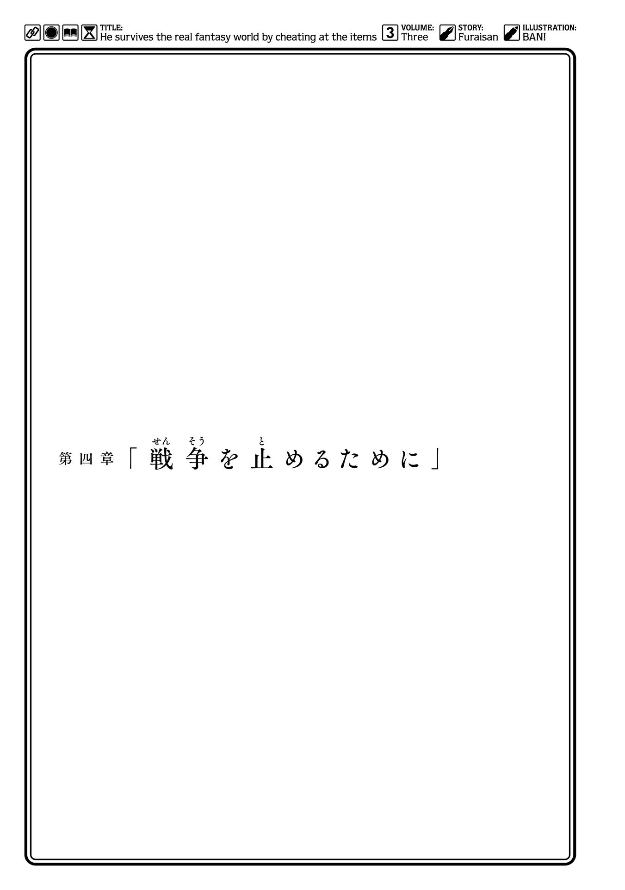
俺達は隷属したカアラを連れて、要塞の街オックスに帰ってきた。
王都に一度戻ったのに、シルエット姫様はジルさんを連れて、なんにも言わずそのまま俺に付いてくる。
俺がシルエット姫様を連れ回してるのを、ニコラ宰相以下、王家の家臣達も何も言わなかった。
完全に任されているというのも、責任重大で困るね。
今回は、ライル先生のお父さんであるニコラ宰相が、有能な上にそれほど悪くない人物であると知れただけでも、良かったかもしれない。
先生の父親だから、何を企んでるかはわかったもんじゃないが。
「どうしたんですかタケル殿、私の顔に何か付いてますか？」
「いえいえ、いつも通り先生は、美しい顔ですよ」
「タケル殿、私はできましたら外側より、頭の中の方を褒めてもらったほうが嬉しいですよ」
苦笑いを浮かべて、複雑そうな顔をした先生は、頬を少し赤く染めつつ俯いた。
ライル先生は、なかなか俺にデレない。今回のカアラへの処遇で、好感度が少し下がっただろうし。
オックスの居城に戻ると、カアラの扱いをどうするか悩んだ。
魔族を他の人間と同室にさせるわけにもいかないし、部屋はまだ余ってるから個室を使わせることにしようか。
「カアラ、とりあえずメイドとして、城のお掃除でもやってなさい」
メイド服も余ってるから。あっ、でも奴隷少女用しかないのでサイズが合わないか。
「はい、ご主人様。そんな命令しか思いつかないのね」
ありゃ、わりと反抗的だな。
もちろん命令拒否は許されないので、反抗的なのは口調だけでお掃除を開始する。
「そうだ、掃除道具いるか？」
「魔法で掃除できるわ」
便利なもので、カアラは風の魔法を器用に使って、掃き掃除を始めた。
しかも、この程度ならと無詠唱。さすが上級魔術師だな。
ところで、いつまでと期限を切らず「掃除しろ」って言ったら、もしかして永久にやってるんだろうか。
呪隷契約、そうだとすれば恐ろしい呪いだ。「一通り済んだと自分で判断したら、休んでいい」とは言っておく。
「うーむ、綺麗だ」
あとで見に行ったら、石造りのお城なのに床は塵一つなくピカピカ、古くなってくすんだカーペットまで、新品同然になっていた。
どのぐらいやるかは本人の判断に任せたので、カアラは口先は反抗的だが、根は真面目というタイプだとわかる。
「どう、アタシは。オラクルなんかより役に立つでしょう。できれば、身体じゃなくて頭の方を使って欲しいですけどね」
「ふむ、頭なあ......。まあ考えておく」
「それで、次は何をすればよろしいですか。聡明なるご主人様？」
「皮肉か......。とりあえず今日は自由時間にしておく。けど、悪さはするなよ。食事はオラクルと一緒で、人間と同じ物を食べるんだろ。きちんと出すように言っておくから、腹が減ったら食堂に行け」
人に危害は加えられないとはいえ、あまり信用できない相手だ。
それに、頭と言っても、カアラの策謀を見てるとライル先生に比べれば、二歩も三歩も劣るって感じだぞ。
魔術師軍師は間に合ってるし、カアラの有効な使い道は、俺だってちゃんと考えてある。
まず、本当に従属しているのか確かめたかっただけので、今日の自由行動を見て、本格始動は明日にすることにした。
一日の疲れを癒すといえば風呂だ。俺は、今日こそ一人でゆっくりと入ろうとオックスの居城の風呂場に行く。
脱衣所で服を脱ぐ時も、風呂場に入っても、よくぞここまでと感心するほど隅々までピカピカになっていた。
カアラの掃除である。魔法でやったにしても、ここまで徹底してやれとは命じていない。カアラは、加減を知らないというか、わりと神経質なのかもしれない。
ざぶんとかけ湯して、湯船に入れば今日も一日終わったなと思う。
「ふいー、人を使うのは気疲れするものだな」
カアラという駒を、俺が上手く使えるかどうかにこの国の命運が懸かっている。
明日は大勝負を仕掛けるつもりなので、十分に休養を取っておかないといけない。そう決意を新たにしたところで、脱衣所からカアラが平然と入ってきた。
なぜか、ビキニみたいな黒い水着を着用している。
「お前どうやって入ったんだよ。見張りがいたはずだろう？」
俺がゆっくり風呂に入れるように、脱衣所の前でシュザンヌとクローディアが二人一組でガードしているのだ。
風呂場の外では、風呂焚きのロールが眼を光らせているので、リアなどの侵入は防がれるはずであった。
「アタシを誰だと思ってるのよ。隠形の魔術師カアラ様よ。見張りなんてないも同じだわ」
「そうか、それで何の用だ......」
魔族の侵入を許したと知ったら、シュザンヌ達が落ち込んじゃうし、もう追及しないことにした。
「今日はもう自由行動なんでしょう。だからアタシの意志で来たのよ」
自由行動なあ。
「もしかして、お前も風呂に入りたいとか？」
「うん、そうよ。勇者......いえ、タケルと一緒にお風呂に入りたいと思ったの」
「なんだ、気持ち悪いな」
ついさっきまで反抗的だったのに、なんで急に距離を縮めてきた。
「あら他意はないわよ。私がタケルに嘘を付けないのは、知ってるでしょう？」
額の呪隷紋で縛られているから、俺が尋ねたら嘘はつけないんだよな。
「じゃあ、もう一度聞くけど本当は何が目的だよ」
それを言うと、ペロッと舌を出した。魔族も舌は普通に赤い。そのまま唇を舐める舌先を見ていたら、なんかゾクッとくる。
「そう聞かれちゃ、しょうがないわね......フフッ、色仕掛けに来たの」
そうか、この妖艶な雰囲気は色仕掛けのつもりか。カアラは、胸に着けていたビキニをペロンと外して、食い込みの鋭いショートパンツも外した。
お前らは、あっけなく裸になるけど、ありがたみがない。色仕掛けのつもりならもっと焦らせばいいのに。
「本当に、なんのつもりなんだよ」
カアラが、俺に色仕掛けをしてくる意図がよくわからない。
「だから、色仕掛けよ。私はタケルって呼ぶから、タケルもカアラって呼んでいいわよ」
「いや、俺はもうカアラって呼んでるだろ！」
「じゃあ、カアちゃんでもいいわよ」
アホか、お前は俺の母ちゃんじゃないだろう。ああ、あだ名ってことか。あだ名でも酷い。
服を脱いだカアラは、ざぶんと湯船に入ってきた。服を脱いで風呂に浸かるのは正しい作法を理解していると褒めてやりたいが、裸で迫られてはさすがに困る。
「カアラ、命令だ。それ以上近づいてくるなよ！」
俺は慌てて、浴槽の奥に逃げる。
「えー、なんでよ。アタシって人間にとっては魅力的じゃない。魔族だからダメってこと？」
他の人族の男はスケベそうな眼で睨めまわして来たのに、自信を失うとか勝手なことをブツブツ言ってる。
「他の男は知らんが、俺はそういうの間に合ってるんだよ」
正直な感想を言えば、カアラの裸体は美しいとは思う。青い肌はエキゾチックで悪くないし、大きく盛り上がった胸と形の良いお尻のラインは、官能的な雰囲気を撒き散らしている。
だが、俺を誰だと思っている。右腕に爆乳シスター、左腕に犬耳美少女を抱えても、誘惑に負けない佐渡タケルだぞ。
ちょっと美人で蠱惑的な小悪魔だからといって、簡単に落とせると思ってもらっちゃ困る。
こっちは、シチュエーションにもかなりこだわりがあるのだ。
そういう冗談はさておき、カアラが色仕掛けを企んでいるとは思いもよらなかった。主人である俺を性的に籠絡して、言いなりにさせようという腹であろうか。呪隷紋で縛っておいて、本当に良かった。
まったく、俺は風呂にもゆっくり一人で入れない呪いにでも掛かってるのかな。
今度お祓いしてもらおうかな。いや、お祓いしてもらうって、この世界だとリアが相手だろ。冗談じゃないな。
「うー、お願いだから背中ぐらい流させてよ。これじゃ、色仕掛けできないじゃない」
「だから、間に合ってるって言ってるだろ！」
カアラは、等間隔で湯船の中で泳いで俺を追いかけてくる。
大丈夫だってわかってても、なんか心臓に悪いよ。
その時、浴槽のほうから「ダメです！」「入っちゃダメです！」とシュザンヌとクローディアの声が聞こえた。
なんだ、リアにでも防衛を突破されたのかと思ったら。
「ご領主様、お困りのようですね！」
やってきたのは、しっかりと白い湯着に着替えたリディアーヌであった。
なんかリディはパワーアップしているらしく、首にシュザンヌが、腰にクローディアが巻き付いていても全然平気っぽかった。
ちなみに湯着姿なのは、リディは女の子が好きなので、男の俺に肌を見せる趣味はさらさらないからである。
でも、その湯着お湯に透けるから、なんとかしたほうがいいと思うぞ。
「リディは、何しに来たんだよ」
「湯気にけぶる女の子の甘い匂いと、色仕掛けという声に引かれ万難を排して推参いたしました」
「いや、あの......見ての通り魔族の女の子だけど、リディ的にはありなのか？」
「ありですね。青い肌、白い雲......美味しそうです」
確かに魔族は青い肌だけど、白い雲は関係ないと思う。
む、そうか！
このお風呂場のシーンにありがちな、なぜか絶妙な配置で漂って、胸の真ん中とか股間だけを隠している、謎の湯気のことを白い雲と表現しているのだな。
なるほど、深い。
感心している俺を他所にリディは、胸とお尻をブルンと揺すって取り付いているシュザンヌとクローディアを吹き飛ばすと、湯船にダイブして、カアラに飛びついた。
「ちょっと、なんなのこの人、なんでアタシの隠形の魔法が通じなかったの？」
「なんなのこの人と聞かれたら、アンバザック男爵領の影の支配者リディアーヌ・ビューロクラートと答えましょう。この男爵領の半分は、私の取り分です。カアラさんがご領主様の奴隷なら、私の奴隷でもあると言えましょう。さあ、夜の徴税を開始しますよ」
そう言いながらカアラを撫で擦るリディは、どうしようもない変態だった。
オックスの居城にシルエット姫様や護衛騎士のジルさんがいるのに、俺がリディに厳重にセクハラを禁じたため、かなりフラストレーションが溜まっていたようだ。
それが解放された。こうなると、もうどうにも止まらない。
「きゃぁあああ、いきなりなんてとこ触ってるのよ！」
「おお、なんたること！ 魔族の女の子も、おっぱいやお尻は、柔らかいのですね。では股ぐらは、ほほう......これは、未知への探究心がムクムクと鎌首をもたげます」
オックスの居城にカアラを連れてきた時、凶悪な魔族が来たというので、メイドも奴隸少女も恐ろしがって近づいて来なかったのに、リディはまったく平気らしい。
「なんで私が、人間ごときに......いやぁああ」
「ふくく......人間ごときに感じさせられるのは屈辱ですか。しかし、その恥辱もやがては甘美な快楽へと変わるでしょう。さあ、いらっしゃい子猫ちゃん。恐れることはありません、ゆっくりと優しく楽園の門を開いてあげますね」
やれやれ、俺は盛り上がっている二人を無視して、湯船から上がって身体を洗うことにした。
リディに吹き飛ばされて、床にへたり込んでいたシュザンヌと、クローディアが俺のところにくる。
「ご主人様、あれは止めなくていいんですか？」
青い顔をしたシュザンヌは、風呂場で繰り広げられているリディの楽園とやらを眺めて、恐る恐る尋ねてくる。
「えっ......ああ、あれは放っといていいだろ。邪悪な魔族が、もっと邪悪な代官に成敗されているだけだ。カアラには罰がいるし、たまにはリディにもガス抜きが必要だろうから、ちょうど良かった。カアラは人間には危害を加えられないようになってるから問題ない」
「ちょっとタケル助けてよ！ 問題ないって、アタシはどうなるのよ！」
そもそも、完全に理性を失ってしまったリディは、俺達では止めようと思っても止まらない。カアラは魔族だから、身体も丈夫だろうし、きっと大丈夫だろ。
なんか、後ろの方から「嘘、冗談でしょぉおお、人間ってこんなことすんの？ そんなの無理よ！ 無理って言ってんのに、いやぁぁだああー！」など、カアラの切迫した悲鳴が聞こえてくるが、全て聞こえなかったことにした。
全てから解き放たれたリディは恐ろしい。
「そうだ、お前らもたまには、髪を洗ってやろうか？」
「えっ、でも......」「私達は、ご主人様の護衛任務が」
リディにあんな目に遭わされても、まだ護衛を続行しようとする二人の真面目さは偉いけど、それこそたまには休まないと。
「もういいんだよ。こんな阿鼻叫喚が上がってる風呂場に誰も近づいてこないだろうし、もう見張ってなくても平気だろ。せっかくカアラの件も一段落ついたんだ。こんな機会でもないと、護衛役のお前らは労ってやれないからな」
「じゃあ......」「お願いします」
子供二人の髪を洗うぐらいお安い御用だ。
俺は、脱衣所で服を脱いで来た二人にかけ湯して髪をゆっくり洗ってやると、シュザンヌとクローディアを風呂に浸けてやった。
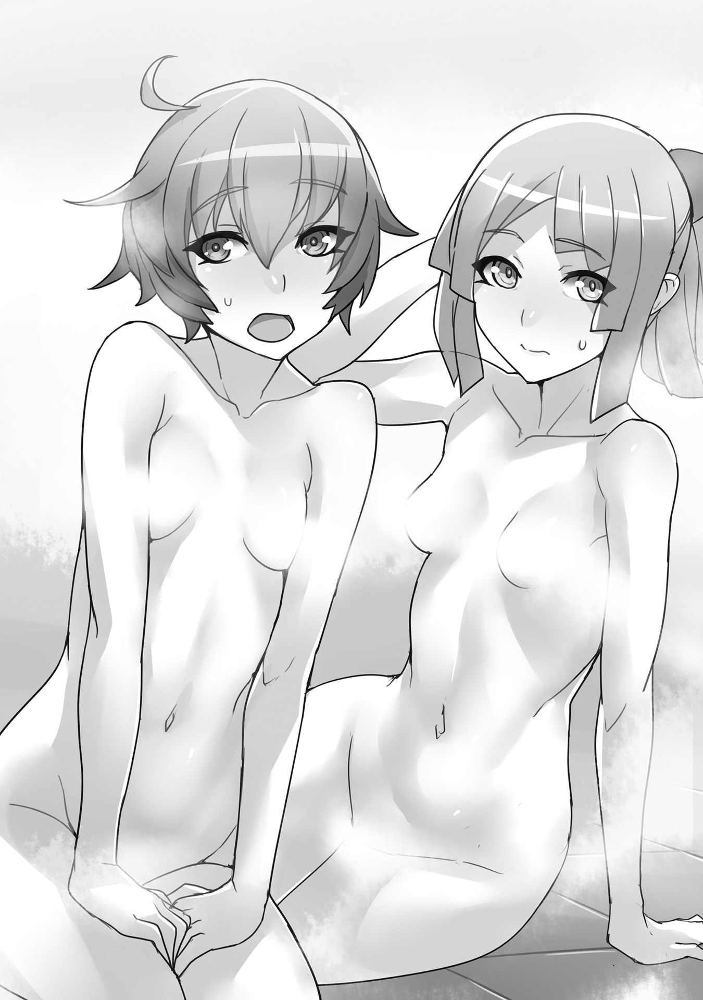
その間も、ものすごい嬌声が風呂場に響いていたりしたが全力でスルーする。浴槽の向こう側から激しい水音と獣のような叫びが上がる度、二人が頬を上気させて肩を震わせていたのはちょっと可哀想だったが、俺は全て聞こえなかったことにした。
こんな機会でもないと、ゆっくり風呂は楽しめないからだ。
そうだ、ロールはどうかなと思って風呂場の窓から外を覗くと、風呂焚き番がいつの間にか消えていた。
風呂は適温だから職場放棄ではないのだが、風呂嫌いのロールは風呂に浸けようとする俺の気配を察して、逃げるようになってきたな。
●
夜、オラクルとシャロンが待ってるベッドに入ろうとすると、ふらつきながらカアラがやってきた。内股を擦りながら、生まれたての子鹿のような拙い足取りである。
「なんだ、お前......辛いのならもう大人しく寝てろよ」
さっき、風呂場でリディに散々襲われたことで、さすがに懲りたと思ったらまだくるのか。
「さっきは、してやられましたけどね......。アタシだってタケルを誘惑しないと、未来がないですもん」
挑発的に黒ローブを脱ぎ、下に落とすカアラ。リディに責め抜かれたせいか、さっきよりも血色が良く肌ツヤが増している。こいつ、本当に懲りない。
カアラのプロポーションが良いのはもうわかった。けど、綺麗なだけの女なら俺の周りにいくらでもいるんだよ。
俺が周りにいる美姫や美少女に手を出してない時点で、色仕掛けとか無理だと気づけばいいのに。
しかしなんなんだその、ビキニみたいな黒い下着。
魔族の標準装備なのか？
その下着の素材が何なのかのほうが、俺は気になるぐらいである。
「もう諦めろよカアラ」
「なんで襲いかかって来ないのよ。アタシって、そこまで女としての魅力がないの？ そんなスルーのされかたしたら、プライドが傷つくんだけど。少なくとも、そこに寝てるチンチクリンよりは、夜の相手として相応しいはずよ」
カアラは断られた腹いせ混じりに、俺のベッドで寝ているオラクルに喧嘩を売ってしまった。
「なんじゃと、カアラ。チンチクリンとは、誰のことじゃ！」
「あら、アタシは事実を口にしたまで、ですけどね」
そうカアラは言いながら、今度は別の意味で挑発的に、俺のベッドにごろ寝していたオラクルちゃんを見下ろす。
チンチクリンといえば、まあチンチクリンではあるが。
不死少女オラクルちゃんのデザインは、そこを可愛い長所として創られたんだと思うけどな。
「戦争じゃよな。不死少女相手に胸のことを言ったら、それはもう戦争じゃよな！」
戦争は、人間同士だけでもうたくさんだから止めてくれ。
カアラも、魔族は人族と違って仲違いしない優良種じゃなかったのかよ。お前ら、普通に争いまくりじゃねえか。
「あらーアタシは、背のことを言ったんだけど、胸がチンチクリンなのも気にしてたのねえ。ごめんなさい」
呪隷紋で縛られているカアラだが、相手が人間でなければ、喧嘩しても平気なのか。
また俺が止めなきゃいけないのか。ご主人様の安眠妨害しにくる奴隷が、どこにいるんだ。
あっ、よく考えると俺のとこにも、結構いるかも......。
ちょっと俺も、ご主人様としての態度を考え直さないといけないかな。
とにかくこの喧嘩は止めないと、魔法で戦闘でもされて寝室を壊されたら敵わない。
「あー二人とも喧嘩すんな。カアラ、俺はお前をまだ信用してないから、俺のベッドには入れない」
「ほれみろカアラ、ベロベロバー。タケルの夜伽は、ワシ一人で十分なんじゃ！」
オラクルちゃんが、ベッドの上で仁王立ちになって、ほとんど平べったい胸を張って勝ち誇る。
「私もいるんですけどね......」
「シャロン。無理に入らなくていい。こいつらには染まるなよ」
まともなシャロンまで、魔族の色に染まっては困る。
聖女のリアもおかしいけど、こいつら魔族も逆のベクトルでおかしい。俺の安らぎはシャロンだけだ。
「なんでダメなの、お願いよ。アタシにも夜伽させてよ！」
カアラが俺の足を掴んで、ベッドから引きずり降ろそうとする。
「うあっ、呪隷紋があるのになんで？」
そうか、ベッドには入れないって命令ならベッドの外からなら攻撃できるのか。そう思ってるうちに、ズリッとパンツまで引きずり下ろされてしまった。
「うああっ、カアラ。パンツから手を離せ！」
「うっ、ううっ......なんでよ。なんで、アタシじゃダメなのよ。ちゃんと見てよ。アタシの身体ってそんなにダメなの？」
命令したので、ずり下ろした俺のパンツから手を離したカアラだが、今度は俺の上に覆い被さって、胸元に指先を引っ掛けて形の良い乳房を剥き出しにした。
エキゾチックな青い肌でも、その豊かな膨らみの先端は綺麗なピンク色であった。たっぷりと実らせた乳房が、俺の目の前でプルンプルンと揺れている。
「別にダメとは言ってないけど、お前とは絶対に寝る気にならん」
すると、なぜかオラクルちゃんが割り込んできて、カアラを止めてくれるのかと思ったら、ニュッと俺の股間を手で掴んだ。
「ぬぁぁぁ！」
電流が走る。あまりのことに俺は悲鳴を上げて、逃げたかったが急所をがっちり掴まれてるので身動きが取れずそのまま硬直した。
「タケル、前から気になってたんじゃが......」
「オラクル。いきなり何するんだよ！」
いきなり急所攻撃とか酷いよ。俺は半泣きで、自分のパンツをずり上げる。
「誰となら、する気になるんじゃ？」
「えっ、誰とならって......」
何これ。いつの間にか、真面目な顔をしたオラクルちゃんとシャロンに挟まれてしまっている。俺に襲いかかろうとしてたカアラは半裸の上、紫色の瞳を潤ませて俺を睨みつけてるし、なんだよこれ。俺が悪いみたいな空気か？
「ワシは、タケルと一緒に寝るようになってからずっと気になってたんじゃが......少女体形で若干性的魅力に欠けるワシはともかくとしても、この胸も尻も育ちきった犬娘やカアラに誘惑されてまったく反応しないとか、若い男としてはちょっと異常過ぎるのじゃ」
「えっ、俺ってシャロンに誘惑されてたの？」
俺がそう言ったら、なんかシャロンがベッドからズルッと落ちた。
「そこからなのかお主は。まあタケルが鈍いってこともあるんじゃと思うが、ちょっとあまりにもおかしいと気になってしまってのう」
「気になるってどういうことだ、俺は正常だぞ？」
もしかして、機能的にできないとか疑われてるのか。それは大きな勘違いというものだ。
俺は紳士だから女性とのそういうのは控えているだけで、女性が好きだし、ちゃんと性欲もあるし......うん、普通の男だぞ。
「ふうむ、だったら試しに、その犬娘を襲ってみるのじゃ」
「えっ、試しに襲うとかダメだろ？」
ベッドの下に頭からズッコケていたシャロンは、そう聞いてベッドの上に跳び戻った。あっ、シャロンの獣耳と尻尾が膨らんで逆立っている。これは、全開でやる気になっているモードだ。
「あのオラクルさん、こういうのって下着は脱いだほうがいいんですか？」
「流れにもよるが、今回は着けたままじゃな。普通は、男が脱がすもんじゃ」
そんな相談をしながら、シャロンは仰向けに寝そべって、呆然と眺めている俺に向かって両手を差し伸べた。
なんなのこれ、抱きしめろってこと？
「ご主人様、便乗して申し訳ないんですが......私も前からずっと自分に魅力がないのかなーとか気になってましたので、これはいい機会だと思います。私で良ければ、どうぞいらしてください」
「いらしてくださいと言われてもなあ......」
オラクルちゃんが、俺の背中を擦りながら耳元で囁く。
「本当にしなくても、襲う振りだけでいいのじゃ。セックスできるというのなら、途中まででいいからできることを示してみい」
「だから、女の子がセックスとか言うなよ！」
それは俺だって男だから、やろうと思えばできるよ。
そう思って、ベッドに寝そべって待っている薄衣を纏ったシャロンを眺めてみるけど、可愛いしちゃんと魅力的だと思うよ。
でも、どうすりゃいいんだよ。
「ご主人様、まず抱きしめてキスしてください。キスなら前もしたから、いいでしょう？」
「うーん、わかった。それぐらいなら」
なんか真剣になってしまったオラクルに急かされるし、何かはやらないと終わらない雰囲気なので、俺は仕方なくシャロンに覆い被さってキスをしてみる。
軽く唇同士が触れ合っただけで、痺れるような感覚が走る。前とは全然違う。頬を赤らめたシャロンが、その気になっているからなのだろうか。
瑞々しく柔らかい唇の感触に引きこまれそうになるが、そうする訳にもいかない。抱きしめていると、全身にシャロンの柔らかく温かい体温を感じるし、このままじゃマズイなと頭を上げようとした途端、俺はシャロンに頭を掴まれて、さらに強く接吻された。
それどころか、唾液に濡れた舌が伸びてきて唇を舐めまわされた。
「んんんー！」
普段は大人しいシャロンがこんなことをするなんて、ビックリしたせいで開いてしまった口の中に舌が入ってきた。
シャロンの濡れた舌が俺の口の中で暴れて、頭は掴まれているから離せなくて、シャロンの舌が中で擦れる度に身体中にビリビリと電流が走る。
ちょっと待って、ダメだ。なんか胸が、ぎゅうううと掴まれるように苦しくなってきた！
「良し、今じゃ！」
「んあっ！」
オラクルちゃんが、後ろから俺の股間を思いっきり掴んだ。
だからなんでさっきから急所攻撃なんだよ！
俺はその衝撃に思わず背筋を仰け反らせて跳び上がると、そのまま顔をシャロンの豊かな胸の谷間にポヨンと着地させた。
「やっぱりじゃ、タケルのが柔らかくなっとる！」
「な、何がやっぱりなんだよ！」
股間を無断で握るのは本当にやめて。そこは男の大事な急所なんだよ。衝撃でオシッコ漏らしたらどうしてくれるんだ！
「ワシは、しっかりと目を凝らして見てたからの。タケルの股間は、抱き合ったまではちゃんと硬くなっとったのに、犬娘とディープキスしてから急に萎んだのじゃ」
「いや、それはオラクルが強く掴んだからで......」
「そんなわけないじゃろ。憎からず思う女とキスをして、胸に顔を埋めて、それで股間を摩られて萎える男はおらん。これは、明らかに異常じゃ」
「ええっ......」
そう冷静に指摘されると、ちょっと笑えなくなってきた。
「犬娘と本気でセックスを意識するまでは、ちゃんとタケルのは正常に機能しておったから余計にわかりづらかったんじゃな。タケルも何か思い当たるフシはないかの？」
「うーん、そういや意識した時に、胸が強く痛んだような。これって、何かの呪いなのか？」
セックスできない呪いがかかってるとか、酷幻想だったらありえないとも言えない。
「いや、呪いではないのう。それならワシがわかるはずじゃし、機能自体はちゃんとあるんじゃから肉体的なインポテンツでもない。胸の痛みというのを考えると、おそらく心因性のものじゃ」
「心因性って......」
医師みたいな診断をするんだな。さすが、三百年生きている魔族だけのことはあるのか。
「タケルは、以前から性的なことを避けようとする傾向が強過ぎた。童貞をこじらせとるだけかと甘く見ておったが、この拒絶感はもうそういうレベルじゃないのじゃ。何か性的な絡みで、トラウマになるような辛いことがあったはずじゃ」
「そう言われても......そういや、俺はこの世界にくるまでの記憶が曖昧なんだ。上手く思い出せない」
日本で暮らしてきた日々や、自分が大学生だったことまでは思い出せるんだが、特に転移前のことや酷幻想に転移してしまったキッカケがまったく思い出せない。
今まであまり深く考えてなかったけど、そう言われるとそれをおかしいと感じていなかった自分がおかしい気もしてくる。無理に思い出そうとしたら、記憶が深い霧に覆われて意識が遠のきそうになった。
思わずふらついて、オラクルに頭を優しく抱きしめられた。
「タケル、思い出せないのなら無理に思い出そうとしてはダメなのじゃ。きっと辛過ぎて、記憶が封印されてしまったのじゃろう。可哀想にのう......ワシが付いとるから大丈夫じゃぞ。ゆっくり癒していけばいいのじゃ」
「うーん、わりとショックだな」
自分は自制心が強いだけだと思ってたのに、まさか思い出せない記憶のトラウマが原因で、一線を越えられなかっただけだったとは......。
「ご主人様、私なんでもしますから、ゆっくり治療していきましょう」
起き上がったシャロンにも手を握られて、励まされてしまう。
「それなら、アタシに治療させたらいいじゃない！」
ベッドに入るなと言われているためか、黙って見ていたカアラが叫んだ。まだ、半裸のままだよ。寒くないのか。
「カアラはダメじゃ」「ダメですね」
「なんでよ！」
オラクルちゃんはともかく、シャロンにまでダメ出しされるカアラ。
「タケルはデリケートなんじゃぞ。カアラのやり方は愛情に欠けるのじゃ。乱暴にしたら、余計にトラウマが悪化してしまうわい」
「そんなあ、アタシだって役に立つのに......うっ、ううっ」
なんか、カアラが目を擦って泣きだしてしまった。
嘘泣きじゃないよな。なんで泣くんだよ、泣きたいのはこっちなんだよ。
しかし、泣いてる女を放っとく訳にもいかない。
「泣くなカアラ」
「ううっ、酷いわよ。タケルにそう言われたら、アタシもう泣けないじゃない！」
「ああそうか。辛いなら泣いてもいいけどさ」
カアラは呪隷紋に縛られているので、無理なことを命じてしまっては可哀想か。悲しいのに泣くなと命じるのは、それはそれで酷ではある。
「ううっ、アタシだってね。これまでずっと頑張ってきた魔王復活がダメになって、もう自分が何をしたらいいのかわからないのよ......。アタシがそんなに要らないなら、なんでアンタはアタシなんかと契約したの？ あれもダメ、これもダメって、じゃあアタシはどうすればいいの？ なんのためにここにいるの？」
あーこれ、燃え尽き症候群なのか。
カアラがどれほど真剣に魔族の復権を目指してきたかしらないが、天才魔術師とはいっても、コイツもまだ若いからな。きっと初めての大きな挫折だったのだろう。
盛んに仕事をくれって言ってたのも、いきなり俺に無茶な誘惑を仕掛けたのも、目標を見失ってしまったからか。
アイデンティティークライシスである。
「なんじゃカアラ、そんなことで落ち込んどったのか。それならワシは、そのうちタケルとポコポコ子供を作る予定じゃから、そのうち一人ぐらい魔王になるんじゃないか？」
「おい、そんな予定はないぞ！」
やめろ、オラクル。
そんなこと言いながら、チンチクリンの足を絡ませてくるな。
冗談で言ってるのはわかるけど、落ち込んでる相手に、そんなこと言ったら真に受けちゃうだろ。
いくらカアラ相手でも、虚言でいたぶるのは悪趣味だぞ。
「オラクル、それ......本当に？」
「これからタケルを、ワシがセックスできるように治療していくわけじゃから、結果としてはそうなってもおかしくないじゃろう。血筋としては不死者の王オラクルと、勇者佐渡タケルのハイブリッドの子供じゃぞ。次代の魔王として、素質十分じゃろ？」
「いや、カアラ。冗談だから、真に受けるなよ」
カッと眼を見張ったカアラは、自分が脱いだ黒ローブの上に恭しく片膝をついた。
ああ、なんか嫌な予感がする。
「オラクル様、いえ......未来の国母様。そのような崇高なご存念があったとは知らず、これまでの無礼な発言の数々、どうぞ平にお許し下さい！」
「うむ、わかってくれればいいのじゃ」
「おいカアラ、オラクルは適当に言ってるだけだぞ！」
ダメだ、カアラの紫色の瞳がキラキラと輝いている。もう俺の声が届いてない。
一度、絶望の淵まで落ちた人間に（というか魔族だけど）この未来への希望という名の蜜は、甘すぎる。
はあ、また変な話にならないといいんだけど。
「もういいカアラ。今日のところは、自分の部屋に帰って寝とけ」
「ハッ、未来の国父、タケル様の御意のままに。邪魔なアタシは下がりますので、早速子作りにお励みになってください」
「しないよ！」
トラウマがあるからできないって話が、発覚したばかりだろ。
なんか、ゆっくりと退室しながらも、チラチラと俺達を熱心に見つめるカアラの潤んだ紫の瞳が、ランランと怪しく輝いていて怖い。
なんだこれ。
俺は魔族と人間のハーフの子供なんて作らないぞ。
いかにも、不幸な生い立ちになりそうじゃん！
冗談でもやめてくれよ......。
●
いよいよ戦争を止めるため、カアラの力を役立てる時がやってきた。
オックスの居城の応接間が、今回の作戦会議室である。
関係者全員を呼んだので、カアラも呼ぶと文字通り飛んできた。飛行魔法である。
「お呼びでしょうか、国父タケル様！」
「早いのは結構だけど、その不穏当な尊称を今すぐ止めろ」
なんだよ国父って。俺は、魔王の父になる気はない。
昨晩の冗談、まだ引きずってるのか。
「ハッ、申し訳ありません。我らが魔族の父タケル様！」
「あれ、呪隷紋が効いてないような......その呼び方は止めろと言っている」
俺は、父親呼ばわりを止めろと言ってるんだぞ。
呪隷紋が効いていないということは、カアラは不穏当だとは思ってなくて、本気で俺を魔王の父と信じて言っているのだ。
悪意がないほうが厄介である。子供もいないのに父親扱いされるぐらいなら、チョロ将軍とか、商人勇者とか呼ばれてるほうが百倍マシだ！
「えっと......、ではお父様？」
「うるさいよ！」
カアラにかけた『魔王呪隷契約』、なんか緩過ぎないかな。本人に悪意がない場合、歯止めにならないぞこれ。
効果に疑問を持って、俺はオラクルの方を見た。
「タケルがそういう緩い契約にしたんじゃからしょうがないじゃろ、お父さん」
「オラクルも、うるさいよ！」
オラクルちゃんは、カアラに国母様と呼ばれると満更でもない顔だった。本当に冗談だよね？
話が進まないからふざけるのも大概にして欲しい。今は、真面目な話だろ。
「失礼しました。アタシにご命令でしたらどうぞ」
「命令というかカアラ、トランシュバニア公国との戦争を止めるために、お前の知恵を借りたいんだよ」
トランシュバニア公国とシレジエ王国の両陣営の主戦派を煽って、戦争を引き起こしたのは他ならぬカアラだ。
起こした本人だから、止めることもできるのではないかと、俺は考えた。
そのために、ライル先生達の不興を買ってでも、カアラを生かして使おうと思ったのだ。
「なんでもやっていいなら、すぐにでも終戦に追い込むことは可能です」
「ほう、とりあえず聞こうか？」
カアラは、先生が広げた作戦地図を指差して説明する。
「では。トランシュバニア公国の首都ブルセールの後背地に、『魔界の門』と呼ばれる、半ば忘れられた魔素溜りがあります」
「まさか、そこを開けば戦争が止まると言うのか？」
「その通りです。『魔界の門』は、『魔素の瘴穴』の魔素量に比べれば、五分の一にも満たない魔素溜りですが、首都の後背でモンスターが異常発生すれば、ただでさえ戦火の傷跡が深い公国は戦争どころではなくなるでしょう」
「なるほど......」
魔族らしい解決法だ。
というか、問題ありまくりだなそれ。
勇者が『魔界の門』を開くとか、まさに悪魔に魂を売ってるよ。
なんでもやっていいとか、言うもんじゃないな。
かなり際どい解決策が出てきてしまった。
「先生は、どう思いますか？」
「不愉快ではありますが、良策と言うしかないですね。カアラの発案ということだけは気に食わないですが、モンスターが大量に湧き出せば、戦争どころではなくなることだけは確かでしょう。我々は『魔素の瘴穴』封印の専門家ですから。勇者が『魔界の門』封印に赴くことも条件にいれて和平交渉すれば、すぐ停戦に持ち込めます」
そして戦争終結後、すぐに封印に行けば、そこまで被害は大きくならない。
ベストのタイミングを狙うとしたら、戦争終結させると同時に封印だな。
このまま昔のように、ずっと両国が国境紛争を続けることを思えば、そっちのほうが犠牲は少なくて済む。
さすが、ザ・不謹慎のライル先生に、魔族のカアラだよ。
とんでもない策を出したものだ。理屈で割り切れば、俺もそれでいいとは思うけど、いまいち踏み切れない。
聖女の意見も尋ねてみるか。
「リア、お前はどう思うんだ。俺がそんな悪い勇者でいいのか？」
「えっと、わたくしとしましては、タケルの決定に従うだけです。アーサマ教会的には勇者が聖女をスルーして、魔族の女の子をベッドに連れ込んでるほうが問題です！」
「今そんな話してないからね！」
モンスターを激湧きさせれば、民にも犠牲者が出る。他所の国だから良いって話じゃないだろう。これは、かなりシリアスな話だ。
マジでわかってんのかよ、リア。
「それはだから、タケルのいいようにすれば、よろしいではないですか」
「俺の思うようにか？」
「はい、自らの手を汚さず、遠くの戦争で人がたくさん死ぬのを見過ごすか。自らの手を汚してでも、戦火から兵と民を救うか。どんな選択をしても、あなたの聖女は死ぬまでお側を離れません」
リアの青い瞳は、海のような深さを湛えて、俺の姿を映し出す。
聖女が、『魔界の門』を開こうかって話を聞いても、微笑んでいられる。
リアは、ごくたまにまともなことを言う時、すでに覚悟ができている。
背中を押してくれるのは、素直に感謝しよう。
「わかった。カアラ、『魔界の門』を開いてこい。先生、戦争を止める外交の準備に入ってください。スピード勝負です」
「御意に！」
自分の提案が通ったカアラが、嬉しそうに叫ぶ。
「わかりました。そうと決まれば、最善を尽くしましょう」
ライル先生は、苦笑しながら肩を竦めた。
魔族による『魔界の門』の解放と、聖女による再度の封印。
我が軍が誇る二大軍師の共演、盛大な自作自演が始まった。
●
俺達は、幌馬車にすし詰めになってトランシュバニア公国との国境線に向かう。
カアラが先行して公国に入り、『魔界の門』を解放する。
それによって、公国首都ブルセールに押し寄せる大量のモンスターに恐れをなした公国が、『なぜか絶好のタイミングで』シレジエ王国より和平交渉に来た、外交全権を任されたライル国務卿と会談して、終戦を迎えるというシナリオである。
第二兵団と手勢の騎士を率いて、勝手に公国を攻めつづけているロレーン伯ブリューニュはいいのかと問えば。
戦勝で、適当に領地を与えておけば黙るだろうと言うことだった。
今回は親子の確執を捨てて、ニコラ宰相にも協力を要請するそうだ。
ライル先生も、犠牲にするところは犠牲にしてくれた。
「責任重大だな......」
なんて覚悟を決めていると、あっけなく終わってしまうのが、酷幻想である。
いやむしろ、今回ばかりはどう転ぶかわからないか。最小の被害で、戦争があっけなく終わってくれと願う。
幌馬車で国境線に差し掛かる頃に、飛行魔法で空をぶっ飛んできたカアラと合流できた。
「もう、緊急の和平交渉は上手くいったから、あとはタケル様が公国首都ブルセールにくるだけです」
「やけに早いんだな。なんでカアラが交渉の結末とか知ってるんだ？」
「アタシも、トランシュバニア国内に情報網持ってますもの」
「なるほど、さすが魔族軍師だな」
そういうと、カアラは少し得意げだった。
「公国領内に深く入って、実は和平交渉が上手く行ってなくて兵士に囲まれて攻撃されるなんてことはないだろうか」
「タケル様、この幌馬車だけでも相当なレベルの聖女や戦士がいるんですから、なまじっかな兵士では手を出せないと思いますよ」
なるほど、そう言われればそうか。
「じゃあ、とにかく急いで『魔界の門』まで行って、さっさとリアに封印してもらって、ちゃっちゃと帰ろう」
そう言ったらなんだか、俯いて笑いを堪えているので気になった。
「ん、どうしたカアラ。俺は、何か笑われるようなことを言ったか」
「いえ、アタシが人間どもの国を倒すために用意した手段が、戦争を止めるために使われてしまうとは、我ながら可笑しくなったのです」
「カアラには悪いけどな」
「いえ、不思議と悪くない気分です。タケル様のとった手段は、その目的はともかくとして魔族に近いと言えます」
「あくどいからな、俺は」
「アタシは、先が楽しみになってきました。タケル様も、そのお子様も、魔王の素質があるに違いありません」
「言ってろ」
単なる勘違いなのだが、カアラがそれで従順に仕事に励むなら、俺には好都合だ。
さて、和平が済んだとはいえあまり他国に長居したくないし、自作自演の罪悪感もあるから、なるべく目立たないように進みたい。
ただの商人のキャラバンに見せかけて一路、トランシュバニア公国の首都ブルセールへと直走る。
俺達も、カアラみたいに翔べればいいんだが、幌馬車で行くと片道でも三日以上かかる道のりだ。
直進すると、ブリューニュ伯爵が率いる軍勢と公国軍が睨み合ってる戦場に入ってしまうため、大きく迂回順路を取るから、さらに時間が掛かる。
ちなみに、飛行魔法はかなり難しい。それに特化した中級魔術師か、上級魔術師でないと無理だそうだ。
ライル先生でも、飛行魔法は使えない。
「ワシも飛べるぞ。カアラは人間の魔術を併用してるらしいが、魔族の魔術形態ではわりと飛行は簡単じゃからな」
オラクルちゃんは、そう言って、本当に幌馬車の上に浮かんでみせる。
女の子がふわふわ浮いてるのは可愛らしいんだけど、街道で飛ぶのは目立つから止めて欲しい。
魔族の魔術と言うと、妖術とか邪術とか言われる類なのかな、確かに飛んでるモンスターは結構いる。
例えば飛竜などは、あの重たい身体を翼で羽ばたいて持ち上げるのは、飛行力学的に考えて無理だ。魔族の魔術で浮き上がって、翼を飛行中の姿勢制御に使っているのだと思われる。
魔術の飛行魔法は凄く気になるんだけど、やっぱりオラクルちゃんに飛ばせるのは目立ち過ぎるから良くない。
「一応、ここ他の国の領内だから、目立っちゃダメだから飛行は止めておこう」
飛んでるのを目撃されたら、騒ぎになってしまうかもしれない。
「それはすまんのじゃ。しかし、人間の馬車の旅というのは、ちんたらして暇じゃからなあ」
そうでもないんだよ。みんな馬車の中でも、武器の手入れをしたり、紙薬莢作ったり、いろいろ内職してるぜ。
シャロンなんか商会店主だから、移動中も束になってる報告書を読んでいる。手際良くチェックを入れて返送する様子は、もうキャリアウーマンの若社長みたいである。
一方で、名ばかり商会主の俺は、大砲鋳造所のゴドフラン親方達に頼んでる魔法銃の作成の進捗状況を読んでいた。
大砲は、すでに後装式のライフリング砲が、試作段階に入っているとある。
原理的には、それを小さくするだけのライフル銃がなぜできないのかは、単純に技術不足ということなのだろう。また俺がイエ山脈に赴いてチェックしないといけないかな。
ちなみに、後装式大砲の場合は、火薬容器が必要なため構造がさらに複雑になる。
大砲においても弾を後ろから込める後装式は大量生産が難しい。砲手の危険度も上がるので、現状でも試作に留まっている。
既存の量産型兵器の改良もゆっくりと進んでいる。
例えば、この幌馬車にも一門積んである携帯型の青銅砲も、着火が火縄式から火管式になった。
どうせオーダーメードするなら、新型ライフル銃より新型大砲の方が戦力の強化になると踏んで、そっちの開発を優先してるのかもしれないな。
ライフル銃は男のロマンなのだが、大砲のほうが威力が強大なのは確かだ。戦争に使う武器だ、実利優先になるのはしょうがない。
カアラは忙しそうに、またどっか飛んでいったし、遊んでいるのはオラクルちゃんぐらいなものだ。
俺は読み終わった書類を放り出すと、手慰みの仕事をする。
最近ハマっているのは、『魔素の瘴穴』で拾った、チタンの塊で砲弾をこしらえることである。
硬過ぎて加工は無理だと思っていたが、俺の光の剣を当てると簡単な成形加工が可能だということがわかった。
黒杉を切り出した時と同じ要領である。
チタンの砲弾なんてのはもう趣味の範囲だが、ここぞという時の最終兵器として用意しておくのも面白い。
普通の丸い球ではなく、細く尖った円錐状に磨き上げた上で、鉛の鋲を幾つか打っておく。こうすると、ライフリングがなくても弾が飛んだ時に回転がかかる。
アンデッドが相手の場合も考えて、聖水を掛けて聖化しておこう。
俺が手ずから作れば、これぐらいの物はできる。
またドラゴンみたいな強敵が出たら、ブチかましてやろう。
量産できるわけではないから、これはもう遊びの領域だ。俺はもともと工作が好きだし、硬い金属を砲弾の形に磨き上げる作業はやってみると結構面白いものだ。
高温になったチタンは危険なので、削り粉が燃えないようにだけは注意しなければならない。
暇を持て余して手慰みの工作をやっている俺に、同じく暇を持て余してる様子のオラクルちゃんがチラッと見て言う。
「なあ、タケル。そんなに暇なら、お前を掴んで飛んでやろうか」
「えっ、本当に？」
飛ぶのは目立つからダメと言ったものの、自分が飛べると聞くと断り切れない。
ものは試しだとオラクルちゃんに背中を抱えてもらって幌馬車から飛び立つと、これがやばかった。
「うあーこれすごい！」
「なっ、空を飛ぶのは、気持ちいいじゃろうっ！」
乾いた風が、頬に当たるのが気持ちいいっ！
空に高く上がると、向こう側には一面に広がる荒野、その向こうに麦畑に囲まれた村や街が見える。
さすがに海までは見えないけど、向こうの山脈までよく見渡せる。
この浮遊感、疾走感、楽しい、楽し過ぎる。久しぶりに血が滾る！
「ハハハッ、目立っちゃダメ、じゃなかったのかの？」
「ななっ、オラクル。これ、天空斬りとかできないかな？ 天空斬り！」
オラクルちゃんをロケットエンジンにして空から急降下しながら、光の剣を出して敵を両断する。
いいぞこれ、凄い必殺技になりそう！
戦闘で天空斬りを使う機会はさすがにないだろうが、実戦に活かすとしたら上から手榴弾を投げて、空爆で地上の敵を一方的に攻撃なんてこともできる。
夢が広がる飛行魔法である。
「ご主人様ー！ オラクルー！ いい加減にしなさい。目立っちゃダメって言ったのご主人様でしょ！」
ああ、幌馬車からシャロンが怒ってるよ。
「すまん、オラクル今日はここまでだ」
「そうじゃな......」
温厚なシャロンは、普段はほとんど怒らないが、たまに怒ると怖い。
完全に理詰めでくるから、反論できないんだよな。
合体飛行訓練は、目立たない夜にしよう......。
●
長い馬車の旅もようやく終盤、公国の首都ブルセールが近づいて来た。
なんだか、遠くの方から飛んでくる人が見えたと思ったら、カアラに抱えられて運ばれてくるライル先生だった。
「どうも、お久しぶりです......」
「先生、お疲れ様です！ そんなに久しぶりでもないですけどね」
先生は、グッタリとして気分が悪そうだった。
空を飛ぶのに慣れてないってこともあるのだろうが、先生は上級魔術師であるうえに魔族であるカアラを嫌ってる。
魔術の力の差を露骨に見せつけられるのは、プライドの高い先生には結構ダメージ入ったんじゃないだろうか。
一方、カアラは「アタシの方が役に立つのよ」とでも言いたげな得意そうな顔をしていた。
「交渉は上手くいきました。それはもう、カアラが報告したんでしたかね......」
「ええ、ご報告いただいてます」
普段は、感情をあまり露わにしない先生が、凄くブスッとしてる。
先生、機嫌を直して！
「ブルセールの城壁は、『魔界の門』から湧いたモンスターの群れに囲まれてますよ。籠城しながら、勇者の救援を今か今かと待ち望んでいる状態です」
「そうですか、じゃあ、ちゃっちゃとやります」
もともと、俺が撒いた種なのだ。
無益な戦争を止めるためとはいえ、公国の民には申し訳ない気持ちしかない。
トランシュバニア公国、首都ブルセールの丸い城壁が見えると、確かに大変なことになっているのがわかった。
城を囲むモンスターの群れは相当の数だ。
城壁にかじりついてるモンスターだけでも、二百や三百では済まない、下手すりゃ五百匹以上か。
戦争で前線に兵力が出払った後にこれでは、籠城以外どうにもならないのもわかる。
「おい、カアラ。魔素の瘴穴の五分の一程度でこれなのか？」
「ごめんなさい。予想してたより、魔素が溜まってたみたいですね」
おいおい、しっかりしてくれよ。
とにかく、ブルセールの街を避けて切り立った岩山の麓にあるという『魔界の門』を目指す。
こっちに気がついたらしく、魔物の群れが俺達の幌馬車にも向かってきた。
「私が道を切り開きます」
ライル先生が魔術師のローブをたなびかせて幌馬車の上に立つと、呪文の詠唱を始めた。
「ライル・ラエルティオスが天地に命ずる、吠える瀑布、号泣する激風、崩れ落ちる大地、あだなす敵を力のままに薙ぎ倒せ！」
久々に出た、ライル先生お得意の中級系大規模魔法、スパイラルハリケーン！
風系、水系、土系のありったけの魔力を一気に解き放ち、巨大な水竜巻が組織的に襲ってきたオークの群れを吹き飛ばして、幌馬車が走る道を開ける。
今日の先生は、一際、力が入ってるように思える。
「あら、そんなものなの？」
カアラが先生に向かって、そんな失礼な発言をしつつ、両手を掲げた。
「カアラ・デモニア・デモニクスが大気に命ずる、見えなき空気の波動にて、あだなす敵を全て弾き飛ばせ！」
地響きが起こり、幌馬車までもギシッと揺れる。
ギュッと空気が収縮してくる歪みを感じて、その直後、カアラを中心にものすごい衝撃波が放たれた。
衝撃波が大気を歪ませて、周りにいた全てのモンスターの群れが、ブジュ！っという派手な音とともに、綺麗サッパリ吹き飛ばされた。
音速を超える速度で放たれた衝撃波は、俺達の幌馬車を発生源にして、その周囲に何も残さなかったのだ。
「バカ！ カアラ。これはやり過ぎだろ。はしゃぎ過ぎだよ！」
「これは失礼しました......」
失礼とか思ってないだろ、得意そうな顔で仁王立ちしやがって。
他国で目立つことするなって言ってるのに、上級魔法なんか使ったら滅茶苦茶目立っちゃうじゃねえか。
あーほら、先生落ち込んじゃってるじゃん。
「先生、魔術は力ではなく、使い方ですから。カアラのは、無駄にやり過ぎです」
「ですよね、私もわかってます......」
元気を出して！
「とりあえず、幌馬車から落ちたら危ないですから中に戻りましょう先生」
「そうしたいところですが、そうも言ってられないみたいですよ」
目的地である『魔界の門』があるという岩壁が目の前に近づいてきたが、その我々の前に、もはや懐かしささえ感じる、黒飛龍の群れが立ちふさがっていた。
ここにもいたか黒飛龍。あれほど恐ろしかった敵が、今では雑魚に見える。
何せ、こっちは本物のドラゴンを倒した経験もあるのだ。
むしろ『黒飛竜の鱗』は、いい防具の素材になるので狩れるのが嬉しいぐらいだ。
「私がまず二匹かな。我が主は、一匹いっとくか？」
幌馬車からルイーズが、竜殺しの大剣を抱えて出てきて、笑いかける。
「いや、ルイーズ。俺も二匹だ。オラクルちゃん、飛行形態で行くぞ！」
「おう、空中合体じゃ！」
俺は翔べねえから、空中合体じゃないんだけどね。とにかく、俺も勢い付けて前に全力ダッシュして勢い良く跳ぶ。
ガシッと後ろからオラクルちゃんが俺の背中を掴んで、そのままグイッと浮上させてくれる。
この合体技、実はバラバラで戦ったほうが普通に戦闘力高いんだけど、今回は楽勝っぽいので遊びである。
馬車の旅が暇だったこともあって、せっかく夜間に空中合体を練習したしな！
「天空、うわっ」
目の前の黒飛竜が大きなアギトを開いた。
そして赤々とした口の中から、ブワーッと漆黒のブレスを吐きかけてくる。
「なんじゃ、ぬるい炎じゃのお」
「ほんとだ、俺もちょっと熱いぐらいにしか感じない」
女神の加護や着ている『ミスリルの鎧（全抵抗）』の効果もあるが、ドラゴンのブレス袋を食べたので竜のブレスに対する抵抗が強化されているのだろう。
食事の効果ってのも、バカにならないもんだね。
「よし、オラクルちゃん。練習通り、天空斬りいくぞ！」
「おうじゃ！」
オラクルちゃんに飛ばしてもらってるだけなので。
眼の前で光の剣を振るだけで、サクッと飛竜の首が飛んでいく。
普通に見た目がカッコイイだけの技である。
「よし、もう一回行くぞ......天空斬りだ！」
「こうかの？」
もう一匹を、必殺技のアレンジを加えながら、今度は背中から斬り伏せた。
やっぱ、再登場の敵は雑魚だ。余裕余裕。
しかし勝ち誇ってもいられない。
俺達の隣には、飛翔してもいないのに同じ速さで駆け抜けて三匹まとめて一気に斬り伏せている、とんでもない騎士がいらっしゃるのでな......。
ルイーズに、竜殺しの大剣なんか誰が持たしたんだよ。鬼に金棒もいいところだ。
ルイーズは、鍋ごとドラゴンの内臓のスープを食ったので、黒飛竜の炎のブレスなど、そよ風程度にしか感じないのだろう。
「ルイーズ、解体は後！」
ナイフを取り出して、もはや反射的に死体をバラそうとするルイーズに注意して、そのまま岩壁の岩棚にある、小さな洞穴まで翔ける。
その洞穴の奥の突き当りに『魔界の門』があると聞いたが、行ってみるとそこは不思議な場所だった。
「なんじゃこりゃ......」
「ワシも初めて見たが、なんとも不思議な扉じゃな」
暗い洞穴の中で、青白く輝く『魔界の門』。
俺にだけは、この形がなにか理解できる。ちょっと古めかしいアパートにありそうな、蛇腹の扉のついたエレベーターだった。
「なんだよ、またオーパーツか。建国王レンスのしわざだろ」
俺がそんなことをぼやいていると、この門が隠してある洞窟を再発見したカアラがやって来て説明する。
「勇者レンスじゃなくて、おそらくトランシュバニア公国の勇者が造ったんですよ。これは百五十年前の封印みたいだから、時期が合わないです」
「まあ、形は普通のエレベーターだから。レンスなら、もっと厄介なデザインにするか」
内部を原子炉に模した、あの怪しい『魔素の瘴穴』を思い出す。
「これ、エレベーターって言うんですか？」
カアラに聞かれるので答えてやった。
「そうだよ。エレベーターは、箱が移動して階層を移動する昇降機だ」
これまでの例を考えると、『魔界の門』の形も、何かを暗示しているといっていい。
「階層を移動するといっても、この門は単純に地下につながってるわけじゃないようなんですけどね。『魔界の門』なんてもっともらしい名前を付けてあるけど、つながってる先は魔界というわけではないんです」
「じゃ、どこにつながってるんだ？」
カアラは首を横に振る。
「わからないの。どっか想像を絶する異界だって魔族の伝承が残ってる。魔族でも、異界に行ったら最後二度と帰ってこれないから、『魔界の門』は開いても絶対に入ってはダメだって......」
「どこの怪談だよ、怖！」
なんでこの世界の勇者は、どいつもこいつもろくでもない施設を作るんだよ。
単純に坑を埋め立てて蓋をしておけばいいのに、魔素溜りというのはそういうわけにはいかないシステムなのか？
ともかく、封印だ。そこはリアがやってくれる。
「さあちゃっちゃと、是非もなく再封印の鍵を作りますね」
ピッキングツールのような神聖錬金術の道具を持ってきたリアは、扉の鍵穴を調べて、門に適合する鍵を作り始めた。
その時だった。蛇腹の門が閉まり、ガッチャンと音がしてエレベーターの箱が降り始めた。
「おおいっ、リア何をやったんだ。エレベーター動き出しちゃったじゃん！」
「いえ、わたくしは何もやってませんが？」
いや、何かやったから動き出したんだろ。
さっきまで動いていなかったエレベーターが起動し始めて、ガタンガタンと音を立てて、エレベーターの箱が下にどんどん降りている。
なんか、ヤバイ空気だぞ。
これってもしかしてあれか、下にいる『何か』が......『上がるボタン』を押して、上ってこようとしてるってことか。
「おい、リア早く、封印の鍵を急げ」
「急かさないでください、是非ともやっております！」
チーンと地底から、不気味な音が響く。
表示は地下百階、いやありえないだろ。『オラクル大洞穴』の最盛期でも地下は三十階までだぞ。
グングンと表示が上がってくる。
「うああっ、なんかくるってことかよ！」
リアは額に汗をにじませながら、扉に合う鍵を打ち出している。
急げリア、これはマジで早く封印しないとヤバイ！
得体の知れない恐怖に怯えながら、階数表示を見つめる。
五十......、三十......、二十......、十......三、二、うぁああ、扉が開くぞ！
「鍵ができました、封印します！」
蛇腹の扉が開こうとした瞬間、リアが装置に差し込んだ『封印の鍵』を回した。
その途端に、バシャッと灰銀色のシャッターが閉まって、エレベーターは機動を停止する。
「ふう、良かった」
だが、安心したのも束の間、閉じたエレベーターの隙間から黒い霧のようなものが滲み出てリアに覆い被さろうとしてくる。
「きゃぁああ！」
「リア！」
俺がリアを庇って前に出ようとするのも間に合わない。そこで、カアラの魔法がリアを守った。
「岩よ、防壁となれ！」
カアラが使ったのは、土系魔法の防壁の呪文──洞窟の天井から四角い石のブロックが次々と積み重なり、黒い霧を押し留める。
黒い霧は、積み重なるブロックで物理的に阻まれたようにみえたが、石のブロックの隙間から、また黒い霧が滲み出してくる。
隙間が少しでも空いていれば、抜け出せるらしい。
そして、黒い霧が集まってできた真っ黒いスモッグが俺達の目に前に集まり、そこからニュルッと大きな不定形の粘体が出現した。
見るだけで、怖気が走るほどの気色の悪い不定形の粘体である。
俺は、こんな生き物は見たことないが、一番近い生物を挙げるなら巨大ナメクジだろうか。
ブニブニの粘体のどす黒い表皮から、蠢く無数の触手が飛び出てきて伸びてくる。
「ホーリーシールド！ きゃぁああ！」
リアが聖盾で黒い触手を防ごうとするが、あっけなく突き破られた。
気色悪いヌメヌメ感たっぷりの黒い触手が、リアに巻き付いて粘体の中に飲み込もうとしている。
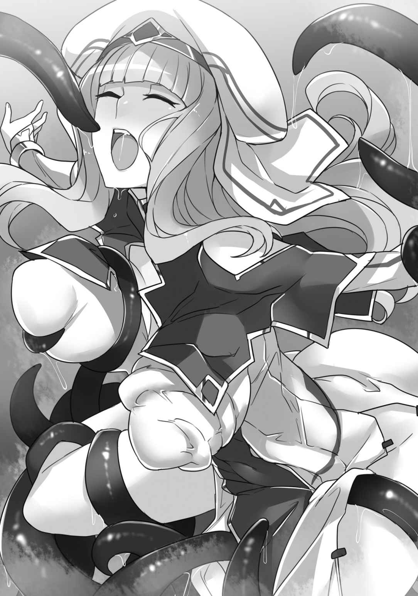
「なんだよ、この化物は！」
俺は、今度こそ前に出てリアを守るために『光の剣』を振るった。さすがに『光の剣』ならば斬れる。ドロッとした黒い触手を斬り払ってリアを救い出すが、触手の数が多過ぎてとてもじゃないが敵わない。
このままじゃ、触手の数で押し切られてしまう。
「これは、黒の瘴気というやつじゃ。古き者と呼ばれる、異界に住む異形の神々の眷属じゃな。黒い霧のような大気が様々な形に姿を変えて、特に意味もなく周りの物を攻撃することが多いのじゃ」
オラクルが衝撃波で、向かってくる黒い触手を撃ち落としながら、冷静に解説した。
意味もなく攻撃してくる敵とか、怖過ぎるだろ！
「オラクル、どう倒せばいいかわかるか？」
「相手は伝説級の混沌生物じゃよ。ワシらでは到底敵わないので、早急な撤退を強くお勧めするのじゃ！」
「えー、敵の弱点とか教えてくれるんじゃないのかよ！」
なんのための解説役だよ。
「そんなこと言われても、黒の瘴気は不定形じゃから、よくわからんのじゃ。弱点も変身の度に変化するのじゃ！」
触手を吐き出す不定形の粘体だった異形の化物は、オラクルの言った通りまた霧状になったかと思うと真っ黒いスモッグに姿を戻して、今度は漆黒の鱗を持つドラゴンとして出現した。
「これは黒炎竜の化身か？ ドラゴンならば私が！」
竜殺しの大剣を振りかぶって、ルイーズが果敢に襲いかかる。しかし、大きく開かれた口から噴き出る、黒い炎によって焼き払われてしまう。
「ルイーズ！」
「ぐあぁああ」
極限までブレス耐性を強めて『黒飛竜の鱗の鎧』で身を固めたルイーズが、黒く焼け焦げている。
ルイーズがやられるとか、どれだけ高温のブレスなんだ。
黒炎竜の姿を取っているだけで、ランクは遥かに上なのだろう。
黒の瘴気が吐き出すブレスは、黒飛竜のものとは比べ物にならないほど闇の色が濃い。ドラゴンのブレス耐性が付いている俺達でも、熱くて焼け死にそうだった。
オラクルの語る伝説級というのが、どれほど凄いか知らないが、ドラゴンなんて目じゃないぐらいの強敵らしい。
これはもう......。
「仕方ない。みんな下がれ、撤退するぞ！」
このままだと犠牲が出そうだと思った俺は、オラクルの助言通り一旦引くことにした。傷ついたルイーズの身体を引きずって、洞窟から脱出する。
もしかしたら効くかもしれないと、ありったけの柄付手榴弾のピンを抜いて投げつける。
この際だ、大爆発で洞窟が崩れても構うものか。むしろ崩れて黒の瘴気ごと圧し潰す効果を期待して全部投げつける。
「これが俺の奥の手なんだぞ。頼む、これで死んでくれ！」
十発分の手榴弾が、小さな洞窟の奥で次々と炸裂し、鉱山採掘用の発破が起爆したような大爆発を起こした。
洞窟自体は崩れなかったようだが、さすがにこれだけやれば絶対にダメージあるはず！
これまで、この規模の爆発で倒せなかった敵はいなかった。
しかし、ダメ──。
誘爆の砂煙がもうもうと上がる洞窟の入り口から、それを突き破るように黒炎のブレスが噴き上がってきた。
全く効いている様子はない。
「あれだけの手榴弾を喰らっても、なんともないのかよ......」
俺は、黒の瘴気の強大さに唖然としてしまう。
接近戦をさせれば最強のルイーズもやられた。俺も奥の手のアイテムを使い切った。
今追撃されたら、俺達にはもう対処しようもないが、黒い瘴気はなぜか追ってこなかった。
何も考えていない混沌生物というオラクルの話は、本当なのかもしれない。
洞窟の出入口から時おり漏れでてくる地獄のような黒炎は、とりあえず『黒杉の大盾』を構えたシュザンヌとクローディアによって押さえ込まれている。
同じ魔素溜りの力でできた防具なら、効果があるということだろう。『黒飛竜の鱗の鎧』を着ていたルイーズも、霊薬で治療を受けているが、肌の表面が焼かれただけで大事はなさそうだ。
なぜか、黒い瘴気が洞窟の外まで追ってこないのは不幸中の幸いだが、このままにはしておけない。
何せ相手は、意味不明な攻撃をしてくる異形の神々の眷属である。あんな化物が、ブルセールの街まで行ったら大変な被害が出る。
奴隸少女銃士隊から、マスケット銃を借りて気休めに弾を何度か撃ち込んでみるが、洞窟の中で黒炎竜に姿を変えた黒い瘴気には、とても効いているようには見えない。
『オラクル大洞穴』の時の戦訓を生かして、ちゃんと聖化された弾を使っているのだが、邪悪どころかそれを超えて混沌と化した生物には、もはや効果がないようである。
リアによると、大火事にジョウロで水をかけているようなもので、もう聖水の浄化力でなんとかできるレベルじゃないということだ。
「大砲はまだか？」
「もうすぐ搭載した幌馬車が追いつくはずです」
マスケット銃の弾も、手榴弾十連発も通用しない相手。そこに砲弾を一発撃ち込んだところで効果があるという保証もないが、こうなったらなんでもやってみるしかない。
「ご主人様、馬車が来ました」
「よし、青銅砲を運び出してセットを頼む。砲弾を撃ち込んでやろう」
俺は、馬車に何か使えるアイテムはないかと探る。
「あっ、そうだ。これがあった」
灰銀色に輝くチタンの砲弾。
旅の途中に、半ば手慰みでこしらえたものだが、今こそ使う時かもしれない。
何せ『魔素の瘴穴』を封印していた建物の破片でできた特別製の砲弾である。
俺が手ずからできる限りの処置は施したので、普通の砲弾より確実に威力があるはずだ。
「よし、この砲弾を撃ち込んでください」
俺はチタンの砲弾を、車輪の付いた青銅砲を洞窟前に備え付けているライル先生に手渡した。
「これは、なんですか？」
「例の『魔素の瘴穴』の建材で作った、特別製の砲弾です。聖化もされてます」
「なるほど、この砲弾ならば、異形の怪物にも効果があるかもしれません。この際です。砲身が壊れるギリギリまで火薬の量を増やし、私がウェイクから学んだ『スパイラル・アロー』の魔法も同時に付与します」
効果があるなんて保証はどこにもないが、ここは俺達が出せる力の全てを尽くしてぶつけてみるしかない。
「装填！」
ライル先生の合図で、ロールが火薬とチタンの砲弾を装填する。
「目標、洞窟内の化物！」
その間に、ライル先生は四分儀片手に角度を計算して、高低転把のハンドルを回し、計算された角度まで砲身を上げた。
それと同時に、先生がウェイクに教えられた『スパイラル・アロー』の魔法もかける。砲身が魔法力で青く発光し始めた。
「火管用意！」
ライル先生の合図と同時に、砲身上部に開けられた火門に、シャロンが棍棒のような金属の筒を差し込む。
あとは、火管の先端にＳ字形の金具を掛けて、繋がれた紐を引くだけ。
「撃て！」
砲撃手は俺がやった。
頼む、これで決まってくれという祈りを込めて、シャロンから受け取った紐を思いっきり引っ張る。
摩擦で火が起き、限界量ギリギリまで込められた火薬を爆発させる。
大砲の炸裂は、ものすごい力で砲弾を前に押し出すが、その反動で青銅砲の台座も後退させられて、ガラガラと車輪の音を響かせた。
ドオンと、いつもよりも一際重く分厚い砲声。
俺が砲弾に付けた鉛の鋲に、ライル先生が掛けた『スパイラル・アロー』の魔法が加わり、超回転しながら飛んで行くチタンの円錐弾は、一直線に黒の瘴気がいる洞窟の中に吸い込まれて行って。
そして、刹那に眩い閃光が起こった。
「爆発？」
炸裂弾ではないので、爆発が起こるわけもない。
それが、着弾時に光を発するとは──。
火薬の黒煙が収まってから、洞穴の中をこわごわと確認すると、敵の姿はもうどこにもなかった。
異形の化物、黒の瘴気の残骸どころか、着弾したはずのチタンの砲弾も見つからず、すでに封印された『魔界の門』にも被害はなかった。
あっけない幕切れ。
「これは、倒せたってことでいいんですかね？」
チタンの砲弾を受けた黒の瘴気は、跡形もなく霧散してしまったので、なんか倒したという手応えがない。
「さすがは古の勇者レンスが作った魔法金属を、今の勇者であるタケル殿が鍛えた砲弾ですね。『魔素の瘴穴』を抑えていた金属なのですから、『魔界の門』から出た異形の化物にも効果があったということでしょう」
ライル先生はそうやって話をまとめるけど、本当かよと思ってしまう。
なんで倒せたんだろう。弓聖ロウの編み出した究極の弓魔法『スパイラル・アロー』の力か。あるいは、先生の言う通りチタンらしき銀灰色の塊には、もともと瘴穴からの魔物を防ぐ魔法がかけられていたのだろうか。
もしかすると、黒の瘴気が吐いた黒炎で熱せられたチタンの激烈な化学反応が、黒の瘴気に対しては猛毒だったのかもしれない。
黒の瘴気は、チタンの砲弾とともに跡形もなく消失してしまったので、その真相は謎のままとなった。
ともかく、これで『魔界の門』の封印は済んだのだ。あとは、悪影響がないことを願うしかない。
今回の元凶であるカアラは、悪気のない笑顔で言う。
「何事も無く、無事にすんで良かったですね、タケル様！」
「何事もあり過ぎるよ！ カアラ、お前こうなるとわかってたんじゃないだろうな？」
俺が詰め寄ると、額の呪隷紋を指し示して微笑むカアラ。発動していないから、わざとじゃなくて本当に予想外のトラブルだったって言いたいのか。
しかし、悪気がないのが一番厄介とは、よく言ったものである。
まさか、あんな想定外の超生物が湧きだしてくるとは、『魔界の門』って名前だった段階で警戒すべきだった。
一言で言えば、地中から湧き出る魔素溜りの封印口は、人間どころか魔族にもコントロール不可能な危険な存在だったということ。
やはり、安易に触れてはならないものなのだ。
今回の教訓としては、魔族の甘言に乗せられると、ろくなことはないってことか。
カアラの甘い囁きに耳を傾けた連中は、全員が滅びる方向に一直線であった。
「人間の浅知恵で、大自然の力をコントロールできるなどと思い上がれば、手痛いしっぺ返しを喰らうということじゃな」
「オラクル、そんな昔の悲観的な科学小説の結末みたいな感じで、無理にまとめようとしなくていいからね」
お前は、どこの博士だ。
そんなこと言われなくても、俺は二度と魔素溜りを利用しようなんて思わない。
今回はなんとかなったが、もう怖いのは懲り懲りだ。
●
さあ、トランシュバニア公国軍が駆けつける前に、さっさとお家に帰ろう。
「おい、我が主。黒飛竜の死体......」
「ああ、ごめんルイーズ、それだけ解体して持って帰ろうな」
黒飛竜の内臓も、ビターテイストで悪い味じゃないしな。
単なる食い意地だと思っては可哀想だ。ルイーズはさっき、黒の瘴気が化けた黒炎竜モドキのブレスに手酷くやられたから、食事でもっと強化したいのかもしれない。
黒飛竜を匠の技で解体するルイーズを手伝って、鱗だの肉だのを抱えて幌馬車に戻ると。
「うわー」
すでに、周りはトランシュバニアの兵隊に囲まれていた。
しかも、先頭には黄金の王冠を被った赤ローブの威厳ある王が、宝玉の杖を持って待ち構えている。
また面倒な事になりそうだなと思ってたら、その王様が俺の前に跪いた。
いや、もう豪奢な絹のローブが土に汚れるのもかまわず、本当の土下座だ。
どうしたんだ一体。
「救国の勇者、佐渡タケル様！ トランシュバニア公王、ヴァルラム・トランシュバニア・オラニアであります。この度、我が国の危機を救っていただき、感謝の言葉もございません」
「いや、そのなんだ、土下座するほどのことは......」
今回は自作自演だから、悪いのは俺達なんだよ。
凄い気まずい、何これ、猛烈に気まずいぞ。
なんでこんな時に限って、こんなまともな良い王様に当たっちゃうんだろ。
「いや、土下座どころでは済みません。本来なら、この素っ首を斬り落として差し出しても足りぬほど！」
「いやいや......止めてください！」
そんなに謝られると、こっちも罪悪感があるんだよ。
「ワシのなんと愚かで罪深きことか。主戦派の家臣を押し止められず、勇者様を亡きものにしようとする軍の派遣を許したのは、この愚王です。それにもかかわらず、勇者様は攻め返すどころか、我が国の危機を救ってくださいました。この大罪いかに償うべきか、この御恩いかにして返して良いものか！」
あーまあ、そういう形になっちゃったもんな。
この首をお斬りくださいと喚きながら、地べたに額を何度も擦りつけるので、公王の本気の謝意が伝わる。
......というか、ちょっと引く。
「ヴァルラム公王陛下。無事に和議が済んで戦争も終結したわけで。『魔界の門』も、なんとか封印できたのだから。今回はお互いに水に流すってことで、もうお家に帰りたいんだけど......」
「なんと寛大な勇者様、この愚王を許すとそう申されたかぁぁ！」
ヴァルラム公王は土下座のまま、俺を逃すまいとズササ、ズササと滑るように前に回り込む。
ゲザりながら横にスライドするとか、なんという鮮やかな土下座技......できる！
「ヴァルラム公王陛下、どいてくださいよ」
「いえ、どうかブルセールの我が城においでください。公国を救っていただいた勇者様を歓待もせずに帰したとあっては、このヴァルラムの名折れです」
「いや、もう和議は終わってるんですよね。帰りたいなあ......」
しかし、もう俺達はブルセールの街から来た、圧倒的な数の公国軍の兵士に囲まれてしまっている。
ライル先生が、やんわりと俺に耳打ちする。
「ここは一旦、お招きを受けたほうがいいんじゃないですか」
「ですよね......」
トランシュバニア公国、首都ブルセール。
シレジエ王国に比べれば小国とはいえ、一国の首都である。その居城は、立派なお城であった。
謁見の間にでも通されるのかなと思いきや、俺達が通されたのは、応接間であった。こっちのほうが寛げるからいいんだけど。
柔らかい絹張りのソファーに腰掛けると、そこでもヴァルラム公王は、まず土下座である。
「あの、ヴァルラム公。いい加減に土下座はもう止めましょうよ。こっちも落ち着けないから椅子に座ってくださいよ」
この人、わかってて俺の罪悪感を刺激してるんじゃないだろうな。
そんなにされたら、俺だって寛げないじゃないか。
「それでは、勇者様にお許し頂いたところで、顔を上げさせていただきます」
そう言うと、ヴァルラム公王はようやく豪奢なテーブルの向かい側のソファーに腰掛けてくれた。
「あのそれで、俺に何かご用事でしょうか」
ただお茶でも出して歓待してくれるなら、それはそれでいいのだが、すでにシレジエ王国との和議が済んでいるというのに、ここまで強引な引き留めをしてくるのだ。
俺の第六感が、これまで同様にトラブルの予感を感じ取っていた。
「うむ、さすがは聡明なる勇者様。お引き留めしたワシの思惑など、最初からお見通しですな」
「もし何か困りごとなら、力になりますよ」
勇者とはいえ俺みたいな若造相手に、地べたに頭まで擦りつけて見せたヴァルラム公王には、俺は強い好感を持っている。
土下座はやり過ぎだと思うが、それだけに真摯な誠意を感じざるを得ない。
民のために綺羅びやかなローブを泥に汚すのも厭わず、地べたに頭を付けてみせる王の姿は、清々しいではないか。
正直シレジエ王国の古い貴族連中なんかより、ヴァルラム公王のほうがよっぽど立派な人物だ。
戦乱を最小限度に食い止めるためだったとはいえ、魔族の手まで借りた自作自演で、トランシュバニア公国を無理やり敗戦に追い込んだわけだから、ちょっとばかり罪悪感もある。
俺に力になれることがあるなら、助けてやりたいとも思う。
「そうか、力になってくださるかムコ殿！」
威厳あるヴァルラム公王は、俺の手を強く握った。
「ムコ殿？」
「はい、それではお言葉に甘えて紹介させていただきます。ワシには、一粒種の娘がおりまして、勇者様に是が非でもトランシュバニア公国とともにもらっていただきたいと思っております」
公王が何を言っているのか話が読めないうちに、ヴァルラム公王の一人娘という亜麻色の長い髪の公女が応接間に入ってきた。
公女は、俺よりはかなり年下にみえる。歳の頃は、十六歳ぐらいだろうか。
豪奢な青いドレスの胸元を盛り上げる豊かな発育具合。麗しいシルエット姫様と比べると、女性らしい可愛さを感じさせる公女様である。
「お初にお目に掛かります。勇者、佐渡タケル様。ヴァルラムが一子、カロリーン・トランシュバニア・オラニアでございます。この度は、我が国が大変なご迷惑をお掛けしまして、私からも心よりの謝罪を......」
そう名乗りを上げたカロリーン公女殿下が、挨拶してから俺の前に公王と同じように深く跪く。
さすが親子、公女のほうも腰が低い。ドレス姿で四つん這いだ。土下座も困るけど、四つん這いから入られるのも困る。
「いや、公女も。どうかお顔をあげてください。ドレスの裾が汚れますから」
「はい。この度は公国を救ってくださって、感謝の言葉もございません。お優しい勇者様にお会いできて、本当に光栄です」
そう言って上げたカロリーン公女のお顔は優しげである。清楚で、お淑やかな雰囲気。あと眼鏡かけてる。
うーん、眼鏡っ娘か。そう思って眺めていたら、スッと公女が微笑んだ。その笑顔は花が咲き誇るようで......。
いや、ダメだろ。公女相手に、いい雰囲気を作っている場合ではない。
さっきから、妙な話になってるから早く確認しないと。
「あの、ヴァルラム公。これは一体......」
もうシレジエ王国との和議は終わってるんだよね。ムコ殿ってなんの話だよ？
俺に、一人娘を紹介してどうしようっていうんだ。
「ですから勇者様に、トランシュバニア公国を娘ごとお譲りしたいのです。ワシの娘であるカロリーンを貰って頂いたのち、速やかにトランシュバニア公王の座を偉大なる勇者、佐渡タケル様に禅譲したいと、こう申しておる次第でして......」
やっぱりそんな話かよ！
一難去って、また一難。
威厳あるヴァルラム公王と、可憐なるカロリーン公女に挟まれて、俺はこの場をどう切り抜けて逃げるか、思案を巡らせ始めたのだった......。
ＧＣノベルズ
酷幻想をアイテムチートで生き抜く ３
著者 風来山
イラスト ばん！
装丁 マイクロハウス
発行 株式会社マイクロマガジン社
〒１０４-００４１ 東京都中央区新富１-３-７ヨドコウビル
編集部 ＴＥＬ ０３-３５５１-９５６３／ＦＡＸ ０３-３２９７-０１８０
販売部 ＴＥＬ ０３-３２０６-１６４１／ＦＡＸ ０３-３５５１-１２０８
著作権 ©2016 Furaisan
当ファイルは、ＧＣノベルズ『酷幻想をアイテムチートで生き抜く ３』（２０１６年４月６日 初版発行）に基づいて作成しております。
本書に関するアンケートにご協力ください。
ご協力いただいた方全員に、書き下ろし特典をプレゼント！
ＵＲＬ http://micromagazine.net/me/
※一部対応していない機種もありますが、スマートフォンにも対応しています。
※サイトへのアクセス、登録・メール送信時の際にかかる通信費はご負担ください。
本書は小説投稿サイト「小説家になろう」(http://syosetu.com/)に掲載されていたものを、加筆の上書籍化したものです。
この物語はフィクションであり、実在の人物、団体、地名などとは一切関係ありません。
※本作品の全部あるいは一部を無断で複製・転載・配信・送信したり、ホームページ上に転載することを禁止します。本作品の内容を無断で改変、改ざん等行うことも禁止します。また、有償・無償にかかわらず本作品を第三者に譲渡することはできません。
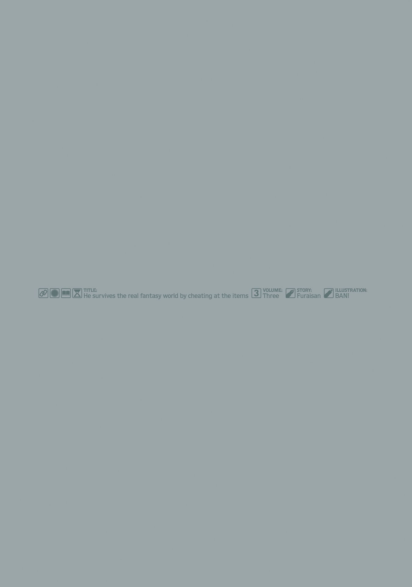